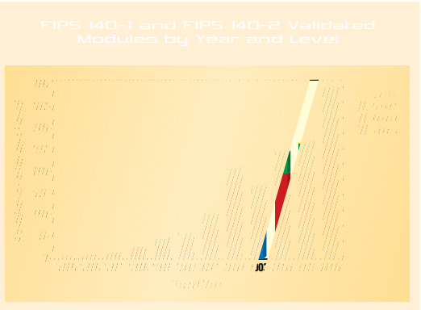

NIST IR 7399 日本語訳
英語タイトル : Computer Security Division 2006 Annual Report日本語タイトル : コンピューターセキュリティ部門 2006 年次報告書
公開日 : 2007-03-21
原文URL : https://csrc.nist.gov/pubs/ir/7399/final
原本 PDF : https://doi.org/10.6028/NIST.IR.7399
訳文 : 有志による非公式の日本語訳（AI による翻訳とレビュー）。全 775 段落のうち 764 段落を翻訳済み（原文取得日 : 2026-10-31）
[要約] NIST IR 7399 は、NIST の情報技術研究所のコンピューターセキュリティ部門（CSD）の 2006 年の活動をまとめた年次報告書です。ごあいさつによれば、この年の特筆すべき点には、FIPS 201 の標準群の拡充・改善を通じた国土安全保障大統領指令 12 の実施の支援、FISMA が課す責務の履行（FIPS 200 の発行など）、現行のセキュアハッシュアルゴリズムを置き換える競争型プログラムの開始への高い優先度の設定があります。報告書は、部門の組織、セキュリティマネジメント・支援、セキュリティ試験・メトリクス、セキュリティ技術、セキュリティ研究と新興技術の各分野の活動を紹介しています。このほか、表彰と受賞、2006 年の刊行物、当部門および NIST との連携方法も記載しています。
Computer Security Division
コンピューターセキュリティ部門
2006 Annual Report
2006年年次報告書
Table of Contents
目次
Welcome Letter
ごあいさつ
Welcome
ごあいさつ
In 2006, the Computer Security Division (CSD) of NIST’s Information Technology Laboratory engaged in a number of initiatives for improving information system security in the Federal government. Both automated tool development and increased outreach activities were initiated to communicate information technology risks, vulnerabilities, and protection requirements—particularly for new and emerging technologies. The CSD continued to research and publicize IT vulnerabilities. Emphasis was placed on development of techniques for affordable security and privacy mechanisms for Federal information systems. We continued to develop standards, metrics, tests, and validation programs to promote, measure, and validate security in systems and services. We also developed guidance to increase secure IT planning, implementation, management, and operation. Affected customer organizations include federal, state, and local governments, the healthcare community, colleges and universities, small businesses, the private sector, and the international community.
2006年、NIST 情報技術研究所のコンピューターセキュリティ部門（CSD）は、連邦政府における情報システムのセキュリティを向上させるための数多くの取り組みに携わりました。情報技術のリスク、脆弱性、保護要件を、とりわけ新技術や新興技術について伝えるため、自動化ツールの開発とアウトリーチ活動の拡大の両方に着手しました。CSD は IT の脆弱性の研究と周知を続けました。連邦情報システム向けに、手頃なセキュリティ機構およびプライバシー機構の技法を開発することに重点を置きました。システムおよびサービスのセキュリティを促進、測定、検証するための標準、メトリクス、試験、検証プログラムの開発も続けました。さらに、安全な IT の計画、実装、管理、運用を促進するためのガイダンスも作成しました。対象となる顧客組織には、連邦、州、地方の各政府、医療コミュニティ、大学、中小企業、民間部門、国際コミュニティが含まれます。
This year also brought additional security challenges along with the ever-advancing improvements in technology, improvements in citizens’ access to government systems and information, faster communications, reduced paperwork, and streamlined processes. Our work this year met those security challenges with a breadth and depth of security areas intended to allow our customers to accomplish their missions while providing for confidentiality of their information, maintaining the availability of their resources and ensuring the integrity of their data. High priority was given to initiating a competitive program for replacement of current secure hashing algorithms employed in data source and content integrity protection mechanisms.
この年は、技術の絶え間ない進歩、市民による政府のシステムや情報へのアクセスの改善、通信の高速化、書類事務の削減、プロセスの合理化とともに、新たなセキュリティ上の課題ももたらしました。今年の当部門の取り組みは、幅広く奥行きのあるセキュリティ分野でそれらの課題に応え、顧客が情報の機密性を確保し、資源の可用性を維持し、データの完全性を保証しながら、その使命を果たせるようにすることを目指したものです。データ出所と内容の完全性を保護する機構で使われている現行のセキュアハッシュアルゴリズムを置き換えるための、競争型プログラムの開始に高い優先度を置きました。
One highlight of our work in 2006 was expanding and refining the Federal Information Processing Standards (FIPS) 201 standard suites and supporting implementation of Homeland Security Presidential Directive 12’s mandate for common procedures and mechanisms for identity verification of Federal employees and contractors. We also continued our progress in fulfilling the mandates of the Federal Information Security Management Act of 2002 (FISMA), which resulted in revision of NIST Special Publication (SP) 800-53, Recommended Security Controls for Federal Information Systems; coordination of the draft SP 800-53A, Guide for Assessing the Security Controls in Federal Information Systems; and publication of FIPS 200, Minimum Security Requirements for Federal Information and Information Systems. The Cryptographic Module Validation Program was expanded to include 13 laboratories in 4 countries and continues to ensure the protection of sensitive information in computer and telecommunication systems, including voice systems. Research and development efforts included security for Radio Frequency IDentification (RFID) devices and other wireless communications systems, digital forensic tools and methods, Internet security protocols, and expansion of the National Vulnerability Database.
2006年の取り組みの特筆すべき点の一つは、連邦情報処理標準（FIPS）201 の標準群を拡充・改善し、連邦職員および請負業者の本人確認に関する共通の手順と機構を求める国土安全保障大統領指令 12 の実施を支援したことです。また、2002年連邦情報セキュリティマネジメント法（FISMA）が課す責務の履行も引き続き進め、その成果として、NIST 特別刊行物（SP）800-53、Recommended Security Controls for Federal Information Systems の改訂、SP 800-53A、Guide for Assessing the Security Controls in Federal Information Systems のドラフトの調整、FIPS 200、Minimum Security Requirements for Federal Information and Information Systems の発行がありました。暗号モジュール検証プログラムは、4 か国 13 の試験所を含む規模に拡大し、音声システムを含むコンピューターおよび電気通信システムの機微な情報の保護を引き続き確保しています。研究開発の取り組みには、無線周波数識別（RFID）デバイスやその他の無線通信システムのセキュリティ、デジタルフォレンジックのツールと手法、インターネットセキュリティプロトコル、国家脆弱性データベースの拡充が含まれました。
We will continue to strive to provide products and services that protect and enhance confidence in the nation’s information technology systems.
当部門は、国の情報技術システムへの信頼を守り高める製品とサービスを提供すべく、今後も努力を続けます。
William Curtis Barker
Division Chief
William Curtis Barker
部門長
［人物の写真。人物が写っているため、この非公式サイトには掲載していません。原本 PDF を参照してください。］
［人物の写真。人物が写っているため、この非公式サイトには掲載していません。原本 PDF を参照してください。］
Division Organization
部門の組織
![Organization chart of the division. At the top: "William Curtis Barker", "Division Chief". A vertical line runs down from him and crosses two horizontal bars. Labels are placed on both sides of the line, from top to bottom: left "Security Management & Assistance Group", right "Security Testing & Metrics Group"; left "Elizabeth Chew", "Group Manager", right "Ray Snouffer", "Group Manager"; left "Security Technology Group", right "Security Research & Emerging Technologies"; left "William Burr", "Group Manager", right "Timothy Grance", "Group Manager". No boxes are drawn around the labels, so the chart itself does not show which manager heads which group.](assets/ir-7399/p0004-figure-01.png)
部の組織図です。最上部に「William Curtis Barker」「Division Chief」（部長）とあり、そこから縦線が下へ伸びて 2 本の横線と交わります。線の両側に、上から次のラベルがあります。左に「Security Management & Assistance Group」（セキュリティ管理・支援グループ）、右に「Security Testing & Metrics Group」（セキュリティ試験・測定基準グループ）。左に「Elizabeth Chew」「Group Manager」（グループマネージャー）、右に「Ray Snouffer」「Group Manager」。左に「Security Technology Group」（セキュリティ技術グループ）、右に「Security Research & Emerging Technologies」（セキュリティ研究・新興技術）。左に「William Burr」「Group Manager」、右に「Timothy Grance」「Group Manager」。ラベルを囲む枠は描かれておらず、どのマネージャーがどのグループを率いるかは図からは読み取れません。
The Computer Security Division Responds to the Federal Information Security Management Act of 2002
コンピューターセキュリティ部門による2002年連邦情報セキュリティマネジメント法への対応
The E-Government Act [Public Law 107-347] passed by the 107th Congress and signed into law by the President in December 2002 recognized the importance of information security to the economic and national security interests of the United States. Title III of the E-Government Act, entitled the Federal Information Security Management Act of 2002 (FISMA), included duties and responsibilities for the Computer Security Division in Section 303 “National Institute of Standards and Technology.” Work to date includes—
第 107 議会で可決され、2002年12月に大統領が署名して成立した電子政府法［Public Law 107-347］は、情報セキュリティが米国の経済上および国家安全保障上の利益にとって重要であることを認めました。電子政府法の第 III 編である 2002年連邦情報セキュリティマネジメント法（FISMA）は、第 303 条「National Institute of Standards and Technology」で、コンピューターセキュリティ部門の義務と責任を定めています。これまでの取り組みは次のとおりです。
•Provide assistance in using NIST guides to comply with FISMA – Information Technology Laboratory (ITL) Computer Security Bulletin Understanding the New NIST Standards and Guidelines Required by FISMA: How Three Mandated Documents are Changing the Dynamic of Information Security for the Federal Government (issued November 2004).
•FISMA への準拠に NIST のガイドを活用するための支援の提供 – 情報技術研究所（ITL）コンピューターセキュリティ広報 Understanding the New NIST Standards and Guidelines Required by FISMA: How Three Mandated Documents are Changing the Dynamic of Information Security for the Federal Government（2004年11月発行）。
•Provide a specification for minimum security requirements for Federal information and information systems using a standardized, risk-based approach – Developed FIPS 200, Minimum Security Requirements for Federal Information and Information Systems (issued March 2006).
•標準化されたリスクベースの取り組み方による、連邦の情報および情報システムの最低限のセキュリティ要件の仕様の提供 – FIPS 200、Minimum Security Requirements for Federal Information and Information Systems を策定（2006年3月発行）。
•Define minimum information security requirements (management, operational, and technical security controls) for information and information systems in each such category – Developed SP 800-53, Recommended Security Controls for Federal Information Systems (revision 1 issued December 2006).
•各区分の情報および情報システムに対する最低限の情報セキュリティ要件（管理面、運用面、技術面のセキュリティ管理策）の定義 – SP 800-53、Recommended Security Controls for Federal Information Systems を策定（改訂第 1 版を2006年12月に発行）。
•Identify methods for assessing effectiveness of security requirements - SP 800-53A, Guide for Assessing the Security Controls in Federal Information Systems (second public draft issued April 2006).
•セキュリティ要件の有効性を評価する方法の特定 - SP 800-53A、Guide for Assessing the Security Controls in Federal Information Systems（第 2 次公開ドラフトを2006年4月に発行）。
•Bring the security planning process up to date with key standards and guidelines developed by NIST – SP 800-18 Revision 1, Guide for Developing Security Plans for Federal Information Systems (issued February 2006).
•NIST が策定した主要な標準およびガイドラインに合わせたセキュリティ計画プロセスの更新 – SP 800-18 改訂第 1 版、Guide for Developing Security Plans for Federal Information Systems（2006年2月発行）。
•Provide assistance to Agencies and private sector – Conduct ongoing, substantial reimbursable and non-reimbursable assistance support, including many outreach efforts such as the Federal Information Systems Security Educators’ Association (FISSEA), the Federal Computer Security Program Managers’ Forum (FCSM Forum), the Small Business Corner, and the Program Review for Information Security Management Assistance (PRISMA).
•機関および民間部門への支援の提供 – 連邦情報システムセキュリティ教育者協会（FISSEA）、連邦コンピューターセキュリティプログラム管理者フォーラム（FCSM Forum）、Small Business Corner、情報セキュリティマネジメント支援のためのプログラムレビュー（PRISMA）など多くのアウトリーチ活動を含め、有償・無償の相当規模の支援を継続的に実施。
•Evaluate security policies and technologies from the private sector and national security systems for potential Federal agency use – Host a growing repository of Federal agency security practices, public/private security practices, and security configuration checklists for IT products. In conjunction with the Government of Canada’s Communications Security Establishment, CSD leads the Cryptographic Module Validation Program (CMVP). The Common Criteria Evaluation and Validation Scheme (CCEVS) and CMVP facilitate security testing of IT products usable by the Federal government.
•民間部門および国家安全保障システムのセキュリティポリシーと技術を、連邦機関による利用の可能性の観点から評価 – 連邦機関のセキュリティ実践、官民のセキュリティ実践、IT 製品のセキュリティ設定チェックリストの、拡大を続けるリポジトリを運営。カナダ政府の通信保安局（Communications Security Establishment）と共同で、CSD は暗号モジュール検証プログラム（CMVP）を主導しています。コモンクライテリア評価・認証スキーム（CCEVS）と CMVP は、連邦政府が使用できる IT 製品のセキュリティ試験を円滑にします。
•Solicit recommendations of the Information Security and Privacy Advisory Board on draft standards and guidelines – Solicit recommendations of the Board regularly at quarterly meetings.
•ドラフトの標準およびガイドラインに関する情報セキュリティ・プライバシー諮問委員会の勧告の募集 – 四半期ごとの会合で、同委員会の勧告を定期的に募集。
•Provide outreach, workshops, and briefings – Conduct ongoing awareness briefings and outreach to our customer community and beyond to ensure comprehension of guidance and awareness of planned and future activities. We also hold workshops to identify areas our customer community wishes addressed, and to scope guidance in a collaborative and open format.
•アウトリーチ、ワークショップ、ブリーフィングの提供 – 顧客コミュニティおよびその外部に対し、ガイダンスの理解と、計画中および将来の活動の認識を確実にするため、啓発ブリーフィングとアウトリーチを継続的に実施。また、顧客コミュニティが取り上げてほしい分野を特定し、ガイダンスの範囲を協調的かつオープンな形式で定めるために、ワークショップを開催。
•Satisfy annual NIST reporting requirement – Produce an annual report as a NIST Interagency Report (IR). The 2003, 2004, and 2005 Annual Reports are available via the Web or upon request.
•NIST の年次報告要件の充足 – NIST 省庁間報告書（IR）として年次報告書を作成。2003年、2004年、2005年の年次報告書は、ウェブから、または請求により入手できます。
Security Management and Assistance
セキュリティマネジメント・支援
Strategic Goal
戦略目標
Develop and improve mechanisms to protect the integrity, confidentiality, and authenticity of Federal agency information by developing security mechanisms, standards, testing methods, and supporting infrastructure requirements and methods.
セキュリティの仕組み、標準、試験方法、およびそれらを支えるインフラストラクチャの要件と方法を策定することにより、連邦機関の情報の完全性、機密性、真正性を保護する仕組みを開発し、改善します。
Overview
概要
Information security is an integral element of sound management. Information and computer systems are critical assets that support the mission of an organization. Protecting them can be as important as protecting other organizational resources, such as money, physical assets, or employees. However, including security considerations in the management of information and computers does not completely eliminate the possibility that these assets will be harmed.
情報セキュリティは、健全な経営に欠かせない要素です。情報システムおよびコンピューターシステムは、組織の使命を支える重要な資産です。これらの保護は、資金、物的資産、職員といった他の組織資源の保護と同じくらい重要になりえます。しかし、情報やコンピューターの管理にセキュリティの考慮事項を取り入れても、これらの資産が被害を受ける可能性が完全になくなるわけではありません。
Ultimately, responsibility for the success of an organization lies with its senior management. They establish the organization’s computer security program and its overall program goals, objectives, and priorities in order to support the mission of the organization. They are also responsible for ensuring that required resources are applied to the program.
組織の成功に対する最終的な責任は、上級管理者にあります。上級管理者は、組織の使命を支えるために、組織のコンピューターセキュリティプログラムと、プログラム全体の目標、目的、優先順位を定めます。また、必要な資源がプログラムに確実に充てられるようにする責任も負います。
Collaboration with a number of entities is critical for success. Federally, we collaborate with the U.S. Office of Management and Budget (OMB), the U.S. Government Accountability Office (GAO), the National Security Agency (NSA), the Chief Information Officers (CIO) Council, and all Executive Branch agencies. We also work closely with a number of information technology organizations and standards bodies, as well as public and private organizations.
成功のためには、多数の主体との協働が不可欠です。連邦レベルでは、米国行政管理予算局（OMB）、米国政府説明責任局（GAO）、国家安全保障局（NSA）、最高情報責任者（CIO）評議会、およびすべての行政府機関と協働しています。また、多数の情報技術組織や標準化団体、公的・民間の組織とも緊密に連携しています。
Major initiatives in this area include the FISMA Implementation Project; extended outreach initiatives and information security training, awareness and education; and producing and updating NIST Special Publications on security management topics. Key to the success of this area is our ability to interact with a broad constituency—Federal and nonfederal—in order to ensure that our program is consistent with national objectives related to or impacted by information security.
この分野の主要な取り組みには、FISMA Implementation Project、アウトリーチ活動の拡大と情報セキュリティのトレーニング・啓発・教育、セキュリティマネジメントのトピックに関する NIST 特別刊行物の作成と更新があります。この分野の成功の鍵は、情報セキュリティに関連する、または情報セキュリティの影響を受ける国家的目標に当プログラムを確実に整合させるために、連邦および連邦以外の幅広い関係者と交流できる能力にあります。
FISMA Implementation Project
FISMA Implementation Project
In response to FISMA, we continue to develop key security standards and guidelines for Federal agencies and their support contractors that will fundamentally change how the government protects its most important information systems. Phase I of the project includes the development of—
FISMA を受けて、当部門は、政府が最も重要な情報システムを保護する方法を根本から変えることになる、連邦機関とその支援請負業者向けの主要なセキュリティ標準およびガイドラインの策定を続けています。このプロジェクトのフェーズ I には、次の策定が含まれます。
•FIPS 199, Standards for Security Categorization of Federal Information and Information Systems (Completed);
•FIPS 199、Standards for Security Categorization of Federal Information and Information Systems（完了）。
•FIPS 200, Minimum Security Requirements for Federal Information and Information Systems (Completed);
•FIPS 200、Minimum Security Requirements for Federal Information and Information Systems（完了）。
•NIST SP 800-37, Guide for the Security Certification and Accreditation of Federal Information Systems (Completed);
•NIST SP 800-37、Guide for the Security Certification and Accreditation of Federal Information Systems（完了）。
•NIST SP 800-53 Revision 1, Recommended Security Controls for Federal Information Systems (Completed 12/2006);
•NIST SP 800-53 改訂第 1 版、Recommended Security Controls for Federal Information Systems（2006年12月完了）。
•NIST SP 800-53A, Guide for Assessing the Security Controls in Federal Information Systems (Target Completion July 2007);
•NIST SP 800-53A、Guide for Assessing the Security Controls in Federal Information Systems（完了目標は2007年7月）。
•NIST SP 800-59, Guideline for Identifying an Information System as a National Security System (Completed); and
•NIST SP 800-59、Guideline for Identifying an Information System as a National Security System（完了）。
•NIST SP 800-60, Guide for Mapping Types of Information and Information Systems to Security Categories (Completed).
•NIST SP 800-60、Guide for Mapping Types of Information and Information Systems to Security Categories（完了）。
The security standards and guidelines developed in Phase I will assist Federal agencies in—
フェーズ I で策定されたセキュリティ標準およびガイドラインは、連邦機関による次の取り組みを支援します。
•Implementing the individual steps in the risk management framework as part of a well-defined and disciplined system development life cycle process;
•明確に定義され、規律あるシステム開発ライフサイクルのプロセスの一環として、リスクマネジメントフレームワークの個々のステップを実施すること。
•Demonstrating compliance to specific requirements contained within the legislation; and
•法令に含まれる特定の要件への準拠を示すこと。
•Establishing a level of security due diligence across the Federal government.
•連邦政府全体でセキュリティに関するデューデリジェンスの水準を確立すること。
In FY 2007, we will host the NIST Information Security Seminar Series, a series of workshops to assist in clarification of NIST standards and guidelines. The initial seminar is scheduled on January 10, 2007, and will feature—
2007会計年度には、NIST 標準およびガイドラインの明確化を助けるワークショップ・シリーズである NIST Information Security Seminar Series を開催します。最初のセミナーは2007年1月10日に予定されており、次の内容を取り上げます。
•NIST personnel providing an in-depth look at NIST SP 800-53; and
•NIST の職員による NIST SP 800-53 の詳細な解説。
•Representatives from the U.S. Office of Management and Budget (OMB), the U.S. Government Accountability Office (GAO), and the Inspectors General (IG) community speaking about FISMA guidance and answering questions.
•米国行政管理予算局（OMB）、米国政府説明責任局（GAO）、監察総監（IG）コミュニティの代表者による、FISMA ガイダンスに関する講演と質疑応答。
Phase II of the FISMA Implementation Project will focus on the development of a program for credentialing public and private sector organizations to provide security assessment services for Federal agencies. The security services involve the comprehensive assessment of the management, operational, and technical security controls in Federal information systems to determine the extent to which the controls are implemented correctly, operating as intended, and producing the desired outcome with respect to meeting the security requirements for the system. On April 26, 2006, we hosted the FISMA Implementation Project Phase II Workshop on Credentialing Program for Security Assessment Service Providers. The purpose of the workshop was to discuss requirements and possible options for the credentialing of security assessment providers. In FY 2007, a workshop will be held to further define Phase II activities.
FISMA Implementation Project のフェーズ II は、連邦機関にセキュリティ評価サービスを提供する官民の組織を認定するプログラムの策定に重点を置きます。このセキュリティサービスでは、連邦情報システムの管理面、運用面、技術面のセキュリティ管理策を包括的に評価し、その管理策が正しく実装され、意図したとおりに動作し、システムのセキュリティ要件を満たすうえで望ましい成果を生んでいる程度を判断します。2006年4月26日に、FISMA Implementation Project Phase II Workshop on Credentialing Program for Security Assessment Service Providers を開催しました。このワークショップの目的は、セキュリティ評価サービス提供者の認定に関する要件と、考えうる選択肢を議論することでした。2007会計年度には、フェーズ II の活動をさらに明確にするためのワークショップが開かれる予定です。
http://csrc.nist.gov/sec-cert
Contact: Ms. Elizabeth Chew
(301) 975-5236
elizabeth.chew@nist.gov
http://csrc.nist.gov/sec-cert
連絡先: Ms. Elizabeth Chew
(301) 975-5236
elizabeth.chew@nist.gov
Minimum Security Requirements and Security Controls
最低限のセキュリティ要件とセキュリティ管理策
Following the approval and publication of FIPS 200, Minimum Security Requirements for Federal Information and Information Systems, we began the biennial review and update cycle for NIST SP 800-53. This cycle is important to ensure that the security controls listed in SP 800-53 and the minimum security controls populating the control baselines represent the current state of the practice in safeguards and countermeasures for Federal information systems. During the past year, we received many insightful comments from government and industry on the format, structure, and content of SP 800-53. The recommendations for modifications reflect (1) customer experience gained from employing the security controls; (2) changing threat environments; and (3) new technologies that are available and can impact information security. In addition to proposing necessary changes to SP 800-53, it was also important to maintain a degree of stability within the publication as customers gained a better understanding of the security controls and began to employ the controls within their organizational information systems. In the first major update to this publication, the basic structure/concepts have been maintained, while the material has been significantly refined. NIST SP 800-53, Revision 1, focuses on improving the clarity of the security controls, eliminating redundancies among controls, and expanding the supplemental guidance for the controls in key areas. Specific changes include—
FIPS 200、Minimum Security Requirements for Federal Information and Information Systems の承認と発行を受けて、NIST SP 800-53 の 2 年ごとの見直し・更新サイクルを開始しました。このサイクルは、SP 800-53 に挙げられたセキュリティ管理策と、管理策ベースラインを構成する最低限のセキュリティ管理策が、連邦情報システムのための保護措置と対策の実践の現状を表すものであることを確保するために重要です。昨年は、SP 800-53 の形式、構成、内容について、政府と産業界から多くの示唆に富むコメントが寄せられました。修正の勧告には、(1) セキュリティ管理策を利用して得られた顧客の経験、(2) 変化する脅威環境、(3) 利用可能になり、情報セキュリティに影響を及ぼしうる新技術が反映されています。SP 800-53 に必要な変更を提案するだけでなく、顧客がセキュリティ管理策への理解を深め、組織の情報システムで管理策を使い始めたことから、この刊行物の安定性をある程度保つことも重要でした。この刊行物の最初の大規模な更新では、基本的な構造と概念を維持しつつ、内容を大幅に洗練させました。NIST SP 800-53 改訂第 1 版は、セキュリティ管理策の明確さの向上、管理策間の冗長性の排除、主要分野における管理策の補足ガイダンスの拡充に重点を置いています。具体的な変更には次のものがあります。
•Additions to the security control catalog, reflecting new controls and control enhancements that will provide customers with greater choices in supplementing their minimum baseline security controls;
•セキュリティ管理策カタログへの追加。最低限のベースラインのセキュリティ管理策を補う際に、顧客により多くの選択肢をもたらす新しい管理策と管理策の拡張を反映しています。
•Additions to the minimum security control baselines reflecting an increased need for protection within Federal information systems and to better align the controls with current Federal policy and recommended security practices;
•最低限のセキュリティ管理策ベースラインへの追加。連邦情報システム内の保護の必要性の高まりを反映し、管理策を現行の連邦政策や推奨されるセキュリティ実践により適切に整合させるものです。
•Expansion of the Media Protection family to address the powerful, highly mobile processing and storage devices routinely used by today’s Federal agencies and the increasingly diverse environments where the new technologies are employed;
•メディア保護ファミリーの拡充。今日の連邦機関が日常的に使用している、強力で可搬性の高い処理・記憶デバイスと、新技術が使われる環境がますます多様化していることに対応するものです。
•Employment of new concepts in the Certification, Accreditation, and Assessment family to promote more cost-effective assessments, extend the life of security accreditations over time, and reduce the paperwork associated with reaccreditations;
•認証・認定・評価ファミリーでの新しい概念の採用。費用対効果の高い評価を促進し、セキュリティ認定の有効期間を延ばし、再認定に伴う書類事務を減らします。
•Modifications to the Identification and Authentication controls addressing multifactor authentication;
•多要素認証を扱う識別と認証の管理策の修正。
•A more thorough discussion of the implications of using external information system services and external service providers on the security state of the information system and the associated risks to organizational operations, organizational assets, and individuals;
•外部の情報システムサービスおよび外部サービス提供者の利用が、情報システムのセキュリティ状態と、組織の業務、組織の資産、個人に関連するリスクに及ぼす影響についての、より詳細な議論。
![Cycle diagram of six steps shown as boxes linked by arrows. Top row, left to right: "SP 800-37 / SP 800-53A", "MONITOR Security Controls": "Continuously track changes to the information system that may affect security controls and reassess control effectiveness"; arrow to "FIPS 199 / SP 800-60", "CATEGORIZE Information System": "Define criticality /sensitivity of information system according to potential impact of loss"; arrow to "FIPS 200 / SP 800-53", "SELECT Security Controls": "Select baseline (minimum) security controls to protect the information system; apply tailoring guidance as appropriate". Down arrow to "SP 800-53 / SP 800-30", "SUPPLEMENT Security Controls": "Use risk assessment results to supplement the tailored security control baseline as needed to ensure adequate security and due diligence". Down arrow to "SP 800-18", "DOCUMENT Security Controls": "Document in the security plan, the security requirements for the information system and the security controls planned or in place". Arrow left to "SP 800-70", "IMPLEMENT Security Controls": "Implement security controls; apply security configuration settings". Arrow left to "SP 800-53A", "ASSESS Security Controls": "Determine security control effectiveness (i.e., controls implemented correctly, operating as intended, meeting security requirements)". Up arrow to "SP 800-37", "AUTHORIZE Information System": "Determine risk to agency operations, agency assets, or individuals and, if acceptable, authorize information system operation". Up arrow back to MONITOR. A blank white band at the top and a white triangle in the centre carry no readable text.](assets/ir-7399/p0008-figure-01.png)
6 つの段階を箱と矢印でつないだ循環図です。上段は左から、「SP 800-37 / SP 800-53A」「MONITOR Security Controls」（セキュリティ管理策の監視）:「Continuously track changes to the information system that may affect security controls and reassess control effectiveness」（セキュリティ管理策に影響しうる情報システムの変更を継続的に追跡し、管理策の有効性を評価し直す）、矢印で「FIPS 199 / SP 800-60」「CATEGORIZE Information System」（情報システムの分類）:「Define criticality /sensitivity of information system according to potential impact of loss」（損失の潜在的な影響に応じて情報システムの重要度・機微度を定める）、矢印で「FIPS 200 / SP 800-53」「SELECT Security Controls」（セキュリティ管理策の選択）:「Select baseline (minimum) security controls to protect the information system; apply tailoring guidance as appropriate」（情報システムを保護するベースライン（最小限）のセキュリティ管理策を選び、必要に応じて調整の指針を適用する）です。下向きの矢印で「SP 800-53 / SP 800-30」「SUPPLEMENT Security Controls」（セキュリティ管理策の補強）:「Use risk assessment results to supplement the tailored security control baseline as needed to ensure adequate security and due diligence」（適切なセキュリティと相当の注意を確保するため、リスク評価の結果を使い、調整したベースラインを必要に応じて補う）、さらに下へ「SP 800-18」「DOCUMENT Security Controls」（セキュリティ管理策の文書化）:「Document in the security plan, the security requirements for the information system and the security controls planned or in place」（情報システムのセキュリティ要件と、計画済みまたは実施済みのセキュリティ管理策をセキュリティ計画に記述する）と続きます。左向きの矢印で「SP 800-70」「IMPLEMENT Security Controls」（セキュリティ管理策の実装）:「Implement security controls; apply security configuration settings」（セキュリティ管理策を実装し、セキュリティ設定を適用する）、さらに左へ「SP 800-53A」「ASSESS Security Controls」（セキュリティ管理策の評価）:「Determine security control effectiveness (i.e., controls implemented correctly, operating as intended, meeting security requirements)」（管理策が正しく実装され、意図どおりに動作し、セキュリティ要件を満たしているかという有効性を判断する）と進みます。上向きの矢印で「SP 800-37」「AUTHORIZE Information System」（情報システムの認可）:「Determine risk to agency operations, agency assets, or individuals and, if acceptable, authorize information system operation」（機関の業務・資産・個人へのリスクを判断し、受容できれば情報システムの運用を認可する）へ進み、上向きの矢印で MONITOR に戻ります。上部の白い帯と中央の白い三角には読める文字がありません。
•Improved guidance in the process of selecting and specifying security controls for an information system with a closer alignment to the NIST Risk Management Framework (RMF);
•NIST リスクマネジメントフレームワーク（RMF）とのより緊密な整合を図った、情報システムのセキュリティ管理策を選択し仕様化するプロセスに関するガイダンスの改善。
•Application of Special Publication 800-53 security controls to industrial control systems; and
•Special Publication 800-53 のセキュリティ管理策の産業用制御システムへの適用。
•New and expanded guidance on the process of updating security controls after security incidents, when threat levels are elevated, or when significant changes occur in the information system.
•セキュリティインシデントの後、脅威レベルが上がったとき、または情報システムに大きな変更があったときに、セキュリティ管理策を更新するプロセスに関する、新規かつ拡充されたガイダンス。
The proposed modifications to the catalog of security controls and security control baselines completed a rigorous public review process to obtain government and private sector feedback and to build consensus for the changes. We continue to provide improvements to Special Publication 800-53 that will help Federal agencies and their contractors effectively select and specify security controls for their information systems—and do so using a risk-based approach that facilitates cost-effective information security.
セキュリティ管理策のカタログとセキュリティ管理策ベースラインに対する修正案は、政府と民間部門からのフィードバックを得て変更への合意を形成するため、厳格な公開レビュープロセスを経ました。当部門は、連邦機関とその請負業者が情報システムのセキュリティ管理策を効果的に選択し仕様化するのに役立つ、Special Publication 800-53 の改善を続けています。その際は、費用対効果の高い情報セキュリティを可能にするリスクベースの取り組み方を用います。
http://csrc.nist.gov/sec-cert
Contact: Dr. Ron Ross
(301) 975-5390
ron.ross@nist.gov
http://csrc.nist.gov/sec-cert
連絡先: Dr. Ron Ross
(301) 975-5390
ron.ross@nist.gov
Methods and Procedures for Assessing Security Controls
セキュリティ管理策を評価する方法と手順
The selection and employment of appropriate security controls for an information system is an important task that can have major implications for the operations and assets of an organization. Once employed within an information system, security controls must be assessed to determine the extent to which the controls are implemented correctly, operating as intended, and producing the desired outcome with respect to meeting the security requirements for the system. We continued to expand our guidance on assessing the effectiveness of security controls in Federal information systems. The second public draft of SP 800-53A contained significant improvements in a variety of areas based on the feedback obtained from government and industry during the initial public comment period. In addition to completing the remaining 12 families of assessment procedures for the security control families in SP 800-53, other improvements were made to make the material more user-friendly for assessors, auditors, and evaluators.
情報システムに適切なセキュリティ管理策を選択し導入することは、組織の業務や資産に大きな影響を与えうる重要なタスクです。情報システムに導入したセキュリティ管理策は、正しく実装され、意図したとおりに動作し、システムのセキュリティ要件を満たすうえで望ましい成果を生んでいる程度を判断するために、評価しなければなりません。当部門は、連邦情報システムのセキュリティ管理策の有効性を評価するためのガイダンスの拡充を続けました。SP 800-53A の第 2 次公開ドラフトは、最初の公開意見募集期間に政府と産業界から得たフィードバックに基づき、さまざまな分野で大幅な改善を含んでいました。SP 800-53 のセキュリティ管理策ファミリーに対する評価手順のうち、残る 12 ファミリーを完成させたことに加え、評価者、監査人、評価担当者にとってより使いやすい内容にするための改善も行いました。
Security assessments play an important role in the information security programs of organizations. These assessments can be used to support a variety of security-related activities, including but not limited to (1) the testing and evaluation of security controls during the development of an information system; (2) the information system security certification and accreditation process; (3) the annual testing and evaluation of security controls required by FISMA; and (4) generalized security reviews. The results of security assessments contribute to the knowledge base of organizational officials with regard to the security status of the information system and the overall risk to the operations and assets of the organization incurred by the operation of the system. The guidance in SP 800-53A will help achieve more secure information systems within the Federal government by—
セキュリティ評価は、組織の情報セキュリティプログラムにおいて重要な役割を果たします。これらの評価は、次のものを含むがこれらに限られない、さまざまなセキュリティ関連の活動を支えるために使用できます。(1) 情報システムの開発中のセキュリティ管理策の試験と評価、(2) 情報システムのセキュリティの認証と認定のプロセス、(3) FISMA が求める、セキュリティ管理策の年次の試験と評価、(4) 一般的なセキュリティレビュー。セキュリティ評価の結果は、情報システムのセキュリティ状態と、システムの運用によって組織の業務および資産が負う全体的なリスクについて、組織の職員の知識基盤を豊かにします。SP 800-53A のガイダンスは、次のことを通じて、連邦政府内のより安全な情報システムの実現に役立ちます。
•Enabling more consistent, comparable, and repeatable assessments of security controls;
•セキュリティ管理策の評価を、より一貫性があり、比較可能で、再現可能なものにすること。
•Facilitating more cost-effective assessments of security control effectiveness;
•セキュリティ管理策の有効性の評価を、より費用対効果の高いものにすること。
•Promoting a better understanding of the risks to organizational operations, organizational assets, or individuals resulting from the operation of information systems; and
•情報システムの運用に起因する、組織の業務、組織の資産、または個人に対するリスクへの理解を深めること。
•Creating more complete, reliable, and trustworthy information for organizational officials—to support security accreditation decisions and the annual FISMA reporting requirements.
•セキュリティ認定の判断と FISMA の年次報告要件を支えるために、組織の職員向けに、より完全で、信頼でき、信用できる情報を作成すること。
http://csrc.nist.gov/sec-cert
Contact: Dr. Ron Ross
(301) 975-5390
ron.ross@nist.gov
http://csrc.nist.gov/sec-cert
連絡先: Dr. Ron Ross
(301) 975-5390
ron.ross@nist.gov
Organizational Accreditation Program
組織認定プログラム
Phase II of the FISMA Implementation Project is focusing on the development of a program for credentialing public and private sector organizations to provide security assessment services for Federal agencies in support of certification and accreditation of information systems. These security services involve the comprehensive assessment of the management, operational, and technical security controls in Federal information systems to determine the extent to which the controls are implemented correctly, operating as intended, and producing the desired outcome with respect to meeting the security requirements for the information system.
FISMA Implementation Project のフェーズ II は、情報システムの認証と認定を支えるため、連邦機関にセキュリティ評価サービスを提供する官民の組織を認定するプログラムの策定に重点を置いています。このセキュリティサービスでは、連邦情報システムの管理面、運用面、技術面のセキュリティ管理策を包括的に評価し、その管理策が正しく実装され、意図したとおりに動作し、情報システムのセキュリティ要件を満たすうえで望ましい成果を生んでいる程度を判断します。
Agencies must rely on competent and capable security assessors to adequately assess the security controls and provide the necessary assessment results accreditation that authorities require to make critical security accreditation decisions for information systems, and for providing reliable information for reporting on compliance to FISMA. In addition, security assessments require expertise in 17 separate security areas as defined by FIPS 200, Minimum Security Requirements for Federal Information and Information Systems, and assessors must have an in-depth knowledge of the assessment procedures necessary for assessing these requirements. Agencies often do not have the required in-house resources or expertise needed to conduct the required assessments and thus are left with the uncertain task of acquiring competent and capable security assessment providers.
機関は、セキュリティ管理策を十分に評価し、情報システムに関する重要なセキュリティ認定の判断を下すために当局が必要とする評価結果を提供するとともに、FISMA への準拠を報告するための信頼できる情報を提供するうえで、有能で力量のあるセキュリティ評価者に頼らなければなりません。さらに、セキュリティ評価には、FIPS 200、Minimum Security Requirements for Federal Information and Information Systems が定める 17 のセキュリティ分野にわたる専門知識が必要であり、評価者は、これらの要件を評価するために必要な評価手順について深い知識を持っていなければなりません。機関は、必要な評価を実施するための社内の資源や専門知識を持たないことが多く、そのため、有能で力量のあるセキュリティ評価サービス提供者を確保するという、確かな見通しのない課題を抱えています。
Organizations that successfully complete the credentialing program will be able to demonstrate competence in performing assessments of security controls implemented in an information system based on FISMA requirements and NIST standards and guidelines. Developing a network of accredited organizations that demonstrate competence in the provision of security assessment services will give Federal agencies greater confidence in the acquisition and use of such services and lead to—
認定プログラムを無事に修了した組織は、FISMA の要件と NIST の標準およびガイドラインに基づき、情報システムに実装されたセキュリティ管理策の評価を実施する能力を示せるようになります。セキュリティ評価サービスの提供における能力を示す認定組織のネットワークを築くことで、連邦機関は、そうしたサービスの調達と利用により大きな信頼を置けるようになり、次のことにつながります。
•More consistent, comparable, and repeatable security controls assessments of Agencies’ information security programs and systems;
•機関の情報セキュリティプログラムとシステムに対する、より一貫性があり、比較可能で、再現可能なセキュリティ管理策の評価。
•A better understanding of enterprise-wide mission risks resulting from the operation of information systems;
•情報システムの運用に起因する、エンタープライズ全体の使命リスクへの理解の深まり。
•More complete, reliable, and trustworthy information for authorizing officials—facilitating more informed information system security accreditation decisions; and
•認可官のための、より完全で、信頼性が高く、信用に値する情報。これにより、情報システムのセキュリティ認定に関する、より十分な情報に基づく判断が促されます。
•More secure information systems within the Federal government including critical infrastructures.
•重要インフラを含む、連邦政府内のより安全な情報システム。
Development of the organizational credentialing program consists of four segments—
組織の認定プログラムの策定は、次の 4 つの部分で構成されます。
•Development and selection of an appropriate accreditation model for determining the competency of organizations desiring to provide security assessment services in accordance with NIST SP 800-37, Guide for the Security Certification and Accreditation of Federal Information Systems;
•NIST SP 800-37、Guide for the Security Certification and Accreditation of Federal Information Systems に従ってセキュリティ評価サービスの提供を望む組織の能力を判断するための、適切な認定モデルの開発と選定。
•Development of detailed credentialing requirements for organizations seeking accreditation;
•認定を求める組織に対する、詳細な認定要件の策定。
•Development of appropriate proficiency tests to determine the competency of prospective organizations seeking accreditation in key NIST Special Publications associated with the certification and accreditation of Federal information systems; and
•連邦情報システムの認証と認定に関連する主要な NIST 特別刊行物について、認定を求める候補組織の能力を判断するための、適切な習熟度試験の策定。
•Development of a strategy for implementing the accreditation program and selection of an appropriate accreditation body to conduct the organizational accreditations.
•認定プログラムを実施するための戦略の策定と、組織の認定を行う適切な認定機関の選定。
There will be extensive public vetting (i.e., from consumers—Federal agencies, security assessment service providers, and accreditation bodies of security assessment service providers) of the credentialing program during each segment of development as described above. The vetting process will include public workshops to discuss various credentialing approaches, requirements and models, a public review of the proposed assessment methods and procedures contained in SP 800-53A, and a public review of the implementation strategy for the credentialing program.
上記の策定の各部分で、認定プログラムについて、利用者（連邦機関、セキュリティ評価サービス提供者、セキュリティ評価サービス提供者の認定機関）による広範な公開の精査が行われます。精査のプロセスには、さまざまな認定の取り組み方、要件、モデルを議論する公開ワークショップ、SP 800-53A に含まれる評価方法および手順の案の公開レビュー、認定プログラムの実施戦略の公開レビューが含まれます。
On April 26, 2006, we hosted the first FISMA Implementation Project Phase II Workshop. Over 450 attendees from Federal agencies, private sector organizations, and academia participated. The purpose of the workshop was to discuss requirements and possible options for the credentialing of security assessment providers. At the workshop, attendees were provided a detailed overview of the FISMA project, followed by the vision and strategy for FISMA Phase II, an outline of three potential credentialing options, and a preliminary set of credentialing requirements (exemplars). The organization credentialing options presented and discussed were—
2006年4月26日に、第 1 回 FISMA Implementation Project Phase II Workshop を開催しました。連邦機関、民間部門の組織、学術界から 450 人を超える参加者が集まりました。ワークショップの目的は、セキュリティ評価提供者の認定に関する要件と、考えうる選択肢を議論することでした。ワークショップでは、参加者に FISMA プロジェクトの詳細な概要が示され、続いて FISMA フェーズ II のビジョンと戦略、3 つの認定オプションの概要、認定要件の暫定的なセット（例示）が示されました。提示され議論された組織認定のオプションは次のとおりです。
•Option 1: Consumer-based Credentialing in which Federal agencies draw upon credentialing requirements and guidance established from the FISMA phase II project to credential and acquire security assessment services;
•オプション 1: 利用者ベースの認定。連邦機関が、FISMA フェーズ II プロジェクトで確立された認定要件とガイダンスを活用して、セキュリティ評価サービスを認定し、調達します。
•Option 2: Public or Private Credentialing in which the community develops and operates a credentialing process for security assessment providers based on service provider capability requirements, evaluation criteria, and training requirements established from the FISMA phase II project—albeit without NIST sponsorship; and
•オプション 2: 公的または民間による認定。コミュニティが、FISMA フェーズ II プロジェクトで確立された、サービス提供者の能力要件、評価基準、トレーニング要件に基づき、セキュリティ評価提供者の認定プロセスを策定し運用します。ただし、NIST の後援はありません。
•Option 3: NIST Sponsored Credentialing in which NIST sponsors (or partners with others) in the establishment of a credentialing process for security assessment providers based on service provider capability requirements, evaluation criteria, and training requirements established from the FISMA phase II project.
•オプション 3: NIST が後援する認定。NIST が、FISMA フェーズ II プロジェクトで確立された、サービス提供者の能力要件、評価基準、トレーニング要件に基づく、セキュリティ評価提供者の認定プロセスの確立を後援します（または他者と提携する）。
A follow-up workshop will be held in FY 2007 to further define and review the FISMA Implementation Project phase II credentialing program development.
2007会計年度には、FISMA Implementation Project のフェーズ II の認定プログラムの策定をさらに明確にし見直すため、フォローアップのワークショップが開かれる予定です。
http://csrc.nist.gov/sec-cert
Contacts: Mr. Arnold Johnson
(301) 975-3247
arnold.johnson@nist.gov
http://csrc.nist.gov/sec-cert
連絡先: Mr. Arnold Johnson
(301) 975-3247
arnold.johnson@nist.gov
Ms. Pat Toth
(301) 975-5140
patricia.toth@nist.gov
Ms. Pat Toth
(301) 975-5140
patricia.toth@nist.gov
Guidelines and Documents
ガイドラインと文書
Revision of the NIST Security Managers’ Handbook
NIST セキュリティ管理者ハンドブックの改訂
NIST SP 800-100, Information Security Handbook: A Guide for Managers, provides a broad overview of information security program elements to assist managers in understanding how to establish and implement an information security program. Typically, the organization looks to the program for overall responsibility to ensure the selection and implementation of appropriate security controls and to demonstrate the effectiveness of satisfying the controls’ stated security requirements. The topics within this document were selected based on laws and regulations relevant to information security, including the Clinger-Cohen Act of 1996, FISMA, and the U.S. Office of Management and Budget (OMB) Circular A-130. The material in this handbook can be referenced for general information on a particular topic or can be used in the decision-making process for developing an information security program. The purpose of this publication is to inform members of the information security management team—Agency Heads, Chief Information Officers (CIOs), Chief Information Security Officers (CISOs), and security managers—about various aspects of information security that they will be expected to implement and oversee in their respective organizations. In addition, the handbook provides guidance for facilitating a more consistent approach to information security programs across the Federal government.
NIST SP 800-100、Information Security Handbook: A Guide for Managers は、管理者が情報セキュリティプログラムの確立と実施の方法を理解するのに役立つよう、情報セキュリティプログラムの要素を幅広く概説しています。通常、組織はプログラムに対し、適切なセキュリティ管理策の選択と実装を確実にし、管理策が定めるセキュリティ要件を満たす有効性を示す全体的な責任を求めます。この文書の取り上げる項目は、1996年クリンガー・コーエン法、FISMA、米国行政管理予算局（OMB）Circular A-130 など、情報セキュリティに関連する法令に基づいて選ばれています。このハンドブックの内容は、特定のトピックに関する一般的な情報の参照にも、情報セキュリティプログラムを策定する際の意思決定プロセスにも使えます。この刊行物の目的は、情報セキュリティ管理チームの構成員である機関の長、最高情報責任者（CIO）、最高情報セキュリティ責任者（CISO）、セキュリティ管理者に、それぞれの組織で実施し監督することが期待される情報セキュリティのさまざまな側面を知らせることです。さらに、このハンドブックは、連邦政府全体で情報セキュリティプログラムに対するより一貫した取り組み方を促進するためのガイダンスを提供します。
Contact: Ms. Pauline Bowen
(301) 975-2938
pauline.bowen@nist.gov
連絡先: Ms. Pauline Bowen
(301) 975-2938
pauline.bowen@nist.gov
Media Sanitization
メディアのサニタイゼーション
Information systems capture, process, and store information using a wide variety of media. Information is recorded on data storage media and on the devices that create, process, or transmit the information. This information must be protected from creation to disposal in a way that is appropriate to the value of the information. When organizations discard media and devices, organizations and individuals should make sure that proper techniques are used to remove the data, or to destroy the media, to protect the confidentiality of the information.
情報システムは、さまざまなメディアを使って情報を取得し、処理し、保存します。情報は、データ記憶メディアや、情報を作成、処理、送信するデバイスに記録されます。この情報は、作成から廃棄まで、情報の価値に見合った方法で保護されなければなりません。メディアやデバイスを廃棄する際、組織と個人は、情報の機密性を守るために、データの消去またはメディアの破壊に適切な技法が使われるようにすべきです。
Media sanitization is the process for removing confidential data from storage media, with reasonable assurance that the data cannot be retrieved and reconstructed. Data that has been improperly or unsuccessfully removed from media could be recreated by attackers or by unauthorized individuals. The sanitization process is especially critical when storage media are transferred, become obsolete, are no longer usable, or are no longer required by an information system. All of the residual magnetic, optical, or electrical representation of data that has been deleted from the media must not be easily recoverable.
メディアのサニタイゼーションとは、データを取り出して再構成できないという合理的な保証のもとで、記憶メディアから機密データを消去するプロセスです。メディアから不適切に、あるいは不完全に消去されたデータは、攻撃者や権限のない個人によって再現される可能性があります。サニタイゼーションのプロセスは、記憶メディアを譲渡するとき、陳腐化したとき、使用できなくなったとき、または情報システムで不要になったときに、とりわけ重要です。メディアから削除されたデータの、磁気的、光学的、電気的な残存表現のすべては、容易に復元できてはなりません。
SP 800-88, Guidelines for Media Sanitization, helps organizations securely manage the sanitization of information processed and stored on devices and media. The guide discusses in detail the decision process concerning media that has been identified for disposal or reuse, and media that is no longer going to be under the effective control of the organization. The guide, used along with local policies and procedures, will enable managers to make effective, risk-based decisions for the effective sanitization of the information recorded on the media and for the disposal of the media.
SP 800-88、Guidelines for Media Sanitization は、組織がデバイスやメディアで処理・保存された情報のサニタイゼーションを安全に管理するのに役立ちます。このガイドは、廃棄または再利用の対象と特定されたメディア、および組織の有効な管理下から外れるメディアに関する判断プロセスを詳しく論じています。このガイドを、現場の方針や手順とあわせて用いれば、管理者は、メディアに記録された情報の有効なサニタイゼーションとメディアの廃棄について、リスクベースの有効な判断を下せるようになります。
SP 800-88 discusses the basic types of information, the available sanitization methods, and the different types of media and provides information on techniques for removing data and disposing of media. The guide gives details on the procedures and principles that influence sanitization decisions and includes a decision matrix to aid the decision-making process. The appendices include tables of minimum recommended sanitization techniques for clearing, purging, or destroying various media. These tables can be used with the decision flowchart to identify the needed steps for media sanitization. Also included in the appendices are a list of tools and resources that can assist in decisions about media sanitization; information about media sanitization specifically targeted to home computer users; and a list of references.
SP 800-88 は、情報の基本的な種類、利用可能なサニタイゼーション方法、メディアのさまざまな種類を論じ、データの消去とメディアの廃棄の技法に関する情報を示しています。このガイドは、サニタイゼーションの判断に影響する手順と原則の詳細を示し、判断プロセスを助ける決定マトリクスを含んでいます。付録には、さまざまなメディアのクリア、パージ、破壊について、推奨される最低限のサニタイゼーション技法の表が含まれています。これらの表は、決定フローチャートとあわせて使うことで、メディアのサニタイゼーションに必要な手順を特定できます。付録にはほかに、メディアのサニタイゼーションに関する判断に役立つツールと資源の一覧、家庭用コンピューターの利用者に特に向けたメディアのサニタイゼーションの情報、参考文献の一覧も含まれています。
An important step that Federal organizations should take to securely manage their information and media is to categorize their information in accordance with FIPS 199, Standards for Security Categorization of Federal Information and Information Systems. FIPS 199 requires Federal agencies to categorize their information systems as low-impact, moderate-impact, or high-impact for the security objectives of confidentiality, integrity, and availability. Based on the results of categorization for confidentiality, organizations should then select appropriate sanitization methods to protect their information.
連邦組織が情報とメディアを安全に管理するために取るべき重要なステップは、FIPS 199、Standards for Security Categorization of Federal Information and Information Systems に従って情報を分類することです。FIPS 199 は、連邦機関に対し、機密性、完全性、可用性というセキュリティ目標について、情報システムを低影響度、中影響度、高影響度に分類するよう求めています。組織は、機密性についての分類結果に基づいて、情報を保護するための適切なサニタイゼーション方法を選択すべきです。
Organizations should track, document, verify media sanitization and destruction actions, and periodically test the sanitization equipment and procedures to ensure correct performance.
組織は、メディアのサニタイゼーションと破壊の措置を追跡し、文書化し、検証するとともに、サニタイゼーションの装置と手順を定期的に試験して、正しい動作を確認すべきです。
SP 800-88 recommends that organizations establish an information security governance structure for their media sanitization decisions. The guide describes the security responsibilities of everyone in the organization—from program managers and agency heads to users.
SP 800-88 は、組織がメディアのサニタイゼーションに関する判断のために、情報セキュリティガバナンスの構造を確立することを推奨しています。このガイドは、プログラム管理者や機関の長から利用者まで、組織内のすべての人のセキュリティ上の責任を述べています。
Media types are expected to change as other IT technologies change. However, the process for media sanitization should always focus on protecting the information that is recorded on the media.
メディアの種類は、他の IT 技術の変化に伴って変わると見込まれます。しかし、メディアのサニタイゼーションのプロセスは、常にメディアに記録された情報の保護に重点を置くべきです。
Contacts: Mr. Matthew Scholl
(301) 975-2941
matthew.scholl@nist.gov
連絡先: Mr. Matthew Scholl
(301) 975-2941
matthew.scholl@nist.gov
Mr. Richard Kissel
(301) 975-5017
richard.kissel@nist.gov
Mr. Richard Kissel
(301) 975-5017
richard.kissel@nist.gov
Revision of the Risk Management Guide
リスクマネジメントガイドの改訂
The management of risk in an Agency is a continual and complex process that often is conducted without the awareness of those responsible for accepting, deciding, or managing those risks. In order to ensure that organizations are aware of the activities that make up the risk management processes, we plan to update SP 800-30, Risk Management Guide for Information Technology Systems, to focus on the single activity of risk assessment and how risk assessment fits into risk management. We also plan to release a guide on risk management and the Risk Management Framework.
機関におけるリスクの管理は、継続的で複雑なプロセスであり、そのリスクの受容、決定、管理に責任を負う人々が気づかないまま行われることがよくあります。組織が、リスクマネジメントのプロセスを構成する活動を確実に認識できるようにするため、SP 800-30、Risk Management Guide for Information Technology Systems を更新して、リスク評価という単一の活動と、リスク評価がリスクマネジメントにどう位置づくかに重点を置く予定です。また、リスクマネジメントとリスクマネジメントフレームワークに関するガイドも公開する予定です。
The selection and specification of security controls for an information system is accomplished as part of an organization-wide information security program that involves the management of risk. The management of risk is a key element in the organization’s information security program and provides an effective framework for selecting the appropriate security controls for an information system—the security controls necessary to protect individuals and the operations and assets of the organization. The risk-based approach to security control selection and specification considers effectiveness, efficiency, and constraints due to applicable laws, directives, Executive Orders, policies, standards, and regulations. The following activities related to managing risk (also known as the NIST Risk Management Framework) are paramount to an effective information security program and can be applied to both new and legacy information systems within the context of the system development life cycle. Each of the activities in the Risk Management Framework has an associated NIST security standard and/or guideline document that can be used by organizations implementing the framework. The framework represents an iterative security life cycle process that focuses on managing risk to enterprise missions:
情報システムのセキュリティ管理策の選択と仕様化は、リスクの管理を伴う、組織全体の情報セキュリティプログラムの一環として行われます。リスクの管理は、組織の情報セキュリティプログラムの重要な要素であり、情報システムに適切なセキュリティ管理策、すなわち個人と組織の業務および資産を保護するために必要なセキュリティ管理策を選択するための有効な枠組みを提供します。セキュリティ管理策の選択と仕様化に対するリスクベースの取り組み方では、有効性、効率、および適用される法律、指令、大統領令、方針、標準、規制による制約を考慮します。リスクの管理（NIST リスクマネジメントフレームワークとも呼ばれます）に関連する次の活動は、有効な情報セキュリティプログラムに不可欠であり、システム開発ライフサイクルの文脈で、新規の情報システムにも既存の情報システムにも適用できます。リスクマネジメントフレームワークの各活動には、このフレームワークを実装する組織が使える、対応する NIST のセキュリティ標準またはガイドライン文書があります。このフレームワークは、エンタープライズの使命に対するリスクの管理に重点を置く、反復的なセキュリティライフサイクルのプロセスを表しています。
•Categorize the information system and the information resident within that system based on a FIPS 199 impact analysis.
•FIPS 199 の影響度分析に基づいて、情報システムとそのシステムに存在する情報を分類すること。
•Select an initial set of minimum baseline security controls (i.e., security control foundation) for the information system from SP 800-53, based on the FIPS 199 security categorization. Apply tailoring guidance as appropriate to obtain the control set used as the starting point for the assessment of risk associated with the use of the system.
•FIPS 199 のセキュリティ分類に基づいて、SP 800-53 から情報システムの最低限のベースラインセキュリティ管理策（すなわち、セキュリティ管理策の基盤）の初期セットを選択します。必要に応じてテーラリングのガイダンスを適用し、システムの利用に伴うリスク評価の出発点として用いる管理策セットを得ます。
•Supplement the initial set of tailored security controls based on an assessment of risk and local conditions, including organization-specific security requirements, specific threat information, cost-benefit analyses, or special circumstances.
•組織固有のセキュリティ要件、特定の脅威情報、費用対効果分析、特別な事情を含む、リスクの評価と現場の状況に基づいて、テーラリングしたセキュリティ管理策の初期セットを補強すること。
•Document the agreed-upon set of security controls in the system security plan, including the organization’s rationale for any refinements or adjustments to the initial set of controls.
•合意されたセキュリティ管理策のセットを、管理策の初期セットに対する改良や調整についての組織の根拠を含めて、システムセキュリティ計画に文書化すること。
•Implement the security controls in the information system. For legacy or previously existing systems, some or all of the security controls selected may already be in place.
•情報システムにセキュリティ管理策を実装します。既存または従来からのシステムでは、選択したセキュリティ管理策の一部またはすべてが、すでに導入されている場合があります。
•Assess the security controls using appropriate methods and procedures to determine the extent to which the controls are implemented correctly, operating as intended, and producing the desired outcome with respect to meeting the security requirements for the system.
•適切な方法と手順を用いてセキュリティ管理策を評価し、その管理策が正しく実装され、意図したとおりに運用され、システムのセキュリティ要件を満たすうえで期待される成果を生み出している程度を判断すること。
•Determine the risk to organizational operations and assets or to individuals resulting from the operation of the information system.
•情報システムの運用に起因する、組織の運用と資産、または個人に対するリスクを判断すること。
•Authorize information system operation if the risk to organizational operations and assets, and to individuals, is acceptable.
•組織の業務と資産、および個人に対するリスクが許容できる場合に、情報システムの運用を認可すること。
•Monitor and assess selected security controls in the information system on a continuous basis including documenting changes to the system, conducting security impact analyses of the associated changes, and reporting the security status of the system to appropriate organizational officials on a regular basis.
•情報システムで選択されたセキュリティ管理策を継続的に監視し評価します。これには、システムへの変更の文書化、関連する変更のセキュリティ影響分析の実施、システムのセキュリティ状況の適切な組織職員への定期的な報告が含まれます。
Supplementing the Tailored Baseline
テーラリングしたベースラインの補強
The tailored security control baseline should be viewed as the foundation or starting point in the selection of adequate security controls for an information system. The tailored baseline represents, for a particular class of information system (derived from the FIPS 199 security categorization and modified appropriately for local conditions), the starting point for determining the needed level of security due diligence to be demonstrated by an organization toward the protection of its operations and assets. However, the final determination of the appropriate set of security controls necessary to provide adequate security for an information system is a function of the organization’s assessment of risk and what is required to sufficiently mitigate the risks to organizational operations, organizational assets, or individuals. In many cases, additional security controls or control enhancements will be needed to address specific threats to and vulnerabilities in an information system or to satisfy the requirements of applicable laws, directives, Executive Orders, policies, standards, and regulations.
テーラリングしたセキュリティ管理策ベースラインは、情報システムに適切なセキュリティ管理策を選択する際の基盤または出発点とみなすべきです。テーラリングしたベースラインは、特定の種類の情報システム（FIPS 199 のセキュリティ分類から導き、現場の状況に合わせて適切に修正したもの）について、組織が業務と資産の保護に向けて示すべきセキュリティ上の相当な注意の水準を判断するための出発点となります。ただし、情報システムに十分なセキュリティを提供するために必要な適切なセキュリティ管理策セットの最終的な判断は、組織によるリスク評価と、組織の業務、組織の資産、または個人に対するリスクを十分に緩和するために何が必要かによって決まります。多くの場合、情報システムに対する特定の脅威や脆弱性に対処するため、あるいは適用される法律、指令、大統領令、方針、標準、規制の要件を満たすために、追加のセキュリティ管理策や管理策の拡張が必要になります。
The risk assessment at this stage in the security control selection process provides important inputs to determine the sufficiency of the security controls in the tailored baseline—that is, the security controls needed to adequately protect the organization’s operations (including mission, function, image, and reputation), the organization’s assets, and individuals. The update to SP 800-30 will detail the risk assessment process used to supplement the tailored baseline in the conduct of the Risk Management Framework.
セキュリティ管理策の選択プロセスのこの段階でのリスク評価は、テーラリングしたベースラインのセキュリティ管理策が十分かどうか、すなわち、組織の業務（使命、機能、イメージ、評判を含む）、組織の資産、個人を適切に保護するために必要なセキュリティ管理策かどうかを判断するための、重要なインプットとなります。SP 800-30 の更新では、リスクマネジメントフレームワークの実施において、テーラリングしたベースラインを補強するために用いるリスク評価プロセスを詳述します。
Contact: Dr. Ron Ross
(301) 975-5390
ron.ross@nist.gov
連絡先: Dr. Ron Ross
(301) 975-5390
ron.ross@nist.gov
FISMA Reference Model
FISMA参照モデル
In October 2005, research began on developing a NIST SP that enhances Federal agencies’ understanding of those information security activities associated with meeting the requirements of FISMA and assists in automating the process for managing FISMA compliance. To support process automation, this SP contains an eXtensible Markup Language (XML) schema that identifies key components and interdependencies of an effective information security program. Software tool developers will be able to use this document to automate the collection of core security data elements (e.g., information security plans, contingency plans, risk assessments) described in our standards and guidelines. This schema, when implemented by tool developers, will also enable independent security products to share data in a common format. Tools used for the collection of the data elements will have an application interface that supports the XML schema to assure maximum flexibility in the automation process. Further automating the collection of core security data elements will enable Federal agencies to more efficiently and cost-effectively manage their information security programs.
2005年10月に、連邦機関が FISMA の要件を満たすことに関連する情報セキュリティ活動への理解を深め、FISMA 準拠を管理するプロセスの自動化を支援する NIST SP の策定に向けた研究が始まりました。プロセスの自動化を支えるため、この SP には、有効な情報セキュリティプログラムの主要な構成要素と相互依存関係を特定する、拡張可能マークアップ言語（XML）のスキーマが含まれています。ソフトウェアツールの開発者は、この文書を使って、標準およびガイドラインに記載されている中核的なセキュリティデータ要素（情報セキュリティ計画、緊急時対応計画、リスク評価など）の収集を自動化できるようになります。このスキーマは、ツール開発者によって実装されると、独立したセキュリティ製品が共通の形式でデータを共有することも可能にします。データ要素の収集に使われるツールは、自動化プロセスで最大限の柔軟性を確保するため、XML スキーマに対応するアプリケーションインターフェースを備えます。中核的なセキュリティデータ要素の収集をさらに自動化することで、連邦機関は情報セキュリティプログラムをより効率的かつ費用対効果の高い形で管理できるようになります。
The FISMA Reference Model is expected to be available summer 2007.
FISMA Reference Model は、2007年夏に公開される見込みです。
Contacts: Ms. Elizabeth Chew
(301) 975-5236
elizabeth.chew@nist.gov
連絡先: Ms. Elizabeth Chew
(301) 975-5236
elizabeth.chew@nist.gov
Mr. Kevin Stine
(301) 975-4483
kevin.stine@nist.gov
Mr. Kevin Stine
(301) 975-4483
kevin.stine@nist.gov
Ms. Marianne Swanson
(301) 975-3293
marianne.swanson@nist.gov
Ms. Marianne Swanson
(301) 975-3293
marianne.swanson@nist.gov
Return on Security Investment
セキュリティ投資対効果
One of our goals is to assist in developing approaches for agencies to determine cost-effective strategies in achieving a level of information security commensurate with the degree of risk and magnitude of likely harm.
当部門の目標の一つは、リスクの程度と起こりうる被害の大きさに見合った情報セキュリティ水準を達成するため、機関が費用対効果の高い戦略を判断する方法の開発を支援することです。
This past year, we worked with economists in the NIST Building and Fire Research Laboratory (BFRL) to prototype a Return on Security Investment methodology. In FY 2007, BFRL will publish a NIST Interagency Report (NISTIR) titled An Analytical Approach to Cost-Effective, Risk-Based Budgeting for Federal Information System Security, to identify and illustrate one approach to simplify and strengthen capital planning for information system security in compliance with Federal policy and guidance. The report will provide the theoretical underpinnings of a methodology that may enable budgeting officials, system owners, and managers to select cost-effective strategies for optimizing the level of information system security to be achieved, given the level of vulnerability faced by the organization. This NISTIR will help to lay the foundation for simultaneously simplifying and strengthening capital planning for information system security by identifying and illustrating an approach enabling established, repeatable, automated processes that comply with Federal policy and guidance.
昨年は、NIST 建築・火災研究所（BFRL）の経済学者と協力して、セキュリティ投資対効果の方法論の試作を行いました。2007会計年度に、BFRL は NIST 省庁間報告書（NISTIR）An Analytical Approach to Cost-Effective, Risk-Based Budgeting for Federal Information System Security を発行し、連邦の方針およびガイダンスに沿って、情報システムセキュリティの資本計画を単純化し強化する一つの取り組み方を特定し、例示する予定です。この報告書は、組織が直面する脆弱性の程度を踏まえ、達成すべき情報システムセキュリティ水準を最適化するための費用対効果の高い戦略を、予算担当官、システム所有者、管理者が選択できるようにする方法論の理論的基盤を示します。この NISTIR は、連邦の方針およびガイダンスに準拠した、確立済みで、反復可能かつ自動化されたプロセスを可能にする取り組み方を特定し例示することで、情報システムセキュリティの資本計画を同時に単純化し強化するための基礎を築くのに役立ちます。
Contacts: Ms. Elizabeth Chew
(301) 975-5236
elizabeth.chew@nist.gov
連絡先: Ms. Elizabeth Chew
(301) 975-5236
elizabeth.chew@nist.gov
Mr. Richard Kissel
(301) 975-5017
richard.kissel@nist.gov
Mr. Richard Kissel
(301) 975-5017
richard.kissel@nist.gov
Ms. Marianne Swanson
(301) 975-3293
marianne.swanson@nist.gov
Ms. Marianne Swanson
(301) 975-3293
marianne.swanson@nist.gov
Performance Metrics for Information Security
情報セキュリティのパフォーマンスメトリクス
In May 2006, NIST released Draft SP 800-80, Guide for Developing Performance Metrics for Information Security. This publication was built upon the methodology contained in NIST SP 800-55, Security Metrics Guide for Information Technology Systems. SP 800-80 provides managers and decision makers the ability to measure the effectiveness of security control families and processes to meet an organization’s security and strategic objectives, which was an expansion of the SP 800-55 focus on implementation of the security controls reported in SP 800-26, Security Self-Assessment Guide for Information Technology Systems.
2006年5月に、NIST はドラフトの SP 800-80、Guide for Developing Performance Metrics for Information Security を公開しました。この刊行物は、NIST SP 800-55、Security Metrics Guide for Information Technology Systems に含まれる方法論を土台にしています。SP 800-80 は、組織のセキュリティ上および戦略上の目標を達成するうえでのセキュリティ管理策ファミリーとプロセスの有効性を、管理者や意思決定者が測定できるようにするものです。これは、SP 800-26、Security Self-Assessment Guide for Information Technology Systems で報告されるセキュリティ管理策の実装に重点を置いていた SP 800-55 の拡張でした。
Development and implementation of the metrics contained in Draft SP 800-80 were aligned with the security control families described in NIST SP 800-53, Recommended Security Controls for Federal Information Systems. Review of the SP 800-80 public comments determined that SP 800-55 and Draft SP 800-80 should be combined into one document.
ドラフト SP 800-80 に含まれるメトリクスの策定と実装は、NIST SP 800-53、Recommended Security Controls for Federal Information Systems に記載されたセキュリティ管理策ファミリーに沿って行われました。SP 800-80 の公開コメントを検討した結果、SP 800-55 とドラフト SP 800-80 は 1 つの文書に統合すべきであるとの結論に至りました。
Work on the SP800-55 Revision 1 to merge Draft SP 800-80 and SP 800-55 was initiated in August 2006. Combining SP 800-80 and SP 800-55 will provide security managers with the methodology and tools needed to measure how well a program is meeting strategic objectives supporting business operation, and for the specific development, selection, and implementation of IT system-level metrics to be used to measure the performance of information security controls and techniques. The result will be Draft 800-55 Revision 1, scheduled for release in fiscal year 2007.
ドラフト SP 800-80 と SP 800-55 を統合する SP 800-55 改訂第 1 版の作業は、2006年8月に始まりました。SP 800-80 と SP 800-55 を統合することで、セキュリティ管理者は、プログラムが業務運営を支える戦略目標をどの程度満たしているかを測定する方法論とツール、および情報セキュリティ管理策と技法のパフォーマンスを測定するための IT システムレベルのメトリクスを具体的に策定、選択、実装する方法論とツールを得ることになります。その成果は、2007会計年度に公開予定のドラフト 800-55 改訂第 1 版となります。
Contacts: Ms. Elizabeth Chew
(301) 975-5236
elizabeth.chew@nist.gov
連絡先: Ms. Elizabeth Chew
(301) 975-5236
elizabeth.chew@nist.gov
Mr. Kevin Stine
(301) 975-4483
kevin.stine@nist.gov
Mr. Kevin Stine
(301) 975-4483
kevin.stine@nist.gov
Ms. Marianne Swanson
(301) 975-3293
marianne.swanson@nist.gov
Ms. Marianne Swanson
(301) 975-3293
marianne.swanson@nist.gov
Revision of the Guide to Information Technology Security Training Requirements
情報技術セキュリティトレーニング要件ガイドの改訂
In 2005, CSD began to update SP 800-16, Information Technology Security Training Requirements: A Role- and Performance-Based Model. Published in April 1998, SP 800-16 contains a training methodology that Federal departments and agencies, as well as private sector and academic institutions, can use to develop information security training material.
2005年に、CSD は SP 800-16、Information Technology Security Training Requirements: A Role- and Performance-Based Model の更新に着手しました。1998年4月に発行された SP 800-16 には、連邦の省庁や機関、民間部門や学術機関が、情報セキュリティのトレーニング教材を作成する際に使える、トレーニングの方法論が含まれています。
We are updating the document to align it with information security training requirements contained in FISMA and the Office of Personnel Management (OPM) information security awareness and training requirement of June 2004.
この文書は、FISMA に含まれる情報セキュリティトレーニング要件と、2004年6月の人事管理局（OPM）の情報セキュリティ意識向上およびトレーニング要件に整合させるため、更新しています。
We expect the draft update of SP 800-16 to be completed during 2007.
SP 800-16 のドラフトの更新は、2007年中に完了する見込みです。
Contacts: Mr. Mark Wilson
(301) 975-3870
mark.wilson@nist.gov
連絡先: Mr. Mark Wilson
(301) 975-3870
mark.wilson@nist.gov
Information Security Guide for Government Executives
政府幹部向け情報セキュリティガイド
NIST Interagency Report (IR) 7359, Information Security Guide for Government Executives provides a broad overview of information security program concepts to assist senior leaders in understanding how to oversee and support the development and implementation of information security programs. Management is responsible for—
NIST 省庁間報告書（IR）7359、Information Security Guide for Government Executives は、上級幹部が情報セキュリティプログラムの策定と実施をどう監督し支援するかを理解するのに役立つよう、情報セキュリティプログラムの概念を幅広く概説しています。経営陣には次の責任があります。
1.Establishing the organization’s information security program;
1.組織の情報セキュリティプログラムを確立すること。
2.Setting program goals and priorities that support the mission of the organization; and
2.組織の使命を支えるプログラムの目標と優先順位を定めること。
3.Making sure resources are available to support the security program and make it successful.
3.セキュリティプログラムを支え、成功させるための資源を確実に利用できるようにすること。
Senior leadership commitment to security is more important now than ever before. Studies have shown that senior management’s commitment to information security initiatives is the number one critical element that impacts an information security program’s success. Meeting this need necessitates senior leadership to focus on effective information security governance and support, which requires integration of security into the strategic and daily operations of an organization. When considering this challenge, five key security questions emerge for the executive—
セキュリティに対する上級幹部のコミットメントは、これまで以上に重要になっています。調査によれば、情報セキュリティの取り組みに対する上級管理者のコミットメントは、情報セキュリティプログラムの成否に影響する最も重要な要素です。この必要性に応えるには、上級幹部が有効な情報セキュリティガバナンスと支援に注力する必要があり、そのためにはセキュリティを組織の戦略的業務と日常業務に統合しなければなりません。この課題を考えるとき、幹部には次の5つの重要なセキュリティ上の問いが生じます。
1.What are the information security laws, regulations, standards, and guidance that I need to understand to build an effective security program?
1.有効なセキュリティプログラムを築くために、どのような情報セキュリティの法律、規制、標準、ガイダンスを理解する必要がありますか。
2.What are the key activities to build an effective security program?
2.有効なセキュリティプログラムを築くための主要な活動は何ですか。
3.Why do I need to invest in security?
3.なぜセキュリティに投資する必要があるのですか。
4.Where do I need to focus my attention in accomplishing critical security goals?
4.重要なセキュリティ目標を達成するために、どこに注意を向ける必要がありますか。
5.Where can I learn more to assist me in evaluating the effectiveness of my security program?
5.セキュリティプログラムの有効性を評価する際に役立つ情報を、どこでさらに学べますか。
Contacts: Ms. Pauline Bowen
(301) 975-2938
pauline.bowen@nist.gov
連絡先: Ms. Pauline Bowen
(301) 975-2938
pauline.bowen@nist.gov
Ms. Elizabeth Chew
(301) 975-5236
elizabeth.chew@nist.gov
Ms. Elizabeth Chew
(301) 975-5236
elizabeth.chew@nist.gov
Glossary of Key Information Security Terms
主要な情報セキュリティ用語集
Over the years, CSD has produced many information security guidance documents with definitions of key terms used. The definition for any given term was not standardized; therefore, there were multiple definitions for a given term. In 2004, we wanted to increase consistency in definitions for key information security terms in our documents.
CSD は長年にわたり、主要な用語の定義を含む情報セキュリティのガイダンス文書を数多く作成してきました。ある用語の定義は標準化されていなかったため、同じ用語に複数の定義が存在していました。2004年に、当部門は、文書内の主要な情報セキュリティ用語の定義の一貫性を高めたいと考えました。
The first step was a review of NIST publications (NIST Interagency Reports, Special Publications, and Federal Information Processing Standards) to determine how key information security terms were defined in each document. This review was completed in 2005 and resulted in a listing of each term and all definitions for each term. The glossary was then assembled and edited. Several rounds of internal and external reviews were completed, and comments and suggestions were incorporated into the document. The document was published in April 2006 as NISTIR 7298, Glossary of Key Information Security Terms.
最初のステップは、NIST の刊行物（NIST 省庁間報告書、特別刊行物、連邦情報処理標準）を調査し、各文書で主要な情報セキュリティ用語がどのように定義されているかを確認することでした。この調査は2005年に完了し、各用語とその用語のすべての定義の一覧ができあがりました。その後、用語集を編成し編集しました。内部および外部によるレビューが数回にわたって実施され、コメントや提案が文書に反映されました。この文書は、2006年4月に NISTIR 7298、Glossary of Key Information Security Terms として発行されました。
In 2007, the Glossary will be updated to reflect new terms and any different definitions used in our publications.
2007年には、当部門の刊行物で使用されている新しい用語や異なる定義を反映するため、用語集が更新される予定です。
Contacts: Mr. Richard Kissel
(301) 975-5017
richard.kissel@nist.gov
連絡先: Mr. Richard Kissel
(301) 975-5017
richard.kissel@nist.gov
Ms. Tanya Brewer
(301) 975-4534
tbrewer@nist.gov
Ms. Tanya Brewer
(301) 975-4534
tbrewer@nist.gov
Program Review for Information Security Management Assistance
情報セキュリティマネジメント支援のためのプログラムレビュー
Several sources of guidance, policies, standards, and legislative acts provide many requirements for Federal agencies when protecting entrusted information. Various assessments, reviews, and inspections are an outcome of these information security requirements to monitor Federal agency compliance. The manner in which these monitoring approaches are implemented may be very different, impacting Agency resource constraints. FISMA charged NIST to provide technical assistance to Federal agencies regarding compliance with the standards and guidelines developed for securing information systems, as well as information security policies, procedures, and practices. NIST Interagency Report (NISTIR) 7358, Program Review for Information Security Management Assistance (PRISMA) provides an overview of our program review methodology. PRISMA is a tool that we developed and implemented for reviewing the complex information security requirements and posture of a Federal program or agency. This report is provided as a framework for instructional purposes as well as to assist information security personnel, internal reviewers, auditors, and agency Inspector General (IG) staff personnel.
複数のガイダンス、方針、標準、法令が、連邦機関が委ねられた情報を保護する際の数多くの要件を定めています。これらの情報セキュリティ要件の結果として、連邦機関の準拠を監視するための、さまざまな評価、レビュー、検査が行われます。こうした監視の取り組み方の実施方法は大きく異なることがあり、機関の資源制約に影響を及ぼします。FISMA は NIST に対し、情報システムを保護するために策定された標準およびガイドライン、ならびに情報セキュリティの方針、手順、実践への準拠について、連邦機関に技術支援を提供するよう命じています。NIST 省庁間報告書（NISTIR）7358、Program Review for Information Security Management Assistance（PRISMA）は、当部門のプログラムレビューの方法論の概要を示しています。PRISMA は、連邦のプログラムまたは機関の複雑な情報セキュリティ要件と態勢をレビューするために、当部門が開発し実施したツールです。この報告書は、教育目的の枠組みとして、また情報セキュリティ担当者、内部レビュー担当者、監査人、機関の監察総監（IG）の職員を支援するために提供されています。
Contact: Ms. Pauline Bowen
(301) 975-2938
pauline.bowen@nist.gov
連絡先: Ms. Pauline Bowen
(301) 975-2938
pauline.bowen@nist.gov
Outreach, Awareness, and Education
アウトリーチ、意識向上、教育
CSD provides IT security standards and guidelines to Federal government agencies in the Executive Branch. One of our constant challenges is to provide useful and timely materials to these agencies. When developing and producing our products, we engage in consensus building with the IT industry, academia, and Federal agencies in order to keep the quality of these products and services as high as possible. As part of this consensus-building process, every FIPS publication and SP we produce has an open public comment vetting process. At the same time, we reach out to engage other governments, other levels of U.S. Government, small- and medium-size businesses nationwide, and even directly to citizens.
CSD は、行政府の連邦政府機関に IT セキュリティの標準およびガイドラインを提供しています。当部門が常に抱える課題の一つは、これらの機関に有用な資料を適時に提供することです。製品の開発と作成にあたっては、製品とサービスの品質を可能な限り高く保つため、IT 業界、学術界、連邦機関と合意を形成しています。この合意形成の一環として、当部門が作成するすべての FIPS 刊行物と SP は、公開のパブリックコメントによる精査を受けます。同時に、他国の政府、米国政府の他の階層、全国の中小企業、さらには市民にも直接働きかけています。
One of the primary benefits of these outreach efforts to the public is the large collection of nonproprietary, nontechnology-biased knowledge that is provided free of charge to Federal agencies and the public. Through a range of organizations and efforts, we provide materials, information, and services useful from the Federal agency level to the home-user level. We house a Web site that is a central repository for all of the materials and resources we have developed, as well as pointers to other types of IT security work and resources. We also host several organizations that address specific portions of government and industry. These organizations are discussed in greater detail later in this report.
一般向けアウトリーチ活動の主な利点の一つは、非専有で、特定の技術に偏らない知識の大きな蓄積を、連邦機関と一般に無償で提供できることです。さまざまな組織と取り組みを通じて、連邦機関レベルから家庭の利用者レベルまで役立つ資料、情報、サービスを提供しています。当部門が開発したすべての資料と資源の中央リポジトリであり、他の種類の IT セキュリティの取り組みや資源への案内も備えたウェブサイトを運営しています。また、政府と産業界の特定の部分を扱う複数の組織も受け入れています。これらの組織については、この報告書の後半で詳しく説明します。
Computer Security Resource Center
コンピューターセキュリティリソースセンター
The Computer Security Resource Center (CSRC) is the Computer Security Division’s Web site. CSRC is one of the top four most visited Web sites at NIST. We use the CSRC to encourage broad sharing of information security tools and practices, to provide “one-stop shopping” for information security standards and guidelines, and to identify and link key security Web resources to support the industry. The CSRC is an integral piece to all of the work we conduct and produce. It is our repository for everyone, public or private sector, wanting access to our documents and other IT security related information. CSRC serves as a vital link with the various groups we wish to reach.
Computer Security Resource Center（CSRC）は、コンピューターセキュリティ部門のウェブサイトです。CSRC は、NIST で最もアクセスされたウェブサイト 4 つの一つです。当部門は CSRC を使って、情報セキュリティのツールと実践の幅広い共有を促し、情報セキュリティの標準およびガイドラインの「ワンストップショッピング」を提供し、産業界を支えるために主要なセキュリティ関連のウェブ資源を特定してリンクしています。CSRC は、当部門が行い作成するすべての業務に不可欠な一部です。公的部門か民間部門かを問わず、当部門の文書やその他の IT セキュリティ関連情報へのアクセスを望むすべての人のためのリポジトリです。CSRC は、当部門が働きかけたいさまざまなグループとの重要な接点の役割を果たしています。
During fiscal year 2006, CSRC had over 59 million requests—this includes the additional traffic coming from the National Vulnerability Database (NVD) that became active late in fiscal year 2005. Every document released for public comment or published through the Division has been posted to the CSRC.
2006会計年度に、CSRC には 5,900 万件を超えるリクエストがありました。これには、2005会計年度の終わり近くに稼働を始めた国家脆弱性データベース（NVD）からの追加のトラフィックが含まれます。パブリックコメント募集のために公開された、または当部門を通じて発行されたすべての文書は、CSRC に掲載されています。
During the past year, there has been a great deal of work to make the changes and improvements identified in the evaluation and analysis report that was drafted during 2003 and 2004. The site has been streamlined and simplified to make items easier to find, and an extensive site map has been developed. The search engine has been modified to find only results from the CSRC Web site, and not from other NIST Web servers or other non-NIST Web sites. Several years ago, a publication awareness notification e-mail list was established to help keep those interested up to date with the latest publications posted to the CSRC Web site. Details on how to subscribe to this list are provided on the front page of CSRC. There are currently over 2,500 subscribers to this list.
昨年は、2003年と2004年に作成された評価・分析報告書で指摘された変更と改善を行うため、多くの作業を行いました。サイトは、項目を見つけやすくするために合理化・簡素化され、詳細なサイトマップも作成されました。検索エンジンは、他の NIST のウェブサーバーや NIST 以外のウェブサイトからではなく、CSRC のウェブサイトの結果だけを探すように修正されました。数年前に、CSRC のウェブサイトに掲載された最新の刊行物を関心のある人に知らせ続けるため、刊行物周知のメーリングリストが設けられました。このリストの購読方法の詳細は、CSRC のトップページに掲載されています。現在、このリストの購読者は 2,500 人を超えています。
![Bar chart whose rendering in the original PDF is damaged: only part of it is drawn. Visible are a vertical axis labelled "Requests in Mi…" (cut off) with ticks 70, 60, 50, 40 and 0 (the others are partly missing), a bar for "2002" labelled "13.3" and a bar for "2003" labelled "21.5"; the rest of the chart (further bars, their labels and the horizontal axis title) is broken into fragments and illegible. According to the PDF text layer (not legible in the rendering), the chart is titled "CSRC Requests", the vertical axis is "Requests in Millions" from 0 to 70, the horizontal axis is "Fiscal Year" from 2002 to 2006, and the values are 2002: 13.3, 2003: 21.5, 2004: 34.3, 2005: 39.5, 2006: 59.1.](assets/ir-7399/p0015-figure-01.png)
原本 PDF での描画が壊れていて、一部しか描かれない棒グラフです。見えるのは、「Requests in Mi…」（途中で切れています）という縦軸と目盛りの 70、60、50、40、0（ほかは一部が欠けています）、「2002」の棒とその値「13.3」、「2003」の棒とその値「21.5」です。そのほかの部分（残りの棒、その値、横軸の題）は断片になっていて読めません。PDF の文字層によると（描画では読めません）、題は「CSRC Requests」（CSRC へのリクエスト数）、縦軸は「Requests in Millions」（リクエスト数、百万件単位）で 0〜70、横軸は「Fiscal Year」（会計年度）で 2002〜2006 年、値は 2002 年 13.3、2003 年 21.5、2004 年 34.3、2005 年 39.5、2006 年 59.1 です。
CSRC will continue to grow and be updated in 2007. We are currently working on plans to improve the internal processes and policies of how to manage and update the CSRC Web site, as well as some redesign of the Web pages.
CSRC は、2007年も拡大と更新を続けます。現在、CSRC のウェブサイトの管理・更新の内部プロセスと方針を改善する計画と、ウェブページの一部の再設計に取り組んでいます。
http://csrc.nist.gov/
Contact: Mr. Patrick O’Reilly
(301) 975-4751
patrick.oreilly@nist.gov
http://csrc.nist.gov/
連絡先: Mr. Patrick O’Reilly
(301) 975-4751
patrick.oreilly@nist.gov
The Information Security and Privacy Advisory Board
情報セキュリティ・プライバシー諮問委員会
The Information Security and Privacy Advisory Board (ISPAB) is a Federal advisory committee that brings together senior professionals from industry, government, and academia to help advise the National Institute of Standards and Technology, the U.S. Office of Management and Budget (OMB), the Secretary of Commerce, and appropriate committees of the U.S. Congress about information security and privacy issues pertaining to unclassified Federal government information systems.
情報セキュリティ・プライバシー諮問委員会（ISPAB）は、産業界、政府、学術界の上級専門家で構成され、非機密の連邦政府情報システムに関する情報セキュリティとプライバシーの問題について、国立標準技術研究所、米国行政管理予算局（OMB）、商務長官、米国議会の関係委員会に助言する連邦諮問委員会です。
The membership of the Board consists of 12 individuals and a Chairperson. The Director of NIST approves membership appointments and appoints the Chairperson. Each Board member serves for a four-year term. The Board’s membership draws from experience at all levels of information security and privacy work. The members’ careers cover government, industry, and academia. Members have worked in the Executive and Legislative branches of the Federal government, civil service, senior executive service, the military, some of the largest corporations worldwide, small and medium-size businesses, and some of the top universities in the nation. The members’ experience, likewise, covers a broad spectrum of activities including many different engineering disciplines, computer programming, systems analysis, mathematics, management positions, information technology auditing, legal experience, an extensive history of professional publications, and professional journalism. Members have worked (and in many cases, continue to work in their full-time jobs) on the development and evolution of some of the most important pieces of information security and privacy in the Federal government, including the Privacy Act of 1974, the Computer Security Act of 1987, the E-Government Act (including FISMA), and numerous e-government services and initiatives.
委員会の構成員は、委員 12 人と委員長 1 人です。NIST 所長が構成員の任命を承認し、委員長を任命します。各委員の任期は 4 年です。委員会の構成員は、情報セキュリティとプライバシーの業務のあらゆる階層での経験を持つ人々から選ばれます。構成員の経歴は、政府、産業界、学術界にわたります。構成員は、連邦政府の行政府と立法府、公務員制度、上級管理職制度、軍、世界最大級の企業、中小企業、国内有数の大学で働いてきました。同様に、構成員の経験は、さまざまな工学分野、コンピュータープログラミング、システム分析、数学、管理職、情報技術監査、法律の経験、豊富な専門刊行物の実績、専門的なジャーナリズムなど、幅広い活動にわたります。構成員は、1974年プライバシー法、1987年コンピューターセキュリティ法、電子政府法（FISMA を含む）、および数多くの電子政府サービスと取り組みなど、連邦政府における情報セキュリティとプライバシーの主要な要素のいくつかの策定と発展に携わってきました（多くの場合、現在も本業として携わっています）。
This combination of experienced, dynamic, and knowledgeable professionals on an advisory board provides NIST and the Federal government with a rich, varied pool of people conversant with an extraordinary range of topics. They bring great depth to a field that has an exceptional rate of change.
経験豊富で、活力があり、見識のある専門家が諮問委員会に集まっていることで、NIST と連邦政府は、並外れて幅広いトピックに精通した、豊かで多様な人材を得ています。構成員は、変化の速度が並外れて速い分野に、大きな深みをもたらしています。
ISPAB was originally created by the Computer Security Act of 1987 [Public Law 100-35] as the Computer System Security and Privacy Advisory Board. As a result of FISMA, the Board’s name was changed and its mandate was amended. The scope and objectives of the Board are to—
ISPAB は、もともと 1987年コンピューターセキュリティ法［Public Law 100-35］により、Computer System Security and Privacy Advisory Board として設けられました。FISMA の結果、委員会の名称が変更され、その権限も改められました。委員会の適用範囲と目的は次のとおりです。
•Identify emerging managerial, technical, administrative, and physical safeguard issues relative to information security and privacy;
•情報セキュリティとプライバシーに関する、管理面、技術面、運営面、物理面の保護策の新たな問題を特定すること。
•Advise NIST, the Secretary of Commerce, and the Director of OMB on information security and privacy issues pertaining to Federal government information systems, including thorough review of proposed standards and guidelines developed by NIST; and
•NIST が策定する標準およびガイドライン案の徹底した審査を含め、連邦政府の情報システムに関する情報セキュリティとプライバシーの問題について、NIST、商務長官、OMB 長官に助言すること。
•Annually report the Board’s findings to the Secretary of Commerce, the Director of OMB, the Director of the National Security Agency, and the appropriate committees of the Congress.
•委員会の調査結果を、毎年、商務長官、OMB 長官、国家安全保障局長官、議会の関係委員会に報告すること。
The Board meets quarterly and all meetings are open to the public. We provide the Board with its Secretariat.
委員会は四半期ごとに開かれ、すべての会合が一般に公開されます。当部門は、委員会の事務局を務めています。
The Board has been very active in the past year. The work the Board completed this previous year included letters issued in November 2005 to Mr. Joshua Bolten, Director of OMB. The letters offer comments and advice on the review of the National Information Assurance Partnership (NIAP) and SHA-1’s cryptanalytic attacks. A letter was also written to the new Director of OMB, Mr. Rob Portman, with recommendations regarding NIAP. These papers are publicly available in their entirety online.
委員会は昨年、非常に活発に活動しました。委員会が昨年完了した作業には、2005年11月に OMB 長官の Mr. Joshua Bolten に宛てて出した書簡があります。これらの書簡は、National Information Assurance Partnership（NIAP）の見直しと、SHA-1 に対する暗号解読攻撃について、意見と助言を示しています。OMB の新長官 Mr. Rob Portman にも、NIAP に関する勧告を記した書簡が出されました。これらの文書は、全文がオンラインで公開されています。
The Board has also received numerous briefings from Federal and private sector representatives on a wide range of privacy and security topics in the past year.
委員会はまた、昨年、連邦と民間部門の代表者から、プライバシーとセキュリティの幅広いトピックについて多数のブリーフィングを受けました。
Pictured above, Left to Right: Back row Philip Reitinger, Howard A. Schmidt, Daniel Chenok, Fred Schneider, Brian Gouker, Joseph A. Guirreri; Front row Rebecca C. Leng, Leslie A. Reis, Susan Landau, Pauline Bowen, F. Lynn McNulty — Pictured right, Left to Right: Jaren P. Doherty, Peggy Himes
上の写真、左から右へ: 後列 Philip Reitinger、Howard A. Schmidt、Daniel Chenok、Fred Schneider、Brian Gouker、Joseph A. Guirreri。前列 Rebecca C. Leng、Leslie A. Reis、Susan Landau、Pauline Bowen、F. Lynn McNulty — 右の写真、左から右へ: Jaren P. Doherty、Peggy Himes
Several areas of interest that the Board will be following in the coming year include privacy technology, Real ID, biometrics and ID management, security metrics, geospatial security and privacy issues, FISMA Reauthorization (and other legislative support), Information Systems Security Line of Business – (ISS LOB), national security community activities in areas relevant to civilian agency security (e.g., architectures), SCADA security, healthcare IT, security funding, the role of chiefs (such as CPO and CSO), NIST’s outreach and partnering approaches, and cyber security leadership in the Executive Branch.
委員会が来年に注視する関心分野には、プライバシー技術、Real ID、生体認証と ID 管理、セキュリティメトリクス、地理空間のセキュリティとプライバシーの問題、FISMA の再承認（およびその他の立法支援）、情報システムセキュリティ・ライン・オブ・ビジネス（ISS LOB）、民間機関のセキュリティに関連する分野（アーキテクチャなど）での国家安全保障コミュニティの活動、SCADA のセキュリティ、医療 IT、セキュリティ予算、CPO や CSO などの責任者の役割、NIST のアウトリーチと提携の取り組み方、行政府におけるサイバーセキュリティのリーダーシップがあります。
http://csrc.nist.gov/ispab/
Contact: Ms. Pauline Bowen
(301) 975-2938
pauline.bowen@nist.gov
http://csrc.nist.gov/ispab/
連絡先: Ms. Pauline Bowen
(301) 975-2938
pauline.bowen@nist.gov
Federal Information Systems Security Educators’ Association
連邦情報システムセキュリティ教育者協会
The Federal Information Systems Security Educators’ Association (FISSEA) is an organization run by and for Federal information systems security professionals. FISSEA assists Federal agencies in meeting their computer security training responsibilities. FISSEA strives to elevate the general level of information systems security knowledge for the Federal government and the Federally related workforce. FISSEA serves as a professional forum for the exchange of information and improvement of information systems security awareness, training, and education programs. It also seeks to provide for the professional development of its members.
連邦情報システムセキュリティ教育者協会（FISSEA）は、連邦の情報システムセキュリティの専門家が運営し、その専門家のために設けられた組織です。FISSEA は、連邦機関がコンピューターセキュリティのトレーニングに関する責任を果たすのを支援します。FISSEA は、連邦政府と連邦に関連する人材の、情報システムセキュリティに関する知識の全般的な水準を引き上げることを目指しています。FISSEA は、情報交換と、情報システムセキュリティの意識向上、トレーニング、教育のプログラムの改善のための専門家フォーラムの役割を果たしています。また、会員の専門能力開発の機会を提供することも目指しています。
Membership is open to information systems security professionals, trainers, educators, and managers who are responsible for information systems security training programs in Federal agencies, as well as contractors of these Agencies and faculty members of accredited educational institutions. There are no membership fees for FISSEA; all that is required is a willingness to share products, information, and experiences. Business is administered by an 11-member Executive Board that meets monthly. Board members serve two-year terms, and elections are held during the annual conference.
会員資格は、連邦機関の情報システムセキュリティのトレーニングプログラムを担当する、情報システムセキュリティの専門家、トレーナー、教育者、管理者のほか、これらの機関の請負業者や、認定教育機関の教員に開かれています。FISSEA に会費はなく、必要なのは、製品、情報、経験を共有する意思だけです。業務は、毎月開かれる 11 人の執行委員会が運営します。委員の任期は 2 年で、選挙は年次会議の期間中に行われます。
Each year an award is presented to a candidate selected as Educator of the Year; this award honors distinguished accomplishments in information systems security training programs. The Educator of the Year for 2005, awarded in March 2006, was Ms. K. Rudolph of Native Intelligence. There is also a contest for information security posters, Web sites, and awareness tools with the winning entries listed on the FISSEA Web site. FISSEA has a quarterly newsletter, an actively maintained Web site, and a listserve as a means of communication for members. Members are encouraged to participate in the annual FISSEA Conference and to serve on the FISSEA ad hoc task groups. We assist FISSEA with its operations by providing staff support for several of its activities and by being FISSEA’s host agency.
毎年、Educator of the Year に選ばれた候補者に賞が贈られます。この賞は、情報システムセキュリティのトレーニングプログラムにおける顕著な功績を称えるものです。2006年3月に授与された2005年の Educator of the Year は、Native Intelligence の Ms. K. Rudolph でした。情報セキュリティのポスター、ウェブサイト、啓発ツールのコンテストもあり、入賞作品は FISSEA のウェブサイトに掲載されます。FISSEA には、季刊のニュースレター、積極的に更新されるウェブサイト、会員間の連絡手段としてのメーリングリストがあります。会員には、年次の FISSEA 会議への参加と、FISSEA の臨時タスクグループへの参加が奨励されています。当部門は、FISSEA のいくつかの活動に職員による支援を提供し、FISSEA の主催機関となることで、その運営を支援しています。
FISSEA membership in 2006 spanned Federal agencies, industry, military, contractors, state governments, academia, the press, and foreign organizations to reach over 1,200 members in a total of 15 countries. The nearly 700 Federal agency members represent 89 Agencies from the Executive and Legislative branches of government.
2006年の FISSEA の会員は、連邦機関、産業界、軍、請負業者、州政府、学術界、報道機関、外国の組織にわたり、15 か国で合計 1,200 人を超えました。連邦機関の会員およそ 700 人は、行政府と立法府の 89 機関を代表しています。
FISSEA conducted two free workshops during 2006. “What’s New in Security Awareness, Training, and Education” was held on April 25th and was conducted by FISSEA Board members Barbara Cuffie, Louis Numkin, Susan Hansche, and Jim Litchko. On August 30th, Mark Wilson (NIST) and Susan Hansche (FISSEA Board) conducted “Identifying Step One of Information Security Role-based Training – Who Has Significant Security Responsibilities?” FISSEA will continue to offer free workshops in 2007.
FISSEA は2006年に、無料のワークショップを 2 回開催しました。“What’s New in Security Awareness, Training, and Education” は 4月25日に開催され、FISSEA 委員会の委員である Barbara Cuffie、Louis Numkin、Susan Hansche、Jim Litchko が進行しました。8月30日には、Mark Wilson（NIST）と Susan Hansche（FISSEA 委員会）が “Identifying Step One of Information Security Role-based Training – Who Has Significant Security Responsibilities?” を開催しました。FISSEA は2007年も無料のワークショップを提供し続けます。
The 2007 FISSEA Conference, “FISSEA 20: Looking Forward . . . Securing Today,” will be held March 12-13, 2007 at the Bethesda North Marriott Hotel and Conference Center in Bethesda, Maryland. Information security awareness, resources, and FISMA will be discussed in the two-day, two-track conference. The FISSEA Conference provides a great networking opportunity for attendees. There will also be a one-day vendor exhibition. Further information regarding the conference is available on the FISSEA Web site.
2007年の FISSEA 会議 “FISSEA 20: Looking Forward . . . Securing Today” は、2007年3月12〜13日に、メリーランド州ベセスダの Bethesda North Marriott Hotel and Conference Center で開催されます。2 日間 2 トラックの会議で、情報セキュリティの意識向上、資源、FISMA が議論されます。FISSEA 会議は、参加者にとって優れた交流の機会となります。1 日間のベンダー展示も予定されています。会議の詳細は、FISSEA のウェブサイトで入手できます。
http://csrc.nist.gov/fissea/
Contacts: Mr. Mark Wilson
(301) 975-3870
mark.wilson@nist.gov
http://csrc.nist.gov/fissea/
連絡先: Mr. Mark Wilson
(301) 975-3870
mark.wilson@nist.gov
Ms. Peggy Himes
(301) 975-2489
peggy.himes@nist.gov
Ms. Peggy Himes
(301) 975-2489
peggy.himes@nist.gov
Small and Medium-Size Business Outreach
中小企業へのアウトリーチ
What do a business’s invoices have in common with e-mail? If both are done on the same computer, the business owner may want to think more about computer security. Information—payroll records, proprietary information, client or employee data—is essential to a business’s success. A computer failure or other system breach could cost a business anything from its reputation to damages and recovery costs. The small business owner who recognizes the threat of computer crime and takes steps to deter inappropriate activities is less likely to become a victim.
企業の請求書と電子メールに共通するものは何でしょうか。両方を同じコンピューターで処理している場合、事業主はコンピューターセキュリティについてもっと考えたいと思うかもしれません。給与記録、専有情報、顧客や従業員のデータといった情報は、事業の成功に不可欠です。コンピューターの障害やその他のシステム侵害は、事業の評判への損害から、金銭的損害や復旧費用に至るまで、さまざまな損失をもたらしかねません。コンピューター犯罪の脅威を認識し、不適切な行為を抑止する措置を講じる中小企業の事業主は、被害者になる可能性が低くなります。
The vulnerability of any one small business may not seem significant to many other than the owner and employees of that business. However, over 20 million U.S. businesses—over 95 percent of all U.S. businesses—are small and medium-size businesses (SMBs) of 500 employees or less. Therefore, a vulnerability common to a large percentage of all SMBs could pose a threat to the Nation’s economic base. In the special arena of information security, vulnerable SMBs also run the risk of being compromised for use in crimes against governmental or large industrial systems upon which everyone relies. SMBs frequently cannot justify an extensive security program or a full-time expert. Nonetheless, they confront serious security challenges and must address security requirements based on identified needs.
個々の中小企業の脆弱性は、その企業の事業主と従業員以外の多くの人にとっては、重大に思えないかもしれません。しかし、米国の 2,000 万を超える企業、すなわち全米企業の 95 パーセントを超える企業は、従業員 500 人以下の中小企業（SMB）です。したがって、SMB の大きな割合に共通する脆弱性は、国の経済基盤に対する脅威となりかねません。情報セキュリティという特殊な分野では、脆弱な SMB は、誰もが依存している政府や大規模な産業のシステムに対する犯罪に悪用されるために、侵害される危険もあります。SMB は、大規模なセキュリティプログラムや専任の専門家を配置することを正当化できないことが多くあります。それでも、深刻なセキュリティ上の課題に直面しており、特定されたニーズに基づいてセキュリティ要件に対処しなければなりません。
The difficulty for these businesses is to identify needed security mechanisms and training that are practical and cost-effective. Such businesses also need to become more educated in terms of security so that limited resources are well applied to meet the most obvious and serious threats.
これらの企業にとっての難しさは、現実的で費用対効果の高い、必要なセキュリティ機構とトレーニングを見極めることです。また、限られた資源を最も明白で深刻な脅威への対処に有効に振り向けられるよう、セキュリティに関する知識を深める必要もあります。
To address this need, NIST, the Small Business Administration (SBA), and the Federal Bureau of Investigation (FBI) entered into a co-sponsorship agreement for the purpose of conducting a series of training meetings on computer security for small businesses. The purpose of the meetings is to have individuals knowledgeable in computer security provide an overview of information security threats, vulnerabilities, and corresponding protective tools and techniques with a special emphasis on providing useful information that small business personnel can apply directly or use to task contractor personnel. In 2006, eighteen SMB workshops were held across the country.
このニーズに応えるため、NIST、中小企業庁（SBA）、連邦捜査局（FBI）は、中小企業向けのコンピューターセキュリティに関する一連のトレーニング会合を開催することを目的に、共催の合意を結びました。会合の目的は、コンピューターセキュリティに詳しい人々が、情報セキュリティの脅威、脆弱性、それに対応する保護ツールと技法の概要を示し、とりわけ、中小企業の担当者が直接適用したり、請負業者の担当者に指示したりするのに役立つ情報を提供することに重点を置くことです。2006年には、全国で 18 回の SMB ワークショップが開催されました。
While NIST, the SBA, and the FBI recognized the quality and effectiveness of these workshops, there are limits to our outreach capabilities. The National Cyber Security Alliance (NCSA), funded primarily by the Department of Homeland Security, began a pilot project “Train the Trainers” which would address this limitation. The pilot project recruited six volunteer presenters. We hosted a training day on September 20, 2006, for the volunteer presenters to be trained in scheduling and providing the information security workshop presentation. With this training completed, the volunteer presenters are providing SMB information security workshops in their home areas.
NIST、SBA、FBI は、これらのワークショップの質と有効性を認めていますが、当部門のアウトリーチ能力には限界があります。主に国土安全保障省が資金を提供する National Cyber Security Alliance（NCSA）が、この限界に対処する「Train the Trainers」パイロットプロジェクトを開始しました。このパイロットプロジェクトでは、6 人のボランティア発表者を募集しました。2006年9月20日に、ボランティア発表者が情報セキュリティワークショップの発表の日程調整と実施についてトレーニングを受けるためのトレーニング日を主催しました。このトレーニングを終えたボランティア発表者は、それぞれの地元で SMB 向けの情報セキュリティワークショップを提供しています。
In 2007, the SMB outreach effort will focus on expanding opportunities to reach more small businesses. Further development of our Web site is planned. Discussions are under way with SBA and the FBI to expand the original partnership and to determine new avenues for this outreach project.
2007年には、SMB へのアウトリーチ活動は、より多くの中小企業に働きかける機会の拡大に重点を置きます。ウェブサイトのさらなる開発が計画されています。当初の連携を拡大し、このアウトリーチプロジェクトの新たな方法を見極めるため、SBA および FBI と協議が進められています。
In January 2007, two half-day workshops will be held San Jose and San Francisco, CA. Similar workshops will be held in March 2007 in Sacramento and Silicon Valley, CA. In addition to these workshops, an additional three trips will be undertaken to provide workshops in other underserved U.S. areas.
2007年1月には、カリフォルニア州のサンノゼとサンフランシスコで、半日のワークショップが 2 回開かれます。同様のワークショップが、2007年3月にカリフォルニア州のサクラメントとシリコンバレーで開かれます。これらのワークショップに加え、米国内の他の十分なサービスを受けていない地域でワークショップを提供するため、さらに 3 回の出張が行われます。
Finally, we plan to send a representative to the 2007 InfraGard National Congress, where a presentation on this outreach may be given.
最後に、2007年の InfraGard National Congress に代表者を派遣する予定です。そこでは、このアウトリーチについて発表を行う可能性があります。
http://csrc.nist.gov/securebiz/
Contacts: Mr. Richard Kissel
(301) 975-5017
richard.kissel@nist.gov
http://csrc.nist.gov/securebiz/
連絡先: Mr. Richard Kissel
(301) 975-5017
richard.kissel@nist.gov
http://sbc.nist.gov/
Ms. Tanya Brewer
(301) 975-4534
tbrewer@nist.gov
http://sbc.nist.gov/
Ms. Tanya Brewer
(301) 975-4534
tbrewer@nist.gov
［政府の標章が写っている図。公的な標章のため、この非公式サイトには掲載していません。原本 PDF を参照してください。］
［政府の標章が写っている図。公的な標章のため、この非公式サイトには掲載していません。原本 PDF を参照してください。］
Federal Computer Security Program Managers’ Forum
連邦コンピューターセキュリティプログラム管理者フォーラム
The Federal Computer Security Program Managers’ Forum (Forum) is an informal group of over 500 members sponsored by NIST to promote the sharing of security related information among Federal agencies. The Forum strives to provide an ongoing opportunity for managers of Federal information security programs to exchange information security materials in a timely manner, to build upon the experiences of other programs, and to reduce possible duplication of effort. It provides an organizational mechanism for us to exchange information directly with Federal agency information security program managers in fulfillment of our leadership mandate under FISMA. It assists us in establishing and maintaining relationships with other individuals or organizations that are actively addressing information security issues within the Federal government. Finally, it helps us and Federal agencies in establishing and maintaining a strong, proactive stance in the identification and resolution of new strategic and tactical IT security issues as they emerge.
Federal Computer Security Program Managers’ Forum（Forum）は、連邦機関間でのセキュリティ関連情報の共有を促進するために NIST が後援する、500 人を超える会員の非公式なグループです。Forum は、連邦の情報セキュリティプログラムの管理者が、情報セキュリティ資料を適時に交換し、他のプログラムの経験を活かし、起こりうる作業の重複を減らす機会を継続的に提供することを目指しています。Forum は、FISMA のもとでの当部門のリーダーシップの責務を果たすために、連邦機関の情報セキュリティプログラム管理者と直接情報を交換するための組織的な仕組みを提供しています。また、連邦政府内で情報セキュリティの問題に積極的に取り組んでいる他の個人や組織との関係を、当部門が築き維持するのにも役立っています。さらに、新たな戦略的・戦術的な IT セキュリティの問題が生じたときに、その特定と解決に向けた、強力で先を見越した姿勢を、当部門と連邦機関が築き維持するのにも役立っています。
The Forum hosts the Federal Agency Security Practices (FASP) Web site, maintains an extensive e-mail list, and holds an annual off-site workshop and bimonthly meetings to discusses current issues and developments of interest to those responsible for protecting sensitive (unclassified) Federal systems [except “Warner Amendment” systems, as defined in 44 USC 3502 (2)]. Ms. Marianne Swanson serves as the Chairperson of the Forum. We also serve as the secretariat of the Forum, providing necessary administrative and logistical support. Participation in Forum meetings is open to Federal government employees who participate in the management of their organization’s information security program. There are no membership dues.
Forum は、Federal Agency Security Practices（FASP）ウェブサイトを運営し、広範なメーリングリストを維持し、機微な（非機密の）連邦政府システム［44 USC 3502 (2) に定める「Warner Amendment」システムを除く］の保護を担当する人々が関心を寄せる現在の課題と動向を議論するため、年 1 回の施設外ワークショップと隔月の会合を開いています。Ms. Marianne Swanson が Forum の議長を務めています。当部門は、Forum の事務局も務め、必要な管理面と運営面の支援を提供しています。Forum の会合への参加は、自らの組織の情報セキュリティプログラムの管理に携わる連邦政府職員に開かれています。会費はありません。
Topics of discussion at Forum meetings in the last year have included briefings on personal identity verification (PIV), a special workshop on the proposed changes to NIST SP 800-16, Information Technology Security Training Requirements: A Role- and Performance-Based Model, National Vulnerability Database and patch management, risk assessment, accreditation approaches, and the Cryptographic Module Validation Program. This year’s annual off-site meeting featured updates on the computer security activities of the U.S. Government Accountability Office, NIST, the U.S. Office of Management and Budget, and the activities of the Department of Homeland Security. Briefings were also provided on media sanitization, configuration checklists, the Security Line of Business, enterprise architecture, wireless security, and updates on several NIST Special Publications.
昨年の Forum の会合での議題には、個人識別検証（PIV）に関するブリーフィング、NIST SP 800-16、Information Technology Security Training Requirements: A Role- and Performance-Based Model の変更案に関する特別ワークショップ、国家脆弱性データベースとパッチ管理、リスク評価、認定の取り組み方、暗号モジュール検証プログラムがありました。今年の年次の施設外会合では、米国政府説明責任局、NIST、米国行政管理予算局のコンピューターセキュリティ活動と、国土安全保障省の活動の最新情報が取り上げられました。メディアのサニタイゼーション、設定チェックリスト、Security Line of Business、エンタープライズアーキテクチャ、無線セキュリティに関するブリーフィングと、いくつかの NIST 特別刊行物の最新情報も提供されました。
http://csrc.nist.gov/organizations/cspmf.html
Contact: Ms. Marianne Swanson
(301) 975-3293
marianne.swanson@nist.gov
http://csrc.nist.gov/organizations/cspmf.html
連絡先: Ms. Marianne Swanson
(301) 975-3293
marianne.swanson@nist.gov
Security Practices and Policies
セキュリティの実践とポリシー
Today’s Federal networks and systems are highly interconnected and interdependent with nonfederal systems. Protection of the Nation’s critical infrastructures is dependent upon effective information security solutions and practices that minimize vulnerabilities associated with a variety of threats. The broader sharing of such practices will enhance the overall security of the Nation. Information security practices from the public and private sector can sometimes be applied to enhance the overall performance of Federal information security programs. We are helping to facilitate a sharing of these practices and implementation guidelines in multiple ways.
今日の連邦のネットワークとシステムは、連邦以外のシステムと高度に相互接続され、相互依存しています。国の重要インフラの保護は、さまざまな脅威に関連する脆弱性を最小限に抑える、有効な情報セキュリティのソリューションと実践にかかっています。こうした実践をより広く共有することは、国全体のセキュリティを高めます。公的部門と民間部門の情報セキュリティの実践は、連邦の情報セキュリティプログラム全体のパフォーマンスを高めるために応用できることがあります。当部門は、これらの実践と実装ガイドラインの共有を、複数の方法で促進しています。
The Federal Agency Security Practices (FASP) effort was initiated as a result of the success of the Federal Chief Information Officers Council’s Federal Best Security Practices (BSP) pilot effort to identify, evaluate, and disseminate best practices for critical infrastructure protection and security. We were asked to undertake the transition of this pilot effort to an operational program. As a result, we developed the FASP Web site. The FASP site contains agency policies, procedures and practices, the Federal Chief Information Officers Council’s pilot BSPs, and a Frequently Asked Questions (FAQ) section. The FASP site differs from the BSP pilot in material provided and complexity.
Federal Agency Security Practices（FASP）の取り組みは、重要インフラの保護とセキュリティのベストプラクティスを特定、評価、周知する、連邦最高情報責任者評議会の Federal Best Security Practices（BSP）パイロットの取り組みが成功したことを受けて始まりました。当部門は、このパイロットの取り組みを運用プログラムへ移行する役割を求められました。その結果、FASP ウェブサイトを開発しました。FASP サイトには、機関の方針、手順、実践、連邦最高情報責任者評議会のパイロット BSP、よくある質問（FAQ）の節が含まれています。FASP サイトは、提供する資料と複雑さの点で BSP パイロットとは異なります。
The FASP area contains a list of categories found in many of the NIST Special Publications. Based on these categories, agencies are encouraged to submit their IT security information and IT security practices for posting on the FASP site so they may be shared with others. Any information on, or samples of, position descriptions for security positions and statements of work for contracting security-related activities are also encouraged. In the past year, 19 practices and examples were added to the collection, bringing the total to 188.
FASP の領域には、NIST 特別刊行物の多くに見られるカテゴリの一覧があります。これらのカテゴリに基づき、機関は、他の機関と共有できるよう、IT セキュリティ情報と IT セキュリティの実践を、FASP サイトへの掲載用に提出することが奨励されます。セキュリティ職の職務記述書や、セキュリティ関連の活動を請け負わせる際の作業範囲記述書に関する情報や見本も奨励されます。過去 1 年間に、19 件の実践と例がコレクションに追加され、合計は 188 件になりました。
We also invite public and private organizations to submit their information security practices to be considered for inclusion on the list of practices maintained on the Web site. Policies and procedures may be submitted to us in any area of information security, including accreditation, audit trails, authorization of processing, budget planning and justification, certification, contingency planning, data integrity, disaster planning, documentation, hardware and system maintenance, identification and authentication, incident handling and response, life cycle, network security, personnel security, physical and environmental protection, production input/output controls, security policy, program management, review of security controls, risk management, security awareness training and education (to include specific course and awareness materials), and security planning.
当部門は、公的・民間の組織にも、ウェブサイトで維持している実践の一覧への掲載を検討してもらうために、情報セキュリティの実践を提出するよう呼びかけています。方針と手順は、認定、監査証跡、処理の認可、予算計画と正当化、認証、緊急時対応計画、データの完全性、災害計画、文書化、ハードウェアとシステムの保守、識別と認証、インシデントの取り扱いと対応、ライフサイクル、ネットワークセキュリティ、要員セキュリティ、物理的・環境的保護、本番の入出力管理、セキュリティポリシー、プログラム管理、セキュリティ管理策のレビュー、リスクマネジメント、セキュリティ意識向上のトレーニングと教育（具体的なコースと啓発資料を含む）、セキュリティ計画など、情報セキュリティのあらゆる分野で提出できます。
The coming year will see an effort to continue the momentum to expand the number of sample practices and policies made available to Federal agencies and the public. We are currently identifying robust sources for more samples to add to this growing repository.
来年は、連邦機関と一般に提供するサンプルの実践と方針の数を増やす取り組みを継続します。現在、この拡大を続けるリポジトリに追加するサンプルを、さらに多く得るための確かな情報源を探しています。
http://fasp.nist.gov/
Contacts: Ms. Pauline Bowen
(301) 975-3293
pauline.bowen@nist.gov
http://fasp.nist.gov/
連絡先: Ms. Pauline Bowen
(301) 975-3293
pauline.bowen@nist.gov
Mr. Mark Wilson
(301) 975-3870
mark.wilson@nist.gov
Mr. Mark Wilson
(301) 975-3870
mark.wilson@nist.gov
Security Testing and Metrics
セキュリティ試験・メトリクス
Strategic Goal
戦略目標
Improve the security and technical quality of cryptographic products needed by Federal agencies (in the United States, Canada, and United Kingdom) and industry by developing standards, test methods and validation criteria, and the accreditation of independent third party testing laboratories.
標準、試験方法、検証基準を策定し、独立した第三者試験所を認定することにより、連邦機関（米国、カナダ、英国）と産業界が必要とする暗号製品のセキュリティと技術的品質を向上させます。
Overview
概要
Every IT product available makes a claim as to functionality and/or offered security. When protecting sensitive data, government agencies need to have a minimum level of assurance that a product’s stated security claim is valid. There are also legislative restrictions regarding certain types of technology, such as cryptography, that require Federal agencies to use only tested and validated products.
入手可能なあらゆる IT 製品は、機能やセキュリティについて何らかの主張をしています。機微なデータを保護する際、政府機関には、製品が示すセキュリティの主張が有効であるという最低限の保証が必要です。暗号などの特定の技術については、連邦機関に試験・検証済みの製品のみの使用を求める法的な制約もあります。
Federal agencies, industry, and the public rely on cryptography for the protection of information and communications used in electronic commerce, critical infrastructure, and other application areas. At the core of all products offering cryptographic services is the cryptographic module. Cryptographic modules, which contain cryptographic algorithms, are used in products and systems to provide security services such as confidentiality, integrity, and authentication. Although cryptography is used to provide security, weaknesses such as poor design or weak algorithms can render the product insecure and place highly sensitive information at risk. Adequate testing and validation of the cryptographic module and its underlying cryptographic algorithms against established standards is essential to provide security assurance.
連邦機関、産業界、一般の人々は、電子商取引、重要インフラ、その他の応用分野で使われる情報と通信の保護を、暗号技術に頼っています。暗号サービスを提供するすべての製品の中核は、暗号モジュールです。暗号アルゴリズムを含む暗号モジュールは、機密性、完全性、認証といったセキュリティサービスを提供するために、製品やシステムで使われています。暗号技術はセキュリティを提供するために使われますが、設計の不備や弱いアルゴリズムといった弱点があると、製品が安全でなくなり、非常に機微な情報が危険にさらされかねません。暗号モジュールとその基礎となる暗号アルゴリズムを、確立された標準に照らして十分に試験し検証することは、セキュリティの保証を提供するうえで不可欠です。
Our testing-focused activities include the validation of cryptographic modules and cryptographic algorithm implementations, accreditation of independent testing laboratories, development of test suites, providing technical support to industry forums, and conducting education, training, and outreach programs.
当部門の試験に重点を置く活動には、暗号モジュールと暗号アルゴリズム実装の検証、独立した試験所の認定、試験スイートの策定、産業界のフォーラムへの技術支援の提供、教育、トレーニング、アウトリーチプログラムの実施があります。
Activities in this area have historically, and continue to, involve large amounts of collaboration and the facilitation of relationships with other entities. Federal agencies that have collaborated recently with these activities are the Department of State, the Department of Commerce, the Department of Defense, the General Services Administration, the National Aeronautics and Space Administration, the National Security Agency, the Department of Energy, the U.S. Office of Management and Budget, the Social Security Administration, the United States Postal Service, the Department of Veterans Affairs, the Federal Aviation Administration, and NIST’s National Voluntary Laboratory Accreditation Program. The list of industry entities that have worked with us in this area is long and includes the American National Standards Institute (ANSI), Oracle, Cisco Systems, Lucent Technologies, Microsoft Corporation, International Business Machines (IBM), VISA, MasterCard, Computer Associates, RSA Security, Research in Motion, Sun Microsystems, Network Associates, Entrust, and Fortress Technologies. The Division also has collaborated at the global level with Canada, the United Kingdom, France, Germany, India, Japan, and Korea in this area.
この分野の活動は、従来から多くの協働と他の主体との関係づくりを伴っており、今後もそれが続きます。最近これらの活動に協力した連邦機関は、国務省、商務省、国防総省、一般調達局、航空宇宙局、国家安全保障局、エネルギー省、米国行政管理予算局、社会保障局、米国郵政公社、退役軍人省、連邦航空局、NIST の National Voluntary Laboratory Accreditation Program です。この分野で当部門と協働した産業界の主体の一覧は長く、American National Standards Institute（ANSI）、Oracle、Cisco Systems、Lucent Technologies、Microsoft Corporation、International Business Machines（IBM）、VISA、MasterCard、Computer Associates、RSA Security、Research in Motion、Sun Microsystems、Network Associates、Entrust、Fortress Technologies が含まれます。当部門はこの分野で、カナダ、英国、フランス、ドイツ、インド、日本、韓国とも世界規模で協働しています。
Validation Programs and Laboratory Accreditation
検証プログラムと試験所認定
The underlying philosophy of the Cryptographic Module Validation Program (CMVP) and the Cryptographic Algorithm Validation Program (CAVP) is that the user community needs strong independently tested and commercially available cryptographic products. The programs work with the commercial sector and the cryptographic community to achieve security, interoperability, and assurance. Directly associated with this philosophy is the goal to promote the use of validated products and provide Federal agencies with a security metric to use in procuring cryptographic modules. The testing performed by accredited laboratories provides this metric. Federal agencies, industry, and the public can choose products from the CMVP Validated Modules List and have confidence that the products meet the claimed level of security.
暗号モジュール検証プログラム（CMVP）と暗号アルゴリズム検証プログラム（CAVP）の根底にある考え方は、ユーザーコミュニティには、独立した試験を受けた、商用で入手可能な強力な暗号製品が必要だということです。これらのプログラムは、セキュリティ、相互運用性、保証を実現するために、商業部門および暗号コミュニティと連携しています。この考え方に直接関連する目標が、検証済み製品の利用を促進し、暗号モジュールを調達する際に使えるセキュリティのメトリクスを連邦機関に提供することです。認定された試験所が実施する試験が、このメトリクスを提供します。連邦機関、産業界、一般の人々は、CMVP 検証済みモジュール一覧から製品を選択でき、その製品が主張されたセキュリティ水準を満たしていると信頼できます。
The CMVP offers a documented methodology for conformance testing through a defined set of security requirements in FIPS 140-2, Security Requirements for Cryptographic Modules, and other cryptographic standards. We developed the standard and an associated metric (the Derived Test Requirements) to ensure repeatability of tests and equivalency in results across the testing laboratories. The commercial Cryptographic Module Testing (CMT) laboratories accredited by the National Voluntary Laboratory Accreditation Program (NVLAP) provide vendors of cryptographic modules a choice of testing facilities and promote healthy competition.
CMVP は、FIPS 140-2、Security Requirements for Cryptographic Modules およびその他の暗号標準に定められたセキュリティ要件一式を通じて、適合性試験のための文書化された方法論を提供します。当部門は、試験所間で試験の再現性と結果の同等性を確保するために、この標準と関連するメトリクス（Derived Test Requirements）を策定しました。National Voluntary Laboratory Accreditation Program（NVLAP）が認定した、商用の暗号モジュール試験（CMT）所は、暗号モジュールのベンダーに試験施設の選択肢を提供し、健全な競争を促しています。
![Flow diagram of cryptographic module testing and validation. Boxes: "NVLAP Accredited FIPS 140-2 CMT Lab" (top left), "Cryptographic Module Vendor" (top right), "Module's Test Report" (middle left), "NIST/CSE" (middle right), "List of Validated FIPS 140-2 Modules" (bottom left), and a blank box between the vendor and NIST/CSE. Numbered steps: "1" "Vendor selects a lab; Submits module for testing; Module IUT" (arrow from the vendor to the lab); "1a" "Test for conformance to FIPS 140-2; Writes test report" (arrow from the lab to the test report); "2" "CMT Test Report to NIST/CSE for validation; Module Review Pending" (arrow from the test report to NIST/CSE); "3" "Reviewer Assigned Module Under Review" (beside NIST/CSE); "4" "Module Coordination", with two parallel diagonal arrows between the lab and NIST/CSE labelled "Lab submits questions for guidance and clarification" and "NIST/CSE issue testing and implementation Guidance"; "5a" with arrows up and down between NIST/CSE, the blank box and the vendor, labelled "Issue validation certificate (via lab to the vendor)" and "Cost Recovery Fee Received Prior to Validation"; "5" "Finalization; NIST adds module to validated modules list at www.nist.gov/cmvp" (arrow from NIST/CSE to the list). A blank white band runs across the top.](assets/ir-7399/p0020-figure-01.png)
暗号モジュールの試験と認証の流れを示す図です。箱は「NVLAP Accredited FIPS 140-2 CMT Lab」（NVLAP 認定の FIPS 140-2 CMT 試験所、左上）、「Cryptographic Module Vendor」（暗号モジュールのベンダー、右上）、「Module's Test Report」（モジュールの試験報告書、左中央）、「NIST/CSE」（右中央）、「List of Validated FIPS 140-2 Modules」（認証済み FIPS 140-2 モジュールの一覧、左下）と、ベンダーと NIST/CSE の間の空欄の箱です。番号付きの段階は次のとおりです。「1」「Vendor selects a lab; Submits module for testing; Module IUT」（ベンダーが試験所を選び、試験のためにモジュールを提出する。試験対象のモジュール）は、ベンダーから試験所への矢印です。「1a」「Test for conformance to FIPS 140-2; Writes test report」（FIPS 140-2 への適合を試験し、試験報告書を書く）は、試験所から試験報告書への矢印です。「2」「CMT Test Report to NIST/CSE for validation; Module Review Pending」（認証のために CMT 試験報告書を NIST/CSE へ送る。モジュールは審査待ち）は、試験報告書から NIST/CSE への矢印です。「3」「Reviewer Assigned Module Under Review」（審査担当者の割り当て、モジュールの審査中）は NIST/CSE の横にあります。「4」「Module Coordination」（モジュールの調整）には、試験所と NIST/CSE の間の 2 本の平行な斜めの矢印があり、「Lab submits questions for guidance and clarification」（試験所が指針と説明を求める質問を出す）と「NIST/CSE issue testing and implementation Guidance」（NIST/CSE が試験と実装の指針を出す）とあります。「5a」には NIST/CSE、空欄の箱、ベンダーの間の上下の矢印があり、「Issue validation certificate (via lab to the vendor)」（認証書を（試験所を経由して）ベンダーへ発行する）と「Cost Recovery Fee Received Prior to Validation」（認証の前に費用回収の手数料を受け取る）とあります。「5」「Finalization; NIST adds module to validated modules list at www.nist.gov/cmvp」（最終処理。NIST が www.nist.gov/cmvp の認証済みモジュールの一覧にモジュールを加える）は、NIST/CSE から一覧への矢印です。上部には空白の白い帯があります。
Laboratory Accreditation
試験所認定
Vendors of cryptographic modules and algorithms use independent, private sector testing laboratories accredited as CMT laboratories by NVLAP to have their cryptographic modules validated by the Cryptographic Module Validation Program (CMVP) and their cryptographic algorithms validated by the Cryptographic Algorithm Validation Program (CAVP). As the worldwide growth and use of cryptographic modules has increased, demand to meet the testing needs for both algorithms and modules developed by vendors has also grown. NVLAP has received several applications for the accreditation of CMT Laboratories, which has resulted in the accreditation of one new U.S. based CMT Laboratory in 2006 and one other laboratory in the accreditation process. This brings the current total number of accredited CMT Laboratories to 13, spanning locations in the United States, Canada, the United Kingdom, and Germany. A complete list may be found at http://csrc.nist.gov/cryptval/1401labs.htm.
暗号モジュールとアルゴリズムのベンダーは、NVLAP により CMT 試験所として認定された、独立した民間部門の試験所を利用して、暗号モジュールを暗号モジュール検証プログラム（CMVP）に、暗号アルゴリズムを暗号アルゴリズム検証プログラム（CAVP）に検証してもらいます。世界中で暗号モジュールの普及と利用が進むにつれ、ベンダーが開発するアルゴリズムとモジュールの両方の試験ニーズに応える需要も増大しています。NVLAP は CMT 試験所の認定に関する申請を複数受け取っており、その結果、2006年に米国の CMT 試験所が 1 件新たに認定され、もう 1 件が認定手続き中です。これにより、現在の認定 CMT 試験所の総数は 13 となり、所在地は米国、カナダ、英国、ドイツにわたります。完全な一覧は http://csrc.nist.gov/cryptval/1401labs.htm で入手できます。
On October 11, 2006, after more than two years of negotiations, the NIST CMVP and the Information-technology Promotion Agency (IPA) of the Government of Japan signed and established a non-binding programmatic relationship between the CMVP and the Japanese CMVP (JCMVP) for the development and sharing of programmatic guidance. The basis of this understanding and of the relationship between CMVP and JCMVP is to support, to the extent possible, Japanese CMTLs to become accredited by NVLAP for cryptographic module testing, and to assist JCMVP to accurately comprehend CMVP requirements and technical guidance. To facilitate this, the JCMVP intends to discuss its interpretation of the CMVP and FIPS 140-2 requirements, in order to request guidance on the program and other related issues as appropriate. Accreditation of CMT Laboratories in Japan is anticipated during FY 2007.
2006年10月11日に、2 年以上の交渉を経て、NIST の CMVP と日本政府の情報処理推進機構（IPA）は、プログラム上のガイダンスの策定と共有のための、CMVP と日本の CMVP（JCMVP）との間の拘束力のないプログラム上の関係に署名し、確立しました。この了解と CMVP・JCMVP 間の関係の基礎は、日本の CMTL が暗号モジュール試験について NVLAP の認定を受けられるよう可能な範囲で支援すること、および JCMVP が CMVP の要件と技術ガイダンスを正確に理解できるよう支援することにあります。これを円滑にするため、JCMVP は、CMVP と FIPS 140-2 の要件に関する自らの解釈を議論し、プログラムとその他の関連する問題について、適宜ガイダンスを求める意向です。日本の CMT 試験所の認定は、2007会計年度中に見込まれています。
http://ts.nist.gov/Standards/214.cfm
Contact: Mr. Randall Easter
(301) 975-4641
randall.easter@nist.gov
http://ts.nist.gov/Standards/214.cfm
連絡先: Mr. Randall Easter
(301) 975-4641
randall.easter@nist.gov
![Stacked 3-D bar chart titled "FIPS 140-1 and FIPS 140-2 Validation Certificates Issued by Year and Level" (the title is printed in faint white letters). Vertical axis "# validation certificates issued" from 0 to 140 in steps of 20; horizontal axis "Fiscal Year" from 1995 to 2006; legend "Level 4" (yellow), "Level 3" (green), "Level 2" (red), "Level 1" (blue). The bars carry no value labels; read against the axis, the yearly totals are about 1 (1995), 3 (1996), 8 (1997), 26 (1998), 45 (1999), 48 (2000), 70 (2001), 82 (2002), 90 (2003), 122 (2004), 119 (2005) and 116 (2006). Level 1 and Level 2 make up most of each bar, Level 3 a smaller part, and Level 4 appears only as a thin top segment in some years.](assets/ir-7399/p0021-figure-01.png)
「FIPS 140-1 and FIPS 140-2 Validation Certificates Issued by Year and Level」（年度・レベル別の FIPS 140-1・FIPS 140-2 認証書の発行数）という題の立体の積み上げ棒グラフです（題は薄い白い文字で印刷されています）。縦軸は「# validation certificates issued」（発行した認証書の数）で 0〜140（20 刻み）、横軸は「Fiscal Year」（会計年度）で 1995〜2006 年、凡例は「Level 4」（レベル 4、黄）、「Level 3」（レベル 3、緑）、「Level 2」（レベル 2、赤）、「Level 1」（レベル 1、青）です。棒に値の表示はなく、軸の目盛りから読むと年ごとの合計はおよそ 1（1995 年）、3（1996 年）、8（1997 年）、26（1998 年）、45（1999 年）、48（2000 年）、70（2001 年）、82（2002 年）、90（2003 年）、122（2004 年）、119（2005 年）、116（2006 年）です。各棒の大部分はレベル 1 とレベル 2 で、レベル 3 はそれより少なく、レベル 4 は一部の年に薄い最上段として現れるだけです。

「FIPS 140-1 and FIPS 140-2 Validated Modules by Year and Level」（年度・レベル別の FIPS 140-1・FIPS 140-2 認証済みモジュール数）という題のグラフです（題は薄い白い文字で印刷されています）。原本 PDF でのグラフの描画は壊れていて、題と枠のほかには、右寄りにある 1 本の積み上げ棒の断片（青・赤・緑の部分）と散らばった崩れた断片しか描かれません。軸ラベル、凡例、値は判読できません。
Cryptographic Module Validation Program and Cryptographic Algorithm Validation Program
暗号モジュール検証プログラムと暗号アルゴリズム検証プログラム
The CMVP and the CAVP are separate, collaborative programs based on a partnership between NIST’s Computer Security Division (CSD) and the Communication Security Establishment (CSE) of the Government of Canada. The programs provide Federal agencies—in the United States, Canada, and the United Kingdom—with confidence that a validated cryptographic module meets a claimed level of security and that a validated cryptographic algorithm has been implemented correctly. The CMVP/CAVP validate modules and algorithms used in a wide variety of products including secure Internet browsers, secure radios, smart cards, space based communications, tokens, and products supporting Public Key Infrastructure and electronic commerce. One module may be used in several products so that a small number of modules may account for hundreds of products. Likewise, the CAVP validates cryptographic algorithms that may be housed in one or more cryptographic modules.
CMVP と CAVP は、NIST のコンピューターセキュリティ部門（CSD）とカナダ政府の通信保安局（CSE）との提携に基づく、別個の協働プログラムです。これらのプログラムは、検証済みの暗号モジュールが主張されたセキュリティ水準を満たしていること、および検証済みの暗号アルゴリズムが正しく実装されていることについて、連邦機関（米国、カナダ、英国）に確信を与えます。CMVP と CAVP は、安全なインターネットブラウザ、安全な無線機、スマートカード、宇宙通信、トークン、公開鍵基盤や電子商取引を支える製品など、幅広い製品で使われるモジュールとアルゴリズムを検証します。1 つのモジュールが複数の製品で使われることがあるため、少数のモジュールが数百の製品に対応する場合があります。同様に、CAVP は、1 つまたは複数の暗号モジュールに組み込まれる暗号アルゴリズムを検証します。
To give a sense of the quality improvement that both the CMVP and the CAVP achieve, consider that our statistics from the testing laboratories show that out of the first 200 modules tested, 48 percent of the cryptographic modules and 27 percent of the cryptographic algorithms brought in for voluntary testing had security flaws that were corrected during testing. In other words, without this program, the Federal government would have had only a 50-50 chance of buying correctly implemented cryptography. To date, over 720 certificates have been issued, which represents over 1,500 validated modules by the CMVP. These modules have been developed by over 175 international vendors.
CMVP と CAVP の両方が達成している品質向上の程度を知る目安として、試験所の統計によれば、最初に試験された 200 のモジュールのうち、任意の試験に持ち込まれた暗号モジュールの 48 パーセント、暗号アルゴリズムの 27 パーセントに、試験中に修正されたセキュリティ上の欠陥があったことを考えてみてください。言い換えれば、このプログラムがなければ、連邦政府が正しく実装された暗号を購入できる可能性は五分五分にすぎなかったことになります。これまでに 720 を超える証明書が発行され、CMVP による検証済みモジュールは 1,500 を超えています。これらのモジュールは、175 を超える国際的なベンダーが開発したものです。
This year, the CMVP issued 110 module validation certificates. While the number of module validation certificates issued in 2006 was commensurate with the number in 2005, the number of actual modules represented increased by 50 percent over 2005. The number of modules in the CMVP pre-validation queue continues to grow, representing significant growth in future validation efforts. The CAVP issued 635 algorithm validation certificates, as compared to 611 algorithm validation certificates in 2005. Part of the increase in the number of algorithm validation certificates issued is due to the addition of the validation testing for the CMAC Mode for Authentication applicable to both the Advanced Encryption Standard (AES) and Triple Data Encryption Algorithm (TDEA) algorithms.
今年、CMVP は 110 件のモジュール検証証明書を発行しました。2006年に発行されたモジュール検証証明書の件数は2005年と同程度でしたが、それが対象とする実際のモジュール数は2005年より 50 パーセント増えました。CMVP の検証前の待ち行列にあるモジュールの数は増え続けており、今後の検証作業が大きく増えることを示しています。CAVP は 635 件のアルゴリズム検証証明書を発行しました（2005年は 611 件）。発行されたアルゴリズム検証証明書の件数が増えた一因は、Advanced Encryption Standard（AES）と Triple Data Encryption Algorithm（TDEA）の両アルゴリズムに適用できる、CMAC Mode for Authentication の検証試験が加わったことです。
The new mode of operation—the CMAC algorithm—is a message authentication code (MAC) algorithm based on a symmetric key block cipher. It may be used to provide assurance of the authenticity and hence the integrity of binary data. CMAC can be considered a mode of operation of the block cipher because it is based on an approved symmetric key block cipher, such as the AES algorithm and the TDEA.
新しい動作モードである CMAC アルゴリズムは、共通鍵ブロック暗号に基づくメッセージ認証コード（MAC）アルゴリズムです。バイナリデータの真正性、ひいては完全性の保証を提供するために使えます。CMAC は、AES アルゴリズムや TDEA のような承認された共通鍵ブロック暗号に基づいているため、ブロック暗号の動作モードとみなせます。
![Stacked 3-D bar chart titled "The Progress of the CAVP" (printed in faint white letters). The rendering of the chart in the original PDF is damaged: diagonal bands cut through it and several bars and labels are missing. Visible are the vertical axis "# validation certificates issued" from 0 to 700 in steps of 100, and on the horizontal axis the labels "1996", "2004" and "2005" (the others and the axis title "…cal Year" are partly missing). The bars rise from nearly zero in 1996 to roughly 600 in 2005 and about 640 in the last bar, each split into many coloured segments; the legend is illegible.](assets/ir-7399/p0021-figure-03.png)
「The Progress of the CAVP」（CAVP の進捗）という題の立体の積み上げ棒グラフです（題は薄い白い文字で印刷されています）。原本 PDF でのグラフの描画は壊れていて、斜めの帯が横切り、いくつかの棒とラベルが欠けています。見えるのは、縦軸「# validation certificates issued」（発行した認証書の数）の 0〜700（100 刻み）と、横軸のラベル「1996」「2004」「2005」です（ほかのラベルと軸の題「…cal Year」は一部が欠けています）。棒は 1996 年のほぼ 0 から、2005 年のおよそ 600、最後の棒のおよそ 640 まで高くなり、それぞれ多くの色の部分に分かれています。凡例は読めません。
http://csrc.nist.gov/cryptval/
CMVP Contact: Mr. Randall Easter
(301) 975-4641
randall.easter@nist.gov
http://csrc.nist.gov/cryptval/
CMVP 連絡先: Mr. Randall Easter
(301) 975-4641
randall.easter@nist.gov
CAVP Contact: Ms. Sharon Keller
(301) 975-2910
sharon.keller@nist.gov
CAVP 連絡先: Ms. Sharon Keller
(301) 975-2910
sharon.keller@nist.gov
Automated Security Testing and Test Suite Development
自動化されたセキュリティ試験とテストスイートの開発
Each approved and recommended cryptographic algorithm has an associated reference called a FIPS publication or a NIST SP. The detailed instructions on how to implement the specific algorithm are found in these references. Based on these instructions, we design and develop validation test suites containing tests that verify that the detailed instructions of an algorithm are implemented correctly and completely. These tests exercise the mathematical formulas involved in the algorithm to assure that they work properly for each possible scenario. If the implementer deviates from these instructions or excludes any part of the instructions, the validation test will fail, indicating that the algorithm implementation does not function properly.
承認され推奨されている暗号アルゴリズムにはそれぞれ、FIPS 刊行物または NIST SP と呼ばれる参照文書があります。特定のアルゴリズムの実装方法の詳しい手順は、これらの参照文書に記載されています。当部門は、この手順に基づいて、アルゴリズムの詳細な手順が正しく完全に実装されていることを確認する試験を含む、検証用テストスイートを設計し開発します。これらの試験は、アルゴリズムに関わる数式を実行して、起こりうるあらゆる場面でそれらが正しく動作することを確認します。実装者がこの手順から外れたり、手順の一部を除外したりした場合、検証試験は不合格となり、アルゴリズムの実装が正しく機能していないことを示します。
These validation tests are designed to assist in the detection of accidental implementation errors and are not designed to detect intentional attempts to misrepresent conformance. Thus, validation should not be interpreted as an evaluation or endorsement of overall product security.
これらの検証試験は、偶発的な実装エラーの検出を助けるよう設計されており、適合性の意図的な偽装を検出するようには設計されていません。したがって、検証を、製品全体のセキュリティの評価や推奨と解釈すべきではありません。
There are several types of validation testing for each approved cryptographic algorithm. These include, but are not limited to, Known Answer Tests, Monte Carlo Tests, and Multi-block Message Tests. The Known Answer Tests are designed to test the conformance of the implementation under test (IUT) to the various specifications in the reference. This involves testing the components of the algorithm to assure that they are implemented correctly. The Monte Carlo Test is designed to exercise the entire IUT. This test is designed to detect the presence of implementation flaws that are not detected with the controlled input of the Known Answer Tests. The types of implementation flaws detected by this validation test include pointer problems, insufficient allocation of space, improper error handling, and incorrect behavior of the IUT. The Multi-block Message Test (MMT) is designed to test the ability of the implementation to process multi-block messages, which require the chaining of information from one block to the next. Other types of validation testing exist to satisfy other testing requirements of cryptographic algorithms.
承認された各暗号アルゴリズムには、数種類の検証試験があります。これには、Known Answer Test、Monte Carlo Test、Multi-block Message Test が含まれますが、これらに限られません。Known Answer Test は、試験対象の実装（IUT）が参照文書のさまざまな仕様に適合しているかを試験するよう設計されています。これは、アルゴリズムの構成要素が正しく実装されていることを確認するための試験を伴います。Monte Carlo Test は、IUT 全体を動作させるよう設計されています。この試験は、Known Answer Test の制御された入力では検出されない実装上の欠陥の存在を検出するよう設計されています。この検証試験で検出される実装上の欠陥の種類には、ポインタの問題、領域の割り当て不足、不適切なエラー処理、IUT の誤った動作があります。Multi-block Message Test（MMT）は、あるブロックから次のブロックへ情報を連鎖させる必要がある、複数ブロックのメッセージを実装が処理できるかどうかを試験するよう設計されています。暗号アルゴリズムの他の試験要件を満たすため、他の種類の検証試験もあります。
Automated security testing and test suite development are integral components of the Cryptographic Algorithm Validation Program (CAVP). The CAVP encompasses validation testing for FIPS-approved and NIST-recommended cryptographic algorithms. Cryptographic algorithm validation is a prerequisite to the Cryptographic Module Validation Program (CMVP). All of the tests under the CAVP are handled by the 13 third-party laboratories that are accredited as CMT laboratories by NVLAP. We develop and maintain a Cryptographic Algorithm Validation System (CAVS) tool which automates the validation testing. The CAVS currently has algorithm validation testing for the following cryptographic algorithms—
自動化されたセキュリティ試験とテストスイートの開発は、暗号アルゴリズム検証プログラム（CAVP）の不可欠な構成要素です。CAVP は、FIPS 承認および NIST 推奨の暗号アルゴリズムの検証試験を包含します。暗号アルゴリズムの検証は、暗号モジュール検証プログラム（CMVP）の前提条件です。CAVP の下でのすべての試験は、NVLAP により CMT 試験所として認定された 13 の第三者試験所が扱います。当部門は、検証試験を自動化する Cryptographic Algorithm Validation System（CAVS）ツールを開発し、維持しています。CAVS は現在、次の暗号アルゴリズムについてアルゴリズム検証試験を備えています。
•The Triple Data Encryption Standard Algorithm (TDES)
•Triple Data Encryption Standard Algorithm（TDES）
•The Advanced Encryption Standard (AES) algorithm
•Advanced Encryption Standard（AES）アルゴリズム
•The Digital Signature Standard (DSS)
•Digital Signature Standard（DSS）
•Hashing algorithms SHA-1, SHA-224, SHA-256, SHA-384, and SHA-512
•ハッシュアルゴリズム SHA-1、SHA-224、SHA-256、SHA-384、SHA-512
•Three random number generator (RNG) algorithms
•3 つの乱数生成器（RNG）アルゴリズム
•The RSA algorithm
•RSA アルゴリズム
•The Keyed-Hash Message Authentication Code (HMAC)
•Keyed-Hash Message Authentication Code（HMAC）
•The Counter with Cipher Block Chaining-Message Authentication Code (CCM) mode
•Counter with Cipher Block Chaining-Message Authentication Code（CCM）モード
•The CMAC Mode for Authentication
•CMAC Mode for Authentication
•The Elliptic Curve Digital Signature Algorithm (ECDSA).
•Elliptic Curve Digital Signature Algorithm（ECDSA）。
In FY 2007, we will be adding validation testing for the following algorithms—
2007会計年度には、次のアルゴリズムの検証試験を追加します。
•SP 800-56A, Recommendation for Pair-Wise Key Establishment Schemes Using Discrete Logarithm Cryptography
•SP 800-56A、Recommendation for Pair-Wise Key Establishment Schemes Using Discrete Logarithm Cryptography
•SP 800-90, Recommendation for Random Number Generation Using Deterministic Random Bit Generators
•SP 800-90、Recommendation for Random Number Generation Using Deterministic Random Bit Generators
•Draft FIPS 186-3, Digital Signature Standard (DSS)—an updated DSS to accommodate for the increased SHA sizes and key sizes
•ドラフト FIPS 186-3、Digital Signature Standard（DSS）— SHA のサイズと鍵サイズの拡大に対応するため更新された DSS
•Transport Layer Security (TLS) protocol
•Transport Layer Security（TLS）プロトコル
•IEEE 802.11i protocol
•IEEE 802.11i プロトコル
http://csrc.nist.gov/cryptval/
Contact: Ms. Sharon Keller
(301) 975-2910
sharon.keller@nist.gov
http://csrc.nist.gov/cryptval/
連絡先: Ms. Sharon Keller
(301) 975-2910
sharon.keller@nist.gov
Cryptographic Validation Standards
暗号検証標準
With the passage of FISMA, there is no longer a statutory provision to allow for agencies to waive mandatory FIPS. Therefore, except when using National Security Agency-approved cryptography, all Agencies must use cryptography validated under FIPS 140-2, Security Requirements for Cryptographic Modules. This standard specifically requires all hardware, software, and firmware employing cryptography—whether commercial-off-the-shelf or government-produced—to be validated through the Cryptographic Module Validation Program (CMVP) when used for the protection of sensitive unclassified information. Agency acquisition, development, and use of any hardware, software, or firmware using unvalidated cryptography for the protection of sensitive unclassified information are not permitted and no other validation process can substitute for FIPS validation.
FISMA の成立により、機関が必須の FIPS の適用を免除できる法的規定はなくなりました。したがって、国家安全保障局が承認した暗号を使用する場合を除き、すべての機関は FIPS 140-2、Security Requirements for Cryptographic Modules のもとで検証された暗号を使用しなければなりません。この標準は、非機密の機微な情報を保護するために使用する場合、市販品か政府製かを問わず、暗号を用いるすべてのハードウェア、ソフトウェア、ファームウェアが、暗号モジュール検証プログラム（CMVP）による検証を受けることを特に求めています。非機密の機微な情報を保護するために、検証されていない暗号を使用するハードウェア、ソフトウェア、ファームウェアを機関が調達、開発、使用することは認められず、FIPS 検証の代わりになる他の検証プロセスはありません。
Revision of FIPS 140-2, Security Requirements for Cryptographic Modules
FIPS 140-2、Security Requirements for Cryptographic Modules の改訂
FIPS 140-2, Security Requirements for Cryptographic Modules provides four increasing, qualitative levels of security intended to cover a wide range of potential applications and environments. The security requirements cover areas related to the secure design and implementation of a cryptographic module. These areas include cryptographic module specification; cryptographic module ports and interfaces; roles, services, and authentication; finite state model; physical security; operational environment; cryptographic key management; electromagnetic interference/electromagnetic compatibility (EMI/EMC); self-tests; design assurance; and mitigation of other attacks. The standard provides users with a specification of security features that are required at each of four security levels; flexibility in choosing security requirements; a guide to ensuring that the cryptographic modules incorporate necessary security features; and the assurance that the modules are compliant with cryptography-based standards.
FIPS 140-2、Security Requirements for Cryptographic Modules は、幅広い潜在的な応用と環境を対象とした、段階的に高くなる 4 つの定性的なセキュリティレベルを定めています。セキュリティ要件は、暗号モジュールの安全な設計と実装に関連する分野を扱っています。これらの分野には、暗号モジュールの仕様、暗号モジュールのポートとインターフェース、役割・サービス・認証、有限状態モデル、物理的セキュリティ、運用環境、暗号鍵管理、電磁干渉／電磁両立性（EMI/EMC）、自己試験、設計保証、その他の攻撃の緩和が含まれます。この標準は、利用者に、4 つのセキュリティレベルのそれぞれで必要となるセキュリティ機能の仕様、セキュリティ要件を選ぶ際の柔軟性、暗号モジュールに必要なセキュリティ機能が組み込まれていることを確実にするための指針、およびモジュールが暗号技術ベースの標準に準拠しているという保証を提供します。
In addition to constant analysis for new technologies, the standard is officially reexamined and reaffirmed every five years. In the fall of 2004, FIPS 140-2 entered the regularly scheduled 5-year review for revision to FIPS 140-3. We are developing FIPS 140-3 to meet the new and revised requirements of Federal agencies for cryptographic systems, and to address technological and economic changes that have occurred since the issuance of FIPS 140-2 in 2001. As the first step in the development of FIPS 140-3, we invited comments from the public, users, the information technology industry, and Federal, state, and local government organizations concerning the need for and recommendations for a new standard. We were specifically interested in comments in the areas of compatibility with industry standards, new technology areas, introduction of additional levels of security, additional requirements specific to physical security, and portability of applications (including operating systems) based on platform and/or environment.
新しい技術に対する継続的な分析に加え、この標準は 5 年ごとに正式に再検討され、再確認されます。2004年秋に、FIPS 140-2 は、FIPS 140-3 への改訂に向けた、定期の 5 年ごとの見直しに入りました。当部門は、暗号システムに関する連邦機関の新しい要件と改訂された要件を満たし、2001年の FIPS 140-2 発行以降に生じた技術面と経済面の変化に対処するために、FIPS 140-3 を策定しています。FIPS 140-3 策定の最初のステップとして、新しい標準の必要性と提言について、一般、利用者、情報技術産業、連邦・州・地方政府の組織からコメントを募集しました。特に関心を寄せたのは、産業標準との互換性、新しい技術分野、追加のセキュリティレベルの導入、物理的セキュリティに固有の追加要件、プラットフォームまたは環境に基づくアプリケーション（オペレーティングシステムを含む）の可搬性に関する分野のコメントです。
In September 2005, a workshop was conducted to address the areas of physical security protection methods and current state of the art in methods of attacks and compromise of cryptographic modules. The first draft of FIPS 140-3 underwent further development and research in FY 2006 as we reviewed the comments received and addressed the areas of the standard identified for improvement. The current draft identifies five, rather than four, increasingly demanding levels of security assurance. Among other recommended changes were the stronger requirements on user authentication and data integrity verification, a new section focused on software modules, and the requirements to mitigate against noninvasive attacks that were not even feasible several years ago.
2005年9月に、物理的セキュリティの保護方法と、暗号モジュールに対する攻撃と危殆化の方法の最新水準を扱うワークショップが開かれました。FIPS 140-3 の最初のドラフトは、2006会計年度に、寄せられたコメントを検討し、標準の改善が必要と特定された分野に対処しながら、さらに開発と調査が進められました。現在のドラフトでは、セキュリティ保証のレベルを、4 つではなく 5 つの、段階的に要求の高いものとして定めています。他の推奨された変更には、利用者認証とデータ完全性検証に対する、より強い要件、ソフトウェアモジュールに焦点を当てた新しい節、数年前には実現すら難しかった非侵襲型攻撃を緩和するための要件がありました。
In the second quarter of FY 2007, the draft standard will be presented to the public for comment. Upon the completion of the 90-day comment period and following the review of the received comments, we may schedule a public workshop to discuss any complex technological issues. A second draft of FIPS 140-3 should be published by late FY 2007 or early FY 2008. Once the comments to the second draft are reviewed, the final version of FIPS 140-3 will be submitted to the Secretary of Commerce. Six months after the Secretary’s signature, the new standard will take effect. In parallel we are developing a set of the Derived Test Requirements for FIPS 140-3 and a plan to facilitate the transition from FIPS 140-2 to FIPS 140-3.
2007会計年度の第 2 四半期に、このドラフト標準が一般に公開されてコメントを募集される予定です。90 日間のコメント期間が終わり、寄せられたコメントを検討した後、複雑な技術的課題を議論する公開ワークショップを予定する場合があります。FIPS 140-3 の第 2 次ドラフトは、2007会計年度の終わりか2008会計年度の初めまでに発行される見込みです。第 2 次ドラフトへのコメントを検討した後、FIPS 140-3 の最終版が商務長官に提出されます。長官の署名から 6 か月後に、新しい標準が発効します。並行して、当部門は FIPS 140-3 の Derived Test Requirements 一式と、FIPS 140-2 から FIPS 140-3 への移行を円滑にする計画を策定しています。
http://csrc.nist.gov/cryptval/
Contact: Dr. Allen Roginsky
(301) 975-3603
allen.roginsky@nist.gov
http://csrc.nist.gov/cryptval/
連絡先: Dr. Allen Roginsky
(301) 975-3603
allen.roginsky@nist.gov
ISO Standardization of Cryptographic Module Testing
暗号モジュール試験の ISO 標準化
Work reached fruition during 2006 on the establishment of FIPS 140-2, Security Requirements for Cryptographic Modules, as an International Organization for Standardization (ISO) standard with the publishing in March 2006 of ISO/IEC 19790, Security requirements for cryptographic modules. With the publishing of ISO/IEC 19790, Subcommittee 27 (SC27) approved and began work on ISO/IEC 24759, Test requirements for cryptographic modules. This project is registered in the work program of the International Organization for Standardization/International Electrotechnical Commission Joint Technical Committee 1 Subcommittee 27 on IT Security Techniques (ISO/IEC JTC 1/SC 27-IT Security Techniques). When completed, this effort will bring consistent testing of cryptographic modules in the global community.
2006年には、FIPS 140-2、Security Requirements for Cryptographic Modules を国際標準化機構（ISO）の標準として確立する作業が実を結び、2006年3月に ISO/IEC 19790、Security requirements for cryptographic modules が発行されました。ISO/IEC 19790 の発行に伴い、小委員会 27（SC27）は ISO/IEC 24759、Test requirements for cryptographic modules を承認し、作業を開始しました。このプロジェクトは、国際標準化機構／国際電気標準会議の合同技術委員会 1 の小委員会 27（IT セキュリティ技術）（ISO/IEC JTC 1/SC 27-IT Security Techniques）の作業計画に登録されています。完了すれば、この取り組みは、世界規模で暗号モジュールの一貫した試験をもたらします。
http://csrc.nist.gov/cryptval/
Contact: Mr. Randall Easter
(301) 975-4641
randall.easter@nist.gov
http://csrc.nist.gov/cryptval/
連絡先: Mr. Randall Easter
(301) 975-4641
randall.easter@nist.gov
Security Technology
セキュリティ技術
Strategic Goal
戦略目標
Develop and improve mechanisms to protect the integrity, confidentiality, and authenticity of Federal agency information by developing security mechanisms, standards, testing methods, and supporting infrastructure requirements and methods.
セキュリティの仕組み、標準、試験方法、およびそれらを支えるインフラストラクチャの要件と方法を策定することにより、連邦機関の情報の完全性、機密性、真正性を保護する仕組みを開発し、改善します。
Overview
概要
Our work in cryptography is making an impact within and outside the Federal government. Strong cryptography improves the security of systems and the information they process. IT users also enjoy the enhanced availability in the marketplace of secure applications through cryptography, Public Key Infrastructure (PKI), and e-authentication. Work in this area addresses such topics as secret and public key cryptographic techniques, advanced authentication systems, cryptographic protocols and interfaces, public key certificate management, biometrics, smart tokens, cryptographic key escrowing, and security architectures. This year, the work called for in the Homeland Security Presidential Directive 12 (HSPD-12) has continued. A few examples of the impact this work has had include changes to Federal employee identification methods, how users authenticate their identity when needing government services online, and the technical aspects of passports issued to U.S. citizens.
暗号に関する当部門の業務は、連邦政府の内外に影響を与えています。強力な暗号は、システムと、システムが処理する情報のセキュリティを向上させます。IT の利用者も、暗号、公開鍵基盤（PKI）、電子認証を通じた安全なアプリケーションが市場で入手しやすくなったことの恩恵を受けています。この分野の業務では、共通鍵および公開鍵の暗号技法、高度な認証システム、暗号プロトコルとインターフェース、公開鍵証明書管理、生体認証、スマートトークン、暗号鍵エスクロー、セキュリティアーキテクチャといったトピックを扱います。今年は、国土安全保障大統領指令 12（HSPD-12）が求める業務が続けられました。この業務が与えた影響の例としては、連邦職員の識別方法の変更、政府サービスをオンラインで必要とするときに利用者が本人確認を行う方法の変更、米国市民に発行されるパスポートの技術的側面の変更などがあります。
CSD collaborates with a number of national and international agencies and standards bodies to develop secure, interoperable security standards. Federal agency collaborators include the Department of Energy, the Department of State, the National Security Agency (NSA), and the Communications Security Establishment of Canada, while national and international standards bodies include the American Standards Committee (ASC) X9 (financial industry standards), the International Organization for Standardization (ISO), the Institute of Electrical and Electronic Engineers (IEEE) and the Internet Engineering Task Force (IETF). Industry collaborators include BC5 Technologies, Certicom, Entrust Technologies, Hewlett Packard, InfoGard, Microsoft, NTRU, Pitney Bowes, RSA Security, Spyrus, and Wells Fargo.
CSD は、安全で相互運用可能なセキュリティ標準を策定するため、国内外の多数の機関や標準化団体と協力しています。連邦機関の協力先には、エネルギー省、国務省、国家安全保障局（NSA）、カナダの通信保安局があり、国内外の標準化団体には、American Standards Committee（ASC）X9（金融業界標準）、国際標準化機構（ISO）、電気電子学会（IEEE）、Internet Engineering Task Force（IETF）があります。産業界の協力先には、BC5 Technologies、Certicom、Entrust Technologies、Hewlett Packard、InfoGard、Microsoft、NTRU、Pitney Bowes、RSA Security、Spyrus、Wells Fargo があります。
Cryptographic Standards Toolkit
暗号標準ツールキット
The Cryptographic Standards toolkit (CS-Toolkit) provides a basis for the selection of cryptographic security components and functionality for the protection of the U.S. Government’s data, communications, and operations. The CS-Toolkit helps to ensure a worldwide government and industry use of strong, interoperable cryptography by using standard algorithms. The CS-Toolkit also provides guidance and education in the use of cryptography. It includes a wide variety of cryptographic algorithms and techniques for encryption, authentication, digital signatures, key establishment, and random number generation. The CS-Toolkit is a collection of standards and guidelines; it does not include software implementations of these algorithms.
暗号標準ツールキット（CS-Toolkit）は、米国政府のデータ、通信、業務を保護するための、暗号のセキュリティ構成要素と機能を選択する基礎を提供します。CS-Toolkit は、標準アルゴリズムを使うことで、世界中の政府と産業界が、強力で相互運用可能な暗号を確実に使えるようにするのに役立ちます。CS-Toolkit はまた、暗号の使用に関するガイダンスと教育も提供します。これには、暗号化、認証、デジタル署名、鍵確立、乱数生成のための、さまざまな暗号アルゴリズムと技法が含まれます。CS-Toolkit は標準とガイドラインの集合であり、これらのアルゴリズムのソフトウェア実装は含まれません。
Hash Algorithms
ハッシュアルゴリズム
A hash function takes binary data, called the message, and produces a condensed representation, called the message digest. A cryptographic hash function is a hash function that is designed to achieve certain security properties and is typically used with other cryptographic algorithms, such as digital signature algorithms, key derivation algorithms, keyed-hash message authentication codes, or in the generation of random numbers (bits). As a security primitive, cryptographic hash functions are frequently embedded in Internet protocols or in other applications; the two most commonly used cryptographic hash functions are MD5, which has been broken and is no longer approved for Federal agency use, and the NIST-approved SHA-1.
ハッシュ関数は、メッセージと呼ばれるバイナリデータを受け取り、メッセージダイジェストと呼ばれる圧縮された表現を生成します。暗号ハッシュ関数は、特定のセキュリティ特性を達成するよう設計されたハッシュ関数で、通常、デジタル署名アルゴリズム、鍵導出アルゴリズム、鍵付きハッシュメッセージ認証コード、乱数（ビット）の生成など、他の暗号アルゴリズムとともに使用されます。セキュリティの基本要素として、暗号ハッシュ関数はインターネットプロトコルやその他のアプリケーションに頻繁に組み込まれています。最も広く使われている 2 つの暗号ハッシュ関数は、破られて連邦機関での使用がもはや承認されていない MD5 と、NIST が承認した SHA-1 です。
FIPS 180-2, Secure Hash Standard, specifies five algorithms for computing cryptographic hash functions—SHA-1, SHA-224, SHA-256, SHA-384, and SHA-512. These five algorithms are called secure because, for a given algorithm, it is computationally infeasible (1) to find a message that corresponds to a given message digest, and (2) to find two different messages that produce the same message digest.
FIPS 180-2、Secure Hash Standard は、暗号ハッシュ関数を計算するための 5 つのアルゴリズム、SHA-1、SHA-224、SHA-256、SHA-384、SHA-512 を定めています。これら 5 つのアルゴリズムは、あるアルゴリズムについて、(1) 与えられたメッセージダイジェストに対応するメッセージを見つけること、(2) 同じメッセージダイジェストを生成する 2 つの異なるメッセージを見つけること、が計算量的に実行不可能であることから、セキュアと呼ばれています。
In 2005, a vulnerability was identified in the SHA-1 hash algorithm. In response, NIST held two cryptographic hash function workshops to assess the status of NIST’s approved hash functions and to discuss the latest hash function research. NIST has decided that it would be prudent to develop one or more additional hash functions through a public competition similar to the development process for the Advanced Encryption Standard (AES). Based on feedback from the workshops, draft minimum acceptability requirements, submission requirements, and evaluation criteria have been provided for public comment, with the expectation that the competition will be launched in 2007.
2005年に、SHA-1 ハッシュアルゴリズムに脆弱性が確認されました。これを受けて、NIST は、NIST が承認したハッシュ関数の状況を評価し、ハッシュ関数に関する最新の研究を議論するため、暗号ハッシュ関数ワークショップを 2 回開催しました。NIST は、Advanced Encryption Standard（AES）の策定プロセスに似た公開コンペティションを通じて、1 つ以上の追加のハッシュ関数を策定することが賢明だと判断しました。ワークショップからのフィードバックに基づき、最低限の受容可能性要件、提出要件、評価基準のドラフトがパブリックコメント用に提供されており、コンペティションは2007年に始まる見込みです。
In the past year, a revised version of the Digital Signature Standard (DSS), to be known as FIPS 186-3, was provided for public review and comment, as well as a related document, NIST SP 800-89, Recommendation for Obtaining Assurances for Digital Signature Applications. The DSS revision included additional key sizes for the Digital Signature Algorithm (DSA) to provide higher security strengths and guidance on the use of RSA and the Elliptic Curve Digital Signature Algorithm (ECDSA) to promote interoperability. SP 800-89 specifies methods for obtaining the assurances necessary to determine that digital signatures are valid. SP 800-89 has been completed, and the comments received on the draft of FIPS 186-3 are being addressed.
昨年、FIPS 186-3 と呼ばれる Digital Signature Standard（DSS）の改訂版が、関連文書の NIST SP 800-89、Recommendation for Obtaining Assurances for Digital Signature Applications とともに、公開レビューとコメント募集のために提供されました。DSS の改訂には、より高いセキュリティ強度を提供するための Digital Signature Algorithm（DSA）の追加の鍵サイズと、相互運用性を促進するための RSA と Elliptic Curve Digital Signature Algorithm（ECDSA）の使用に関するガイダンスが含まれていました。SP 800-89 は、デジタル署名が有効であると判断するために必要な保証を得る方法を定めています。SP 800-89 は完成しており、FIPS 186-3 のドラフトに寄せられたコメントへの対応が進められています。
Random numbers are needed to provide the required security for most cryptographic algorithms. For example, random numbers are used to generate the keys needed for encryption and digital signature applications. NIST SP 800-90, Recommendation for Random Number Generation Using Deterministic Random Bit Generators (DRBGs) was completed and is available on our Web site. Additional work is being conducted with Accredited Standards Committee X9 (ASC X9) to provide guidance for the development of entropy sources and the construction of Random Bit Generators from entropy sources and DRBGs.
ほとんどの暗号アルゴリズムに必要なセキュリティを提供するために、乱数が必要です。たとえば、暗号化やデジタル署名のアプリケーションに必要な鍵を生成するために乱数が使われます。NIST SP 800-90、Recommendation for Random Number Generation Using Deterministic Random Bit Generators (DRBGs) は完成し、当部門のウェブサイトで入手できます。エントロピー源の開発と、エントロピー源および DRBG からのランダムビット生成器の構成に関するガイダンスを提供するため、Accredited Standards Committee X9（ASC X9）とともに追加の作業が進められています。
An authenticated encryption algorithm called the Galois Counter Mode (GCM) was submitted to NIST as part of the ongoing development of modes of operation of AES. GCM provides assurance of the authenticity of data as well as its confidentiality. GCM is parallelizable and efficient, so it is especially attractive for high-throughput applications, such as high-speed Internet routers. The algorithm will be recommended in SP 800-38D, Recommendation for Block Cipher Modes of Operation: Galois/Counter Mode (GCM) for Confidentiality and Authentication. A draft of this document was provided for a period of public review in the last year and is expected to be published soon.
AES の動作モードの継続的な開発の一環として、Galois Counter Mode（GCM）と呼ばれる認証付き暗号アルゴリズムが NIST に提出されました。GCM は、データの機密性に加え、真正性の保証も提供します。GCM は並列化が可能で効率が良いため、高速インターネットルータなどのスループットの高いアプリケーションに特に適しています。このアルゴリズムは、SP 800-38D、Recommendation for Block Cipher Modes of Operation: Galois/Counter Mode (GCM) for Confidentiality and Authentication で推奨される予定です。この文書のドラフトは昨年、公開レビューのために提供され、まもなく発行される見込みです。
Another mode of operation of the AES algorithm is slated for recommendation soon—the AES Key Wrap (AESKW). Like GCM, AESKW uses the AES algorithm in a manner that combines assurance of confidentiality with authenticity. AESKW is intended for the protection of cryptographic keys and other specialized data without requiring a nonce, i.e., a unique per-message value. Although AESKW is not efficient, its security is believed to be particularly robust. A draft specification is expected to be provided for public review this year.
AES アルゴリズムのもう一つの動作モードである AES Key Wrap（AESKW）が、まもなく推奨される予定です。GCM と同様に、AESKW は、機密性の保証と真正性を組み合わせる方法で AES アルゴリズムを使用します。AESKW は、ノンス（メッセージごとの一意の値）を必要とせずに、暗号鍵やその他の特殊なデータを保護することを意図しています。AESKW は効率的ではありませんが、そのセキュリティは特に頑健であると考えられています。仕様のドラフトは、今年中に公開レビュー用に提供される見込みです。
Contacts: Ms. Shu-jen Chang (Hash functions)
(301) 975-2940
shu-jen.chang@nist.gov
連絡先: Ms. Shu-jen Chang（ハッシュ関数）
(301) 975-2940
shu-jen.chang@nist.gov
Ms. Elaine Barker (Digital signatures, RNG)
(301) 975-2911
ebarker@nist.gov
Ms. Elaine Barker（デジタル署名、RNG）
(301) 975-2911
ebarker@nist.gov
Dr. Morris Dworkin (Modes)
(301) 975-2354
morris.dworkin@nist.gov
Dr. Morris Dworkin（動作モード）
(301) 975-2354
morris.dworkin@nist.gov
Key Management
鍵管理
Recommendation for Key Management
鍵管理に関する推奨
The requirements for key management continue to expand as new types of devices and connectivity mechanisms become available (e.g., laptops, broadband access, Blackberries). We are continuing to address the needs of the Federal government by defining the basic principles required for key management, including key establishment, wireless applications, and the PKI (Public Key Infrastructure).
新しい種類のデバイスや接続の仕組み（ノート PC、ブロードバンドアクセス、Blackberry など）が利用できるようになるにつれて、鍵管理の要件は拡大を続けています。当部門は、鍵確立、無線アプリケーション、PKI（公開鍵基盤）を含め、鍵管理に必要な基本原則を定めることで、連邦政府のニーズに引き続き応えています。
Modifications were made to SP 800-57, Recommendation for Key Management—Part 1: General, that included an indication of the appropriate hash functions to be used for additional applications, depending on the security strength. Part 1 provides general guidance and best practices for the management of cryptographic keying material. Part 3 of SP 800-57 on application-specific guidance is under development and is expected to be available for initial public comment in 2007. Part 3 is intended to address the key management issues associated with currently available cryptographic mechanisms.
SP 800-57、Recommendation for Key Management—Part 1: General に修正が加えられ、セキュリティ強度に応じて追加のアプリケーションで使用すべき適切なハッシュ関数が示されました。第 1 部は、鍵素材の管理に関する一般的なガイダンスとベストプラクティスを示しています。アプリケーション固有のガイダンスを示す SP 800-57 の第 3 部は策定中で、2007年に最初のパブリックコメントが募集される見込みです。第 3 部は、現在利用できる暗号の仕組みに関連する鍵管理の課題に対処することを意図しています。
Key Establishment using Public Key Cryptography
公開鍵暗号を用いた鍵確立
Key management efforts have included the completion of SP 800-56A, Recommendation for Pair-Wise Key Establishment Schemes Using Discrete Logarithm Cryptography, and the commencement of a related document, SP 800-56B, Recommendation for Pair-Wise Key Establishment Schemes Using Integer Factorization Cryptography (e.g., RSA).
鍵管理の取り組みには、SP 800-56A、Recommendation for Pair-Wise Key Establishment Schemes Using Discrete Logarithm Cryptography の完成と、関連文書である SP 800-56B、Recommendation for Pair-Wise Key Establishment Schemes Using Integer Factorization Cryptography (e.g., RSA) の着手が含まれました。
［装飾の画像。本文を読むのに必要のない装飾のため、この非公式サイトには掲載していません。原本 PDF を参照してください。］
Key Management for Wireless Applications
無線アプリケーションの鍵管理
As they become a more convenient way to access the Internet, wireless technologies are being more widely adopted by government agencies. However, while wireless technologies can provide connections for mobile users, they are also vulnerable to various attacks. Security protocols have been developed by the Institute of Electrical and Electronics Engineers, Inc. (IEEE), the Internet Engineering Task Force (IETF), and other industry standards bodies in order to protect wireless networks and communications.
無線技術は、インターネットにアクセスするためのより便利な方法となるにつれて、政府機関でより広く採用されるようになっています。しかし、無線技術はモバイル利用者に接続を提供できる一方で、さまざまな攻撃に対して脆弱でもあります。無線ネットワークと通信を保護するため、Institute of Electrical and Electronics Engineers, Inc.（IEEE）、Internet Engineering Task Force（IETF）、その他の産業標準化団体により、セキュリティプロトコルが策定されています。
A new feature for wireless service is to allow a fast transition between different access points, called a handoff. This fast handoff proposes a new challenge to cryptographic key management. To make the handoff truly fast, cryptographic keys are derived and distributed among different access points so that whenever a mobile station is roaming to a different access point, the keys are ready for a secure connection. A key hierarchy is derived from a master key for the fast handoff purpose.
無線サービスの新しい機能として、ハンドオフと呼ばれる、異なるアクセスポイント間の高速な切り替えを可能にするものがあります。この高速ハンドオフは、暗号鍵管理に新たな課題をもたらします。ハンドオフを本当に高速にするため、暗号鍵は導出されて異なるアクセスポイントに配布され、移動局が別のアクセスポイントにローミングするたびに、安全な接続のための鍵が準備できているようになっています。高速ハンドオフのために、マスター鍵から鍵階層が導出されます。
The primary security concerns are related to key establishment among multiple key holders. This is further complicated because, unlike a cellular system, a mobile station determines when to make a transition from one access point to another. This makes it more difficult for the network to coordinate the key establishment among multiple parties in a secure manner.
主なセキュリティ上の懸念は、複数の鍵保持者間での鍵確立に関連しています。携帯電話のシステムとは異なり、あるアクセスポイントから別のアクセスポイントに切り替えるタイミングを移動局が決めるため、問題はさらに複雑になります。このため、ネットワークが複数の当事者間の鍵確立を安全な方法で調整することは、より難しくなります。
In order to make proper recommendations on key management in a timely manner for government agencies, we worked with IEEE 802.11 Task Group R to develop key management protocols and key derivation functions. The early involvement has made it possible to influence the industry standards in a more efficient and direct way to comply with government requirements. We are also simultaneously developing recommendations on key management for wireless and mobility, which will be included as one of the SP 800 series of documents. It is planned to extend the practice to other wireless standards, such as IEEE 802.16, in 2007.
政府機関向けの鍵管理に関する適切な勧告を適時に行うため、当部門は、鍵管理プロトコルと鍵導出関数を策定するために、IEEE 802.11 Task Group R と協力しました。早期に関与したことで、政府の要件に適合するよう、産業標準により効率的かつ直接的に働きかけることができました。また、無線とモビリティに関する鍵管理の勧告も同時に策定しており、SP 800 シリーズの文書の一つに含まれる予定です。この取り組みを、2007年に IEEE 802.16 などの他の無線標準にも広げる計画です。
Public Key Infrastructure
公開鍵基盤
We continue to support the development and enhancement of key management standards related to Public Key Infrastructure (PKI). This standards work is primarily performed in the Internet Engineering Task Force (IETF), where NIST contributes coeditors for three documents under development within the Public Key Infrastructure X.509 (PKIX) working group. In 2006, work continued on a revised version of the Internet X.509 Public Key Infrastructure Certificate and Certificate Revocation List (CRL) Profile. This document, which profiles the X.509 standard for public key certificates and CRLs, is used as the basis for the development of most PKI products and the deployment of PKIs in both the public and private sector. NIST is also editing a companion document that specifies the encoding of certificates and CRLs that include public keys and digital signatures that are based on elliptic curves and the NIST-approved hash functions.
当部門は、公開鍵基盤（PKI）に関連する鍵管理標準の策定と強化を引き続き支援しています。この標準化作業は主に Internet Engineering Task Force（IETF）で行われており、NIST は、Public Key Infrastructure X.509（PKIX）作業部会で策定中の 3 つの文書の共同編集者を出しています。2006年には、Internet X.509 Public Key Infrastructure Certificate and Certificate Revocation List (CRL) Profile の改訂版の作業が続けられました。この文書は、公開鍵証明書と CRL に関する X.509 標準のプロファイルを定めており、公的部門と民間部門の両方で、ほとんどの PKI 製品の開発と PKI の展開の基礎として使われています。NIST はまた、楕円曲線に基づく公開鍵とデジタル署名、および NIST が承認したハッシュ関数を含む証明書と CRL のエンコードを定める補助的な文書も編集しています。
Work on a third document, the Server-based Certificate Validation Protocol (SCVP), neared completion in FY 2006. SCVP specifies a protocol that allows the work of validating certificates to be off-loaded to a delegated validation server.
3 つ目の文書である Server-based Certificate Validation Protocol（SCVP）の作業は、2006会計年度に完成に近づきました。SCVP は、証明書の検証作業を、委任された検証サーバーに肩代わりさせることを可能にするプロトコルを定めています。
We are also developing procedures and tools to determine the functionality and standards conformance of PKI components. NIST serves as cochair of the Path Discovery and Validation Working Group, a Federal multiagency working group that works with commercial vendors to increase the number of applications that are capable of using PKI to authenticate users. The working group concentrates on identifying applications that can utilize the Federal PKI and the Federal Bridge Certification Authority (FBCA) to authenticate users who have been issued credentials by different organizations. The working group uses certification path discovery and validation test suites that were developed by NIST to verify the ability of applications to build and validate certification paths as required to perform cross-organization validation of credentials.
当部門はまた、PKI の構成要素の機能性と標準への適合性を判断する手順とツールも策定しています。NIST は、商用ベンダーと協力して、PKI を使って利用者を認証できるアプリケーションの数を増やす、連邦の複数機関による作業部会である Path Discovery and Validation Working Group の共同議長を務めています。この作業部会は、異なる組織が発行したクレデンシャルを持つ利用者を認証するために、連邦 PKI と連邦ブリッジ認証局（FBCA）を利用できるアプリケーションの特定に注力しています。作業部会は、組織間でクレデンシャルを検証するために必要な、証明書パスを構築し検証するアプリケーションの能力を確認するため、NIST が策定した証明書パス探索・検証のテストスイートを使用しています。
In addition to PKI standards and testing, we are focused on deploying a robust and comprehensive Federal PKI (FPKI). NIST is a member of the FPKI Policy Authority, which manages the FBCA and the Common Policy Root CA, and arbitrates requests by Agencies or other entities to join the FPKI. During 2006, the FBCA was directed to cross-certify with four agency PKIs, one corporate PKI, and a commercial Bridge CA. Most notably, the FBCA cross-certified with the CertiPath bridge CA, which serves the aerospace industry. Cross-certification with industry bridge CAs is expected to be the primary means for FPKI recognition of academic and industry partners in the future.
PKI の標準と試験に加え、当部門は、堅牢で包括的な連邦 PKI（FPKI）の展開にも注力しています。NIST は、FBCA とコモンポリシールート CA を管理し、機関やその他の主体による FPKI への参加要請を裁定する FPKI Policy Authority の構成員です。2006年に、FBCA は、4 つの機関の PKI、1 つの企業の PKI、1 つの商用ブリッジ CA との相互認証を指示されました。特筆すべきは、FBCA が、航空宇宙産業にサービスを提供する CertiPath ブリッジ CA と相互認証したことです。産業界のブリッジ CA との相互認証は、今後、学術界や産業界のパートナーを FPKI が認める主な手段になると見込まれています。
While agency PKIs for the early adopters are cross-certified with the FBCA, agencies currently deploying PKI are procuring the services of approved PKI service providers operating under a common certificate policy. NIST is a key participant in the Shared Service Provider Working Group that evaluates and approves the operations of these service providers. During 2006, a fourth shared service provider was approved and was issued the requisite CA certificate by the Common Policy Root CA. At the end of 2006, three additional service providers were in the review process.
初期に採用した機関の PKI は FBCA と相互認証されていますが、現在 PKI を展開している機関は、共通の証明書ポリシーのもとで運用される、承認済みの PKI サービス提供者のサービスを調達しています。NIST は、これらのサービス提供者の運用を評価し承認する Shared Service Provider Working Group の主要な参加者です。2006年には、4 番目の共有サービス提供者が承認され、コモンポリシールート CA から必要な CA 証明書が発行されました。2006年末の時点で、さらに 3 つのサービス提供者が審査中でした。
Contacts: Ms. Shu-jen Chang (Hash functions)
(301) 975-2940
shu-jen.chang@nist.gov
連絡先: Ms. Shu-jen Chang（ハッシュ関数）
(301) 975-2940
shu-jen.chang@nist.gov
Ms. Elaine Barker (Digital signatures, RNG, SP 800-56B, SP 800-57)
(301) 975-2911
ebarker@nist.gov
Ms. Elaine Barker（デジタル署名、RNG、SP 800-56B、SP 800-57）
(301) 975-2911
ebarker@nist.gov
Dr. Morris Dworkin (Modes)
(301) 975-2354
morris.dworkin@nist.gov
Dr. Morris Dworkin（動作モード）
(301) 975-2354
morris.dworkin@nist.gov
Dr. Lily Chen (Wireless)
(301) 975-6974
lily.chen@nist.gov
Dr. Lily Chen（無線）
(301) 975-6974
lily.chen@nist.gov
Mr. Tim Polk (PKI)
(301) 975-3348
william.polk@nist.gov
Mr. Tim Polk（PKI）
(301) 975-3348
william.polk@nist.gov
Dr. David Cooper (PKI)
(301) 975-3194
david.cooper@nist.gov
Dr. David Cooper（PKI）
(301) 975-3194
david.cooper@nist.gov
Authentication
認証
CSD has expanded its efforts to develop technical guidance for electronic authentication. This program area began with the development of SP 800-63, Electronic Authentication Guideline, which supports the Office of Management and Budget (OMB) memorandum M-04-04, E-Authentication Guidance for Federal Agencies. The OMB policy memorandum defined four levels of authentication in terms of the assurance that an asserted identity is valid. Our guidance provides technical requirements and example authentication technologies that work by making individuals demonstrate possession and control of a secret for each of the four levels. This year, we began updating SP 800-63 to address additional authentication mechanisms that are now available in the marketplace.
CSD は、電子認証の技術ガイダンスを策定する取り組みを拡大してきました。このプログラム分野は、行政管理予算局（OMB）の覚書 M-04-04、E-Authentication Guidance for Federal Agencies を支える、SP 800-63、Electronic Authentication Guideline の策定から始まりました。この OMB の方針覚書は、主張された ID が有効であるという保証の観点から、認証の 4 つのレベルを定義しました。当部門のガイダンスは、4 つのレベルのそれぞれについて、個人にシークレットの所持と管理を実証させることで機能する、技術要件と認証技術の例を示しています。今年は、現在市場で入手できる追加の認証の仕組みに対処するため、SP 800-63 の更新に着手しました。
In 2005, we studied other technologies that could be used to support electronic authentication, including knowledge based authentication (KBA) and biometrics. KBA refers to a class of techniques for testing the personal knowledge of an individual as a way to remotely verify the individual’s claimed identity. KBA is a particularly useful tool to remotely authenticate individuals who conduct business electronically with Federal agencies or businesses infrequently; however, since this information is private but not actually secret, confidence in the identity of an individual may be hard to achieve. This year, we completed a draft guidance document on the use of KBA that we plan to publish as SP 800-63 Part B, Knowledge Based Electronic Authentication Guideline. Also, in 2005, we held a workshop to examine remote authentication protocols and biometrics. Based on the results of the workshop, in collaboration with industry, we helped to form the International Committee for Information Technology Standards (INCITS) M1 Ad Hoc group to continue studying the role of biometrics in the remote authentication of individuals across open networks. This group developed a technical report on its findings in 2006.
2005年には、知識ベース認証（KBA）や生体認証など、電子認証を支えるために使える他の技術を調査しました。KBA は、個人が主張する身元を遠隔で検証する手段として、その個人の持つ個人的な知識を確かめる一連の技法を指します。KBA は、連邦機関や企業との電子的な取引をまれにしか行わない個人を遠隔で認証するのに特に有用なツールですが、この情報は非公開ではあっても実際にはシークレットではないため、個人の身元への信頼を得ることは難しい場合があります。今年は、KBA の使用に関するガイダンス文書のドラフトを完成させ、SP 800-63 Part B、Knowledge Based Electronic Authentication Guideline として発行する予定です。また、2005年には、遠隔認証プロトコルと生体認証を検討するワークショップを開催しました。ワークショップの結果に基づき、産業界と協力して、オープンネットワーク上での個人の遠隔認証における生体認証の役割の研究を続ける、International Committee for Information Technology Standards（INCITS）M1 Ad Hoc グループの設立を支援しました。このグループは、2006年にその調査結果に関する技術報告書を作成しました。
This year, we received sponsorship from the Department of Homeland Security (DHS) to begin a new multiyear project related to authentication effectiveness metrics. Through this project, we will investigate ways to develop metrics and a schema for assessing the effectiveness of various authentication mechanisms for local and remote environments, where each may deploy a variety of methods including password-based, knowledge-based, and biometric-based technologies. This year, we also began surveying the authentication industry for known and emerging methods of establishing, authenticating, and securely communicating user and device identification information to a service, device, or system. Based on the survey, we plan to develop a NIST Interagency Report on known and emerging authentication methods.
今年は、国土安全保障省（DHS）の後援を受けて、認証の有効性メトリクスに関する新しい複数年のプロジェクトを開始しました。このプロジェクトを通じて、パスワードベース、知識ベース、生体認証ベースの技術など、さまざまな方法を展開しうるローカル環境と遠隔環境の両方について、各種の認証の仕組みの有効性を評価するためのメトリクスとスキーマを策定する方法を調査します。今年はまた、サービス、デバイス、システムに対して、利用者とデバイスの識別情報を確立し、認証し、安全に通信するための既知および新たな方法について、認証業界の調査も始めました。この調査に基づき、既知および新たな認証方法に関する NIST 省庁間報告書を作成する予定です。
To maximize our results, we are collaborating with both Federal agencies and industry partners. Federal agencies include OMB, DHS, the General Services Administration, and the Federal Identity and Credentialing Committee. Industry partners include Financial Service Technology Consortium, Electronic Authentication Partnership, Fidelity Investments, Wells Fargo Bank, Electrosoft Services, VeriSign, and RSA Security.
成果を最大化するため、連邦機関と産業界のパートナーの両方と協力しています。連邦機関には、OMB、DHS、一般調達局、Federal Identity and Credentialing Committee があります。産業界のパートナーには、Financial Service Technology Consortium、Electronic Authentication Partnership、Fidelity Investments、Wells Fargo Bank、Electrosoft Services、VeriSign、RSA Security があります。
Contacts: Mr. William Burr
(301) 975-2934
william.burr@nist.gov
連絡先: Mr. William Burr
(301) 975-2934
william.burr@nist.gov
Ms. Donna Dodson
(301) 975-3669
donna.dodson@nist.gov
Ms. Donna Dodson
(301) 975-3669
donna.dodson@nist.gov
Biometrics
生体認証
Biometric technologies consist of automated methods of identifying a person or verifying the identity of a person based upon recognition of a physiological or behavioral characteristic. Examples of biological characteristics include hand, finger, facial, and iris. Behavioral characteristics are traits that are learned or acquired, such as dynamic signature verification and keystroke dynamics. For decades, biometric technologies were primarily used in law enforcement applications. Currently, they are increasingly being used in multiple public and private sector applications worldwide to authenticate a person’s identity, secure national borders, and restrict access to secure sites including buildings and computer networks. Used alone, or together with other authentication technologies such as tokens and encryption, biometric technologies can provide higher degrees of security than other technologies employed alone and can also be used to overcome their weaknesses. Biometric technologies can be found in identification cards, loyalty programs, associated with the management of welfare programs, and in such diverse environments as amusement parks, banks, mobile devices, passport programs, driver licenses, and colleges and school lunch programs.
生体認証技術は、生理的または行動的な特徴の認識に基づいて、人物を識別し、または人物の身元を検証する自動化された方法で構成されます。生物学的特徴の例には、手、指、顔、虹彩があります。行動的特徴は、動的署名検証やキーストロークダイナミクスのように、学習または後天的に得られた特性です。何十年もの間、生体認証技術は主に法執行の用途で使われてきました。現在は、人物の身元の認証、国境の警備、建物やコンピューターネットワークを含む安全な場所へのアクセスの制限のために、世界中の公的部門と民間部門の複数の用途で、使われることが増えています。生体認証技術は、単独で、またはトークンや暗号化などの他の認証技術とともに使うと、他の技術を単独で使う場合より高い水準のセキュリティを提供でき、それらの弱点を補うのにも使えます。生体認証技術は、ID カード、ポイントプログラム、福祉プログラムの管理に関連するもの、遊園地、銀行、モバイルデバイス、パスポートプログラム、運転免許証、大学や学校給食プログラムなど、さまざまな環境で見られます。
Government and other consumers need biometric-based, high-performance, interoperable (standards-based) information technology systems developed in a timely fashion. In the absence of timely open systems standards development, migration from proprietary systems to open-systems, standard-based solutions is usually more difficult and expensive. Deploying these new information technology systems for homeland security, for preventing ID theft, and for other government and commercial applications requires both national and international consensus standards for biometrics. These biometric standards support the mass market adoption of biometric technologies by helping customers to achieve higher levels of security and interoperability in personal authentication and identification applications using biometric-based, open-systems solutions. Therefore, supporting the national strategy on biometrics and the development of these standards is the cornerstone of our biometrics standards program. We are responding to government and market requirements for open-system standards by accelerating development of formal national and international biometric standards and associated conformity assessments. This strategy requires comprehensively identifying and planning for the development of the required biometric standards and associated research and technology developments and testing.
政府やその他の利用者は、生体認証ベースで、高性能で、相互運用可能な（標準ベースの）情報技術システムが、適時に開発されることを必要としています。オープンシステムの標準の適時な策定がなければ、独自仕様のシステムからオープンシステムの標準ベースのソリューションへの移行は、通常、より困難で費用がかかります。これらの新しい情報技術システムを、国土安全保障、ID 窃取の防止、その他の政府や商用の用途に展開するには、生体認証に関する国内および国際的な合意標準の両方が必要です。これらの生体認証標準は、生体認証ベースのオープンシステムのソリューションを用いた個人認証と識別のアプリケーションで、顧客がより高い水準のセキュリティと相互運用性を達成できるよう支援することで、生体認証技術の大衆市場への普及を支えます。したがって、生体認証に関する国家戦略と、これらの標準の策定を支えることが、当部門の生体認証標準プログラムの礎です。当部門は、正式な国内および国際的な生体認証標準と、関連する適合性評価の策定を加速することで、オープンシステム標準に対する政府と市場の要求に応えています。この戦略では、必要な生体認証標準と、関連する研究、技術開発、試験の策定を、包括的に特定し計画することが求められます。
［装飾の画像。本文を読むのに必要のない装飾のため、この非公式サイトには掲載していません。原本 PDF を参照してください。］
![Layered diagram of biometric standards. Top: a bar "Application1 (Conforming to Biometric Application Profiles)" and, to its right, a separate box "Application2". Below it, linked by three double-headed arrows, a bar "Framework Conforming to the BioAPI Standard"; below that, again linked by double-headed arrows, three boxes "Biometric Service Provider (BSP)", each linked by a small double-headed arrow to a "Biometric Device" box. Red dashed lines mark the boundaries between the layers. On the right, a box "Biometric Data Structure Conforming to CBEFF" is linked by red dashed arrows to the application layer, and a label "BSP Conforming to Biometric Data Interchange Format Standards" points with a red dashed arrow to the BSP boxes. A blank white band runs across the top.](assets/ir-7399/p0028-figure-01.png)
生体認証の標準の階層を示す図です。最上段に「Application1 (Conforming to Biometric Application Profiles)」（Biometric Application Profiles に適合するアプリケーション 1）の横長の箱があり、その右に別の箱「Application2」（アプリケーション 2）があります。その下に 3 本の双方向の矢印でつながる「Framework Conforming to the BioAPI Standard」（BioAPI 標準に適合するフレームワーク）の箱があり、さらに双方向の矢印で 3 つの「Biometric Service Provider (BSP)」（生体認証サービスプロバイダー）の箱につながります。各 BSP は小さな双方向の矢印で「Biometric Device」（生体認証装置）の箱につながります。層の境目には赤い点線があります。右側の「Biometric Data Structure Conforming to CBEFF」（CBEFF に適合する生体データ構造）の箱は赤い点線の矢印でアプリケーションの層につながり、「BSP Conforming to Biometric Data Interchange Format Standards」（生体データ交換形式の標準に適合する BSP）というラベルが赤い点線の矢印で BSP の箱を指しています。上部には空白の白い帯があります。
In order to meet these immediate government and private sector needs for high performance and highly secure open systems, in the past years we have worked in close partnership with other U.S. Government agencies and U.S. industry to establish standards bodies for accelerating the development of formal national and international biometric standards of high relevance to the Nation. Our program experts also work in close collaboration with the NIST Information Access Division’s biometric experts. This program is a major catalyst for biometric standardization and adoption of biometric standards.
高性能で高度に安全なオープンシステムに対する、政府と民間部門のこうした差し迫ったニーズに応えるため、ここ数年、当部門は、他の米国政府機関および米国産業界と緊密に連携して、国にとって関連性の高い、正式な国内および国際的な生体認証標準の策定を加速するための標準化団体を設立してきました。当プログラムの専門家は、NIST 情報アクセス部門の生体認証の専門家とも緊密に協力しています。このプログラムは、生体認証の標準化と、生体認証標準の採用の大きな促進役です。
Our strategy in this program includes—
このプログラムの戦略には次のものが含まれます。
•Leveraging existing consortia standards such as the Biometric Application Programming Interface (BioAPI)—developed by the BioAPI Consortium—and the Common Biometric Exchange Formats Framework (CBEFF)—initially developed under a Working Group sponsored by NIST and the Biometric Consortium;
•BioAPI Consortium が策定した Biometric Application Programming Interface（BioAPI）や、当初は NIST と Biometric Consortium が後援する作業部会のもとで策定された Common Biometric Exchange Formats Framework（CBEFF）など、既存のコンソーシアム標準の活用。
•Managing formal national and international biometric standards developments;
•正式な国内および国際的な生体認証標準の策定の管理。
•Providing expert technical leaders for critical standards projects;
•重要な標準化プロジェクトへの、専門的な技術リーダーの提供。
•Participating in the National Science and Technology Council Subcommittee on Biometrics, as well as acting as an advisor to other Federal government agencies, including the Department of Homeland Security, the National Security Agency, and the Department of Defense Biometrics Task Force;
•国家科学技術会議（National Science and Technology Council）の生体認証小委員会への参加、および国土安全保障省、国家安全保障局、国防総省 Biometrics Task Force を含む他の連邦政府機関への助言。
•Supporting required administrative infrastructures (for example, the ISO/IEC JTC 1 SC 37 Secretariat);
•必要な管理基盤（たとえば ISO/IEC JTC 1 SC 37 の事務局）の支援。
•Working through biometric standards “incubators” (such as the Biometric Consortium and the BioAPI Consortium);
•生体認証標準の「インキュベーター」（Biometric Consortium や BioAPI Consortium など）を通じた活動。
•Promoting fast processing of consortia specifications into national/international standards; and
•コンソーシアム仕様の国内標準・国際標準への迅速な処理の促進。
•Initiating development of technical implementations and software development for conformity assessment and interoperability tests to Application Profiles as required.
•必要に応じた、アプリケーションプロファイルに対する適合性評価と相互運用性試験のための、技術的な実装とソフトウェア開発の開始。
Our biometric standards program is supporting national and international biometric standards and conformity assessment through the development of conformance testing suite (CTS) implementations for key biometric interfaces such as the BioAPI standard and CBEFF data structures. Conformance testing captures the technical description of a specification and measures whether an implementation faithfully implements the specification. A conformance test suite implementation is test software that is used to ascertain conformance to a testing methodology described in a specification or standard. At the end of 2005, we completed development of an implementation of a CTS for the national version of the BioAPI specification, as well as the development of a documentary standard under INCITS M1. This standard project was sponsored by NIST/ITL/CSD, the Department of Defense Biometrics Management Office (now the Biometric Task Force), the National Biometric Security Project (NBSP), Saflink Corporation, and The Biometric Foundation (TBF). The initial CTS implementation was developed using concepts and principles specified in the draft conformance testing methodology standard. In coordination with NIST/ITL/CSD, the Biometric Task Force independently developed a similar implementation of the BioAPI CTS. NIST and the Biometric Task Force performed intensive testing of the initial versions of these CTSs and conducted a successful cross–validation of the test results using a number of vendor biometric subsystems for different modalities claiming conformance to the BioAPI standard. These CTS implementations were simultaneously released at the end of February 2006. The National Science & Technology Council (NSTC) Subcommittee on Biometrics listed the BioAPI CTS developments as one of the “Technology Successes” of 2006. These test tools were developed in support of users within government agencies that are already requiring, or are interested in requiring in the near future, biometric subsystems conforming to the BioAPI standard, the possible establishment of conformity assessment programs to validate conformance to the BioAPI standard, and other emerging standards. They were also developed to support product developers interested in offering products conforming to voluntary consensus biometric standards by using the same test tools available to users.
当部門の生体認証標準プログラムは、BioAPI 標準や CBEFF データ構造などの主要な生体認証インターフェースについて、適合性試験スイート（CTS）の実装を開発することで、国内および国際的な生体認証標準と適合性評価を支えています。適合性試験は、仕様の技術的記述をとらえ、実装が仕様を忠実に実装しているかどうかを測定します。適合性試験スイートの実装とは、仕様または標準に記述された試験方法論への適合性を確認するために使われる試験ソフトウェアです。2005年末に、BioAPI 仕様の国内版に対する CTS の実装の開発と、INCITS M1 のもとでの文書標準の開発を完了しました。この標準プロジェクトは、NIST/ITL/CSD、国防総省 Biometrics Management Office（現在の Biometric Task Force）、National Biometric Security Project（NBSP）、Saflink Corporation、The Biometric Foundation（TBF）が後援しました。最初の CTS 実装は、適合性試験方法論標準のドラフトで定められた概念と原則を用いて開発されました。NIST/ITL/CSD と連携して、Biometric Task Force は、BioAPI CTS の同様の実装を独自に開発しました。NIST と Biometric Task Force は、これらの CTS の初期版を集中的に試験し、BioAPI 標準への適合を主張するさまざまなモダリティの複数のベンダーの生体認証サブシステムを用いて、試験結果の相互検証に成功しました。これらの CTS 実装は、2006年2月末に同時に公開されました。国家科学技術会議（NSTC）の生体認証小委員会は、BioAPI CTS の開発を2006年の「Technology Successes」の一つに挙げました。これらの試験ツールは、BioAPI 標準に適合する生体認証サブシステムをすでに求めている、または近い将来求めることに関心を持つ政府機関の利用者、BioAPI 標準への適合性を検証する適合性評価プログラムの設立の可能性、その他の新たな標準を支えるために開発されました。また、利用者が使えるのと同じ試験ツールを用いて、自発的な合意に基づく生体認証標準に適合する製品を提供することに関心を持つ製品開発者を支えるためにも開発されました。
During 2006, we also started development of CBEFF Conformance Test Suite implementations. We initially developed a CTS implementation conforming to data elements defined in the international version of CBEFF. Testing of this implementation is underway. We have also developed a technical formulation of a CBEFF CTS architecture that will support CBEFF conformance testing of each of the components of a CBEFF structure, including (1) CBEFF headers (SBH), which contain information of the biometric modality and format on the biometric data included in the CBEFF Biometric Data Block (BDB), the creator of the biometric data, the biometric product identifier, and the security and integrity options adopted for the data structure; (2) BDBs that contain the biometric data formatted according to one of the biometric data interchange format standards; and (3) signature/security blocks which contain integrity/encryption information. Specific CBEFF CTS modules are under development and will be released after extensive testing. Based on the experience we gained during the CTS development, our experts have proposed technical changes to CBEFF and related standards to improve the specification of these structures and enhance their functionality.
2006年には、CBEFF 適合性試験スイートの実装の開発にも着手しました。まず、CBEFF の国際版で定義されたデータ要素に適合する CTS の実装を開発しました。この実装の試験が進行中です。また、CBEFF 構造の各構成要素の CBEFF 適合性試験を支える、CBEFF CTS アーキテクチャの技術的な定式化も行いました。構成要素は、(1) CBEFF ヘッダ（SBH）：CBEFF Biometric Data Block（BDB）に含まれる生体データのモダリティと形式、生体データの作成者、生体認証製品の識別子、データ構造に採用されたセキュリティと完全性のオプションの情報を含みます。(2) BDB：生体データ交換形式標準のいずれかに従って整形された生体データを含みます。(3) 署名／セキュリティブロック：完全性／暗号化の情報を含みます。具体的な CBEFF CTS モジュールは開発中で、十分な試験の後に公開されます。CTS 開発で得た経験に基づき、当部門の専門家は、これらの構造の仕様を改善し機能を高めるため、CBEFF と関連標準に対する技術的な変更を提案しました。
We have continued to participate in related consortia efforts, including the U.S. Biometrics Consortium (BC) and the BioAPI Consortium. The BC, which is considered to be a biometrics incubator, serves as a U.S. Government focal point for biometrics. It currently consists of hundreds of members representing over 60 government agencies, industry, and academia. NIST cochairs the BC with NSA. The BC sponsors an annual conference, technical workshops, and biometrics technical developments. The BC 2006 conference was held at the Baltimore Convention Center in September. The two-and-a-half day conference, recognized by attendees as one of the largest conferences dedicated to biometrics worldwide, offered an intensive technical program that included a number of government program sessions (i.e., the Executive Office of the President of the United States, the NSTC Subcommittee on Biometrics, the Department of Defense (DoD), NIST, the Department of Homeland Security (DHS), and the Department of Justice), as well as sessions on biometric solutions and applications, biometric standards, biometrics and e-authentication, privacy, and advances in biometric technologies. The conference was sponsored by NIST/ITL, NSA, DoD’s Biometric Task Force, DHS, the National Institute of Justice, the General Services Administration’s Office of Technology Strategy, the Department of Transportation’s Maritime Administration, and the Volpe Center. The conference had over 1,000 participants and over 100 speakers from government, industry, and academia.
当部門は、U.S. Biometrics Consortium（BC）や BioAPI Consortium など、関連するコンソーシアムの取り組みにも引き続き参加しています。生体認証のインキュベーターとみなされている BC は、生体認証に関する米国政府の窓口の役割を果たしています。現在、60 を超える政府機関、産業界、学術界を代表する数百の会員がいます。NIST は、NSA とともに BC の共同議長を務めています。BC は、年次会議、技術ワークショップ、生体認証の技術開発を後援しています。BC 2006 会議は、9月にボルチモア・コンベンションセンターで開かれました。参加者から世界最大級の生体認証専門の会議の一つと評された 2 日半の会議は、政府のプログラムのセッション（米国大統領府、NSTC 生体認証小委員会、国防総省（DoD）、NIST、国土安全保障省（DHS）、司法省）に加え、生体認証のソリューションとアプリケーション、生体認証標準、生体認証と電子認証、プライバシー、生体認証技術の進歩に関するセッションを含む、集中的な技術プログラムを提供しました。この会議は、NIST/ITL、NSA、国防総省の Biometric Task Force、DHS、国立司法研究所、一般調達局の Office of Technology Strategy、運輸省の海事局、Volpe Center が後援しました。会議には、政府、産業界、学術界から 1,000 人を超える参加者と 100 人を超える講演者が参加しました。
NIST is also a member of the BioAPI Consortium and its Steering Committee. This consortium developed the BioAPI specification, which was approved as INCITS 358-2002. The BioAPI specification was approved as an International standard in 2006. Related standards, to extend its functionality, are under development in JTC 1/SC 37.
NIST は、BioAPI Consortium とその運営委員会の構成員でもあります。このコンソーシアムは、INCITS 358-2002 として承認された BioAPI 仕様を策定しました。BioAPI 仕様は2006年に国際標準として承認されました。その機能を拡張する関連標準が、JTC 1/SC 37 で策定中です。
During 2006, the leadership of our biometric standards program, Fernando Podio, was a recipient of INCITS’s Gene Milligan Award for Effective Committee Management and the ANSI Meritorious Service Award “for his role in advancing the development, adoption, and awareness of biometric standards”. Other awards received by NIST/ITL experts participating in biometric standards development included an INCITS Team Award for their contributions to the INCITS M1 program of work as technical editors of biometric standards completed during the previous year.
2006年に、当部門の生体認証標準プログラムの責任者である Fernando Podio は、INCITS の Gene Milligan Award for Effective Committee Management と、ANSI Meritorious Service Award（「生体認証標準の策定、採用、認知の推進における役割」に対して）を受賞しました。生体認証標準の策定に参加した NIST/ITL の専門家が受けた他の賞には、前年に完成した生体認証標準の技術編集者として、INCITS M1 の作業計画に貢献したことに対する INCITS Team Award がありました。
National Standards Work
国内標準の作業
In late 2001, our biometric standards program helped to establish Technical Committee M1-Biometrics under the InterNational Committee for Information Technology Standards (INCITS M1). The purpose of INCITS M1 is to ensure a high-priority focused and comprehensive approach in the United States for the rapid development and approval of formal national and international generic biometric standards. These standards are considered to be critical for U.S. needs, such as homeland defense, the prevention of identity theft, and for other government and commercial applications based on biometric personal authentication. CSD provides a person to serve as the Chair of INCITS M1 and the Chair of one of the five Task Groups under the main Committee.
2001年後半に、当部門の生体認証標準プログラムは、InterNational Committee for Information Technology Standards（INCITS M1）のもとの Technical Committee M1-Biometrics の設立を支援しました。INCITS M1 の目的は、正式な国内および国際的な汎用の生体認証標準を迅速に策定し承認するための、米国における優先度が高く重点を絞った包括的な取り組みを確実にすることです。これらの標準は、国土防衛、ID 窃取の防止、生体認証による個人認証に基づくその他の政府や商用の用途など、米国のニーズにとって重要と考えられています。CSD は、INCITS M1 の議長と、主委員会のもとの 5 つのタスクグループのうち 1 つの議長を務める人員を提供しています。
While we have worked with them for the last three years, INCITS M1 approved a number of biometric data interchange standards for different biometric modalities—face recognition, finger image, finger minutiae, finger pattern, iris recognition, hand geometry, and signature/sign—and is approaching completion of the first generation of these biometric data interchange formats. During 2006, INCITS also developed three critical biometric performance testing and reporting standards that users and testing laboratories can now use to test the performance of biometric systems. These standards describe a common set of methodologies and procedures to be followed for conducting technical performance testing and evaluations, and they can be incorporated in an “end-to-end” system approach or from an individual technical component perspective. INCITS M1 also approved two biometric application profiles, and completed the development of three additional profiles. INCITS M1 has developed 15 American National Standards for biometrics in the last three years.
過去 3 年間にわたる協力のなかで、INCITS M1 は、顔認識、指画像、指のマニューシャ、指紋パターン、虹彩認識、手形状、署名／サインなど、さまざまな生体認証モダリティ向けの生体データ交換標準を数多く承認し、これらの生体データ交換形式の第一世代の完成に近づいています。2006年には、INCITS は、利用者と試験所が生体認証システムの性能試験に使える、重要な生体認証性能の試験と報告に関する標準も 3 つ策定しました。これらの標準は、技術的な性能試験と評価を実施するために従うべき、共通の方法論と手順を示しており、「エンドツーエンド」のシステムの取り組み方にも、個々の技術的構成要素の観点にも取り入れられます。INCITS M1 はまた、2 つの生体認証アプリケーションプロファイルを承認し、さらに 3 つのプロファイルの策定を完了しました。INCITS M1 は、過去 3 年間に、生体認証に関する 15 の American National Standard を策定しました。
INCITS M1 is currently developing conformance testing methodology standards for a number of the biometric data interchange formats. In addition to the development of these conformance testing methodologies, we co-sponsored with other INCITS M1 members the development of conformance testing methodology standards for key biometric technical interface standards—the BioAPI specification and the Common Biometric Exchange Frameworks Format (CBEFF). The development of the BioAPI conformance testing methodology standard was completed during 2006 and is in final public review before approval as an American National Standard. Development of the conformance testing methodology standard for CBEFF data implementations started in the last quarter of 2006. In addition, INCITS M1 is addressing the development of standards to support multi-biometrics and biometric fusion data, a biometric sample quality standard, and a standard to specify biometric performance and interoperability testing of data interchange format standards. NIST experts have been very active in all of these standards developments.
INCITS M1 は現在、複数の生体データ交換形式について、適合性試験方法論の標準を策定しています。これらの適合性試験方法論の策定に加え、当部門は、他の INCITS M1 の構成員とともに、主要な生体認証技術インターフェース標準である BioAPI 仕様と Common Biometric Exchange Frameworks Format（CBEFF）について、適合性試験方法論の標準の策定を共同で後援しました。BioAPI の適合性試験方法論標準の策定は2006年中に完了し、American National Standard として承認される前の最終公開レビュー中です。CBEFF データ実装の適合性試験方法論標準の策定は、2006年の第 4 四半期に始まりました。さらに、INCITS M1 は、マルチ生体認証と生体認証フュージョンデータを支える標準、生体サンプルの品質標準、データ交換形式標準の生体認証性能と相互運用性の試験を定める標準の策定にも取り組んでいます。NIST の専門家は、これらすべての標準策定に非常に積極的に関わっています。
International Work
国際的な作業
In 2002, we successfully supported the establishment of Subcommittee 37-Biometrics under the ISO/IEC Joint Technical Committee 1 (ISO/IEC JTC 1/SC 37-Biometrics). INCITS M1 is the national Technical Committee responsible for representing the U.S. in JTC1/SC 37. CSD provides a person for the Chair of SC37, and NIST provides a person for the Chair of one of the six Working Groups under the main Subcommittee.
2002年に、ISO/IEC 合同技術委員会 1 のもとの小委員会 37（生体認証）（ISO/IEC JTC 1/SC 37-Biometrics）の設立を支援し、成功を収めました。INCITS M1 は、JTC1/SC 37 で米国を代表する役割を担う国内の技術委員会です。CSD は SC37 の議長を務める人員を提供し、NIST は主小委員会のもとの 6 つの作業部会のうち 1 つの議長を務める人員を提供しています。
A large number of the projects within JTC 1/SC 37’s program of work were initiated by the United States through INCITS M1. JTC 1/SC 37 has also approached completion of the first generation of biometric standards, including biometric data interchange formats for a number of biometric modalities and key biometric technical interface standards. During 2006, this Subcommittee also made significant progress in the development of other biometric standards, including biometric performance testing, as well as reporting standards and biometric profiles for interoperability and data interchange. During the last 2 years, 10 standards developed by JTC1/SC 37 have been published by ISO as international standards. Eight other standards are scheduled for approval as international standards during the last quarter of 2006 or the first quarter of 2007.
JTC 1/SC 37 の作業計画にある多数のプロジェクトは、INCITS M1 を通じて米国が提起したものです。JTC 1/SC 37 も、複数の生体認証モダリティの生体データ交換形式と主要な生体認証技術インターフェース標準を含む、第一世代の生体認証標準の完成に近づいています。2006年には、この小委員会は、生体認証の性能試験や、相互運用性とデータ交換のための報告標準と生体認証プロファイルなど、他の生体認証標準の策定でも大きく前進しました。過去 2 年間に、JTC1/SC 37 が策定した 10 の標準が ISO により国際標準として発行されました。ほかに 8 つの標準が、2006年の第 4 四半期または2007年の第 1 四半期に国際標準として承認される予定です。
NIST experts are also very active in the development of JTC 1/SC 37’s standards portfolio. We are involved in ongoing efforts within JTC 1/SC37 in defining a taxonomy to enable the Subcommittee to determine the issues that need to be resolved to ensure that conformance, interoperability, performance, and quality for the biometric data interchange format standards can be adequately addressed. New trends, industry initiatives, technology innovations, and new customers’ needs for biometric-based authentication systems present challenges to open systems standards development bodies such as INCITS M1 and JTC 1/SC 37. Our experts, in collaboration with other INCITS M1 members from government, industry, and academia, in addition to a number of experts from many national bodies represented in JTC 1/SC 37, are examining innovations in biometrics technologies and personal recognition systems. We have taken steps to meet these new challenges and customers’ needs. Both organizations are concurrently considering new projects to complement and enhance functionality of the existing standards and to meet these new users’ requirements.
NIST の専門家は、JTC 1/SC 37 の標準群の策定にも非常に積極的に関わっています。当部門は、生体データ交換形式標準の適合性、相互運用性、性能、品質に適切に対処するために解決すべき課題を小委員会が判断できるようにする分類体系の定義について、JTC 1/SC37 内で続けられている取り組みに関わっています。生体認証ベースの認証システムに関する新しい傾向、産業界の取り組み、技術革新、顧客の新たなニーズは、INCITS M1 や JTC 1/SC 37 のようなオープンシステム標準の策定団体に課題をもたらします。当部門の専門家は、政府、産業界、学術界の他の INCITS M1 構成員とともに、また JTC 1/SC 37 に代表を出している多くの国の団体の専門家とも協力して、生体認証技術と個人認識システムの革新を調べています。こうした新たな課題と顧客のニーズに応えるための措置を講じてきました。両組織は、既存の標準の機能を補完し高め、新しい利用者の要件を満たす新しいプロジェクトを、同時に検討しています。
http://www.nist.gov/biometrics
Contact: Mr. Fernando Podio
(301) 975-2947
fernando@nist.gov
http://www.nist.gov/biometrics
連絡先: Mr. Fernando Podio
(301) 975-2947
fernando@nist.gov
Security Aspects of Electronic Voting
電子投票のセキュリティの側面
In 2002, Congress passed the Help America Vote Act (HAVA) to encourage the upgrade of voting equipment across the United States. HAVA established the Election Assistance Commission (EAC) and the Technical Guidelines Development Committee (TGDC), chaired by the Director of NIST. HAVA calls on NIST to provide technical support to the EAC and TGDC in efforts related to human factors, security, and laboratory accreditation. To explore and research issues related to the security and transparency of voting systems, the TGDC established the Security and Transparency Subcommittee (STS). As part of NIST’s efforts led by the Software Diagnostics and Conformance Testing Division, we support the activities of the EAC, TGDC, and STS related to voting equipment security.
2002年に、議会は、米国全土の投票機器のアップグレードを促すために Help America Vote Act（HAVA）を可決しました。HAVA は、Election Assistance Commission（EAC）と、NIST 所長が議長を務める Technical Guidelines Development Committee（TGDC）を設置しました。HAVA は、NIST に対し、ヒューマンファクター、セキュリティ、試験所認定に関する取り組みで、EAC と TGDC に技術的支援を提供するよう求めています。投票システムのセキュリティと透明性に関する問題を調査・研究するため、TGDC は Security and Transparency Subcommittee（STS）を設置しました。Software Diagnostics and Conformance Testing Division が主導する NIST の取り組みの一環として、当部門は、投票機器のセキュリティに関する EAC、TGDC、STS の活動を支援しています。
In the past year, we supported the TGDC’s development of the next generation of the Voluntary Voting System Guidelines (VVSG), focusing on developing a security architecture that addresses significant threats to voting systems and enhancing voting system auditability. New and updated requirements developed for the next generation of the VVSG cover access control, secure software distribution and installation, setup validation, system event logging, cryptography, voter verified paper records, physical security, and communications. To support the development of the next generation of the VVSG, two workshops on voting system threats were held, and we conducted research to enhance the auditability of voting systems.
昨年は、投票システムに対する重大な脅威に対処するセキュリティアーキテクチャの策定と、投票システムの監査可能性の強化に重点を置いて、TGDC による次世代の Voluntary Voting System Guidelines（VVSG）の策定を支援しました。次世代の VVSG のために策定された、新規および更新された要件は、アクセス制御、安全なソフトウェアの配布とインストール、セットアップの検証、システムイベントのログ記録、暗号、有権者が検証できる紙の記録、物理的セキュリティ、通信を対象としています。次世代の VVSG の策定を支えるため、投票システムの脅威に関するワークショップが 2 回開かれ、投票システムの監査可能性を高めるための研究を行いました。
Plans for 2007 include final development of the next generation of the VVSG with the TGDC, developing tests for the security requirements found in the next generation of the VVSG, hosting the TGDC plenary meetings, supporting STS activities, and engaging the voting system vendor, state election official, and academic communities to explore ways to increase voting system security and transparency.
2007年の計画には、TGDC とともに行う次世代の VVSG の最終策定、次世代の VVSG に含まれるセキュリティ要件の試験の開発、TGDC の全体会合の主催、STS の活動の支援、投票システムのセキュリティと透明性を高める方法を探るための、投票システムのベンダー、州の選挙管理官、学術界との関わりがあります。
http://vote.nist.gov/
Contacts: Dr. Nelson Hastings
(301) 975-5237
nelson.hastings@nist.gov
http://vote.nist.gov/
連絡先: Dr. Nelson Hastings
(301) 975-5237
nelson.hastings@nist.gov
Dr. Alicia Clay Jones
(301) 975-3641
alicia.clay@nist.gov
Dr. Alicia Clay Jones
(301) 975-3641
alicia.clay@nist.gov
Security Research and Emerging Technologies
セキュリティ研究と新興技術
Strategic Goal
戦略目標
Devise advanced security methods, tools, and guidelines through conducting near-term and midterm security research.
短期および中期のセキュリティ研究を実施することにより、先進的なセキュリティの方法、ツール、ガイドラインを考案します。
Overview
概要
Our security research focus is to identify emerging technologies and conceive of new security solutions that will have a high impact on the critical information infrastructure. We perform research and development on behalf of government and industry from the earliest stages of technology development through proof-of-concept, reference and prototype implementations, and demonstrations. We work to transfer new technologies to industry, to produce new standards, and to develop tests, test methodologies, and assurance methods.
当部門のセキュリティ研究の重点は、新興技術を特定し、重要な情報インフラに大きな影響を与える新しいセキュリティソリューションを考案することです。政府と産業界のために、技術開発の最も初期の段階から、概念実証、参照実装、プロトタイプ実装、デモンストレーションに至るまで、研究開発を行っています。新しい技術を産業界に移転し、新しい標準を作成し、試験、試験方法論、保証の方法を開発する取り組みを行っています。
To keep pace with the rate of change in emerging technologies, we conduct a large amount of research in existing and emerging technology areas. Some of the many topics we research include smart card infrastructure and security, wireless and mobile device security, voice over Internet Protocol (IP) security issues, digital forensics tools and methods, access control and authorization management, Internet Protocol security, intrusion detection systems, quantum information system security and quantum cryptography, and vulnerability analysis. Our research helps to fulfill specific needs by the Federal government that would not be easily or reliably filled otherwise.
新興技術の変化の速さに追随するため、既存の技術分野と新興の技術分野で多くの研究を行っています。研究しているさまざまなトピックには、スマートカードのインフラとセキュリティ、無線およびモバイルデバイスのセキュリティ、Voice over Internet Protocol（IP）のセキュリティ上の問題、デジタルフォレンジックのツールと手法、アクセス制御と認可管理、Internet Protocol のセキュリティ、侵入検知システム、量子情報システムのセキュリティと量子暗号、脆弱性分析があります。当部門の研究は、他の方法では容易にも確実にも満たせない、連邦政府の特定のニーズを満たすのに役立っています。
We collaborate extensively with government, academia and private sector entities. In the past year this included the National Security Agency, the Department of Defense, the Defense Advanced Research Projects Agency, the Department of Justice, the University of Maryland, George Mason University, Rutgers University, Purdue University, George Washington University, the University of Maryland-Baltimore County, Columbia University, Microsoft Corporation, Sun Microsystems, the Boeing Company, Intel Corporation, Lucent Technologies, Oracle Corporation, and MITRE.
政府、学術界、民間部門の主体と幅広く協力しています。昨年は、国家安全保障局、国防総省、国防高等研究計画局、司法省、メリーランド大学、ジョージ・メイソン大学、ラトガース大学、パデュー大学、ジョージ・ワシントン大学、メリーランド大学ボルチモア郡校、コロンビア大学、Microsoft Corporation、Sun Microsystems、Boeing Company、Intel Corporation、Lucent Technologies、Oracle Corporation、MITRE が含まれました。
Identity Management
アイデンティティ管理
Personal Identity Verification
個人識別検証
Authentication of an individual’s identity is a fundamental component of physical and logical access control processes. When individuals attempt to access security-sensitive buildings, computer systems, or data, an access control decision must be made. An accurate determination of identity is an important component in making sound access control decisions. A wide range of mechanisms are employed to accurately determine identity; as a result, the strength of the authentication that is achieved varies, depending upon the type of credential, the process used to issue the credential, and the authentication mechanism used to validate the credential.
個人の身元の認証は、物理的およびロジカルなアクセス制御プロセスの基本的な構成要素です。個人がセキュリティ上重要な建物、コンピューターシステム、データにアクセスしようとするときには、アクセス制御の判断を下さなければなりません。身元の正確な判定は、適切なアクセス制御の判断を下すための重要な構成要素です。身元を正確に判定するために幅広い仕組みが使われており、その結果、達成される認証の強度は、クレデンシャルの種類、クレデンシャルの発行に用いられたプロセス、クレデンシャルの検証に用いられた認証の仕組みによって異なります。
On August 27, 2004, the President signed Homeland Security Presidential Directive 12 (HSPD-12), entitled “Policy for a Common Identification Standard for Federal Employees and Contractors.” HSPD-12 requires the development and implementation of a government wide standard for secure and reliable forms of identification for Federal employees and contractors. As required by HSPD-12, the National Institute of Standards and Technology (NIST) issued FIPS 201, Personal Identity Verification (PIV) of Federal Employees and Contractors. Subsequently, NIST issued several special publications in support of FIPS 201.
2004年8月27日に、大統領は、国土安全保障大統領指令 12（HSPD-12）「Policy for a Common Identification Standard for Federal Employees and Contractors」に署名しました。HSPD-12 は、連邦職員と請負業者のための、安全で信頼できる形態の身分証明に関する、政府全体の標準の策定と実施を求めています。HSPD-12 の求めに従い、国立標準技術研究所（NIST）は FIPS 201、Personal Identity Verification (PIV) of Federal Employees and Contractors を発行しました。その後、NIST は FIPS 201 を支えるいくつかの特別刊行物を発行しました。
To ensure interoperability and to enable agencies to meet the tight deadlines of HSPD-12, we provided substantial contribution towards implementing PIV this year. We continued to refine FIPS 201 and associated special publications based on the inputs received from actual implementations and lessons learned from the NIST reference implementation. According to vendors and government agencies, FIPS 201 and its associated special publications are the most thoroughly tested and widely implemented standards in the history of smart card implementations. The success of the PIV program is based on the following contributions from NIST during the year:
相互運用性を確保し、機関が HSPD-12 の厳しい期限を守れるようにするため、今年は PIV の実装に向けて大きく貢献しました。実際の実装から得られた意見と、NIST 参照実装から得られた教訓に基づいて、FIPS 201 と関連する特別刊行物の改善を続けました。ベンダーと政府機関によれば、FIPS 201 とそれに関連する特別刊行物は、スマートカード実装の歴史の中で最も徹底的に試験され、最も広く実装された標準です。PIV プログラムの成功は、この年の NIST による次の貢献に基づいています。
Establishment of National PIV Program—NIST established the NIST Personal Identity Verification Program (NPIVP) to validate PIV system components required by FIPS 201. The program facilitates rigorous testing of PIV products through National Voluntary Laboratory Accreditation Program (NVLAP)-approved test laboratories. NIST and the test laboratories worked together to establish criteria for conformance to PIV products and to ensure tested products are interoperable. NIST developed and published conformance test suites through SP 800-85A (test PIV interfaces) and SP 800-85B (test PIV data model). We also developed test tools to automate the product testing and to enable consistent testing among the accredited test laboratories. Through an iterative test and validation process with the laboratories, NIST provided additional clarifications and details on the implementation of the PIV standard.
国家 PIV プログラムの確立 – NIST は、FIPS 201 が求める PIV システムの構成要素を検証するため、NIST Personal Identity Verification Program（NPIVP）を確立しました。このプログラムは、National Voluntary Laboratory Accreditation Program（NVLAP）が承認した試験所を通じた、PIV 製品の厳格な試験を円滑にします。NIST と試験所は、PIV 製品への適合性の基準を確立し、試験された製品が相互運用可能であることを確実にするために協力しました。NIST は、SP 800-85A（PIV インターフェースの試験）と SP 800-85B（PIV データモデルの試験）を通じて、適合性試験スイートを策定し公開しました。また、製品試験を自動化し、認定試験所間で一貫した試験を行えるようにするための試験ツールも開発しました。試験所との反復的な試験と検証のプロセスを通じて、NIST は PIV 標準の実装に関する追加の説明と詳細を示しました。
PIV Product Demonstrations—NIST sought voluntary participation by companies offering products and services supporting FIPS 201 for the PIV Demonstration. The PIV Demonstration took place from May 15 to June 14, 2006. Forty-four companies voluntarily participated through a Cooperative Research and Development Agreement (CRADA). Over 25 different Federal agencies and departments attended the PIV Demonstration. The PIV Demonstration provided us the opportunity to conduct proof of concept and interoperability demonstrations of products supporting FIPS 201 and accompanying special publications. The demonstration proved that commercial products are available to facilitate compliance with the HSPD-12 mandate for Federal agencies. The demonstration enabled the exchange of useful information between the participating companies and Federal agencies which aided agencies in implementing HSPD-12 solutions.
PIV 製品デモンストレーション – NIST は、PIV デモンストレーションのために、FIPS 201 を支える製品やサービスを提供する企業の自発的な参加を募りました。PIV デモンストレーションは、2006年5月15日から6月14日まで行われました。44 社が共同研究開発契約（CRADA）を通じて自発的に参加しました。25 を超える連邦の機関や省庁が PIV デモンストレーションに出席しました。PIV デモンストレーションは、FIPS 201 と関連する特別刊行物を支える製品の概念実証と相互運用性のデモンストレーションを行う機会を、当部門にもたらしました。このデモンストレーションにより、連邦機関が HSPD-12 の義務に準拠するのを円滑にする商用製品が入手可能であることが示されました。デモンストレーションを通じて、参加企業と連邦機関の間で有用な情報が交換され、機関が HSPD-12 のソリューションを実装するのに役立ちました。
PIV Reference Implementation—To aid and guide proper PIV implementation, we also provided a reference implementation of the PIV standards. Specifically, NIST developed a PIV Card Simulator that behaves and responds exactly like a PIV Card. We also developed PIV Middleware that implements the Application Programming Interface (API) as specified in SP 800 73-1. Both the source code and executables were made available on the PIV website as a reference. Moreover, in response to the request for sample PIV data, NIST developed a software tool that generates PIV data consistent with FIPS 201. The data generator and sample data were made available on the PIV Web site. The software generated mandatory and optional PIV data elements.
PIV 参照実装 – 適切な PIV の実装を助け、導くために、PIV 標準の参照実装も提供しました。具体的には、NIST は、PIV カードとまったく同じように動作し応答する PIV Card Simulator を開発しました。また、SP 800 73-1 に定められたアプリケーションプログラミングインターフェース（API）を実装する PIV Middleware も開発しました。ソースコードと実行ファイルの両方が、参照用に PIV のウェブサイトで公開されました。さらに、PIV のサンプルデータを求める要望に応えて、NIST は、FIPS 201 に沿った PIV データを生成するソフトウェアツールを開発しました。データ生成器とサンプルデータは、PIV のウェブサイトで公開されました。このソフトウェアは、必須の PIV データ要素と任意の PIV データ要素を生成しました。
Refinement of Standards —During the last year, we continued to enhance and refine existing standards and guidelines so that the implementing Agencies were able to interoperate and benefit from lessons learned. We revised FIPS 201, SP 800-73, SP 800-76, and SP 800-78 to incorporate changes in U.S. Office of Management and Budget (OMB) policies and to reduce the possibility of different interpretations. We identified gaps in PIV standards and immediately moved to develop missing specifications. Specifically, we developed standards for PIV Card Reader interoperability (SP 800-96), and updated unique agency code (SP 800-87) assignments.
標準の改善 – 昨年は、実装する機関が相互運用でき、得られた教訓から恩恵を受けられるよう、既存の標準とガイドラインの強化と改善を続けました。米国行政管理予算局（OMB）の方針の変更を取り入れ、異なる解釈が生じる可能性を減らすため、FIPS 201、SP 800-73、SP 800-76、SP 800-78 を改訂しました。PIV 標準の不足部分を特定し、不足している仕様の策定にただちに着手しました。具体的には、PIV カードリーダーの相互運用性の標準（SP 800-96）を策定し、機関固有コード（SP 800-87）の割り当てを更新しました。
Future plans include maintenance support activities such as developing implementation guidelines, creating more reference implementations, and refining standards. Our efforts will be focused on PIV-enabling applications so that the PIV Card can be used in access control systems to authenticate claimed identities. The primary applications we will focus on include physical access systems, e-mail signing, e-mail encryption, Web authentication, and smart card logon. We plan to publish our findings as NIST guidelines and recommendations. We also plan to provide recommendations to Federal agencies on adding other applications on a PIV Card or adding a PIV application on their existing smart cards.
今後の計画には、実装ガイドラインの策定、参照実装の追加作成、標準の改善といった保守支援の活動があります。取り組みは、PIV カードをアクセス制御システムで主張された身元の認証に使えるよう、アプリケーションの PIV 対応に重点を置きます。重点を置く主なアプリケーションは、物理アクセスシステム、電子メール署名、電子メール暗号化、ウェブ認証、スマートカードログオンです。調査結果は、NIST のガイドラインと勧告として発行する予定です。また、PIV カードにその他のアプリケーションを追加すること、または既存のスマートカードに PIV アプリケーションを追加することについて、連邦機関に勧告を行う予定です。
http://csrc.nist.gov/piv-program/
Contact: Mr. William MacGregor
(301) 975-8721
william.macgregor@nist.gov
http://csrc.nist.gov/piv-program/
連絡先: Mr. William MacGregor
(301) 975-8721
william.macgregor@nist.gov
Identity Credential Smart Card Interoperability
ID クレデンシャルのスマートカードの相互運用性
With the emergence of Homeland Security Presidential Directive 12 (HSPD-12), which mandates a government wide standard for secure and reliable forms of identification for Federal government employees and contractors, the use of smart cards will increase, both in private and public sectors, as the scope of the transactions that are subject to smart card usage likewise increases. This increased use necessitates more preparedness by the issuers and acceptors of smart cards to reduce fraud, abuse, and other inappropriate smart card security-related activities. Increased security around smart cards will improve the consumer perception of the technology and ultimately increase usage.
連邦政府職員と請負業者のための、安全で信頼できる形態の身分証明に関する政府全体の標準を義務づける国土安全保障大統領指令 12（HSPD-12）の登場に伴い、スマートカードの使用の対象となる取引の範囲が広がるにつれて、民間部門と公的部門の両方で、スマートカードの使用は増えるでしょう。この使用の増加には、不正、悪用、その他のスマートカードのセキュリティに関する不適切な行為を減らすために、スマートカードの発行者と受け入れ者がより備えを固めておくことが必要です。スマートカードのセキュリティが強化されれば、この技術に対する消費者の認識が改善し、最終的に使用が増えます。
Existing U.S. and international smart card standards lack interoperability and security standards. Large-scale use of smart cards within the United States has lagged despite the potential benefits. This work provides technical support in the development of formal standards for smart card interoperability specifications.
米国と国際の既存のスマートカード標準には、相互運用性とセキュリティの標準が欠けています。米国内でのスマートカードの大規模な使用は、期待される利点にもかかわらず遅れています。この作業は、スマートカードの相互運用性仕様に関する正式な標準の策定に、技術的な支援を提供するものです。
According to various studies, identity theft continues to be a major and growing problem. The use of secure and strongly authenticated identity credentials is necessary for countering this growing problem. Smart cards provide the necessary elements of such a solution. They can provide cryptographic mechanisms, store biometrics and keys, and, using certain techniques, address privacy considerations.
さまざまな調査によれば、ID 窃取は引き続き、大きく拡大している問題です。この拡大する問題に対抗するには、安全で強固に認証された ID クレデンシャルの使用が必要です。スマートカードは、そうしたソリューションに必要な要素を備えています。スマートカードは、暗号の仕組みを提供し、生体情報や鍵を格納でき、特定の技法を使えば、プライバシーへの配慮にも対応できます。
During the year, we continued the development of ISO/IEC 24727 Identification Cards – Integrated Circuit Cards Programming Interfaces, the multipart standard resolving current voids and interoperability challenges found in existing standards.
当年は、ISO/IEC 24727 Identification Cards – Integrated Circuit Cards Programming Interfaces の策定を続けました。これは、既存の標準に見られる現在の欠落と相互運用性の課題を解決する、複数部からなる標準です。
This suite of standards established the architecture required to develop secure and interoperable frameworks for smart card technology and identity credentials. This enables interoperable and interchangeable smart card systems and eliminates consumer reliance on proprietary-based solutions that have been historically inherent in this industry. While existing standards provide the consumer with a solution, the existing options in these standards make it very difficult, almost impossible, to ensure seamless interoperability. Furthering the development of formally recognized international standards, through collaborative efforts with public and private sectors, will support organizations by providing an interoperable and secure method for interagency use of smart card technology.
この標準群は、スマートカード技術と ID クレデンシャルのための、安全で相互運用可能なフレームワークを策定するために必要なアーキテクチャを確立しました。これにより、相互運用可能で交換可能なスマートカードシステムが実現し、この業界に従来から根付いていた独自仕様ベースのソリューションに消費者が頼る状況がなくなります。既存の標準は消費者にソリューションを提供しますが、これらの標準に含まれる既存のオプションのために、シームレスな相互運用性を確実にすることは非常に難しく、ほぼ不可能です。官民の協働を通じて、正式に認められた国際標準の策定をさらに進めることは、機関間でスマートカード技術を使うための、相互運用可能で安全な方法を提供することで、組織を支えます。
ISO/IEC 24727 provides a set of programming interfaces for interactions between integrated circuit cards (ICCs) and applications to include multi-sector use of generic services for identification, authentication, and signature. ISO/IEC 24727 is specifically relevant to identity management applications desiring interoperability among diverse application domains. This standard defines interfaces such that independent implementations are interoperable. Card application and associated services are discoverable without the need for proprietary information.
ISO/IEC 24727 は、ID、認証、署名の汎用サービスを複数分野で使用することを含め、集積回路カード（ICC）とアプリケーションの間のやり取りのためのプログラミングインターフェース一式を提供します。ISO/IEC 24727 は、多様なアプリケーション領域間の相互運用性を望むアイデンティティ管理アプリケーションに、特に関連しています。この標準は、独立した実装が相互運用可能になるようにインターフェースを定義しています。カードアプリケーションと関連サービスは、独自仕様の情報を必要とせずに発見できます。
The parts of ISO/IEC 24727 are—
ISO/IEC 24727 の各部は次のとおりです。
•ISO/IEC 24727-1 specifies the framework and supporting mechanisms and interfaces. It provides essential background information for the subsequent parts.
•ISO/IEC 24727-1 は、枠組みとそれを支える仕組みおよびインターフェースを規定しています。後続のパートに必要な背景情報を提供します。
•ISO/IEC 24727-2 details the functionality and related information structures available to the implementation of the application interface defined in ISO/IEC 24727-3. It provides a generic card interface.
•ISO/IEC 24727-2 は、ISO/IEC 24727-3 で定義されるアプリケーションインターフェースの実装で利用できる機能と関連する情報構造を詳述しています。汎用のカードインターフェースを提供します。
•ISO/IEC 24727-3 details service access mechanisms for use by any application to include authentication protocols that are in use by identity systems (i.e., PIN, biometric, symmetric key). It provides a common application programming interface (API) and interoperable authentication protocols.
•ISO/IEC 24727-3 は、ID システムで使われている認証プロトコル（すなわち PIN、生体情報、共通鍵）を含め、あらゆるアプリケーションが使うサービスアクセスの仕組みを詳述しています。共通のアプリケーションプログラミングインターフェース（API）と、相互運用可能な認証プロトコルを提供します。
•ISO/IEC 24727-4 details the security model and interface for secure messaging within the framework. It provides API administration between Part 2 and Part 3.
•ISO/IEC 24727-4 は、フレームワーク内のセキュアメッセージングのセキュリティモデルとインターフェースを詳述しています。第 2 部と第 3 部の間の API 管理を提供します。
•ISO/IEC 24727-5 will contain testing requirements for ensuring compliance.
•ISO/IEC 24727-5 には、準拠を確実にするための試験要件が含まれる予定です。
At the time of this annual report, ISO/IEC 24727-1 had passed all necessary international ballot processes and will be imminently available to the public from ISO. With the exception of ISO/IEC 24727-5, all other parts are in various international ballot statuses.
この年次報告書の時点で、ISO/IEC 24727-1 は必要な国際投票のプロセスをすべて通過しており、まもなく ISO から一般に提供される予定です。ISO/IEC 24727-5 を除き、他のすべての部は、さまざまな国際投票の段階にあります。
Although not yet finalized, this standard has been publicly adopted by the European community for the European Citizens Card and by Australia for their citizen social services card. We continue to work with the U.S. national standards committee to ensure compatibility with Federal credentials and to address the needs of nonfederal communities.
この標準はまだ最終化されていませんが、欧州共同体が欧州市民カードに、オーストラリアが市民の社会サービスカードに、すでに公に採用しています。当部門は、連邦のクレデンシャルとの互換性を確保し、連邦以外のコミュニティのニーズに対処するため、米国の国内標準委員会との協力を続けています。
Contact: Ms. Teresa Schwarzhoff
(301) 975-5727
teresa.schwarzhoff@nist.gov
連絡先: Ms. Teresa Schwarzhoff
(301) 975-5727
teresa.schwarzhoff@nist.gov
NIST Personal Identity Verification Program (NPIVP)
NIST Personal Identity Verification Program（NPIVP）
The mission of the NIST Personal Identity Verification Program (NPIVP) is to validate Personal Identity Verification (PIV) components required by FIPS 201 for conformance to specifications in the FIPS 201 companion document SP 800 73-1, Interfaces for Personal Identity Verification. The two PIV components that come under the scope of NPIVP are PIV Smart Card Application and PIV Middleware. All of the tests under NPIVP are conducted by third-party test facilities, which are accredited as Cryptographic Module Test (CMT) laboratories by the National Voluntary Laboratory Accreditation Program (NVLAP) and have extended their scope of testing to include PIV Smart Card application and PIV Middleware test methods.
NIST Personal Identity Verification Program（NPIVP）の使命は、FIPS 201 が求める個人識別検証（PIV）の構成要素について、FIPS 201 の関連文書 SP 800 73-1、Interfaces for Personal Identity Verification の仕様への適合性を検証することです。NPIVP の対象範囲に入る 2 つの PIV 構成要素は、PIV Smart Card Application と PIV Middleware です。NPIVP におけるすべての試験は、National Voluntary Laboratory Accreditation Program（NVLAP）により暗号モジュール試験（CMT）所として認定され、PIV Smart Card Application と PIV Middleware の試験方法を含むよう試験範囲を拡張した、第三者の試験施設が実施します。
![Diagram of the PIV standards in four columns joined by arrows from left to right. "POLICY": "HSPD 12 (Presidential) August 2004"; "M-05-24 (Director OMB) August 2005". Arrow to "STANDARDS": "Personal Identity Verification (PIV) of Federal Employees and Contractors (FIPS 201-1) March 2006". Arrow to "IMPLEMENTATION GUIDELINES": "Interfaces for PIV (SP 800-73-1) April 2006"; "Biometric Data Specification for PIV (SP 800-76) February 2006"; "Cryptographic Algorithms and Key Sizes for PIV (SP 800-78) April 2005"; "Guidelines for the Certification and Accreditation of PIV Card Issuing Organizations (SP 800-79) July 2005"; "Codes for the Identification of Federal and Federally-Assisted Organizations (SP 800-87) October 2005"; "PIV Card/Reader Interoperability Guidelines (SP 800-96) September 2006". Lines from the first three implementation guidelines lead to "TEST GUIDELINES": "Conformance Tests (SP 800-85) October 2005"; "PIV Card Application and Middleware Interface Test Guidelines (SP 800-85A) April 2006"; "PIV Data Model Conformance Test Guidelines (SP 800-85B) July 2006"; an arrow leads down to "Test Tools for Products". "LEGEND": "FIPS - Federal Information Processing Standard", "HSPD - Homeland Security Presidential Directive", "OMB - Office of Management and Budget", "SP - NIST Special Publication". A blank white band runs across the top.](assets/ir-7399/p0033-figure-01.png)
PIV の標準類を 4 つの列に分け、左から右へ矢印でつないだ図です。「POLICY」:「HSPD 12 (Presidential) August 2004」、「M-05-24 (Director OMB) August 2005」。矢印で「STANDARDS」:「Personal Identity Verification (PIV) of Federal Employees and Contractors (FIPS 201-1) March 2006」。矢印で「IMPLEMENTATION GUIDELINES」:「Interfaces for PIV (SP 800-73-1) April 2006」、「Biometric Data Specification for PIV (SP 800-76) February 2006」、「Cryptographic Algorithms and Key Sizes for PIV (SP 800-78) April 2005」、「Guidelines for the Certification and Accreditation of PIV Card Issuing Organizations (SP 800-79) July 2005」、「Codes for the Identification of Federal and Federally-Assisted Organizations (SP 800-87) October 2005」、「PIV Card/Reader Interoperability Guidelines (SP 800-96) September 2006」。実装ガイドラインの最初の3項目から線が「TEST GUIDELINES」につながります:「Conformance Tests (SP 800-85) October 2005」、「PIV Card Application and Middleware Interface Test Guidelines (SP 800-85A) April 2006」、「PIV Data Model Conformance Test Guidelines (SP 800-85B) July 2006」。下向きの矢印が「Test Tools for Products」へ伸びています。「LEGEND」:「FIPS - Federal Information Processing Standard」、「HSPD - Homeland Security Presidential Directive」、「OMB - Office of Management and Budget」、「SP - NIST Special Publication」。上部には空白の白い帯があります。
To facilitate development of PIV Smart Card Application and PIV Middleware for conformance to interface specifications in SP 800 73-1, NPIVP published SP 800-85A, PIV Card Application and Middleware Interface Test Guidelines. In addition to the tests, this document also provided an interpretation of SP 800 73-1 specifications through publication of C-language bindings for PIV Middleware interface commands as well as detailed mapping of PIV Card Command Interface return codes to PIV Middleware Interface return codes. We also developed an integrated toolkit called “PIV Interface Test Runner” for conducting tests on both PIV Card Application and PIV Middleware products, and provided the toolkit to NPIVP-accredited test laboratories.
SP 800 73-1 のインターフェース仕様に適合する PIV Smart Card Application と PIV Middleware の開発を促すため、NPIVP は SP 800-85A、PIV Card Application and Middleware Interface Test Guidelines を発行しました。この文書は、試験に加えて、PIV Middleware のインターフェースコマンドの C 言語バインディングと、PIV Card Command Interface の戻りコードと PIV Middleware Interface の戻りコードとの詳細な対応付けを発行することで、SP 800 73-1 の仕様の解釈も示しました。また、PIV Card Application と PIV Middleware の両方の製品を試験するための統合ツールキット「PIV Interface Test Runner」を開発し、NPIVP 認定の試験所に提供しました。
In view of the tight HSPD-12 deadlines, the 10 CMT laboratories were initially given an interim designation by NPIVP to conduct PIV Card application and PIV Middleware tests. In 2006, the NPIVP team, working with NVLAP, undertook all the processes required to convert the interim designation to a permanent NVLAP accreditation. The processes included (1) designing and administering a proficiency test and evaluating the observations and insights provided by the laboratories that ran the tests; (2) submitting a written questionnaire and evaluating the answers provided; (3) updating the relevant NVLAP handbook to include tests relating to the two PIV components; and (4) providing a programmatic guidance handbook for NPIVP laboratories. PIV Card application tests conducted on eight PIV Smart Card Products submitted by some of the world’s leading smart card vendors were validated, and Validation Certificates for conformance to SP 800 73-1 specifications were issued. On the PIV Middleware side, seven different products were validated and issued NPIVP certificates.
HSPD-12 の厳しい期限を考慮して、10 の CMT 試験所は、当初、PIV カードアプリケーションと PIV Middleware の試験を実施する暫定指定を NPIVP から受けました。2006年に、NPIVP チームは NVLAP と協力して、この暫定指定を恒久的な NVLAP 認定に切り替えるために必要なすべてのプロセスに取り組みました。プロセスには、(1) 習熟度試験の設計と実施、および試験を行った試験所が示した所見と洞察の評価、(2) 書面の質問票の提出と、提供された回答の評価、(3) 2 つの PIV 構成要素に関する試験を含めるための、関連する NVLAP ハンドブックの更新、(4) NPIVP 試験所向けのプログラム上のガイダンスハンドブックの提供が含まれました。世界有数のスマートカードベンダーが提出した 8 つの PIV Smart Card 製品に対して実施された PIV カードアプリケーション試験が検証され、SP 800 73-1 の仕様への適合の検証証明書が発行されました。PIV Middleware 側では、7 つの異なる製品が検証され、NPIVP 証明書が発行されました。
To facilitate development of card personalization products that can generate data for conformance to data model specifications in SP 800 73-1—as well as those in SP 800 76-1, Biometric Data Specification for Personal Identity Verification, and PIV PKI Certificate profiles—NPIVP published SP 800-85B, PIV Data Model Test Guidelines. NPIVP also developed the associated toolkit, “PIV Data Model Test Runner,” and provided the toolkit to the U.S. General Services Administration (GSA) to support their FIPS 201 Evaluation Program that included evaluation of smart card personalization products.
SP 800 73-1 のデータモデル仕様、SP 800 76-1、Biometric Data Specification for Personal Identity Verification の仕様、PIV PKI 証明書プロファイルに適合するデータを生成できるカード個人化製品の開発を促すため、NPIVP は SP 800-85B、PIV Data Model Test Guidelines を発行しました。NPIVP はまた、関連するツールキット「PIV Data Model Test Runner」を開発し、スマートカード個人化製品の評価を含む FIPS 201 Evaluation Program を支えるため、米国一般調達局（GSA）に提供しました。
http://www.nist.gov/npivp
Contact: Dr. Ramaswamy Chandramouli
(301) 975-5013
chandramouli@nist.gov
http://www.nist.gov/npivp
連絡先: Dr. Ramaswamy Chandramouli
(301) 975-5013
chandramouli@nist.gov
Research in Emerging Technologies
新興技術の研究
Policy Machine
Policy Machine
As a major component of any host or network operating system, access control mechanisms come in a wide variety of forms, each with their individual attributes, functions, methods for configuring policy, and a tight coupling to a class of policies. To afford generalized protection, we have initiated a project (in part under sponsorship of the Department of Homeland Security) in pursuit of a standardized access control mechanism, referred to as the Policy Machine (PM), that requires changes only in its configuration in the enforcement of arbitrary and organization-specific, attribute-based access control policies. Included among the PM’s enforceable policies are combinations of policy instances (e.g., Role-Based Access Control and Multi-Level Security). In our effort to devise a generic access control mechanism, we are constructing the PM in terms of what we believe to be abstractions, properties, and functions that are fundamental to policy configuration and enforcement. In its protection of objects under one or more policy instances, the PM categorizes users and resources and their attributes into policy classes and transparently enforces these policies through a series of fixed PM functions that are invoked in response to user or subject (process) access requests.
アクセス制御の仕組みは、あらゆるホストやネットワークのオペレーティングシステムの主要な構成要素として、さまざまな形態があり、それぞれに固有の属性、機能、ポリシー設定の方法、特定の種類のポリシーとの密接な結合があります。汎用的な保護を提供するため、当部門は、（一部は国土安全保障省の後援を受けて）Policy Machine（PM）と呼ばれる標準化されたアクセス制御の仕組みを追求するプロジェクトを開始しました。この仕組みは、任意のポリシーおよび組織固有の属性ベースのアクセス制御ポリシーを実施する際に、設定の変更だけを必要とします。PM が実施できるポリシーには、ポリシーインスタンスの組み合わせ（たとえば、ロールベースアクセス制御とマルチレベルセキュリティ）が含まれます。汎用的なアクセス制御の仕組みを考案する取り組みでは、ポリシーの設定と実施にとって基本的と考える抽象概念、特性、機能の観点から PM を構築しています。1 つ以上のポリシーインスタンスのもとでオブジェクトを保護する際、PM は、利用者とリソースとその属性をポリシークラスに分類し、利用者またはサブジェクト（プロセス）のアクセス要求に応じて呼び出される一連の固定された PM 機能を通じて、これらのポリシーを透過的に実施します。
The specification and implementation of core PM features have been under development during the past year. In the coming year, we plan to build upon these core features by specifying advanced features to include enforcement of safety invariants, static separation of duty, multi state policies (also referred to as history-based policies), and combinations of policies.
PM の中核機能の仕様と実装は、昨年中に開発が進められました。来年は、これらの中核機能を土台として、安全性不変条件の実施、静的な職務分離、複数状態のポリシー（履歴ベースのポリシーとも呼ばれます）、ポリシーの組み合わせを含む高度な機能を仕様化する計画です。
If successful, we believe that the PM can benefit organizations in a number of ways, including—
成功すれば、PM は次のものを含め、さまざまな点で組織の役に立つと考えています。
•Increased productivity through the ability to better share greater volumes of resources among a more diversified user community;
•より多様な利用者コミュニティの間で、より多くの資源をより適切に共有できることによる、生産性の向上。
•Decreased insider crime through the ability to automatically enforce organization-specific and fine-grained access control policies;
•組織固有できめ細かなアクセス制御ポリシーを自動的に実施できることによる、内部犯罪の減少。
•Increased administrator productivity through better interfaces in configuring and visualizing access control policies; and
•アクセス制御ポリシーの設定および可視化を行うためのインターフェースの改善による、管理者の生産性の向上。
•Increased cooperation among organizations through the potential for the coordination, exchange, and interoperability of access control data.
•アクセス制御データの調整、交換、相互運用性の可能性を通じた、組織間の協力の増加。
Contacts: Mr. David Ferraiolo
(301) 975-3046
david.ferraiolo@nist.gov
連絡先: Mr. David Ferraiolo
(301) 975-3046
david.ferraiolo@nist.gov
Mr. Vincent Hu
(301) 975-4975
vhu@nist.gov
Mr. Vincent Hu
(301) 975-4975
vhu@nist.gov
Grid Security
グリッドのセキュリティ
While grid computing has become closer to reality due to the maturity of the current computing technologies, it has greater challenges compared to non-grid systems with infrastructure security issues such as authorization, directory services, and firewalls. There is some research available on grid security-related topics; however, most of the research is targeted to one specific grid system, is incomplete by making assumptions, or is ambiguous regarding the critical elements in their works. Because of the complexities of architecture and applications of the grid, a practical and conceptual guidance for grid security is needed.
現在のコンピューティング技術の成熟によりグリッドコンピューティングは現実に近づいていますが、認可、ディレクトリサービス、ファイアウォールなどのインフラセキュリティ上の問題を抱えており、グリッド以外のシステムと比べてより大きな課題があります。グリッドセキュリティ関連のトピックについてはいくつか研究がありますが、そのほとんどは特定のグリッドシステムを対象としているか、仮定を置くことで不完全になっているか、研究における重要な要素が曖昧です。グリッドのアーキテクチャとアプリケーションの複雑さから、グリッドセキュリティに関する実践的かつ概念的なガイダンスが必要です。
In the coming year, we will first define or classify what a general grid system is, and then we will identify security requirements that are specific to grid computing (such as complex trust domain integrations). In the future, we will develop a reference implementation using already-developed tools (such as Globus and PM) to demonstrate how to configure a grid system to satisfy the security requirements.
来年は、まず一般的なグリッドシステムとは何かを定義または分類し、次に、グリッドコンピューティングに固有のセキュリティ要件（複雑なトラストドメインの統合など）を特定します。将来は、セキュリティ要件を満たすようにグリッドシステムを設定する方法を示すため、すでに開発されているツール（Globus や PM など）を使って参照実装を開発します。
The success of this project will:
このプロジェクトが成功すれば、次のことが可能になります。
•Promote (or accelerate) the adoption of grid systems in government and industry;
•政府と産業界でのグリッドシステムの採用を促進（または加速）すること。
•Increase security and safety of non-grid distributed systems by applying the trust domain concept of grid; and
•グリッドのトラストドメインの概念を適用して、グリッド以外の分散システムのセキュリティと安全性を高めること。
•Assist system architects, security administrators, and security managers whose expertise is related to grid in managing their systems.
•グリッドに関連する専門知識を持つシステムアーキテクト、セキュリティ管理者、セキュリティ管理職が、システムを管理するのを支援すること。
Contacts: Dr. Vincent Hu
(301) 975-4975
vhu@nist.gov
連絡先: Dr. Vincent Hu
(301) 975-4975
vhu@nist.gov
Ms. Karen Scarfone
(301)975-8136
karen.scarfone@nist.gov
Ms. Karen Scarfone
(301)975-8136
karen.scarfone@nist.gov
Mr. David Ferraiolo
(301) 975-3046
david.ferraiolo@nist.gov
Mr. David Ferraiolo
(301) 975-3046
david.ferraiolo@nist.gov
Mobile Ad Hoc Network and Wireless Security
モバイルアドホックネットワークと無線のセキュリティ
In 2006, our research team released an updated open source implementation of mLab, a Mobile Ad Hoc Network (MANET) test bed. This test bed allows researchers the opportunity to validate ad hoc networking theories and simulations in practice, to test simulation assumptions, and to discover practical problems facing ad hoc network users and developers alike. The mLab tool allows users to create arbitrary network topologies and traffic scenarios in order to perform real-time performance measurements of routing protocols. By changing the logical topology of the network, mLab users can conduct tests in an ad hoc network without having to physically move the nodes in the ad hoc network. The tool allows users to replay different mobility scenarios, captures wireless traffic for further analysis, and helps perform specification-based intrusion detection. The research team has published and presented the results at six international conferences.
2006年に、当部門の研究チームは、モバイルアドホックネットワーク（MANET）の試験環境である mLab の、更新されたオープンソース実装を公開しました。この試験環境により、研究者は、アドホックネットワークの理論とシミュレーションを実際に検証し、シミュレーションの仮定を試験し、アドホックネットワークの利用者と開発者が等しく直面する実際上の問題を発見する機会を得られます。mLab ツールでは、利用者が任意のネットワークトポロジーとトラフィックシナリオを作成して、ルーティングプロトコルのリアルタイムの性能測定を行えます。ネットワークの論理トポロジーを変更することで、mLab の利用者は、アドホックネットワークのノードを物理的に移動させることなく、アドホックネットワークで試験を実施できます。このツールでは、さまざまな移動シナリオを再生し、さらなる分析のために無線トラフィックを取得し、仕様ベースの侵入検知を行うことができます。研究チームは、その結果を 6 つの国際会議で発表しました。
A number of Intrusion Detection System (IDS) techniques for MANETs have been proposed in the research literature. These techniques include trust building and cluster-based voting schemes, host-based watchdogs, and finite state machines for specifying correct routing behavior. Comparing and evaluating the effectiveness of these IDS techniques has been hindered by the limited number of large-scale MANET deployments, the lack of publicly available network traces of actual MANET traffic, and the difficulty in defining typical application and mobility scenarios. Network simulation tools have allowed researchers to study MANET IDSs without purchasing mobile nodes or conducting costly and time-consuming field trial tests. These simulations, however, have been conducted using widely varying assumptions on background network traffic, mobility, previous security associations, and the type of malicious network activity. In 2007, our research team will be using the mLab test bed to create publicly available MANET network traces. These network traces will allow a broader range of researchers to compare the effectiveness of different MANET IDS techniques on the same data set, and conduct cost-effective and time-saving offline experiments with new IDS techniques without requiring expensive hardware.
MANET 向けの侵入検知システム（IDS）の技法が、研究文献で数多く提案されています。これらの技法には、信頼の構築とクラスタベースの投票方式、ホストベースのウォッチドッグ、正しいルーティング動作を指定するための有限状態機械が含まれます。これらの IDS 技法の有効性を比較し評価することは、大規模な MANET の展開が少ないこと、実際の MANET トラフィックのネットワークトレースが公開されていないこと、典型的なアプリケーションと移動のシナリオを定義することが難しいことにより、妨げられてきました。ネットワークシミュレーションツールにより、研究者は、モバイルノードを購入したり、費用と時間のかかるフィールドトライアルを行ったりすることなく、MANET の IDS を研究できるようになりました。しかし、これらのシミュレーションは、背景のネットワークトラフィック、移動、事前のセキュリティアソシエーション、悪意のあるネットワーク活動の種類について、大きく異なる仮定を用いて行われてきました。2007年に、当部門の研究チームは、mLab 試験環境を使って、公開されている MANET のネットワークトレースを作成する予定です。このネットワークトレースにより、より幅広い研究者が、同じデータセットで異なる MANET IDS 技法の有効性を比較でき、高価なハードウェアを必要とせずに、新しい IDS 技法のオフライン実験を費用対効果が高く時間を節約できる形で実施できます。
http://csrc.nist.gov/manet
Contact: Dr. Tom Karygiannis
(301) 975-4728
karygiannis@nist.gov
http://csrc.nist.gov/manet
連絡先: Dr. Tom Karygiannis
(301) 975-4728
karygiannis@nist.gov
Automated Combinatorial Testing for Software
ソフトウェアの自動化された組合せ試験
NIST research suggests that software faults are triggered by only a few variables interacting (1 to 6). These results have important implications for testing. If all faults in a system can be triggered by a combination of n or fewer parameters (where n is the number of parameters), then testing all n-way combinations of parameters can provide high confidence that nearly all faults have been discovered. For example, if we know from historical failure data that failures for a particular application never involved more than four parameters, then testing all 4-way or 5-way combinations of parameters gives strong confidence that flaws will be found in testing.
NIST の研究によれば、ソフトウェアの欠陥は、少数（1 〜 6 個）の変数が相互作用するだけで引き起こされます。この結果は、試験に重要な意味を持ちます。システム内のすべての欠陥が n 個以下のパラメーターの組み合わせ（n はパラメーターの数）で引き起こされうるのであれば、パラメーターのすべての n 項組み合わせを試験することで、ほぼすべての欠陥が発見されたという高い信頼を得られます。たとえば、過去の障害データから、ある特定のアプリケーションの障害には 4 つを超えるパラメーターが関わったことがないとわかっていれば、パラメーターのすべての 4 項または 5 項の組み合わせを試験することで、試験で欠陥が見つかるという強い確信が得られます。
A project initiated in 2006 seeks to take advantage of this empirical observation by developing software test methods and tools that can test all n-way combinations of parameter values. The methods have been demonstrated in a proof-of-concept study that was presented at a NASA conference and are being further developed through application to real-world projects at NIST and elsewhere.
2006年に始まったプロジェクトは、この経験的な観察を活かして、パラメーター値のすべての n 項組み合わせを試験できるソフトウェア試験方法とツールを開発することを目指しています。この方法は、NASA の会議で発表された概念実証の研究で実証されており、NIST などでの実際のプロジェクトへの適用を通じて、さらに開発が進められています。
This work uses two relatively recent advances in software engineering—algorithms for efficiently generating covering arrays and automated generation of test oracles using model checking. Covering arrays are test data sets that cover all n-way combinations of parameter values. Pairwise (all pairs of values) testing has been popular for some time, but our research indicates that pairwise testing is not sufficient for high assurance software. Model checking technology enables the construction of the results expected from a test case by exploring all states of a mathematical model of the system being tested. Tools developed in this project will have applications in high assurance software, safety and security, and combinatorial testing.
この作業では、ソフトウェア工学の比較的新しい 2 つの進歩、すなわち、カバリング配列を効率的に生成するアルゴリズムと、モデル検査を用いたテストオラクルの自動生成を利用します。カバリング配列とは、パラメーター値のすべての n 項組み合わせを網羅する試験データセットです。ペアワイズ（値のすべての組）試験はしばらく前から広く使われてきましたが、当部門の研究によれば、ペアワイズ試験は高保証ソフトウェアには十分ではありません。モデル検査技術により、試験対象システムの数学モデルのすべての状態を調べることで、テストケースから期待される結果を構築できます。このプロジェクトで開発されたツールは、高保証ソフトウェア、安全性とセキュリティ、組み合わせ試験に応用できます。
Our focus is on empirical results and real-world problems. Accomplishments to date include (1) the development of two new algorithms, including one that can be implemented on a cluster (parallel processing) system, to generate covering arrays that can produce optimal arrays for many applications and near-optimal arrays for large applications (more than one hundred variables); and (2) a proof-of-concept demonstration of integrating combinatorial testing with automated generation of test oracles using model checking. Plans for FY 2007 include expanding the work to Web application testing, demonstrating the methods and tools on large real-world problems, and planning the release of software for public use. We are working with researchers from several major universities, other NIST divisions and labs, and private industry.
当部門は、経験的な結果と実際の問題に重点を置いています。これまでの成果には、(1) 多くのアプリケーションで最適な配列を、大規模なアプリケーション（100 を超える変数）でほぼ最適な配列を生成できる、カバリング配列を生成するための 2 つの新しいアルゴリズム（クラスタ（並列処理）システムで実装できるものを含む）の開発、(2) 組み合わせ試験を、モデル検査を用いたテストオラクルの自動生成と統合する概念実証のデモンストレーションがあります。2007会計年度の計画には、この作業のウェブアプリケーション試験への拡大、大規模な実際の問題での方法とツールの実証、一般向けのソフトウェア公開の計画があります。当部門は、複数の主要大学の研究者、NIST の他の部門や研究所、民間産業界と協力しています。
http://csrc.nist.gov/acts
Contacts: Mr. Rick Kuhn
(301) 975-3337
kuhn@nist.gov
http://csrc.nist.gov/acts
連絡先: Mr. Rick Kuhn
(301) 975-3337
kuhn@nist.gov
Dr. Raghu Kacker
Mathematical and Computational Sciences Division
(301) 975-2109
raghu.kacker@nist.gov
Dr. Raghu Kacker
Mathematical and Computational Sciences Division
(301) 975-2109
raghu.kacker@nist.gov
Digital Handheld Device Forensics
デジタルハンドヘルドデバイスのフォレンジック
The digital forensic community faces a constant challenge to stay on top of the latest technologies that may be used to recover evidence. One such area concerns handheld device forensics. Personal digital assistants (PDAs) and cell phones, including converged PDA/cell phone devices, are commonplace in today’s society. They are used by individuals for both personal and professional purposes. Handheld device technologies are evolving rapidly with new products and features being introduced regularly. Rather than just placing calls, cellular devices can allow users to perform additional tasks such as Short Message Service (SMS) messaging, Multi-Media Messaging Service (MMS) messaging, Instant Messaging (IM), electronic mail exchange, Web browsing, Personal Information Management (PIM) maintenance (e.g., address book, task list, and calendar schedule), and even the reading, editing, and production of digital documents. When used over time, these devices tend to accumulate a significant amount of information that may pertain to an incident or crime.
デジタルフォレンジックのコミュニティは、証拠の回収に使われうる最新の技術に遅れずについていくという、絶え間ない課題に直面しています。そうした分野の一つが、ハンドヘルドデバイスのフォレンジックです。個人情報端末（PDA）や、PDA と携帯電話が一体になったデバイスを含む携帯電話は、今日の社会ではごくありふれたものです。個人は、これらを私的な目的にも仕事の目的にも使っています。ハンドヘルドデバイスの技術は急速に進化しており、新しい製品や機能が定期的に登場しています。携帯デバイスは、通話をするだけでなく、ショートメッセージサービス（SMS）メッセージング、マルチメディアメッセージングサービス（MMS）メッセージング、インスタントメッセージング（IM）、電子メールのやり取り、ウェブブラウジング、個人情報管理（PIM）の維持（アドレス帳、タスクリスト、カレンダーの予定など）、さらにはデジタル文書の閲覧、編集、作成といった追加のタスクを、利用者が行えるようにします。長期間使用すると、これらのデバイスには、インシデントや犯罪に関係しうる多量の情報が蓄積される傾向があります。
When a PDA or cellular phone is encountered during an investigation, many questions arise: What should be done about maintaining power? How should the overall state of the device and prevention of incoming/outgoing signals be handled? How should valuable or potentially relevant data contained on the device be examined? The key to answering these questions is an understanding of both the hardware and software characteristics of these devices and the intrinsic ability of available forensic tools.
調査中に PDA や携帯電話に遭遇すると、多くの疑問が生じます。電力の維持にはどう対処すべきか。デバイス全体の状態と、着信・発信信号の防止はどう扱うべきか。デバイスに含まれる貴重な、または関連する可能性のあるデータはどう調べるべきか。これらの疑問に答える鍵は、これらのデバイスのハードウェアとソフトウェアの特性、および利用可能なフォレンジックツールの本来の能力の両方を理解することです。
We have worked this past year to produce NIST Interagency Report (NISTIR) 7250, Cell Phone Forensic Tools: An Overview and Analysis, which provides an overview of current forensic software tools designed for the acquisition, examination, and reporting of data residing on cellular handheld devices, and reviews their capabilities and limitations. Additionally, a companion report, SP 800-101, Guidelines on Cell Phone Forensics, was released for public comment, to provide recommendations on procedures and highlight key principles associated with the handling and examination of electronic evidence contained on cellular devices.
昨年は、NIST 省庁間報告書（NISTIR）7250、Cell Phone Forensic Tools: An Overview and Analysis の作成に取り組みました。これは、携帯ハンドヘルドデバイスに存在するデータの取得、検査、報告のために設計された現行のフォレンジックソフトウェアツールの概要を示し、その能力と限界をレビューしています。さらに、関連報告書の SP 800-101、Guidelines on Cell Phone Forensics が、携帯デバイスに含まれる電子的証拠の取り扱いと検査に関連する手順について推奨事項を示し、重要な原則を強調するために、パブリックコメント用に公開されました。
The intended audience of these publications is varied and broad, ranging from response team members handling a computer security incident to organizational security officials investigating an employee-related situation to forensic examiners involved in criminal investigations.
これらの刊行物の想定読者は多様かつ幅広く、コンピューターセキュリティインシデントに対処する対応チームの構成員から、従業員に関わる状況を調査する組織のセキュリティ担当者、刑事捜査に携わるフォレンジック検査官まで及びます。
Contact: Mr. Wayne Jansen
(301) 975-5148
wayne.jansen@nist.gov
連絡先: Mr. Wayne Jansen
(301) 975-5148
wayne.jansen@nist.gov
The NIST custom printed circuit board for quantum key distribution
量子鍵配送用の NIST 特注プリント基板
Quantum Cryptography and Information Systems
量子暗号と量子情報システム
Quantum mechanics, the strange behavior of matter on the atomic scale, provides entirely new and uniquely powerful tools for computing and communications. This field could revolutionize many aspects of computing and secure communications, and could have enormous impacts on homeland security. Whereas current computers calculate linearly, quantum computers will be able to calculate enormous numbers of variables simultaneously. This capability is particularly useful in modeling complex situations with many variables (weather modeling, for example) and in solving extremely difficult equations (processing tasks that would literally take billions of years on conventional computers).
量子力学、すなわち原子スケールでの物質の奇妙なふるまいは、コンピューティングと通信のまったく新しい、独自に強力な手段をもたらします。この分野は、コンピューティングと安全な通信の多くの側面に革命をもたらす可能性があり、国土安全保障に計り知れない影響を与えうるものです。現在のコンピューターは直線的に計算しますが、量子コンピューターは膨大な数の変数を同時に計算できるようになります。この能力は、多数の変数を持つ複雑な状況のモデル化（たとえば気象のモデル化）や、極めて難しい方程式の解法（従来のコンピューターでは文字どおり数十億年かかる処理タスク）に特に有用です。
Exploiting quantum properties would be particularly valuable in cryptography, making codes that would be unbreakable by the best supercomputers of tomorrow or breaking codes in nanoseconds that could not be cracked in millions of years by the most powerful binary computers. Quantum information also can be used for remarkably secure communications. In this area, we are partnering closely with the Defense Advanced Research Projects Agency (DARPA).
量子の特性の活用は、暗号の分野で特に価値があります。将来の最高のスーパーコンピューターでも解読できない暗号を作ったり、最も強力な二進コンピューターでは数百万年かけても解読できない暗号をナノ秒で解読したりできるからです。量子情報は、きわめて安全な通信にも使えます。この分野では、国防高等研究計画局（DARPA）と緊密に提携しています。
Quantum cryptography is a set of methods for implementing cryptographic functions using the properties of quantum mechanics. Most research in quantum cryptography is directed toward generating a shared key between two parties, a process known as quantum key distribution (QKD). The shared keys may be used directly as keys for a conventional symmetric cryptographic algorithm, or as a one-time pad. A variety of protocols have been developed for quantum key distribution. However, they share two key features: (1) the idealized version of the protocol prevents an eavesdropper from obtaining enough information to intercept messages encoded by using the shared key as a one-time pad, and (2) the communicating parties can detect the presence of an eavesdropper because measuring the particles used in key distribution will introduce a significant error rate.
量子暗号は、量子力学の特性を用いて暗号機能を実装する一連の方法です。量子暗号の研究の大半は、2 者間で共有鍵を生成すること、すなわち量子鍵配送（QKD）として知られるプロセスに向けられています。共有鍵は、従来の共通鍵暗号アルゴリズムの鍵として直接使うことも、ワンタイムパッドとして使うこともできます。量子鍵配送のために、さまざまなプロトコルが策定されています。しかし、それらには 2 つの重要な特徴があります。(1) プロトコルの理想化されたバージョンは、共有鍵をワンタイムパッドとして使って符号化されたメッセージを盗聴者が傍受するのに十分な情報を得ることを防ぎます。(2) 鍵配送に使われる粒子を測定すると大きな誤り率が生じるため、通信する当事者は盗聴者の存在を検知できます。
The most common type of quantum key distribution uses a scheme developed by Bennett and Brassard (known as BB84), in which polarized photons are sent between the communicating parties and used to develop the shared key. The BB84 protocol has been studied extensively and has been shown to be secure if implementations preserve assumptions regarding physical properties of the system. Many varieties of the BB84 scheme have been developed, and other forms of quantum key distribution have been proposed as well.
最も一般的な種類の量子鍵配送は、Bennett と Brassard が考案した方式（BB84 として知られる）を使います。この方式では、偏光した光子が通信する当事者間で送られ、共有鍵の生成に使われます。BB84 プロトコルは広く研究されており、実装がシステムの物理的特性に関する仮定を保つ限り、安全であることが示されています。BB84 方式の多くの変種が開発されており、他の形態の量子鍵配送も提案されています。
Quantum cryptography offers the potential for stronger security, but as with any information technology, QKD must be designed and implemented properly to provide the benefits promised. While often described in the popular literature as “unbreakable,” quantum key distribution systems may be subject to a number of attacks depending on the implementation and the protocol. Vulnerabilities may be introduced in the physical systems, quantum protocols and the application software and operating systems used to process keys. Existing QKD systems are not able to guarantee the production and receipt of a single photon per time slice, as required by most quantum protocols. Multiple photons emitted in a single time slice may allow an attacker to obtain information on the shared key. Quantum protocols may also have weaknesses. Although BB84 is regarded as secure, researchers frequently introduce new protocols that differ radically from the BB84 scheme, and a number of these protocols have been shown to be vulnerable to attack. A third area of concern for QKD systems is the conventional computing platforms on which they must be based. Quantum cryptographic equipment must be integrated with the organization’s network, potentially leaving the QKD system and its software open to conventional network attacks. Methods of evaluating and certifying QKD systems have not yet been incorporated into existing security evaluation methodologies.
量子暗号はより強力なセキュリティをもたらす可能性がありますが、他の情報技術と同様に、約束された利点を得るには、QKD を適切に設計し実装しなければなりません。一般向けの文献では「解読不可能」と説明されることが多いものの、量子鍵配送システムは、実装とプロトコルによっては、さまざまな攻撃を受ける可能性があります。脆弱性は、物理システム、量子プロトコル、鍵の処理に使われるアプリケーションソフトウェアやオペレーティングシステムに入り込む場合があります。既存の QKD システムは、ほとんどの量子プロトコルが求める、時間スライスごとに 1 つの光子を生成し受信することを保証できません。1 つの時間スライスで複数の光子が放出されると、攻撃者が共有鍵に関する情報を得られる場合があります。量子プロトコルにも弱点がある場合があります。BB84 は安全とみなされていますが、研究者は BB84 方式とは根本的に異なる新しいプロトコルを頻繁に導入しており、それらの多くは攻撃に対して脆弱であることが示されています。QKD システムにとっての 3 つ目の懸念分野は、その基盤となる従来型のコンピューティングプラットフォームです。量子暗号装置は組織のネットワークに統合される必要があり、QKD システムとそのソフトウェアが、従来型のネットワーク攻撃にさらされる可能性があります。QKD システムを評価し認証する方法は、既存のセキュリティ評価方法論にはまだ取り入れられていません。
Quantum cryptography is a relatively new field. Two firms, MagiQ Technologies (USA) and ID Quantique (Switzerland), have been developing and offering quantum cryptographic products since 1999. Others, including IBM, NEC, Fujitsu, Siemens, and Sony, have active research efforts that may result in products. Existing products are capable of key distribution through fiber optic cable for distances of only several tens of kilometers, but progress has been rapid. In addition to key distribution, quantum cryptographic products include quantum random number generators, single photon detectors, and photon sources.
量子暗号は比較的新しい分野です。MagiQ Technologies（米国）と ID Quantique（スイス）の 2 社が、1999年から量子暗号製品を開発し提供しています。IBM、NEC、富士通、Siemens、ソニーなど他の企業も、製品化につながりうる活発な研究を行っています。既存の製品は、光ファイバーケーブルを通じた数十キロメートル程度の距離でしか鍵配送を行えませんが、進展は急速です。鍵配送に加えて、量子暗号製品には、量子乱数生成器、単一光子検出器、光子源が含まれます。
The main objective of the NIST Quantum Information Program is to develop an extensible quantum information test bed and the scalable component technology essential to the practical realization of a quantum communication network. The test bed will demonstrate quantum communication and quantum cryptographic key distribution with a high data rate. This test bed will provide a measurement and standards infrastructure that will be open to the DARPA QuIST (Quantum Information Science and Technology) community and will enable wide-ranging experiments on both the physical- and network-layer aspects of a quantum communication system. The infrastructure will be used to provide calibration, testing, and development facilities for the QuIST community.
NIST Quantum Information Program の主な目的は、拡張可能な量子情報の試験環境と、量子通信ネットワークの実用的な実現に不可欠な、スケーラブルな構成要素技術を開発することです。この試験環境は、高いデータレートでの量子通信と量子暗号鍵配送を実証します。この試験環境は、DARPA の QuIST（Quantum Information Science and Technology）コミュニティに開かれた測定・標準のインフラを提供し、量子通信システムの物理層とネットワーク層の両面について、幅広い実験を可能にします。このインフラは、QuIST コミュニティに校正、試験、開発の施設を提供するために使われます。
Within the Quantum Information Program, we are also developing and evaluating quantum cryptographic protocols and investigating means of integrating quantum and conventional network technology. Controlling access to a large network of resources is one of the most common security problems. Any pair of parties in a network should be able to communicate, but must be authorized to do so, while minimizing the number of cryptographic keys that must be distributed and maintained. This project will develop an authentication solution based on a combination of quantum cryptography and a conventional secret key system. Two significant advantages of this approach over conventional authentication protocols are (1) timestamps and exact clock synchronization between parties are not needed, and (2) even the trusted server cannot know the contents of the authentication ticket.
Quantum Information Program の中で、当部門は、量子暗号プロトコルの開発と評価、および量子ネットワーク技術と従来型ネットワーク技術を統合する手段の調査も行っています。多数の資源からなる大規模ネットワークへのアクセスを制御することは、最も一般的なセキュリティ上の問題の一つです。ネットワーク内の任意の 2 者は通信できなければなりませんが、そのためには認可されている必要があり、同時に、配布し維持しなければならない暗号鍵の数を最小限に抑える必要があります。このプロジェクトは、量子暗号と従来型の共通鍵方式の組み合わせに基づく認証ソリューションを開発します。従来の認証プロトコルに対するこの取り組み方の 2 つの重要な利点は、(1) 当事者間でタイムスタンプと正確な時計の同期が必要ないこと、(2) 信頼されたサーバーでさえ認証チケットの内容を知ることができないことです。
In the past year, NIST Information Technology Laboratory (ITL) researchers investigated methods to implement quantum computing with very noisy devices. This work may speed the development of practical quantum computing because it means that quantum computers will be able to tolerate imperfections and higher error rates in components. ITL staff also worked with NIST physicists to construct a QKD free-space test bed that represents a major increase in the attainable rate of quantum key generation, over 100 times faster than previously reported results. This year, using much of the infrastructure developed for the free-space test bed, these physicists implemented a fiber-based QKD test bed, which doubled their previous quantum key generation rate. Part of this work focused on methods that would allow QKD systems to operate using a standard telecommunication infrastructure. A quantum authentication and key distribution protocol that is integrated with conventional Internet security protocols was completed and published in 2005. In the coming year, ITL will continue work on fault-tolerant quantum computing, work with the NIST Physics Laboratory on a test bed for quantum components and quantum networks that can be integrated with the Internet, and investigate applications of quantum cryptography to the problem of secure routing. A method of producing entangled photon pairs suitable for use in quantum cryptographic protocols was developed in 2006, and work towards implementing the method has begun.
昨年、NIST 情報技術研究所（ITL）の研究者は、ノイズの非常に多いデバイスで量子コンピューティングを実装する方法を調査しました。この作業は、量子コンピューターが構成要素の不完全さや高い誤り率を許容できるようになることを意味するため、実用的な量子コンピューティングの開発を早めるかもしれません。ITL の職員は、NIST の物理学者とも協力して、QKD の自由空間試験環境を構築しました。これは、達成可能な量子鍵生成速度を大きく向上させるもので、従来報告された結果の 100 倍以上の速さです。今年は、自由空間試験環境のために開発したインフラの多くを使って、これらの物理学者が光ファイバーベースの QKD 試験環境を実装し、以前の量子鍵生成速度を 2 倍にしました。この作業の一部は、QKD システムを標準的な電気通信インフラで動作させる方法に焦点を当てていました。従来のインターネットセキュリティプロトコルと統合された、量子認証と鍵配送のプロトコルは、2005年に完成し発表されました。来年、ITL は、耐障害性のある量子コンピューティングの作業を続け、NIST Physics Laboratory とともに、インターネットと統合できる量子構成要素と量子ネットワークの試験環境に取り組み、安全なルーティングの問題への量子暗号の応用を調査します。量子暗号プロトコルでの使用に適した、もつれ光子対を生成する方法が2006年に開発され、その方法を実装するための作業が始まっています。
http://math.nist.gov/quantum/
Contacts: Mr. Rick Kuhn
(301) 975-3337
kuhn@nist.gov
http://math.nist.gov/quantum/
連絡先: Mr. Rick Kuhn
(301) 975-3337
kuhn@nist.gov
Dr. Alan Mink (ANTD)
(301) 975-5681
alan.mink@nist.gov
Dr. Alan Mink（ANTD）
(301) 975-5681
alan.mink@nist.gov
Automated Vulnerability Management and Measurement
自動化された脆弱性管理と測定
National Vulnerability Database
国家脆弱性データベース
NIST maintains the National Vulnerability Database (NVD). NVD is sponsored by the Department of Homeland Security’s National Cyber Security Division and is designed to complement their current suite of vulnerability management products. This publicly available resource is being accessed at a rate of 30 million times a year by the information technology security community.
NIST は国家脆弱性データベース（NVD）を維持しています。NVD は国土安全保障省の National Cyber Security Division が後援しており、同部門の現行の脆弱性管理製品群を補完するよう設計されています。一般に公開されているこの資源には、情報技術セキュリティコミュニティから年間 3,000 万回アクセスされています。
NVD is a comprehensive cyber security vulnerability database that is updated daily with the latest vulnerabilities. Using a single search engine, one can find all publicly available U.S. Government vulnerability resources and references to industry resources. It contains over 20,000 analyzed vulnerabilities advisories with 20 new vulnerabilities added daily. In fiscal year 2006, over 6500 new vulnerabilities were add to the database.
NVD は、最新の脆弱性で毎日更新される、包括的なサイバーセキュリティ脆弱性データベースです。単一の検索エンジンを使って、一般に公開されている米国政府の脆弱性関連の資源すべてと、産業界の資源への参照を見つけることができます。分析済みの脆弱性アドバイザリを 20,000 件以上含み、毎日 20 件の新しい脆弱性が追加されています。2006会計年度には、6,500 件を超える新しい脆弱性がデータベースに追加されました。
NVD is a general-purpose tool that can be used for a variety of purposes. Recommended uses include—
NVD は、さまざまな目的に使える汎用のツールです。推奨される用途は次のとおりです。
•Viewing all publicly available U.S. Government vulnerability mitigation information;
•一般に公開されている米国政府の脆弱性緩和情報をすべて閲覧すること。
•Learning how to mitigate vulnerabilities referenced within security products (e.g., intrusion detection systems);
•セキュリティ製品（侵入検知システムなど）内で参照されている脆弱性を緩和する方法を学ぶこと。
•Keeping abreast of the latest vulnerabilities;
•最新の脆弱性を把握し続けること。
•Researching the vulnerability history of a product;
•製品の脆弱性の履歴を調べること。
•Researching what vulnerabilities might exist on a computer that may not be detected by vulnerability scanners (e.g., vulnerabilities in obscure products); and
•脆弱性スキャナーでは検出されない可能性のある、コンピューターに存在しうる脆弱性（あまり知られていない製品の脆弱性など）を調べること。
•Viewing statistics on vulnerability discovery.
•脆弱性の発見に関する統計を閲覧すること。
NVD is built completely upon the Common Vulnerabilities and Exposures (CVE) naming standard and provides CVE with a fine-grained search engine and database. CVE is used by over 300 security products and services to uniquely identify vulnerabilities.
NVD は、Common Vulnerabilities and Exposures（CVE）の命名標準の上に完全に構築されており、CVE にきめ細かな検索エンジンとデータベースを提供しています。CVE は、300 を超えるセキュリティ製品とサービスで、脆弱性を一意に識別するために使われています。
http://nvd.nist.gov
Contact: Mr. Peter Mell
(301) 975-5572
mell@nist.gov
http://nvd.nist.gov
連絡先: Mr. Peter Mell
(301) 975-5572
mell@nist.gov
Common Vulnerability Scoring System
Common Vulnerability Scoring System
The Common Vulnerability Scoring System (CVSS) is an industry standard that was developed by a White House committee and is now being promoted by the international Forum of Incident Response and Security Teams (FIRST). CVSS enables the security community to calculate the impact of low level vulnerabilities within information technology systems. NIST security staff and mathematicians are providing the technical leadership and support for the development of the next version of CVSS. This scoring system will enable consistent and accurate measurement of low level security flaws that can be used by attackers to penetrate systems. We plan to recommend usage of CVSS by Federal agencies in order to bring more quantitative measurement of security deficiencies within the FISMA implementation process.
Common Vulnerability Scoring System（CVSS）は、ホワイトハウスの委員会が策定し、現在は国際的な Forum of Incident Response and Security Teams（FIRST）が推進している産業標準です。CVSS により、セキュリティコミュニティは、情報技術システム内の低レベルの脆弱性の影響を計算できます。NIST のセキュリティ職員と数学者が、次期バージョンの CVSS の策定に技術面のリーダーシップと支援を提供しています。このスコアリングシステムにより、攻撃者がシステムへの侵入に使える低レベルのセキュリティ上の欠陥を、一貫して正確に測定できるようになります。FISMA の実施プロセスの中で、セキュリティ上の不備をより定量的に測定できるよう、連邦機関に CVSS の使用を推奨する予定です。
http://nvd.nist.gov/cvss/cvss.cfm
Contacts: Mr. Peter Mell
(301) 975-5572
mell@nist.gov
http://nvd.nist.gov/cvss/cvss.cfm
連絡先: Mr. Peter Mell
(301) 975-5572
mell@nist.gov
Ms. Karen Scarfone
(301) 975-8136
karen.scarfone@nist.gov
Ms. Karen Scarfone
(301) 975-8136
karen.scarfone@nist.gov
Information Security Automation Program (ISAP) & Security Content Automation Protocol (SCAP)
Information Security Automation Program（ISAP）および Security Content Automation Protocol（SCAP）
The ISAP is a Department of Homeland Security (DHS)-sponsored initiative that includes interagency and interdepartmental participation from NIST, the National Security Agency (NSA), the Defense Information Systems Agency (DISA), the Department of Defense (DoD), the Army, and the Air Force. This program focuses on a standard, automated approach for the implementation of information system security controls, which includes the following objectives—
ISAP は、国土安全保障省（DHS）が後援する取り組みで、NIST、国家安全保障局（NSA）、国防情報システム局（DISA）、国防総省（DoD）、陸軍、空軍が省庁間および部局間で参加しています。このプログラムは、情報システムのセキュリティ管理策を実装するための標準的で自動化された取り組み方に重点を置いており、次の目的があります。
•Develop requirements for automated sharing of information security data;
•情報セキュリティデータの自動共有の要件を策定すること。
•Customize and manage configuration baselines for various IT products;
•さまざまな IT 製品の設定ベースラインをカスタマイズし管理すること。
•Assess information systems and report compliance status;
•情報システムを評価し、準拠状況を報告すること。
•Use standard metrics to weigh and aggregate potential vulnerability impact; and
•標準的なメトリクスを用いて、潜在的な脆弱性の影響の重みづけと集計を行うこと。
•Remediate identified vulnerabilities.
•特定された脆弱性を是正すること。
Recognizing that NIST has the responsibility to produce security configuration guidance for the U.S. Government, and that NSA and DISA provide the same service to DoD, the ISAP consolidates data sources from these Agencies and provides the data in a standardized XML format. Consumers of this security-related data include both commercial-off-the-shelf (COTS) and government-off-the-shelf (GOTS) software products and initiatives for the purposes of automating the identification and remediation of vulnerabilities, measuring potential impact, and conducting compliance reporting in the various computing infrastructures. The freely available information contained in ISAP files includes, but is not limited to—
NIST には米国政府向けのセキュリティ設定ガイダンスを作成する責任があり、NSA と DISA が DoD に同じサービスを提供していることを踏まえ、ISAP はこれらの機関のデータ源を統合し、標準化された XML 形式でデータを提供します。このセキュリティ関連データを利用するのは、さまざまなコンピューティング基盤での脆弱性の特定と是正の自動化、潜在的な影響の測定、準拠状況の報告を目的とする、市販（COTS）と政府調達（GOTS）の両方のソフトウェア製品と取り組みです。ISAP のファイルに含まれる、自由に利用できる情報には、次のものが含まれますが、これらに限られません。
•Checking for vulnerabilities (security-related software flaws and misconfigurations) on an information technology asset;
•情報技術資産の脆弱性（セキュリティ関連のソフトウェアの欠陥と設定不備）の確認。
•Mapping to higher-level policies, such as FISMA via NIST SP 800-53, DoD 8500 Information Assurance (IA) controls, etc.; and
•NIST SP 800-53 を介した FISMA、DoD 8500 情報保証（IA）管理策など、より上位のポリシーへの対応付け。
•Providing a standard impact metric for vulnerabilities and a capability to aggregate impact scores to the Agency reporting level.
•脆弱性の標準的な影響メトリクスの提供と、影響スコアを機関の報告レベルまで集計する能力の提供。
The FISMA Connection
FISMA との関係
As the NIST FISMA Implementation Project moves into Phase II, we continue to look for ways to help our customers employ the most cost-effective information security solutions for their enterprises. One of the key challenges in effectively employing security controls in information systems is to ensure that security configuration settings are properly established and enforced. It is also important to establish traceability from the high-level security requirements in the FISMA legislation down to the specific mechanisms that provide the security capability in the hardware and software components that compose the information system. To establish this important linkage from legislation and policy to the mandatory security requirements and controls described in FIPS 200 and SP 800-53, and ultimately to the mechanisms at the systems-implementation level, we established the SCAP as part of the ISAP governing program.
NIST の FISMA Implementation Project がフェーズ II に移るなか、当部門は、顧客がそれぞれのエンタープライズに最も費用対効果の高い情報セキュリティソリューションを採用できるよう支援する方法を、引き続き探っています。情報システムでセキュリティ管理策を有効に採用するうえでの主要な課題の一つは、セキュリティ設定が適切に確立され、実施されることを確実にすることです。また、FISMA 法の高レベルのセキュリティ要件から、情報システムを構成するハードウェアとソフトウェアの構成要素でセキュリティ能力を提供する具体的な仕組みまでの、追跡可能性を確立することも重要です。法令と方針から、FIPS 200 と SP 800-53 に記載された義務的なセキュリティ要件と管理策、そして最終的にはシステム実装レベルの仕組みまでの、この重要なつながりを確立するため、当部門は ISAP の統括プログラムの一部として SCAP を設けました。
SCAP Technical Composition
SCAP の技術構成
Through the interagency/interdepartmental ISAP effort the Federal government, in cooperation with academia and private industry, uses and encourages widespread support for the SCAP, a suite of open standards—developed primarily by NSA, MITRE Corporation, and NIST—that provide technical specifications for expressing and exchanging security-related data. These interoperable standards identify, enumerate, assign, and facilitate the measurement and sharing of information security-relevant data. The SCAP is comprised of the following standards—
省庁間・部局間の ISAP の取り組みを通じて、連邦政府は、学術界や民間産業界と協力して、主に NSA、MITRE Corporation、NIST が開発した一連のオープン標準である SCAP を使用し、その幅広い支持を奨励しています。SCAP は、セキュリティ関連データを表現し交換するための技術仕様を提供します。これらの相互運用可能な標準は、情報セキュリティに関連するデータを識別し、列挙し、割り当て、その測定と共有を円滑にします。SCAP は次の標準で構成されています。
Enumeration
列挙
•Common Platform Enumeration – CPE (http://cpe.mitre.org)
•Common Platform Enumeration – CPE (http://cpe.mitre.org)
•Common Vulnerability Enumeration – CVE (NIST SP 800-51)
•Common Vulnerability Enumeration – CVE (NIST SP 800-51)
•Common Configuration Enumeration – CCE (http://cce.mitre.org)
•Common Configuration Enumeration – CCE (http://cce.mitre.org)
Metrics/Scoring
メトリクス／スコアリング
•Common Vulnerability Scoring System – CVSS (http://nvd.nist.gov/cvss.cfm)
•Common Vulnerability Scoring System – CVSS (http://nvd.nist.gov/cvss.cfm)
Languages for Expression
表現のための言語
•eXtensible Checklist Configuration Description Format – XCCDF (NIST Interagency Report [NISTIR] 7275)
•eXtensible Checklist Configuration Description Format – XCCDF (NIST Interagency Report [NISTIR] 7275)
•Open Vulnerability and Assessment Language – OVAL (NISTIR 7275)
•Open Vulnerability and Assessment Language – OVAL (NISTIR 7275)
The suite of standards within SCAP is extensible and will likely be expanded over time to include additional standards, such as Common Remediation Enumeration (CRE) and/or Open Vulnerability Remediation Language (OVRL).
SCAP の標準群は拡張可能であり、時間とともに、Common Remediation Enumeration（CRE）や Open Vulnerability Remediation Language（OVRL）などの追加の標準を含むよう拡大される可能性があります。
The primary output from the SCAP is a security checklist in standard XML format that customers can use via their COTS products to help build, operate, measure, and maintain more secure information systems according to official government security guidelines. A security checklist is a document that contains instructions for securely configuring an information technology (IT) product for an operational environment or verifying that an IT product has already been securely configured. Checklists can take many forms, including files that can automatically set or verify security configurations. Having such automated methods has become increasingly important for several reasons, including the complexity of achieving compliance with various laws, Executive Orders, directives, policies, regulations, standards, and guidance; the increasing number of vulnerabilities in information systems; and the growing sophistication of threats against those vulnerabilities. Automation is also needed to ensure that the security controls and configuration settings are applied consistently within an information system and that the controls and settings can be effectively verified.
SCAP の主な出力は、標準的な XML 形式のセキュリティチェックリストです。顧客はこれを市販（COTS）製品で利用して、政府の公式なセキュリティガイドラインに沿って、より安全な情報システムを構築、運用、測定、維持できます。セキュリティチェックリストとは、情報技術（IT）製品を運用環境向けに安全に設定するための、または IT 製品がすでに安全に設定されていることを確認するための手順を含む文書です。チェックリストにはさまざまな形態があり、セキュリティ設定を自動的に設定または確認できるファイルも含まれます。こうした自動化された方法は、さまざまな法律、大統領令、指令、方針、規制、標準、ガイダンスへの準拠を達成することの複雑さ、情報システムの脆弱性の増加、その脆弱性に対する脅威の高度化の進行など、いくつかの理由から、ますます重要になっています。また、セキュリティ管理策と設定が情報システム内で一貫して適用され、その管理策と設定を有効に確認できるようにするためにも、自動化が必要です。
In response to these needs and working closely with government, industry, and academia, SCAP seeks to encourage the development of automated checklists, particularly those that are compliant or compatible with XCCDF and/or OVAL. These are widely used for automated checklists—XCCDF primarily for mapping policies and other sets of requirements to high-level technical checks, and OVAL primarily for mapping high-level technical checks to the low-level details of executing those checks on the operating systems or applications being assessed.
こうしたニーズに応えるため、政府、産業界、学術界と緊密に協力しながら、SCAP は、自動化されたチェックリスト、特に XCCDF や OVAL に準拠する、または互換性のあるチェックリストの開発を奨励しています。XCCDF と OVAL は自動化チェックリストに広く使われています。XCCDF は主に、ポリシーやその他の要件のセットを高レベルの技術的チェックに対応付けるために、OVAL は主に、高レベルの技術的チェックを、評価対象のオペレーティングシステムやアプリケーションでそのチェックを実行する際の低レベルの詳細に対応付けるために使われます。
The SCAP Web site provides, or is scheduled to provide, automated security configuration and patching information for checklists obtained through the NIST Checklist Program (checklists.nist.gov), including Windows Vista, Windows 2003 Server, Windows XP, Windows 2000, RedHat Linux, desktop applications (e.g., Microsoft Office, Netscape Navigator, Internet Explorer), Oracle and Microsoft SQL server, Sun Solaris, and Web servers (e.g., IIS, Apache).
SCAP のウェブサイトは、NIST Checklist Program（checklists.nist.gov）を通じて得られたチェックリストについて、自動化されたセキュリティ設定とパッチ適用の情報を提供しているか、提供する予定です。対象には、Windows Vista、Windows 2003 Server、Windows XP、Windows 2000、RedHat Linux、デスクトップアプリケーション（Microsoft Office、Netscape Navigator、Internet Explorer など）、Oracle と Microsoft SQL server、Sun Solaris、ウェブサーバー（IIS、Apache など）が含まれます。
http://nvd.nist.gov/scap.cfm
Contacts: Mr. Stephen Quinn
(301) 975-6967
stephen.quinn@nist.gov
http://nvd.nist.gov/scap.cfm
連絡先: Mr. Stephen Quinn
(301) 975-6967
stephen.quinn@nist.gov
Mr. Peter Mell
(301) 975-5572
pmell@nist.gov
Mr. Peter Mell
(301) 975-5572
pmell@nist.gov
Security Configuration Checklists for Commercial IT Products
市販の IT 製品のセキュリティ設定チェックリスト
There are many threats to users’ computers, ranging from remotely launched network service exploits to malicious code spread through e-mails, malicious Web sites, and file downloads. Vulnerabilities in IT products are discovered on a daily basis and many ‘ready-to-use’ exploits are widely available on the Internet. Because IT products are often intended for a variety of audiences, restrictive security controls are usually not enabled by default by the product vendor, so many IT products are immediately vulnerable “out-of-the-box.” It is a complicated, arduous, and time-consuming task for even experienced system administrators to identify a reasonable set of security settings for many IT products. While the solutions to IT security are complex, one basic and effective tool is the security configuration checklist.
利用者のコンピューターには、遠隔から仕掛けられるネットワークサービスへのエクスプロイトから、電子メール、悪意のあるウェブサイト、ファイルのダウンロードを通じて広がる悪意のあるコードまで、多くの脅威があります。IT 製品の脆弱性は毎日発見されており、「すぐに使える」エクスプロイトの多くがインターネット上で広く入手できます。IT 製品は多様な利用者を想定していることが多いため、制限的なセキュリティ管理策は通常、製品ベンダーによって既定では有効にされておらず、多くの IT 製品は初期状態ですでに脆弱です。経験豊富なシステム管理者でさえ、多くの IT 製品について妥当なセキュリティ設定のセットを特定することは、複雑で骨の折れる、時間のかかるタスクです。IT セキュリティのソリューションは複雑ですが、基本的で有効なツールの一つが、セキュリティ設定チェックリストです。
The goals of the NIST Checklist Program are—
NIST Checklist Program の目標は次のとおりです。
•To facilitate the development and sharing of security configuration checklists by providing a framework for checklist providers/developers to submit checklists to NIST;
•チェックリストの提供者／開発者が NIST にチェックリストを提出するための枠組みを提供することで、セキュリティ設定チェックリストの開発と共有を促進すること。
•To assist checklist developers in generating content that conforms to common baseline levels of security;
•チェックリストの開発者が、セキュリティの共通のベースラインレベルに適合する内容を作成できるよう支援すること。
•To assist checklist providers/developers and users by providing guidelines for enhancing the documentation and usability of security guidance;
•セキュリティガイダンスの文書化と使いやすさを高めるためのガイドラインを提供することで、チェックリストの提供者／開発者と利用者を支援すること。
•To provide a managed process for the review, update, and maintenance of security checklists;
•セキュリティチェックリストのレビュー、更新、維持のための管理されたプロセスを提供すること。
•To provide checklists in standard XML format as per the Security Content Automation Protocol (SCAP) for use by commercial-off-the-shelf (COTS) security tools; and
•市販（COTS）のセキュリティツールで使えるよう、Security Content Automation Protocol（SCAP）に従った標準的な XML 形式のチェックリストを提供すること。
•To provide an easy-to-use repository of checklists.
•使いやすいチェックリストのリポジトリを提供すること。
This program also assists product vendors by providing their vendor-developed checklists to users via a government Web site to secure “out-of-the-box” installations. It is advisable for product users to consult the checklist repository for updates to pre-installed or vendor-supplied checklists.
このプログラムは、初期状態でのインストールを安全にするため、製品ベンダーが開発したチェックリストを政府のウェブサイトを通じて利用者に提供することで、ベンダーも支援します。製品の利用者は、プリインストールされた、またはベンダーが提供するチェックリストの更新について、チェックリストのリポジトリを確認すべきです。
A security configuration checklist (sometimes called a lockdown, hardening guide, or benchmark) is a series of instructions for configuring a product to a particular security level (or baseline). Typically, checklists are created by IT vendors for their own products; however, checklists are also created by other organizations such as consortia, academia, and government agencies. The use of well-written, standardized checklists can markedly reduce the vulnerability exposure of IT products. Checklists have proven particularly helpful to small organizations and individuals that have limited resources for securing their systems.
セキュリティ設定チェックリスト（ロックダウン、ハードニングガイド、ベンチマークとも呼ばれます）は、製品を特定のセキュリティレベル（またはベースライン）に設定するための一連の手順です。通常、チェックリストは IT ベンダーが自社製品のために作成しますが、コンソーシアム、学術界、政府機関などの他の組織もチェックリストを作成しています。適切に作成された標準化チェックリストを使用すると、IT 製品がさらされる脆弱性を大幅に減らせます。チェックリストは、システムを保護するための資源が限られている小規模な組織や個人に特に役立つことが示されています。
A checklist might include any of the following:
チェックリストには、次のいずれかが含まれる場合があります。
•Configuration files that automatically set various security settings (standard XML format such as that utilized in the SCAP, executables, security templates that modify settings, and scripts);
•さまざまなセキュリティ設定を自動的に設定する構成ファイル（SCAP で使われているような標準的な XML 形式、実行ファイル、設定を変更するセキュリティテンプレート、スクリプト）。
•Documentation (for example, a text file) that instructs the checklist user how to interactively configure software to recommended security settings;
•ソフトウェアを推奨されるセキュリティ設定に対話的に設定する方法を、チェックリストの利用者に指示する文書（たとえばテキストファイル）。
•Documentation explaining the recommended methods to securely install and configure a device; and
•デバイスを安全にインストールし設定するための推奨方法を説明する文書。
•Policy documents that set forth guidelines for such things as auditing, authentication security (for example, passwords), and perimeter security.
•監査、認証のセキュリティ（たとえばパスワード）、境界のセキュリティなどに関するガイドラインを定める、ポリシー文書。
Checklists can also include administrative practices (such as management and operational controls) for an IT product that go hand-in-hand with improvements to the product’s security.
チェックリストには、IT 製品のセキュリティ改善と一体となる管理業務上の実務（管理策や運用管理策など）も含められます。
Many organizations and product vendors have created security checklists, and the checklists vary in terms of format, applicability, quality, and usability. Many checklists have become “outdated” in the course of the product life cycle as software updates and upgrades were released. The NIST Checklist Program established a centralized repository for checklist content and subsequent updates so that consumers could use this “one-stop-shop” to locate the most current security guidance documents. By defining applicable scenarios and distribution formats, the NIST Checklist program, in conjunction with the ISAP effort, assists organizations in securing their IT systems and determining ongoing compliance to legislation such as FISMA through the use of COTS products.
多くの組織や製品ベンダーがセキュリティチェックリストを作成しており、チェックリストは形式、適用性、品質、使いやすさの点でさまざまです。多くのチェックリストは、ソフトウェアの更新やアップグレードが公開されるにつれて、製品のライフサイクルの中で「古く」なっています。NIST Checklist Program は、利用者がこの「ワンストップショップ」で最新のセキュリティガイダンス文書を見つけられるよう、チェックリストの内容とその後の更新のための集中リポジトリを設けました。適用可能なシナリオと配布形式を定義することで、NIST Checklist Program は ISAP の取り組みとあわせて、組織が IT システムを保護し、市販製品を使って FISMA などの法令への継続的な準拠を判断するのを支援します。
Although the use of security configuration checklists can greatly improve overall levels of security in organizations, checklists cannot ensure a system or a product is 100 percent secure. However, use of checklists that emphasize hardening of systems by reducing the attack surface, offer countermeasures against software flaws or “bugs” and suggest appropriate/current patches will result in greater levels of product security and protection from future threats.
セキュリティ設定チェックリストの使用は、組織のセキュリティの全体的な水準を大きく向上させられますが、チェックリストはシステムや製品が 100 パーセント安全であることを保証できません。それでも、攻撃対象領域を減らすことでシステムのハードニングを重視し、ソフトウェアの欠陥や「バグ」への対策を示し、適切で最新のパッチを提案するチェックリストを使えば、製品のセキュリティと将来の脅威からの保護の水準が高まります。
We released the final version of SP 800-70, Security Configuration Checklists Program for IT Products – Guidance for Checklists Users and Developers, in May 2005; however, with the advent of the joint-agency ISAP, we are in the process of revising the SP 800-70 publication to encourage the production, submission, and maintenance of IT system-related checklists in standard XML format. The NIST Beta Checklists repository, released in May 2005, contains checklists and descriptions for over 110 checklists addressing approximately 130 platforms, including but not limited to, database systems, Dynamic Host Configuration Protocol (DHCP) servers, directory services, Domain Name System (DNS) servers, firewalls, multi functional peripherals, network routers, network switches, operating systems, vulnerability management software, Web browsers, Web servers, and popular desktop and office automation products.
SP 800-70、Security Configuration Checklists Program for IT Products – Guidance for Checklists Users and Developers の最終版は2005年5月に公開しましたが、複数機関による ISAP の登場を受けて、IT システム関連のチェックリストを標準的な XML 形式で作成、提出、維持することを奨励するため、SP 800-70 の改訂を進めています。2005年5月に公開された NIST Beta Checklists のリポジトリには、データベースシステム、Dynamic Host Configuration Protocol（DHCP）サーバー、ディレクトリサービス、Domain Name System（DNS）サーバー、ファイアウォール、複合機、ネットワークルータ、ネットワークスイッチ、オペレーティングシステム、脆弱性管理ソフトウェア、ウェブブラウザ、ウェブサーバー、一般的なデスクトップ製品やオフィス自動化製品などを含む、およそ 130 のプラットフォームを対象とした 110 を超えるチェックリストと、その説明が含まれています。
The NIST Checklist program was officially integrated into the FISMA Implementation Project by a charter document entitled SP 800-68, Guidance for Securing Microsoft Windows XP Systems for IT Professionals: A NIST Security Configuration Checklist. Although the principal goal of SP 800-68 was to recommend and explain tested, secure settings for Windows XP workstations, with the objective of simplifying the administrative burden of improving the security of Windows XP systems, the document also included mappings to the FISMA technical controls. This mapping gave rise to the notion that we should continue to provide mappings from the lower-level security recommendations to higher-level documents (NIST SP 800-53, the Defense Information Systems Agency (DISA) Security Technical Implementation Guides (STIGs), NSA Guides, etc.) so as to realize the fact that security and compliance are interrelated at the lowest level. By partnering with the NSA and DISA, the joint-agency effort quickly adopted a standard format for expressing both policy and system-level checklist content in standard XML format; specifically, XCCDF and OVAL. As a result, checklists can now be expressed in a more usable and consistent format which is being adopted by COTS security tool providers for securing IT systems, monitoring compliance, and facilitating measurement. The notion of partnering with vendors and private industry to produce original checklists and translate English-prose checklists into the standard format, associating compliance mappings among the various Federal agency security framework and guidance documents, is realized via the NIST Checklist’s companion program, the Information Security Automation Program (ISAP). This comes at a time when organizations are concerned about ensuring that operationally deployed products (at least hundreds if not thousands) are updated with security patches and secure configuration. The need to automate this laborious, costly, and resource-consuming process has never been greater. By offering this service, the NIST Checklist program, in conjunction with ISAP, can help reduce the level of effort required to perform vulnerability identification, remediation, and compliance reporting and allow organizations to refocus valuable personnel resources on other problems.
NIST Checklist Program は、SP 800-68, Guidance for Securing Microsoft Windows XP Systems for IT Professionals: A NIST Security Configuration Checklist という憲章文書によって、FISMA Implementation Project に正式に統合されました。SP 800-68 の主な目標は、Windows XP システムのセキュリティ向上に伴う管理負担を簡素化することを目的に、Windows XP ワークステーションについて、試験済みの安全な設定を推奨し説明することでしたが、この文書には FISMA の技術的管理策への対応付けも含まれていました。この対応付けから、セキュリティと準拠が最下層では相互に関連しているという事実を反映させるために、より低レベルのセキュリティ推奨事項から、より上位の文書（NIST SP 800-53、国防情報システム局（DISA）の Security Technical Implementation Guides（STIG）、NSA ガイドなど）への対応付けを引き続き提供すべきであるという考え方が生まれました。NSA と DISA と提携することで、複数機関による取り組みは、ポリシーとシステムレベルのチェックリストの内容の両方を標準的な XML 形式、具体的には XCCDF と OVAL で表現する標準形式を、迅速に採用しました。その結果、チェックリストは、より使いやすく一貫した形式で表現できるようになり、この形式は、IT システムの保護、準拠の監視、測定の円滑化のために、市販のセキュリティツール提供者に採用されつつあります。ベンダーや民間産業界と提携して元のチェックリストを作成し、英語の文章で書かれたチェックリストを標準形式に変換し、さまざまな連邦機関のセキュリティフレームワークやガイダンス文書間の準拠対応付けを行うという考え方は、NIST Checklist の関連プログラムである Information Security Automation Program（ISAP）を通じて実現されます。これは、組織が、運用環境に展開された（少なくとも数百、場合によっては数千の）製品に、セキュリティパッチと安全な設定が確実に適用されるよう懸念している時期に当たります。この労力と費用と資源のかかるプロセスを自動化する必要性は、これまでになく高まっています。このサービスを提供することで、NIST Checklist Program は、ISAP とあわせて、脆弱性の特定、是正、準拠の報告に必要な労力を減らし、組織が貴重な人的資源を他の課題に振り向けられるようにします。
This program is in cooperation with checklist development activities at Federal agencies, including DISA and NSA, private industry, Federally Funded Research and Development Centers (FFRDCs), academia, and not-for-profit organizations. Federal agencies continue to solicit participation agreements with product vendors and other checklist-producing organizations. We gratefully recognize the Department of Homeland Security as the original sponsor of this program.
このプログラムは、DISA や NSA を含む連邦機関、民間産業界、連邦政府出資の研究開発センター（FFRDC）、学術界、非営利組織でのチェックリスト開発活動と連携して行われています。連邦機関は、製品ベンダーやその他のチェックリスト作成組織との参加協定を引き続き求めています。このプログラムの当初の後援者である国土安全保障省に、深く感謝します。
http://checklists.nist.gov/
Contact: Mr. Stephen Quinn
(301) 975-6967
stephen.quinn@nist.gov
http://checklists.nist.gov/
連絡先: Mr. Stephen Quinn
(301) 975-6967
stephen.quinn@nist.gov
Infrastructure Services, Protocols, and Applications
インフラストラクチャサービス、プロトコル、アプリケーション
Securing the Domain Name System (DNS)
Domain Name System（DNS）の保護
The Domain Name System (DNS) is the method by which Internet addresses in mnemonic form such as http://csrc.nist.gov are converted into the equivalent numeric IP (Internet Protocol) addresses such as 129.6.13.39. Certain servers throughout the world maintain the databases needed, as well as perform the translations. A DNS server trying to perform a translation may communicate with other Internet DNS servers if it does not have the data needed to translate the address itself.
Domain Name System（DNS）は、http://csrc.nist.gov のような覚えやすい形式のインターネットアドレスを、129.6.13.39 のような同等の数値の IP（Internet Protocol）アドレスに変換する方法です。世界各地の一部のサーバーが、必要なデータベースを維持するとともに、アドレスの変換も行います。変換を試みる DNS サーバーは、アドレスを自ら変換するために必要なデータを持っていない場合、インターネット上の他の DNS サーバーと通信することがあります。
Like any other Internet-based system, DNS is subject to several threats. To counter these threats, the Internet Engineering Task Force (IETF)—an international standards body—came up with a set of specifications for securing DNS called DNS Security Extensions (DNSSEC). In partnership with the Department of Homeland Security, we have been actively involved in promoting the deployment of DNSSEC since 2004.
他のあらゆるインターネットベースのシステムと同様に、DNS にはいくつかの脅威があります。これらの脅威に対抗するため、国際標準化団体である Internet Engineering Task Force（IETF）は、DNS Security Extensions（DNSSEC）と呼ばれる DNS 保護のための一連の仕様を考案しました。国土安全保障省と提携して、当部門は2004年から DNSSEC の展開の促進に積極的に関わってきました。
As part of this continuing effort, we published guidelines for DNSSEC deployment through our document SP 800-81, Secure Domain Name System (DNS) Deployment Guide, in May 2006. Our outreach tasks also included—
この継続的な取り組みの一環として、2006年5月に、SP 800-81、Secure Domain Name System (DNS) Deployment Guide という文書で、DNSSEC の展開に関するガイドラインを公開しました。アウトリーチのタスクには、次のものも含まれていました。
•Publication of a technical paper titled “Challenges in Securing the Domain Name System” in the Jan/Feb 2006 issue of the journal “IEEE Security and Privacy”;
•雑誌「IEEE Security and Privacy」の2006年1・2月号への、技術論文「Challenges in Securing the Domain Name System」の発表。
•Contribution to the first-released draft of the document, “Signing the Domain Name System Root Zone: Technical Specification,” embodying ideas for implementing DNSSEC at the highest level of the global DNS hierarchy; and
•世界の DNS 階層の最上位で DNSSEC を実装するための考え方を盛り込んだ、文書「Signing the Domain Name System Root Zone: Technical Specification」の最初に公開されたドラフトへの貢献。
•Inclusion of three DNS-related controls in NIST SP 800-53r1, Recommended Security Controls for Federal Information Systems, thereby prescribing mandatory controls for securing the DNS infrastructure in all U.S. Government agencies within the next year.
•NIST SP 800-53r1、Recommended Security Controls for Federal Information Systems への、3 つの DNS 関連の管理策の収録。これにより、翌年中にすべての米国政府機関で DNS インフラを保護するための必須の管理策が規定されます。
In addition to technical papers, guideline documents, and mandatory controls, we are also involved in developing performance data related to deployment of the new security controls in DNS. We developed tests to measure the impact on performance on DNS zones due to supporting and providing additional security records related to “Authenticated Proof of Non-Existence,” and published the results at http://www-x.antd.nist.gov/dnssec.
技術論文、ガイドライン文書、必須の管理策に加えて、DNS の新しいセキュリティ管理策の展開に関連する性能データの策定にも関わっています。「Authenticated Proof of Non-Existence」に関連する追加のセキュリティレコードをサポートし提供することによる、DNS ゾーンの性能への影響を測定する試験を開発し、その結果を http://www-x.antd.nist.gov/dnssec で公開しました。
NIST has also initiated efforts with the U.S. General Services Administration (GSA) to set in motion the process for securing the top-most DNS domain of the U.S. Government (i.e., .gov). GSA is also coordinating with some leading DNS product vendors to facilitate implementation of DNSSEC specifications in their products, so that U.S. industry and the service sector as a whole can have access to DNS product offerings with security features, thus providing an impetus to the growth of e-commerce.
NIST はまた、米国政府の最上位の DNS ドメイン（すなわち .gov）を保護するプロセスを始動させるため、米国一般調達局（GSA）との取り組みも開始しました。GSA は、米国産業界とサービス部門全体がセキュリティ機能を備えた DNS 製品を利用でき、それが電子商取引の成長を後押しするよう、DNSSEC の仕様を製品に実装することを円滑にするため、主要な DNS 製品ベンダーとも調整しています。
Contact: Dr. Ramaswamy Chandramouli
(301) 975-5013
mouli@nist.gov
連絡先: Dr. Ramaswamy Chandramouli
(301) 975-5013
mouli@nist.gov
Mr. Douglas Montgomery (ANTD)
(301) 975-3630
dougm@nist.gov
Mr. Douglas Montgomery（ANTD）
(301) 975-3630
dougm@nist.gov
Border Gateway Protocol
Border Gateway Protocol
The Border Gateway Protocol (BGP) is an inter-autonomous system routing protocol. An autonomous system is a network or group of networks under a common administration and with common routing policies. BGP is used to exchange routing information for the Internet and is the protocol used between Internet service providers (ISPs).
Border Gateway Protocol（BGP）は、自律システム間のルーティングプロトコルです。自律システムとは、共通の管理下にあり、共通のルーティングポリシーを持つ、ネットワークまたはネットワークのグループです。BGP は、インターネットのルーティング情報を交換するために使われ、インターネットサービスプロバイダー（ISP）間で使われるプロトコルです。
The BGP project was initiated in February 2004. The project aims to help industry to understand the potential risks to inter-domain routing and the design and implementation trade-offs of the various BGP security mechanisms currently proposed in the Internet Engineering Task Force (IETF) community. Previously there was a lack of awareness and knowledge in the information technology (IT) sector of the potential threats, risks, mitigation techniques, and their costs. The project also seeks to expedite convergence towards standardized, implemented, and deployed BGP security solutions.
BGP プロジェクトは2004年2月に始まりました。このプロジェクトは、ドメイン間ルーティングの潜在的なリスクと、Internet Engineering Task Force（IETF）コミュニティで現在提案されているさまざまな BGP セキュリティ機構の、設計上および実装上のトレードオフを、産業界が理解するのを助けることを目的としています。以前は、情報技術（IT）部門に、潜在的な脅威、リスク、緩和技法、そのコストについての認識と知識が欠けていました。このプロジェクトはまた、標準化され、実装され、展開された BGP セキュリティソリューションへの収束を早めることも目指しています。
Our project efforts were directed during the past year to focus on characterizing the problem and design space for BGP security technologies. Our subsequent work has focused primarily on two activities – large-scale simulation modeling of focused BGP attacks and analytical models of threat versus countermeasure effectiveness. We are working with industry and government network operators and security experts to—
過去1年間、プロジェクトの取り組みは、BGP セキュリティ技術の問題と設計空間の特徴を明らかにすることに重点が置かれていました。その後の作業は、主に二つの活動、すなわち、焦点を絞った BGP 攻撃の大規模シミュレーションモデリングと、脅威と対策の有効性に関する分析モデルに重点を置いてきました。私たちは、産業界および政府のネットワーク運用者やセキュリティ専門家と協力し、次のことに取り組んでいます—
•Identify the threats and vulnerabilities of BGP/inter-domain routing;
•BGP／ドメイン間ルーティングの脅威と脆弱性の特定;
•Document best common practices in securing the current BGP deployments; and
•現在の BGP 展開を保護するための共通のベストプラクティスの文書化;
•Provide deployment and policy guidance for emerging BGP security technologies.
•新たな BGP セキュリティ技術の展開およびポリシーに関するガイダンスの提供。
In the past year, we completed the design and implementation of a general framework for modeling attacks on BGP protocols. The simulation framework was used to conduct extensive modeling of the effects of attacks on BGP. Researchers also investigated a vulnerability that arises from interactions between BGP features and a component of the protocol designed to reduce instability. By exploiting this component, attackers could introduce significant delays or disable parts of the Internet. While this vulnerability had been suggested as a possibility, no previous study had determined the magnitude and extent of its effects. The study also outlined a countermeasure, using an optional component of the BGP protocol, to reduce the risk from this vulnerability. Results of the project were presented in workshops for both researchers and industry practitioners who have day-to-day responsibility for network operations with major ISPs. A guideline of best practices for securing BGP was completed and released as a draft for comment in 2006. The publication will be updated to reflect needs expressed in comments and then released in final form in spring 2007 to assist industry and government. To raise awareness of the need for routing security, a NIST Information Technology Laboratory researcher published an article in IEEE Security & Privacy, one of the most widely read journals in information security.
過去1年間に、BGP プロトコルへの攻撃をモデル化するための汎用フレームワークの設計と実装を完了しました。このシミュレーションフレームワークを使って、BGP への攻撃の影響を広範にモデル化しました。研究者は、BGP の機能と、不安定性を減らすために設計されたプロトコルの構成要素との相互作用から生じる脆弱性も調査しました。この構成要素を悪用することで、攻撃者はインターネットの一部に大幅な遅延をもたらしたり、機能を停止させたりできる可能性があります。この脆弱性は可能性として示唆されていましたが、その影響の大きさと範囲を判断した研究はそれまでありませんでした。この研究はまた、BGP プロトコルのオプションの構成要素を使って、この脆弱性によるリスクを減らす対策の概要も示しました。プロジェクトの成果は、研究者と、大手 ISP のネットワーク運用の日常的な責任を担う産業界の実務者の両方向けのワークショップで発表されました。BGP を保護するためのベストプラクティスのガイドラインが完成し、2006年にコメント募集のためのドラフトとして公開されました。この刊行物は、コメントで示されたニーズを反映して更新された後、産業界と政府を支援するため、2007年春に最終版として公開される予定です。ルーティングのセキュリティの必要性についての認識を高めるため、NIST 情報技術研究所の研究者が、情報セキュリティで最も広く読まれている雑誌の一つである IEEE Security & Privacy に記事を発表しました。
The focus of our 2007 activities will be to extend the modeling and analysis tools to incorporate significantly larger and more realistic topologies. In fiscal year 2007, we will continue to make active contributions to the IETF Routing Protocols Security Working Group and other Internet standards bodies, helping to move the results of this research into practice.
2007年の活動の焦点は、モデル化と分析のツールを拡張して、大幅に大規模で、より現実的なトポロジーを取り込むことです。2007会計年度には、この研究の成果を実践に移すのを助けるため、IETF Routing Protocols Security Working Group やその他のインターネット標準化団体への積極的な貢献を続けます。
http://www.antd.nist.gov/iipp.shtml
Contact: Mr. Rick Kuhn
(301) 975-3337
kuhn@nist.gov
http://www.antd.nist.gov/iipp.shtml
連絡先: Mr. Rick Kuhn
(301) 975-3337
kuhn@nist.gov
Mr. Douglas Montgomery (ANTD)
(301) 975-3630
dougm@nist.gov
Mr. Douglas Montgomery（ANTD）
(301) 975-3630
dougm@nist.gov
Internet Protocol Version 6 (IPv6) and Internet Protocol Security (IPsec)
Internet Protocol Version 6（IPv6）と Internet Protocol Security（IPsec）
The Internet Protocol Version 6 (IPv6) is an updated version of the current Internet Protocol, IPv4. It has been, and continues to be, developed and defined by the Internet Engineering Task Force (IETF) in a series of consensus-based standard documents—Requests for Comment (RFCs), which are approved standards documents; and Internet Drafts (IDs), which are works-in-progress that may progress to become standards. These documents define the contents and behavior of network communications at every level of the networking stack, from applications down to the physical layer.
Internet Protocol Version 6（IPv6）は、現行の Internet Protocol である IPv4 の更新版です。IPv6 は、合意に基づく一連の標準文書、すなわち、承認された標準文書である Requests for Comment（RFC）と、標準になる可能性のある作業中の文書である Internet Drafts（ID）で、Internet Engineering Task Force（IETF）により策定され、定義され続けています。これらの文書は、アプリケーションから物理層まで、ネットワークスタックのあらゆるレベルでのネットワーク通信の内容と動作を定義しています。
The primary motivations for the development of IPv6 were to increase the number of unique IP addresses and to handle the needs of new Internet applications and devices. In addition, IPv6 was designed with the following goals: increased ease of network management and configuration, expandable IP headers, improved mobility and security, and quality of service controls.
IPv6 の開発の主な動機は、一意の IP アドレスの数を増やすことと、新しいインターネットアプリケーションやデバイスのニーズに対応することでした。さらに IPv6 は、ネットワーク管理と設定の容易さの向上、拡張可能な IP ヘッダ、モビリティとセキュリティの向上、サービス品質の制御という目標のもとに設計されました。
The U.S. Office of Management and Budget (OMB) has mandated that government agencies will incorporate IPv6 capability into their backbone (routers, gateways, etc.) by 2008. NIST personnel are actively participating in the Federal IPv6 Working Group, formed to help government agencies plan and execute the transition in an interoperable and secure manner. We are also developing an IPv6 profile to define which pieces and features of IPv6 are mandatory for government agencies, which are optional, and where these elements are definitively defined. A test and branding program is also being explored.
米国行政管理予算局（OMB）は、政府機関に対し、2008年までにバックボーン（ルータ、ゲートウェイなど）に IPv6 の機能を組み込むことを義務づけています。NIST の職員は、政府機関が相互運用可能で安全な方法で移行を計画し実行するのを支援するために設けられた、Federal IPv6 Working Group に積極的に参加しています。また、IPv6 のどの部分と機能が政府機関にとって必須で、どれが任意か、そしてそれらの要素がどこで最終的に定義されているかを定める、IPv6 プロファイルも策定しています。試験とブランディングのプログラムも検討されています。
Internet Protocol Security (IPsec) is a framework of open standards for ensuring private communications over IP networks, which has become the most popular network layer security control. It can provide several types of data protection—confidentiality; integrity; data origin authentication; prevention of packet replay and traffic analysis; and access control. IPsec typically uses the Internet Key Exchange (IKE) protocol to negotiate IPsec connection settings, exchange keys, authenticate endpoints to each other, and establish security associations, which define the security of IPsec-protected connections. IPsec and IKE were added to IPv4 after the fact, but are now integrated into all of the major operating systems. For IPv6, IPsec and IKE are planned to be an integral part of the network protocols.
Internet Protocol Security（IPsec）は、IP ネットワーク上のプライベートな通信を確保するためのオープン標準の枠組みで、最も普及したネットワーク層のセキュリティ管理策になっています。IPsec は、機密性、完全性、データ出所認証、パケットのリプレイとトラフィック分析の防止、アクセス制御といった、いくつかの種類のデータ保護を提供できます。IPsec は通常、Internet Key Exchange（IKE）プロトコルを用いて、IPsec 接続の設定をネゴシエートし、鍵を交換し、エンドポイントを相互に認証し、IPsec で保護された接続のセキュリティを定義するセキュリティアソシエーションを確立します。IPsec と IKE は後から IPv4 に追加されましたが、現在では主要なオペレーティングシステムのすべてに統合されています。IPv6 では、IPsec と IKE はネットワークプロトコルの不可欠な部分となる予定です。
IPsec has several uses with the most common being a virtual private network (VPN). This is a virtual network built on top of existing physical networks that can provide a secure communications mechanism for data and IP information transmitted between networks. Although VPNs can reduce the risks of networking, they cannot totally eliminate them. For example, a VPN implementation may have flaws in algorithms or software, or insecure configuration settings and values that attackers can exploit.
IPsec にはいくつかの用途があり、最も一般的なのは仮想プライベートネットワーク（VPN）です。これは、既存の物理ネットワークの上に構築される仮想ネットワークで、ネットワーク間で送信されるデータと IP 情報に、安全な通信の仕組みを提供できます。VPN はネットワーキングのリスクを減らせますが、完全になくすことはできません。たとえば、VPN の実装には、アルゴリズムやソフトウェアの欠陥、攻撃者が悪用しうる安全でない設定や値が含まれている場合があります。
We are currently writing a guidance document on IPv6 and IPsec, to be released in FY 2007. This document will describe IPv6’s new and expanded protocols, services, and capabilities. It will characterize new security threats posed by the transition to IPv6. It will issue guidance on IPv6 deployment, including transition, integration, configuration, and testing. It will also include several practical IPv6 transition scenarios. In addition, our personnel are also planning research on the challenges posed to intrusion detection systems (IDSs) and firewalls by adding IPv6 to the network.
現在、IPv6 と IPsec に関するガイダンス文書を作成しており、2007会計年度に公開する予定です。この文書は、IPv6 の新しく拡張されたプロトコル、サービス、能力を説明します。IPv6 への移行によってもたらされる新たなセキュリティ上の脅威の特徴を示します。移行、統合、設定、試験を含む IPv6 の展開に関するガイダンスを示します。実用的な IPv6 移行のシナリオもいくつか含みます。さらに、当部門の職員は、ネットワークに IPv6 を加えることが侵入検知システム（IDS）とファイアウォールにもたらす課題についての研究も計画しています。
Contacts: Ms. Sheila Frankel
(301) 975-3297
sheila.frankel@nist.gov
連絡先: Ms. Sheila Frankel
(301) 975-3297
sheila.frankel@nist.gov
Mr. Douglas Montgomery (ANTD)
(301) 975-3630
dougm@nist.gov
Mr. Douglas Montgomery（ANTD）
(301) 975-3630
dougm@nist.gov
Wireless Security Standards
無線セキュリティ標準
Many organizations and users have found that wireless communications and devices are convenient, flexible, and easy to use. Users of wireless local area network (WLAN) or Wi-Fi devices have the flexibility to move from one place to another while maintaining connectivity with the network. Wi-Fi, short for Wireless Fidelity, is an operability certification for WLAN products based on the Institute of Electrical and Electronics Engineers (IEEE) 802.11 standard that is widely used today. Wireless personal networks allow users to share data and applications with network systems and other users with compatible devices without being tied to printer cables and other peripheral device connections. Users of handheld devices such as PDAs and cellular phones can synchronize data between PDAs and personal computers, and can use network services such as wireless e-mail, Web browsing and Internet access. Further, wireless communications can help first responders to emergencies gain critical information, coordinate efforts, and keep communications working when other methods may be overwhelmed or non functioning.
多くの組織や利用者は、無線通信とデバイスが便利で、柔軟で、使いやすいことを実感しています。無線ローカルエリアネットワーク（WLAN）や Wi-Fi デバイスの利用者は、ネットワークとの接続を保ったまま、ある場所から別の場所へ移動する柔軟性を得ます。Wi-Fi は Wireless Fidelity の略で、現在広く使われている Institute of Electrical and Electronics Engineers（IEEE）802.11 標準に基づく WLAN 製品の運用性認証です。無線パーソナルネットワークにより、利用者は、プリンターケーブルやその他の周辺機器の接続に縛られることなく、互換性のあるデバイスを持つネットワークシステムや他の利用者と、データやアプリケーションを共有できます。PDA や携帯電話などのハンドヘルドデバイスの利用者は、PDA とパーソナルコンピューターの間でデータを同期でき、無線電子メール、ウェブブラウジング、インターネットアクセスといったネットワークサービスを利用できます。さらに、無線通信は、緊急時の初動対応者が重要な情報を得て、活動を調整し、他の手段が飽和していたり機能していなかったりするときにも通信を維持するのに役立ちます。
While wireless networks are exposed to many of the same risks as wired networks, they are vulnerable to additional risks as well. Wireless networks transmit data through radio frequencies and are open to intruders unless protected. Intruders have exploited this openness to access systems, destroy or steal data, and launch attacks that tie up network bandwidth and deny service to authorized users.
無線ネットワークは、有線ネットワークと同じリスクの多くにさらされますが、追加のリスクに対しても脆弱です。無線ネットワークは無線周波数でデータを送信し、保護されていなければ侵入者に対して開かれています。侵入者はこの開放性を悪用して、システムにアクセスし、データを破壊または窃取し、ネットワーク帯域を占有して正当な利用者へのサービスを妨害する攻撃を仕掛けてきました。
This past year, a Special Publication dealing with wireless security issues was completed. This report, SP 800-97 (Establishing Wireless Robust Security Networks: A Guide to IEEE 802.11i), provides readers with a detailed explanation of next-generation 802.11 wireless security. It describes the inherently flawed Wired Equivalent Privacy (WEP) and explains 802.11i’s two-step approach (interim and long-term) to providing effective wireless security. It describes secure methods used to authenticate users in a wireless environment and presents several sample case studies of wireless deployment. It also includes guidance on best practices for establishing secure wireless networks using the emerging Wi-Fi technology. This SP will be published in FY 2007.
昨年、無線セキュリティの問題を扱う特別刊行物が完成しました。この報告書 SP 800-97（Establishing Wireless Robust Security Networks: A Guide to IEEE 802.11i）は、読者に、次世代の 802.11 無線セキュリティの詳細な説明を提供します。本質的に欠陥のある Wired Equivalent Privacy（WEP）を説明し、有効な無線セキュリティを提供するための 802.11i の 2 段階の取り組み方（暫定と長期）を解説します。無線環境で利用者を認証するのに使われる安全な方法を説明し、無線展開のいくつかのケーススタディを示します。また、新興の Wi-Fi 技術を使って安全な無線ネットワークを確立するためのベストプラクティスに関するガイダンスも含みます。この SP は2007会計年度に発行されます。
Contact: Ms. Sheila Frankel
(301) 975-3297
sheila.frankel@nist.gov
連絡先: Ms. Sheila Frankel
(301) 975-3297
sheila.frankel@nist.gov
Radio Frequency Identification Technology: Security Aspects
無線周波数識別技術: セキュリティの側面
NIST SP 800-98, Guidance for Securing Radio Frequency Identification (RFID) Systems, was released for public review in September 2006. SP 800-98 provides an overview of RFID technology, the associated security and privacy risks, and recommended practices that will help organizations mitigate these risks, safeguard sensitive information, and protect the privacy of individuals.
NIST SP 800-98、Guidance for Securing Radio Frequency Identification (RFID) Systems は、2006年9月に公開レビュー用に公開されました。SP 800-98 は、RFID 技術、関連するセキュリティとプライバシーのリスク、組織がこれらのリスクを緩和し、機微な情報を保護し、個人のプライバシーを守るのに役立つ推奨される実践の概要を示しています。
SP 800-98 seeks to assist organizations in understanding the risks of RFID technology and security measures to mitigate those risks. It provides practical, real-world guidelines on how to initiate, design, implement, and operate RFID solutions in a manner that mitigates security and privacy risks. The document also provides background information on RFID applications, standards, and system components to assist in the understanding of RFID security risks and controls. This document presents information that is independent of particular hardware platforms, operating systems, and applications. The emphasis is on RFID solutions that are based on industry and international standards, although the existence of proprietary approaches is noted when they offer relevant security features not found in current standards.
SP 800-98 は、組織が RFID 技術のリスクと、そのリスクを緩和するセキュリティ対策を理解するのを支援することを目指しています。セキュリティとプライバシーのリスクを緩和する形で RFID ソリューションを開始、設計、実装、運用する方法について、実際的で現実に即したガイドラインを提供します。この文書は、RFID のセキュリティリスクと管理策の理解を助けるため、RFID のアプリケーション、標準、システムの構成要素に関する背景情報も提供します。この文書が示す情報は、特定のハードウェアプラットフォーム、オペレーティングシステム、アプリケーションに依存しません。産業標準と国際標準に基づく RFID ソリューションに重点を置いていますが、現行の標準にはない関連するセキュリティ機能を提供する場合には、独自仕様の取り組み方があることも記されています。
This document has been created for executives, planners, systems analysts, security professionals, and engineers who are responsible for Federal business processes or information technology systems. Professionals with similar responsibilities outside the government should also benefit from the information this document provides. The document addresses both the needs of those considering an RFID implementation and those with an existing RFID solution. The document is also useful for those who seek an overview of RFID technology and related security issues. The final version of SP 800-98 will be available in early 2007.
この文書は、連邦の業務プロセスや情報技術システムに責任を持つ経営幹部、計画担当者、システムアナリスト、セキュリティ専門家、技術者のために作成されました。政府外で同様の責任を持つ専門家も、この文書が提供する情報から恩恵を受けるはずです。この文書は、RFID の実装を検討している人と、すでに RFID ソリューションを持っている人の両方のニーズに対応しています。また、RFID 技術と関連するセキュリティ上の問題の概要を求める人にも有用です。SP 800-98 の最終版は2007年初めに入手できるようになります。
Contact: Dr. Tom Karygiannis
(301) 975-4728
karygiannis@nist.gov
連絡先: Dr. Tom Karygiannis
(301) 975-4728
karygiannis@nist.gov
Web Services Security
ウェブサービスのセキュリティ
The advance of Web services technologies promises to have far-reaching effects on the Internet and enterprise networks. Web services based on the eXtensible Markup Language (XML), Simple Object Access Protocol (SOAP), and related open standards, and deployed in Service Oriented Architectures (SOAs) allow data and applications to interact without human intervention through dynamic and ad hoc connections. Web services technology can be implemented in a wide variety of architectures, can coexist with other technologies and software design approaches, and can be adopted in an evolutionary manner without requiring major transformations to legacy applications and databases.
ウェブサービス技術の進歩は、インターネットとエンタープライズネットワークに広範な影響を与えると見込まれています。拡張可能マークアップ言語（XML）、Simple Object Access Protocol（SOAP）、関連するオープン標準に基づき、サービス指向アーキテクチャ（SOA）に展開されるウェブサービスにより、データとアプリケーションが、動的でアドホックな接続を通じて、人手を介さずにやり取りできるようになります。ウェブサービス技術は、さまざまなアーキテクチャに実装でき、他の技術やソフトウェア設計の取り組み方と共存でき、従来のアプリケーションやデータベースの大規模な変革を必要とせずに、段階的に採用できます。
The security challenges presented by the Web services approach are formidable and unavoidable. Many of the features that make Web services attractive, including greater accessibility of data, dynamic application-to-application connections, and relative autonomy (lack of human intervention) are at odds with traditional security models and controls. Difficult issues and unsolved problems exist, such as protecting—
ウェブサービスの取り組み方がもたらすセキュリティ上の課題は大きく、避けられません。データへのアクセスのしやすさの向上、アプリケーション間の動的な接続、相対的な自律性（人手の介在がないこと）など、ウェブサービスを魅力的にしている機能の多くは、従来のセキュリティモデルや管理策と相容れません。次のことの保護など、難しい問題と未解決の課題が存在します。
•Confidentiality and integrity of data that is transmitted via Web services protocols in service-to-service transactions, including data that traverses intermediary (pass-through) services;
•サービス間のトランザクションで、ウェブサービスプロトコルを通じて送信されるデータ（中継（パススルー）サービスを通過するデータを含む）の機密性と完全性。
［装飾の画像。本文を読むのに必要のない装飾のため、この非公式サイトには掲載していません。原本 PDF を参照してください。］
•Functional integrity of the Web services that requires both establishment in advance of the trustworthiness of services in orchestrations or choreographies, and the establishment of trust between services on a transaction-by-transaction basis; and
•ウェブサービスの機能的完全性。これには、オーケストレーションまたはコレオグラフィに含まれるサービスの信頼性を事前に確立することと、トランザクションごとにサービス間の信頼を確立することの両方が必要です。
•Availability in the face of denial of service attacks that exploit vulnerabilities unique to Web service technologies, especially targeting core services, such as discovery service, on which other services rely.
•ウェブサービス技術に固有の脆弱性を悪用するサービス拒否攻撃、特に、他のサービスが依存するディスカバリサービスなどの中核サービスを狙う攻撃に対する可用性。
In order to improve the understanding of different aspects of Web Services security, we have developed SP 800-95, Guide to Secure Web Services. This document discusses the different technologies and standards for securing Web services applications. It also provides some specific recommendations that web services application developers and architects can use to secure their applications. A draft of this publication was released for public comment in August 2006, and we plan to revise it and publish the final publication in 2007.
ウェブサービスのセキュリティのさまざまな側面の理解を深めるため、当部門は SP 800-95、Guide to Secure Web Services を作成しました。この文書は、ウェブサービスのアプリケーションを保護するためのさまざまな技術と標準を論じています。また、ウェブサービスのアプリケーションの開発者とアーキテクトが、アプリケーションを保護するために使える具体的な推奨事項も示しています。この刊行物のドラフトは2006年8月にパブリックコメント用に公開されており、改訂して2007年に最終版を発行する予定です。
The SOA processing model requires the ability to secure SOAP messages and XML documents as they are forwarded along potentially long and complex chains of consumer, provider, and intermediary services. The nature of Web services processing makes those services subject to unique attacks, as well as variations on familiar attacks targeting Web servers.
SOA の処理モデルは、SOAP メッセージと XML 文書が、利用者、提供者、仲介サービスの、長く複雑になりうる連鎖に沿って転送される際に、それらを保護できることを必要とします。ウェブサービス処理の性質上、これらのサービスは、ウェブサーバーを狙う身近な攻撃の変種に加えて、独自の攻撃も受けます。
The following is a summary of security techniques for Web Services that are discussed in the document—
以下は、この文書で論じているウェブサービスのセキュリティ技法の概要です。
•Confidentiality of Web Services Using XML Encryption: This is a specification from the World Wide Web Consortium (W3C), and it provides a mechanism to encrypt XML documents;
•XML Encryption によるウェブサービスの機密性: これは World Wide Web Consortium（W3C）の仕様で、XML 文書を暗号化する仕組みを提供します。
•Integrity of Web Services Using XML Signature: This is a specification produced jointly by the W3C and IETF. The power of XML signature is to selectively sign XML data;
•XML Signature によるウェブサービスの完全性: これは W3C と IETF が共同で作成した仕様です。XML Signature の強みは、XML データに選択的に署名できることです。
•Web Services Authentication and Authorization using Security Assertion Markup Language (SAML) and eXtensible Access Control Markup Language (XACML) as proposed by the OASIS standards group;
•OASIS 標準化団体が提案した Security Assertion Markup Language（SAML）と eXtensible Access Control Markup Language（XACML）を使ったウェブサービスの認証と認可。
•PKI for Web Services using XML Key Management Specification (XKMS); and
•XML Key Management Specification（XKMS）を使ったウェブサービス向け PKI。
•WS-Security: This specification defines a set of SOAP header extensions for end-to-end SOAP messaging security. It supports message integrity and confidentiality by allowing communicating partners to exchange signed encrypted messages in a Web services environment.
•WS-Security: この仕様は、エンドツーエンドの SOAP メッセージングのセキュリティのための、一連の SOAP ヘッダ拡張を定義します。通信するパートナーが、ウェブサービス環境で署名され暗号化されたメッセージを交換できるようにすることで、メッセージの完全性と機密性を支えます。
We organized a workshop on “Web Services Security” that was held in Berkeley, California in May 2006 in collaboration with Purdue University. The workshop provided a forum for presentation, discussion, and dissemination of new results in the area of Web Services Security. We presented a paper titled “Guideline on Secure Web Services” at this workshop.
2006年5月にカリフォルニア州バークレーで、パデュー大学と協力して、「Web Services Security」のワークショップを開催しました。このワークショップは、ウェブサービスのセキュリティの分野での新たな成果を発表し、議論し、広めるためのフォーラムを提供しました。このワークショップでは、「Guideline on Secure Web Services」と題する論文を発表しました。
Contact: Dr. Anoop Singhal
(301) 975-4432
anoop.singhal@nist.gov
連絡先: Dr. Anoop Singhal
(301) 975-4432
anoop.singhal@nist.gov
Industrial Control Systems Security
産業用制御システムのセキュリティ
Industrial control systems (ICSs) is a general term that encompasses several types of control systems, including supervisory control and data acquisition (SCADA) systems, distributed control systems (DCS), and other smaller control system configurations often found in the industrial control sectors. Our work focuses on SCADA systems and DCSs, which are used in the electric, water, oil and gas, chemical, transportation, pharmaceutical, pulp and paper, food and beverage, and discrete manufacturing (automotive, aerospace, and durable goods) industries.
産業用制御システム（ICS）は、データ収集・監視制御（SCADA）システム、分散制御システム（DCS）、産業用制御の分野でよく見られるその他の小規模な制御システム構成など、いくつかの種類の制御システムを包含する総称です。当部門の業務は、電力、水道、石油・ガス、化学、運輸、医薬品、パルプ・紙、食品・飲料、離散型製造業（自動車、航空宇宙、耐久消費財）の各分野で使われる SCADA システムと DCS に重点を置いています。
SCADA systems are highly distributed systems used to control geographically dispersed assets, often scattered over thousands of square kilometers, where centralized data acquisition and control are critical to system operation. They are used in the distribution operations of water supply systems, oil and gas pipelines, electrical power grids, and railway transportation systems. A SCADA control center performs centralized monitoring and control for field sites over long-distance communications networks. This includes monitoring alarms and processing status data. Based on information received from remote stations, automated or operator-driven supervisory commands can be pushed to remote station control devices, which are often referred to as field devices. Field devices control local operations such as opening and closing valves and breakers, collecting data from sensor systems, and monitoring the local environment for alarm conditions.
SCADA システムは、地理的に分散した資産、しばしば数千平方キロメートルにわたって散在する資産を制御するために使われる高度に分散したシステムであり、集中型のデータ収集と制御がシステムの運用に不可欠です。給水システム、石油・ガスのパイプライン、電力網、鉄道輸送システムの配給・供給業務に使われています。SCADA 制御センターは、長距離通信ネットワークを通じて現場サイトを集中監視・制御します。これには警報の監視と状態データの処理が含まれます。遠隔局から受信した情報に基づき、自動または操作員による監視コマンドを遠隔局の制御デバイス（しばしばフィールドデバイスと呼ばれます）に送信できます。フィールドデバイスは、バルブや遮断器の開閉、センサーシステムからのデータ収集、警報状態を検知するための局所環境の監視など、現場の運用を制御します。
DCSs are used to control industrial processes such as electric power generation, oil and gas refineries, wastewater treatment, and chemical, food, and automotive production. DCSs are integrated as a control architecture containing a supervisory level of control overseeing multiple, integrated subsystems that are responsible for controlling the details of a localized process. DCSs are used extensively in process-based industries.
DCS は、発電、石油・ガスの精製、廃水処理、化学・食品・自動車の生産などの産業プロセスの制御に使われます。DCS は、局所的なプロセスの詳細を制御する複数の統合されたサブシステムを監督する、監視レベルの制御を含む制御アーキテクチャとして統合されています。DCS は、プロセスベースの産業で広く使われています。
Most ICSs in use today were developed years ago, long before public and private networks, desktop computing, or the Internet were a common part of business operations. These systems were designed to meet performance, reliability, safety, and flexibility requirements and were typically physically isolated and based on proprietary hardware, software, and communication protocols. These proprietary communication protocols included basic error detection and correction capabilities, but nothing that guaranteed secure communications. The need for cyber security measures within these systems was not anticipated, and, at the time, security for ICSs meant physically securing access to the network and the consoles that controlled the systems.
現在使われている ICS の大半は、公的・民間のネットワーク、デスクトップコンピューティング、インターネットが業務運営の一般的な一部となるずっと前の、何年も前に開発されました。これらのシステムは、性能、信頼性、安全性、柔軟性の要件を満たすよう設計されており、通常は物理的に隔離され、独自仕様のハードウェア、ソフトウェア、通信プロトコルに基づいていました。これらの独自仕様の通信プロトコルには、基本的な誤り検出・訂正の機能が含まれていましたが、安全な通信を保証するものは何もありませんでした。これらのシステム内でのサイバーセキュリティ対策の必要性は想定されておらず、当時の ICS のセキュリティとは、ネットワークとシステムを制御するコンソールへのアクセスを物理的に保護することを意味していました。
As microprocessor, personal computer, and networking technology evolved during the 1980s and 1990s, the design of ICSs changed to incorporate the latest technologies. Internet-based technologies started making their way into ICS designs in the late 1990s. These changes to ICSs exposed them to new types of threats and significantly increased the likelihood that they would be attacked. While security solutions have been designed to deal with these security issues in typical IT systems, special precautions must be taken when introducing these same solutions to ICS environments. In some cases, new IT security solutions are needed.
マイクロプロセッサ、パーソナルコンピューター、ネットワーキングの技術が1980年代から1990年代にかけて進化するにつれて、ICS の設計は最新技術を取り込むように変わりました。1990年代後半には、インターネットベースの技術が ICS の設計に入り込み始めました。こうした ICS の変化によって、ICS は新しい種類の脅威にさらされ、攻撃される可能性が大幅に高まりました。一般的な IT システムでのこうしたセキュリティ問題に対処するために、セキュリティソリューションが設計されてきましたが、同じソリューションを ICS 環境に導入する際には、特別な予防措置を講じなければなりません。場合によっては、新しい IT セキュリティソリューションが必要です。
In the past year, we have collaborated with the NIST Manufacturing Engineering Laboratory (MEL) in developing a guide to ICS security, which was published as draft NIST SP 800-82, Guide to Supervisory Control and Data Acquisition (SCADA) and Industrial Control Systems Security. The purpose of this document is to provide guidance for establishing secure SCADA systems and other ICSs. The document provides an overview of ICSs and typical system topologies, identifies typical vulnerabilities and threats to these systems, and provides recommended security countermeasures to mitigate the associated risks. The public draft of SP 800-82 was released in September 2006, and the final document is expected to be completed by late 2007. This guideline is being prepared for use by Federal agencies, but it may be used by non governmental organizations on a voluntary basis.
昨年、当部門は NIST Manufacturing Engineering Laboratory（MEL）と協力して ICS セキュリティガイドを策定し、ドラフト NIST SP 800-82, Guide to Supervisory Control and Data Acquisition (SCADA) and Industrial Control Systems Security として発行しました。この文書は、安全な SCADA システムおよびその他の ICS を確立するための指針を示すことを目的としています。この文書では、ICS と典型的なシステムトポロジーの概要を示し、これらのシステムに対する典型的な脆弱性と脅威を特定し、関連するリスクを緩和するための推奨セキュリティ対策を示しています。SP 800-82 の公開ドラフトは2006年9月に公開され、最終文書は2007年後半までに完成する見込みです。このガイドラインは連邦機関での使用を想定して作成されていますが、政府機関以外の組織も任意で使用できます。
The draft underwent subject matter expert review by the NIST-led Process Control Security Requirements Forum (PCSRF), which was formed in the spring of 2001 by the MEL Intelligent Systems Division (ISD) in cooperation with the Computer Security Division (CSD). The PCSRF is a working group of users, vendors, and integrators in the process control industry that is addressing the cyber security requirements for industrial process control systems and components, including SCADA systems, DCS, Programmable Logic Controllers (PLC), Remote Terminal Units (RTU), and Intelligent Electronic Devices (IED). Members of the PCSRF represent the critical infrastructures and related process-control industries including oil and gas, water, electric power, chemicals, pharmaceuticals, metals and mining, and pulp and paper. There are currently over 700 members in the PCSRF from government, industry, and academe. ISD leads the NIST effort with additional support provided from CSD and the NIST Electronics and Electrical Engineering Laboratory (EEEL).
このドラフトは、コンピューターセキュリティ部門（CSD）と協力して MEL Intelligent Systems Division（ISD）が2001年春に設立した、NIST 主導の Process Control Security Requirements Forum（PCSRF）による、専門家のレビューを受けました。PCSRF は、プロセス制御業界の利用者、ベンダー、インテグレーターからなる作業部会で、SCADA システム、DCS、プログラマブルロジックコントローラ（PLC）、遠隔端末装置（RTU）、インテリジェント電子デバイス（IED）を含む、産業用プロセス制御システムと構成要素のサイバーセキュリティ要件に取り組んでいます。PCSRF の構成員は、重要インフラと、石油・ガス、水道、電力、化学、医薬品、金属・鉱業、パルプ・紙などの関連するプロセス制御産業を代表しています。現在、PCSRF には政府、産業界、学術界から 700 人を超える構成員がいます。NIST の取り組みは ISD が主導し、CSD と NIST Electronics and Electrical Engineering Laboratory（EEEL）が追加の支援を提供しています。
http://www.isd.mel.nist.gov/projects/processcontrol/
Contacts: Mr. Keith Stouffer
Intelligent Systems Division, MEL
(301) 975-3877
keith.stouffer@nist.gov
http://www.isd.mel.nist.gov/projects/processcontrol/
連絡先: Mr. Keith Stouffer
Intelligent Systems Division, MEL
(301) 975-3877
keith.stouffer@nist.gov
Ms. Karen Scarfone
(301) 975-8136
karen.scarfone@nist.gov
Ms. Karen Scarfone
(301) 975-8136
karen.scarfone@nist.gov
Guide to Secure Sockets Layer (SSL) Virtual Private Networks (VPNs)
セキュアソケットレイヤー（SSL）仮想プライベートネットワーク（VPN）ガイド
SSL VPNs provide users with secure remote access to an organization’s resources. An SSL VPN consists of one or more VPN devices to which users connect using their Web browsers. The traffic between the Web browser and SSL VPN device is encrypted with the SSL protocol. SSL VPNs can provide remote users with access to Web applications and client/server applications, as well as connectivity to internal networks. They offer versatility and ease of use because they use the SSL protocol, which is included with all standard Web browsers, so special client configuration or installation is often not required. In planning VPN deployment, many organizations are faced with a choice between an IPsec-based VPN and an SSL-based VPN. In 2005, we published NIST SP 800-77, Guide to IPsec VPNs. We are currently planning a complementary document, a Guide to SSL VPNs.
SSL VPN は、組織の資源への安全なリモートアクセスを利用者に提供します。SSL VPN は、利用者がウェブブラウザを使って接続する 1 つ以上の VPN デバイスで構成されます。ウェブブラウザと SSL VPN デバイスの間のトラフィックは、SSL プロトコルで暗号化されます。SSL VPN は、リモートの利用者に、ウェブアプリケーションやクライアント／サーバーアプリケーションへのアクセスと、内部ネットワークへの接続を提供できます。すべての標準的なウェブブラウザに含まれる SSL プロトコルを使うため、汎用性と使いやすさがあり、特別なクライアント設定やインストールが不要な場合が多くあります。VPN の展開を計画する際、多くの組織は、IPsec ベースの VPN と SSL ベースの VPN のどちらかを選ぶことになります。2005年に、NIST SP 800-77、Guide to IPsec VPNs を発行しました。現在は、補完的な文書として Guide to SSL VPNs を計画しています。
The purpose of the Guide to SSL VPNs will be to assist organizations in mitigating the risks associated with the transmission of sensitive information across networks by providing practical guidance on implementing SSL VPN-based security services. This document will present information that is independent of particular hardware platforms, operating systems, and applications, other than some real-world examples to illustrate particular concepts. The document will provide practical guidance for designing, implementing, configuring, security, monitoring, and maintaining SSL VPN solutions. It will also provide an overview of complementary VPN technologies, such as SSH (Secure SHell) tunnels and IPsec. This SP will be published in FY 2007.
Guide to SSL VPNs の目的は、SSL VPN ベースのセキュリティサービスの実装に関する実用的な指針を示し、組織がネットワーク越しに機微な情報を送信することに伴うリスクを緩和できるよう支援することです。この文書では、特定の概念を説明するための実例を除き、特定のハードウェアプラットフォーム、オペレーティングシステム、アプリケーションに依存しない情報を提示します。この文書では、SSL VPN ソリューションの設計、実装、設定、セキュリティ対策、監視、保守に関する実用的な指針を示します。また、SSH（Secure SHell）トンネルや IPsec など、補完的な VPN 技術の概要も示します。この SP は2007会計年度に発行される予定です。
Contact: Ms. Sheila Frankel
(301) 975-3297
sheila.frankel@nist.gov
連絡先: Ms. Sheila Frankel
(301) 975-3297
sheila.frankel@nist.gov
Voice Over Internet Protocol Security Issues
Voice over IP のセキュリティ上の課題
Voice over IP (VoIP)—the transmission of voice over packet-switched IP networks—is one of the most important emerging trends in telecommunications. As with many new technologies, VoIP introduces both security risks and opportunities. For several years VoIP was a technology prospect, something on the horizon for the “future works” segment of telephony and networking papers. Now, however, telecommunications companies and other organizations have already moved, or are in the process of moving, their telephony infrastructure to their data networks. The VoIP solution provides a cheaper and clearer alternative to traditional Public Switched Telephone Network (PSTN) telephone lines. Although its implementation is widespread, the technology is still developing. It is growing rapidly throughout North America and Europe, but it sometimes can be difficult to integrate with existing systems. Nevertheless, VoIP will capture a significant portion of the telephony market given the fiscal savings and flexibility that it can provide.
Voice over IP（VoIP）、すなわちパケット交換 IP ネットワーク上で音声を伝送する技術は、電気通信における最も重要な新興トレンドの一つです。多くの新技術と同様に、VoIP はセキュリティ上のリスクと機会の両方をもたらします。数年間、VoIP は将来性のある技術であり、電話とネットワーキングに関する論文の「将来の作業」部分で取り上げられるような、まだ先の話でした。しかし現在では、電気通信会社やその他の組織は、電話インフラをデータネットワークにすでに移行したか、移行を進めています。VoIP ソリューションは、従来の公衆交換電話網（PSTN）の電話回線に代わる、より安価で音質の明瞭な選択肢を提供します。広く実装されているものの、この技術はまだ発展途上です。北米と欧州全域で急速に普及していますが、既存システムとの統合が難しい場合もあります。それでも、VoIP がもたらす費用の節約と柔軟性を考えれば、電話市場のかなりの部分を占めるでしょう。
VoIP systems take a wide variety of forms, including traditional telephone handsets, conferencing units, and mobile units. In addition to end-user equipment, VoIP systems include a variety of other components, including call processors/call managers, gateways, routers, firewalls, and protocols. Most of these components have counterparts used in data networks, but the performance demands of VoIP mean that ordinary network software and hardware must be supplemented with special VoIP components. Not only does VoIP require higher performance than most data systems, but critical services, such as Emergency 911, must be accommodated. One of the main sources of confusion for those new to VoIP is the (natural) assumption that because digitized voice travels in packets just like other data, existing network architectures and tools can be used without change. However, VoIP adds a number of complications to existing network technology, and these problems are magnified by security considerations.
VoIP システムには、従来の電話機、会議装置、モバイル機器など、さまざまな形態があります。エンドユーザー機器に加えて、VoIP システムには、呼処理装置／コールマネージャー、ゲートウェイ、ルーター、ファイアウォール、プロトコルなど、さまざまな構成要素が含まれます。これらの構成要素の多くには、データネットワークで使われる対応物がありますが、VoIP の性能要件に応えるには、通常のネットワーク用ソフトウェアおよびハードウェアに特別な VoIP 構成要素を追加する必要があります。VoIP には、ほとんどのデータシステムより高い性能が必要なだけでなく、緊急通報 911 などの重要なサービスも利用できるようにしなければなりません。VoIP を初めて扱う人が混乱する主な原因の一つは、デジタル化された音声が他のデータと同じようにパケットで運ばれるため、既存のネットワークアーキテクチャとツールを変更せずに使えるという（自然な）思い込みです。しかし、VoIP は既存のネットワーク技術に多くの複雑さを加えており、セキュリティ上の考慮によってこれらの問題はさらに大きくなります。
Quality of Service (QoS) is fundamental to the operation of a VoIP network that meets users’ quality expectations. However, the implementation of various security measures can cause a marked deterioration in QoS unless VoIP-specific equipment and architectures are used. These complications range from firewalls delaying or blocking call setups to encryption-produced latency and delay variation (jitter). Because of the time-critical nature of VoIP and its low tolerance for disruption and packet loss, many security measures implemented in traditional data networks are simply not applicable to VoIP in their current form; firewalls, intrusion detection systems, and other components must be specialized for VoIP. Most current VoIP systems use one of two standards—H.323 or the Session Initiation Protocol (SIP). Although SIP seems to be gaining in popularity, neither of these protocols has become dominant in the market yet, so it often makes sense to incorporate components that can support both.
Quality of Service（QoS）は、利用者の品質への期待を満たす VoIP ネットワークの運用の基本です。しかし、さまざまなセキュリティ対策の実装は、VoIP 専用の機器とアーキテクチャを使わない限り、QoS の著しい低下を招く場合があります。こうした複雑さには、ファイアウォールによる呼設定の遅延やブロックから、暗号化による遅延や遅延変動（ジッター）まで、さまざまなものがあります。VoIP は時間的に厳しいという性質があり、中断やパケット損失への耐性が低いため、従来のデータネットワークで実装されているセキュリティ対策の多くは、現在の形のままでは VoIP に単純に適用できません。ファイアウォール、侵入検知システム、その他の構成要素は、VoIP 向けに特化させなければなりません。現在の VoIP システムの大半は、H.323 または Session Initiation Protocol（SIP）の 2 つの標準のいずれかを使っています。SIP は人気が高まっているようですが、どちらのプロトコルも市場ではまだ主流になっていないため、両方に対応できる構成要素を取り入れることは理にかなっている場合が多くあります。
With the introduction of VoIP, the need for security is compounded because now we must protect two invaluable assets—our data and our voice. Federal agencies are required by law to protect a great deal of information, even if it is unclassified. Both privacy-sensitive and financial data must be protected, as well as other government information that is categorized as sensitive but unclassified. Protecting the security of conversations is thus required. In a conventional office telephone system, intercepting conversations requires physical access to telephone lines or compromise of the office private branch exchange (PBX). Only particularly security-sensitive organizations bother to encrypt voice traffic over traditional telephone lines. The same cannot be said for Internet-based connections. For example, when ordering merchandise over the telephone, most people will read their credit card number to the person on the other end. The numbers are transmitted without encryption to the seller. In contrast, the risk of sending unencrypted data across the Internet is more significant. Packets sent from a user’s home computer to an online retailer may pass through 15 to 20 systems that are not under the control of the user’s ISP or the retailer. Anyone with access to these systems could install software that scans packets for credit card information. For this reason, online retailers use encryption software to protect a user’s information and credit card number. So it stands to reason that if we are to transmit voice over the Internet Protocol, and specifically across the Internet, similar security measures must be applied.
VoIP の導入により、私たちのデータと音声という2つのかけがえのない資産を保護する必要が生じ、セキュリティの必要性はさらに高まります。連邦機関は、機密扱いでない情報であっても、多くの情報を法律により保護するよう義務づけられています。プライバシーに関わるデータと財務データに加え、機微だが非機密に分類されるその他の政府情報も保護しなければなりません。したがって、会話を安全に保護することが求められます。従来のオフィス電話システムで会話を傍受するには、電話回線に物理的にアクセスするか、オフィスの構内交換機（PBX）を侵害する必要があります。従来の電話回線上の音声トラフィックをわざわざ暗号化するのは、特にセキュリティに敏感な組織だけです。インターネットベースの接続については、同じことは言えません。たとえば、電話で商品を注文するとき、ほとんどの人は相手にクレジットカード番号を読み上げます。その番号は、暗号化されずに販売者に送信されます。これに対し、暗号化されていないデータをインターネット越しに送信するリスクはより重大です。利用者の自宅のコンピューターからオンライン小売業者に送られるパケットは、利用者の ISP または小売業者の管理下にない15から20のシステムを通過する場合があります。これらのシステムにアクセスできる人は誰でも、クレジットカード情報を探すためにパケットを走査するソフトウェアをインストールできます。このため、オンライン小売業者は、利用者の情報とクレジットカード番号を保護するために暗号化ソフトウェアを使います。したがって、Internet Protocol 上で、特にインターネット越しに音声を送信するのであれば、同様のセキュリティ対策を適用しなければなりません。
The current Internet architecture does not provide the same physical wire security as the telephone lines. The key to securing VoIP is to use the security mechanisms like those deployed in data networks (firewalls, encryption, etc.) to emulate the security level currently enjoyed by PSTN network users.
現在のインターネットのアーキテクチャは、電話回線と同じ物理的な回線のセキュリティを提供していません。VoIP を保護する鍵は、データネットワークで展開されているものと同様のセキュリティの仕組み（ファイアウォール、暗号化など）を使って、PSTN ネットワークの利用者が現在享受しているセキュリティ水準を再現することです。
VoIP can be done securely, but the path is not smooth. It will likely be several years before standards issues are settled and VoIP systems become a mainstream commodity. Until then, organizations must proceed cautiously and not assume that VoIP components are just more peripherals for the local network. Above all, it is important to keep in mind the unique requirements of VoIP, acquiring the right hardware and software to meet the challenges of VoIP security.
VoIP は安全に実現できますが、その道のりは平坦ではありません。標準化の問題が解決し、VoIP システムが主流の製品になるまでには、おそらく数年かかるでしょう。それまでは、組織は慎重に進め、VoIP の構成要素をローカルネットワークに追加する単なる周辺機器とみなしてはなりません。何よりも、VoIP 固有の要件を念頭に置き、VoIP セキュリティの課題に対応する適切なハードウェアとソフトウェアを調達することが重要です。
During the past year, CSD has considered the security implications of VoIP and worked to produce guidance for Federal agencies to use when developing and deploying VoIP systems. SP 800-58, Security Considerations for Voice Over IP Systems, was published in January 2005. This publication investigates the attacks and defenses relevant to VoIP and explores ways to provide appropriate levels of security for VoIP networks at reasonable cost. More than 1.2 million copies of the publication have been downloaded since its release. An updated publication is being prepared for 2007, to reflect changes in technology, revisions of standards, and new applications of VoIP and related technologies, such as video over Internet.
昨年、CSD は VoIP のセキュリティ上の影響を検討し、連邦機関が VoIP システムを開発し展開する際に使うガイダンスの作成に取り組みました。SP 800-58、Security Considerations for Voice Over IP Systems は、2005年1月に発行されました。この刊行物は、VoIP に関連する攻撃と防御を調べ、VoIP ネットワークに適切な水準のセキュリティを妥当な費用で提供する方法を探っています。この刊行物は、公開以来 120 万回を超えてダウンロードされています。技術の変化、標準の改訂、VoIP と、インターネット経由の映像などの関連技術の新しい応用を反映するため、更新版が2007年に向けて準備されています。
Contact: Mr. Rick Kuhn
(301) 975-3337
kuhn@nist.gov
連絡先: Mr. Rick Kuhn
(301) 975-3337
kuhn@nist.gov
Technical Guidelines and Standards
技術ガイドラインと標準
CSD’s Part within National and International IT Security Standards Processes
国内および国際的な IT セキュリティ標準化プロセスにおける CSD の役割
The International Organization for Standardization (ISO) is a network of the national standards institutes of 148 countries, on the basis of one member per country. The scope of ISO covers standardization in all fields except electrical and electronic engineering standards, which are the responsibility of IEC, the International Electrotechnical Commission.
国際標準化機構（ISO）は、1 国につき 1 つの会員という原則に基づく、148 か国の国家標準機関のネットワークです。ISO の対象範囲は、電気・電子工学の標準を除くすべての分野の標準化に及びます。電気・電子工学の標準は、国際電気標準会議（IEC）が担当しています。
The IEC prepares and publishes international standards for all electrical, electronic, and related technologies, including electronics, magnetics and electromagnetics, electroacoustics, multimedia, telecommunication, and energy production and distribution, as well as associated general disciplines such as terminology and symbols, electromagnetic compatibility, measurement and performance, dependability, design and development, safety, and the environment.
IEC は、電子工学、磁気と電磁気、電気音響、マルチメディア、電気通信、エネルギーの生産と配分を含むすべての電気、電子、関連技術と、用語と記号、電磁両立性、測定と性能、ディペンダビリティ、設計と開発、安全性、環境といった関連する一般分野について、国際標準を作成し発行しています。
Joint Technical Committee 1 (JTC1) was formed by ISO and IEC to be responsible for international standardization in the field of Information Technology. It develops, maintains, promotes, and facilitates IT standards required by global markets meeting business and user requirements concerning—
Joint Technical Committee 1（JTC1）は、情報技術分野の国際標準化を担当するために ISO と IEC によって設立されました。JTC1 は、次に関する事業および利用者の要件を満たす、世界市場が必要とする IT 標準を策定、維持、推進、促進しています—
•design and development of IT systems and tools;
•IT システムとツールの設計と開発。
•performance and quality of IT products and systems;
•IT 製品とシステムの性能と品質。
•security of IT systems and information;
•IT システムと情報のセキュリティ。
•portability of application programs;
•アプリケーションプログラムの可搬性。
•interoperability of IT products and systems;
•IT 製品とシステムの相互運用性。
•unified tools and environments;
•統一されたツールと環境。
•harmonized IT vocabulary; and
•IT 用語の調和。
•user-friendly and ergonomically designed user interfaces.
•使いやすく人間工学に基づいて設計されたユーザーインターフェース。
JTC1 consists of a number of Subcommittees (SCs) and working groups that address specific technologies. SCs that produce standards relating to IT security include:
JTC1 は、特定の技術を扱う複数の小委員会（SC）と作業部会で構成されています。IT セキュリティに関する標準を作成している SC には次のものがあります。
•SC 06 - Telecommunications and Information Exchange Between Systems
•SC 06 - Telecommunications and Information Exchange Between Systems
•SC 17 - Cards and Personal Identification
•SC 17 - Cards and Personal Identification
•SC 27 - IT Security Techniques
•SC 27 - IT Security Techniques
•SC 37 – Biometrics
•SC 37 – 生体認証
JTC1 also has—
JTC1 には、次のものもあります—
•Technical Committee 68 – Financial Services
•技術委員会 68 – 金融サービス
•SC 2 - Operations and Procedures including Security
•SC 2 - セキュリティを含む運用および手順
•SC 4 – Securities
•SC 4 – 証券
•SC 6 - Financial Transaction Cards, Related Media and Operations
•SC 6 - 金融取引カード、関連媒体および運用
•SC 7 – Core Banking
•SC 7 – コアバンキング
American National Standards Institute (ANSI) is a private, nonprofit organization (501(c)(3)) that administers and coordinates the U.S. voluntary standardization and conformity assessment system.
American National Standards Institute（ANSI）は、米国の自主的な標準化と適合性評価の制度を運営し調整する、民間の非営利組織（501(c)(3)）です。
National Standardization
国内の標準化
ANSI facilitates the development of American National Standards (ANSs) by accrediting the procedures of standards-developing organizations (SDOs). The InterNational Committee for Information Technology Standards (INCITS) is accredited by ANSI.
ANSI は、標準策定組織（SDO）の手続きを認定することで、米国国家規格（ANS）の策定を促進しています。InterNational Committee for Information Technology Standards（INCITS）は、ANSI の認定を受けています。
International Standardization
国際的な標準化
ANSI promotes the use of U.S. standards internationally, advocates U.S. policy and technical positions in international and regional standards organizations, and encourages the adoption of international standards as national standards where they meet the needs of the user community.
ANSI は、米国の標準を国際的に推進し、国際および地域の標準化機関で米国の政策と技術的立場を擁護し、国際標準が利用者コミュニティのニーズを満たす場合には、それを国家標準として採用するよう奨励しています。
ANSI is the sole U.S. representative and dues-paying member of the two major non-treaty international standards organizations ISO, and, via the U.S. National Committee (USNC), the IEC.
ANSI は、2 つの主要な非条約国際標準化機関のうち、ISO には唯一の米国代表かつ会費を支払う会員であり、U.S. National Committee（USNC）を通じて IEC にも同様の立場にあります。
INCITS serves as the ANSI Technical Advisory Group (TAG) for ISO/IEC Joint Technical Committee 1. INCITS is sponsored by the Information Technology Industry (ITI) Council, a trade association representing the leading U.S. providers of information technology products and services. INCITS currently has more than 750 published standards.
INCITS は、ISO/IEC 合同技術委員会 1 の ANSI Technical Advisory Group（TAG）の役割を果たしています。INCITS は、米国の主要な情報技術製品・サービス提供者を代表する業界団体である Information Technology Industry（ITI）Council が後援しています。INCITS は現在、750 を超える発行済みの標準を持っています。
INCITS is organized into Technical Committees that focus on the creation of standards for different technology areas. Technical committees that focus on IT security and IT security-related technologies include:
INCITS は、さまざまな技術分野の標準の作成に重点を置く Technical Committee で構成されています。IT セキュリティおよび IT セキュリティ関連技術に重点を置く Technical Committee には、次のものがあります。
•B10 – Identification Cards and Related Devices
•B10 – 識別カードおよび関連デバイス
•CS1 – Cyber Security
•CS1 – サイバーセキュリティ
•E22 – Item Authentication
•E22 – 品目認証
•M1 – Biometrics
•M1 – 生体認証
•T3 – Open Distributed Processing (ODP)
•T3 – オープン分散処理（ODP）
•T6 – Radio Frequency Identification (RFID) Technology
•T6 – 無線周波数識別（RFID）技術
As a technical committee of INCITS, CS1 develops U.S. National, ANSI-accredited standards in the area of cyber security. Its scope encompasses—
INCITS の技術委員会として、CS1 はサイバーセキュリティ分野の ANSI 認定を受けた米国国家規格を策定しています。対象範囲には次の事項が含まれます—
•Management of information security and systems
•情報セキュリティとシステムの管理
•Management of third party information security service providers
•第三者の情報セキュリティサービス提供者の管理
•Intrusion detection
•侵入検知
•Network security
•ネットワークセキュリティ
•Incident handling
•インシデントの取り扱い
•IT security evaluation and assurance
•IT セキュリティの評価と保証
•Security assessment of operational systems
•運用システムのセキュリティ評価
•Security requirements for cryptographic modules
•暗号モジュールのセキュリティ要件
•Protection profiles
•プロテクションプロファイル
•Role based access control
•ロールベースアクセス制御
•Security checklists
•セキュリティチェックリスト
•Security metrics
•セキュリティメトリクス
•Cryptographic and non-cryptographic techniques and mechanisms including:
•暗号および非暗号の技法と仕組み（次を含む）：
•confidentiality
•機密性
•entity authentication
•エンティティ認証
•non-repudiation
•否認防止
•key management
•鍵管理
•data integrity
•データの完全性
•message authentication
•メッセージ認証
•hash functions
•ハッシュ関数
•digital signatures
•デジタル署名
•Future service and applications standards supporting the implementation of control objectives and controls as defined in ISO 27001, in the areas of—
•ISO 27001 で定義された管理目的と管理策の実装を支える、今後のサービスおよびアプリケーションの標準（次の分野）
•business continuity
•事業継続
•outsourcing
•アウトソーシング
•Identity management, including:
•次を含むアイデンティティ管理
•identity management framework
•アイデンティティ管理フレームワーク
•role based access control
•ロールベースアクセス制御
•single sign-on
•シングルサインオン
•Privacy technologies, including:
•次を含むプライバシー技術
•privacy framework
•プライバシーフレームワーク
•privacy reference architecture
•プライバシーのリファレンスアーキテクチャ
•privacy infrastructure
•プライバシーインフラストラクチャ
•anonymity and credentials
•匿名性と資格情報
•specific privacy enhancing technologies.
•個別のプライバシー強化技術。
The scope of CS1 explicitly excludes the areas of work on cyber security standardization presently underway in INCITS B10, M1, T3, T10 and T11; as well as other standard groups, such as the Alliance for Telecommunications Industry Solutions, the Institute of Electrical and Electronics Engineers, Inc., the Internet Engineering Task Force, the Travel Industry Association of American, and Accredited Standards Committee (ASC) X9. The CS1 scope of work includes standardization in most of the same cyber security areas as are covered in the NIST Computer Security Division.
CS1 の対象範囲は、INCITS B10、M1、T3、T10、T11 で現在進行中のサイバーセキュリティ標準化の作業分野、ならびに Alliance for Telecommunications Industry Solutions、Institute of Electrical and Electronics Engineers, Inc.、Internet Engineering Task Force、Travel Industry Association of American、Accredited Standards Committee（ASC）X9 などの他の標準化グループの作業分野を、明示的に除外しています。CS1 の作業範囲には、NIST コンピューターセキュリティ部門が扱うのとほぼ同じサイバーセキュリティ分野の大半における標準化が含まれます。
As the U.S. TAG to ISO/IEC JTC 1/SC 27, CS1 contributes to the SC 27 program of work on IT Security Techniques in terms, comments, and contributions on SC 27 standards projects; votes on SC 27 standards documents at various stages of development; and identifying U.S. experts to work on various SC 27 projects or to serve in various SC 27 leadership positions. All input from CS1 goes through INCITS to ANSI, then to SC 27. It is also a conduit for getting U.S.-based new work item proposals and U.S.-developed national standards into the international SC 27 standards development process.
ISO/IEC JTC 1/SC 27 の米国 TAG として、CS1 は、SC 27 の標準化プロジェクトに関する用語、コメント、貢献の各面で IT セキュリティ技術に関する SC 27 の作業計画に貢献し、開発のさまざまな段階にある SC 27 の標準文書に投票し、さまざまな SC 27 プロジェクトに取り組む、または SC 27 のさまざまなリーダー職に就く米国の専門家を特定する活動を行っています。CS1 からのすべての入力は、INCITS を経て ANSI に送られ、その後 SC 27 に送られます。また、米国に拠点を置く新規作業項目の提案と、米国で策定された国内標準を、国際的な SC 27 の標準策定プロセスに送り込む経路にもなっています。
Thus, NIST, through its membership on CS1, where Dan Benigni serves as the nonvoting chair, and Richard Kissel is the NIST Primary with vote, contributes to all CS1 national and international IT security standards efforts. NIST can also initiate IT security-related projects for national or international standardization through its membership on CS1. As an example, CSD staffer David Ferraiolo has recently discussed initiating a new project in CS1 concerning an access control mechanism that can be embedded into operating systems.
このように、NIST は、Dan Benigni が議決権を持たない議長を務め、Richard Kissel が議決権を持つ NIST の主担当者を務める CS1 の構成員として、CS1 のすべての国内および国際的な IT セキュリティ標準化の取り組みに貢献しています。NIST は、CS1 の構成員であることを通じて、IT セキュリティ関連のプロジェクトを国内または国際標準化のために開始することもできます。一例として、CSD の職員 David Ferraiolo は最近、オペレーティングシステムに組み込めるアクセス制御の仕組みに関する新しいプロジェクトを CS1 で開始することを議論しました。
CS1 has created a task group called CS1.1 RBAC, with one national standards project called “Requirements for the Implementation of Role Based Access Control (RBAC)” INCITS Project 1794. This standard will provide implementation requirements for RBAC systems, which use RBAC components defined in INCITS 359-2004. The implementation requirements in this standard are intended to ensure the interchange of RBAC data (e.g., roles, permissions, users) and promote functional interoperability among RBAC services and applications.
CS1 は、CS1.1 RBAC というタスクグループを設け、「Requirements for the Implementation of Role Based Access Control (RBAC)」という INCITS Project 1794 の国内標準プロジェクトを 1 つ進めています。この標準は、INCITS 359-2004 で定義された RBAC の構成要素を使う RBAC システムの実装要件を提供します。この標準の実装要件は、RBAC データ（ロール、権限、利用者など）の交換を確実にし、RBAC サービスとアプリケーション間の機能的な相互運用性を促進することを意図しています。
In addition, CS1 has recently created another national standards project, “Minimum Security Guidelines for Protecting Personal Identifiable Information and Sensitive Information Stored on and Exchanged between Information Systems.” The project is expected to result in an ANSI-INCITS Technical Report. In the future, this document may be submitted as an input document to SC 27. The document will also take into account certain publications in the NIST SP 800 series and incorporate those aspects that apply to the scope of protection of personal identifiable information.
さらに、CS1 は最近、「Minimum Security Guidelines for Protecting Personal Identifiable Information and Sensitive Information Stored on and Exchanged between Information Systems」という別の国内標準プロジェクトを設けました。このプロジェクトは、ANSI-INCITS の技術報告書に結実する見込みです。将来、この文書は SC 27 への入力文書として提出される可能性があります。この文書は、NIST SP 800 シリーズの特定の刊行物も考慮に入れ、個人を特定できる情報の保護の範囲に当てはまる側面を取り入れます。
As regards international efforts, CS1 has consistently, efficiently, and in a timely manner responded to all calls for contributions on all international security standards projects in ISO/IEC JTC1 SC 27. Contributions from CS1 members have included NIST publications. For instance, FIPS 199 and 200 have been cited as contributions to ongoing work at the international level.
国際的な取り組みに関して、CS1 は、ISO/IEC JTC1 SC 27 のすべての国際セキュリティ標準化プロジェクトに関する、あらゆる貢献の募集に、一貫して、効率的に、適時に応えてきました。CS1 の構成員からの貢献には、NIST の刊行物も含まれています。たとえば、FIPS 199 と 200 は、国際レベルでの進行中の作業への貢献として引用されています。
Contact: Mr. Daniel Benigni
(301) 975-3279
benigni@nist.gov
連絡先: Mr. Daniel Benigni
(301) 975-3279
benigni@nist.gov
Overview of National and International IT Security Standards and Guidelines
国内および国際的な IT セキュリティ標準とガイドラインの概要
NIST SP 800-99, Guide to Information Technology Security Standards and Guidelines, is expected to be released for public comment in March 2007. It provides an overview of IT security standards and guidelines, their uses, and who develops them. Much of the guide provides brief discussions of common IT-based technologies and security technologies, and selected U.S. Government acts and other legislation that govern IT security activities. The publication also explains the security standards and guidelines development process and principles.
NIST SP 800-99、Guide to Information Technology Security Standards and Guidelines は、2007年3月にパブリックコメント用に公開される見込みです。この刊行物は、IT セキュリティの標準とガイドライン、その用途、策定者の概要を示しています。このガイドの多くは、一般的な IT ベースの技術とセキュリティ技術、および IT セキュリティ活動を規律する米国政府の特定の法律とその他の法令を、簡潔に論じています。この刊行物はまた、セキュリティ標準とガイドラインの策定プロセスと原則も説明しています。
Securing Radio Frequency Identification (RFID) Systems
無線周波数識別（RFID）システムの保護
SP 900-98, Guidance for Securing Radio Frequency Identification (RFID) Systems, was released as a draft document for public comment in September 2006. This publication seeks to assist organizations in understanding the risks of RFID technology and security measures to mitigate those risks. It provides practical, real-world guidance on how to initiate, design, implement, and operate RFID solutions in a manner that mitigates security and privacy risks. The document also provides background information on RFID applications, standards, and system components to assist in the understanding of RFID security risks and controls. This document presents information that is independent of particular hardware platforms, operating systems, and applications. The emphasis is on RFID solutions that are based on industry and international standards, although the existence of proprietary approaches is noted when they offer relevant security features not found in current standards.
SP 900-98、Guidance for Securing Radio Frequency Identification (RFID) Systems は、2006年9月にパブリックコメント用のドラフト文書として公開されました。この刊行物は、組織が RFID 技術のリスクと、そのリスクを緩和するセキュリティ対策を理解するのを支援することを目指しています。セキュリティとプライバシーのリスクを緩和する形で RFID ソリューションを開始、設計、実装、運用する方法について、実際的で現実に即したガイダンスを提供します。この文書は、RFID のセキュリティリスクと管理策の理解を助けるため、RFID のアプリケーション、標準、システムの構成要素に関する背景情報も提供します。この文書が示す情報は、特定のハードウェアプラットフォーム、オペレーティングシステム、アプリケーションに依存しません。産業標準と国際標準に基づく RFID ソリューションに重点を置いていますが、現行の標準にはない関連するセキュリティ機能を提供する場合には、独自仕様の取り組み方があることも記されています。
Secure Web Services
安全なウェブサービス
SP 800-95, Guide to Secure Web Services, was released as a draft document for public comment in August 2006. This publication seeks to assist organizations in understanding the challenges in integrating information security practices into Service Oriented Architecture (SOA) design and development based on Web services. The publication also provides practical, real-world guidance on current and emerging standards applicable to Web services, as well as background information on the most common security threats to SOAs based on Web services. This document presents information that is largely independent of particular hardware platforms, operating systems, and applications. Supplementary security devices (i.e., perimeter security appliances) are considered outside the scope of this publication. Interfaces between Web services components and supplementary controls are noted as such throughout this document on a case-by-case basis.
SP 800-95、Guide to Secure Web Services は、2006年8月にパブリックコメント用のドラフト文書として公開されました。この刊行物は、組織が、情報セキュリティの実践を、ウェブサービスに基づくサービス指向アーキテクチャ（SOA）の設計と開発に組み込む際の課題を理解するのを支援することを目指しています。また、ウェブサービスに適用される現行および新たな標準に関する実際的で現実に即したガイダンスと、ウェブサービスに基づく SOA に対する最も一般的なセキュリティ上の脅威の背景情報も提供します。この文書が示す情報は、特定のハードウェアプラットフォーム、オペレーティングシステム、アプリケーションにほぼ依存しません。補助的なセキュリティデバイス（境界セキュリティアプライアンスなど）は、この刊行物の対象範囲外とみなされます。ウェブサービスの構成要素と補助的な管理策の間のインターフェースは、この文書全体で、必要に応じて個別にそのように記されています。
Intrusion Detection and Prevention (IDP)
侵入検知・防止（IDP）
SP 800-94, Guide to Intrusion Detection and Prevention (IDP) Systems was released for public comment in August 2006, and replaces SP 800-31, Intrusion Detection Systems. SP 800-94 provides guidance on designing, implementing, configuring, securing, monitoring, and maintaining four classes of IDP systems: network-based, wireless, network behavior analysis software, and host-based. It focuses on enterprise IDP solutions, but most of the information in the publication is also applicable to standalone and small-scale IDP deployments.
SP 800-94、Guide to Intrusion Detection and Prevention (IDP) Systems は、2006年8月にパブリックコメント用に公開され、SP 800-31、Intrusion Detection Systems に置き換わります。SP 800-94 は、ネットワークベース、無線、ネットワーク挙動分析ソフトウェア、ホストベースの 4 種類の IDP システムについて、設計、実装、設定、保護、監視、維持に関するガイダンスを示します。エンタープライズ向けの IDP ソリューションに重点を置いていますが、この刊行物の情報の大半は、スタンドアロンや小規模な IDP の展開にも当てはまります。
Computer Security Log Management
コンピューターセキュリティのログ管理
SP 800-92, Guide to Computer Security Log Management, was released for public comment in April 2006 and published as final in September 2006. It provides detailed information on developing, implementing, and maintaining effective log management practices throughout an enterprise. This includes guidance on establishing centralized log management infrastructures and log management processes. Recommendations are also provided on log management for individual systems.
SP 800-92、Guide to Computer Security Log Management は、2006年4月にパブリックコメント用に公開され、2006年9月に最終版として発行されました。エンタープライズ全体で有効なログ管理の実践を策定し、実装し、維持するための詳細な情報を示します。これには、集中型のログ管理基盤とログ管理プロセスを確立するためのガイダンスが含まれます。個々のシステムのログ管理に関する推奨事項も示されています。
Forensics for Incident Response
インシデント対応のためのフォレンジック
SP 800-86, Guide to Integrating Forensic Techniques into Incident Response, is intended to help organizations in handling computer security incidents and troubleshooting IT operational problems by providing practical guidance on performing computer and network forensics. SP 800-86, which was released as final in August 2006, describes the processes for performing effective forensics activities in support of incident response, and it provides advice regarding the use of different data sources, such as files, operating systems, network traffic, and applications.
SP 800-86、Guide to Integrating Forensic Techniques into Incident Response は、コンピューターとネットワークのフォレンジックを実行するための実際的なガイダンスを提供することで、組織がコンピューターセキュリティインシデントを処理し、IT 運用上の問題をトラブルシューティングするのを支援することを意図しています。2006年8月に最終版として公開された SP 800-86 は、インシデント対応を支える有効なフォレンジック活動を実施するプロセスを説明し、ファイル、オペレーティングシステム、ネットワークトラフィック、アプリケーションなど、さまざまなデータ源の使用についての助言を示しています。
Test, Training, and Exercise Programs for IT Plans and Capabilities
IT の計画と能力のための試験、トレーニング、演習プログラム
SP 800-84, Guide to Test, Training, and Exercise Programs for IT Plans and Capabilities, was published as final in September 2006. It provides guidance on maintaining IT plans, such as contingency and computer security incident response plans, in a state of readiness so that organizations can effectively respond to and manage adverse situations involving IT. Maintaining these plans includes training IT personnel to fulfill their roles and responsibilities, having plans exercised to validate policies and procedures, and having systems tested to ensure their operability.
SP 800-84、Guide to Test, Training, and Exercise Programs for IT Plans and Capabilities は、2006年9月に最終版として発行されました。緊急時対応計画やコンピューターセキュリティインシデント対応計画などの IT 計画を、組織が IT に関わる望ましくない状況に有効に対応し管理できるよう、即応可能な状態に維持するためのガイダンスを示しています。これらの計画の維持には、IT 担当者がその役割と責任を果たせるようトレーニングすること、方針と手順を検証するために計画を演習すること、システムの運用可能性を確認するためにシステムを試験することが含まれます。
Malware Incident Prevention and Handling
マルウェアインシデントの防止と対処
SP 800-83, Guide to Malware Incident Prevention and Handling, provides recommendations for improving an organization’s malware incident prevention measures through several layers of controls. The publication, which was released as final in November 2005, also gives extensive recommendations for enhancing an organization’s existing incident response capability so that it is better prepared to handle malware incidents. The guide focuses on practical strategies for detection, containment, eradication, and recovery from incidents caused by any of several types of malware.
SP 800-83、Guide to Malware Incident Prevention and Handling は、複数の層の管理策を通じて、組織のマルウェアインシデント防止策を改善するための推奨事項を示しています。2005年11月に最終版として公開されたこの刊行物は、組織がマルウェアインシデントによりよく備えられるよう、既存のインシデント対応能力を強化するための広範な推奨事項も示しています。このガイドは、いくつかの種類のマルウェアのいずれかによって引き起こされるインシデントの、検知、封じ込め、根絶、復旧のための実践的な戦略に重点を置いています。
Creating a Patch and Vulnerability Management Program
パッチ・脆弱性管理プログラムの作成
SP 800-40 Version 2, Creating a Patch and Vulnerability Management Program, was released in November 2005. This document provides guidance on creating a security patch and vulnerability management program and testing the effectiveness of that program. The primary audience is security managers who are responsible for designing and implementing the program. However, this document also contains information useful to system administrators and operations personnel who are responsible for applying patches and deploying solutions (i.e., information related to testing patches and enterprise patching software).
SP 800-40 Version 2、Creating a Patch and Vulnerability Management Program は、2005年11月に公開されました。この文書は、セキュリティパッチ・脆弱性管理プログラムを作成し、そのプログラムの有効性を試験するためのガイダンスを示しています。主な対象読者は、プログラムの設計と実装に責任を持つセキュリティ管理者です。ただし、この文書には、パッチの適用とソリューションの展開に責任を持つシステム管理者や運用担当者に有用な情報（パッチの試験やエンタープライズ向けパッチ適用ソフトウェアに関する情報）も含まれています。
Assessment of Access Control Systems
アクセス制御システムの評価
NIST Interagency Report (NISTIR) 7316, Assessment of Access Control Systems, was released in September 2006. The purpose of this document is to provide agencies with background information on access control policies, models, and mechanisms to assist them in securing their computer applications. The document discusses the capabilities, limitations, and qualities of the access control mechanisms that are embedded for each access control policy. This document is intended to provide practical and conceptual guidance for security managers, administrators, and procurement officers whose expertise is related to access control.
NIST 省庁間報告書（NISTIR）7316、Assessment of Access Control Systems は、2006年9月に公開されました。この文書の目的は、機関がコンピューターアプリケーションを保護するのを支援するため、アクセス制御のポリシー、モデル、仕組みに関する背景情報を機関に提供することです。この文書は、各アクセス制御ポリシーに組み込まれたアクセス制御の仕組みの能力、限界、品質を論じています。この文書は、アクセス制御に関連する専門知識を持つセキュリティ管理者、管理者、調達担当官に、実践的かつ概念的なガイダンスを提供することを意図しています。
E-mail Security
電子メールのセキュリティ
SP 800-45A, Guidelines on Electronic Mail Security, was released for public comment in August 2006. It is an update to the 2002 guideline. It is intended to aid organizations in the installation, configuration, and maintenance of secure mail servers and mail clients. Topics covered include e-mail standards, e-mail encryption and signing, mail server application security, and e-mail content filtering.
SP 800-45A、Guidelines on Electronic Mail Security は、2006年8月にパブリックコメント用に公開されました。これは2002年のガイドラインの更新です。組織が安全なメールサーバーとメールクライアントをインストールし、設定し、維持するのを支援することを意図しています。取り上げるトピックには、電子メールの標準、電子メールの暗号化と署名、メールサーバーアプリケーションのセキュリティ、電子メールのコンテンツフィルタリングがあります。
Honors and Awards
表彰と受賞
FED 100 AWARD – FEDERAL COMPUTER WEEK
FED 100 AWARD – FEDERAL COMPUTER WEEK
Curt Barker was selected by Federal Computer Week to receive a 2006 “Fed 100” Award. The judges for these awards look for someone who has made a noticeable difference in an agency or in the community at large. Mr. Barker was recognized for managing arguably one of the Federal government’s most ambitious information technology security efforts, the Personal Identity Verification (PIV) program. Under Mr. Barker’s leadership, NIST produced Federal Information Processing Standards 201 quickly so that Federal agencies could meet the October 2006 deadline for compliance with Homeland Security Presidential Directive 12. “Perhaps his greatest gift is an ability to inspire extraordinary performance in the NIST PIV team,” said Timothy Grance, manager of NIST’s Systems and Network Security Group.
Curt Barker は、Federal Computer Week により、2006年の「Fed 100」Award の受賞者に選ばれました。この賞の審査員は、機関またはより広いコミュニティに目に見える変化をもたらした人物を探します。Mr. Barker は、おそらく連邦政府で最も野心的な情報技術セキュリティの取り組みの一つである個人識別検証（PIV）プログラムを管理したことで評価されました。Mr. Barker のリーダーシップのもと、NIST は、連邦機関が国土安全保障大統領指令 12 への準拠の期限である2006年10月に間に合うよう、連邦情報処理標準 201 を迅速に作成しました。「おそらく彼の最大の才能は、NIST の PIV チームから並外れた成果を引き出す力でしょう」と、NIST の Systems and Network Security Group のマネージャー Timothy Grance は述べました。
FED 100 AWARD – FEDERAL COMPUTER WEEK
FED 100 AWARD – FEDERAL COMPUTER WEEK
Peter Mell was selected by Federal Computer Week to receive a 2006 “Fed 100” Award. The judges for these awards look for someone who has made a noticeable difference in an agency or in the community at large. Mr. Mell was recognized for creating a National Vulnerability Database of all known cyber vulnerabilities. Compiled for publicly available sources, the Web-accessible database integrated four separate cyber vulnerability databases and added new services and additional cyber security information. In 2005, he analyzed about 5,000 vulnerabilities. Then he designed and coded the database and released it two months ahead of schedule. “Peter is a man of action determined to get the job done regardless of even daunting obstacles,” said Tim Grance, manager of the Systems and Network Security group within CSD. “This project would normally take several years and involve a team of at least six personnel,” Grance said. “Peter did it in eight months.”
Peter Mell は、Federal Computer Week により、2006年の「Fed 100」Award の受賞者に選ばれました。この賞の審査員は、機関またはより広いコミュニティに目に見える変化をもたらした人物を探します。Mell 氏は、既知のすべてのサイバー脆弱性を網羅する国家脆弱性データベースを作成したことで評価されました。一般に公開されている情報源をもとに構築されたこのウェブでアクセスできるデータベースは、4つの別々のサイバー脆弱性データベースを統合し、新しいサービスと追加のサイバーセキュリティ情報を加えました。2005年には、約5,000件の脆弱性を分析しました。その後、Mell 氏はデータベースを設計してコードを書き、予定より2か月早く公開しました。「Peter は、手ごわい障害があっても、何としても仕事をやり遂げようとする実行力のある人です」と、CSD 内の Systems and Network Security group のマネージャー Tim Grance は述べました。「このプロジェクトは通常、数年かかり、少なくとも6人の職員が関わります」と Grance は述べました。「Peter は8か月でやり遂げました。」
［人物の写真。人物が写っているため、この非公式サイトには掲載していません。原本 PDF を参照してください。］
［人物の写真。人物が写っているため、この非公式サイトには掲載していません。原本 PDF を参照してください。］
［人物の写真。人物が写っているため、この非公式サイトには掲載していません。原本 PDF を参照してください。］
［人物の写真。人物が写っているため、この非公式サイトには掲載していません。原本 PDF を参照してください。］
FED 100 AWARD – FEDERAL COMPUTER WEEK
FED 100 AWARD – FEDERAL COMPUTER WEEK
Ron Ross was selected by Federal Computer Week to receive a 2006 “Fed 100” Award. The judges for these awards look for someone who has made a noticeable difference in an agency or in the community at large. Dr. Ross was recognized for leading the development of major security guidelines for protecting Federal information and critical information systems. Those security guidelines, required by the Federal Information Security Management Act of 2002 (FISMA), define a consistent approach to setting security controls. As FISMA Implementation Project leader, Dr. Ross led teams in creating thousands of pages of guidelines for conducting security assessments, developing security plans, and providing security awareness training. He created a unified FISMA framework that gives Federal agencies a reasonable way to protect their critical information and information systems. “Ron’s success in everything he does is his ability to embrace ideas from many sources and constructively integrate those into his analysis,” said Joan Hash, former Acting Chief of CSD.
Ron Ross は、Federal Computer Week により、2006年の「Fed 100」Award の受賞者に選ばれました。この賞の審査員は、機関またはより広いコミュニティに目に見える変化をもたらした人物を探します。Dr. Ross は、連邦の情報と重要な情報システムを保護するための主要なセキュリティガイドラインの策定を主導したことで評価されました。2002年連邦情報セキュリティマネジメント法（FISMA）が求めるこれらのセキュリティガイドラインは、セキュリティ管理策を設定するための一貫した取り組み方を定めています。FISMA Implementation Project のリーダーとして、Dr. Ross は、セキュリティ評価の実施、セキュリティ計画の策定、セキュリティ意識向上トレーニングの提供に関する、数千ページにわたるガイドラインの作成でチームを率いました。彼は、連邦機関が重要な情報と情報システムを保護するための妥当な方法を与える、統一された FISMA フレームワークを作り上げました。「Ron がすることすべてで成功するのは、多くの情報源からの考えを受け入れ、それを建設的に自身の分析に取り込む力があるからです」と、CSD の元部門長代行 Joan Hash は述べました。
Dr. Ross also received the Justice Management Division Award from the U.S. Department of Justice and the Potomac Forum’s Leadership Award in Service to the Government IT Community during 2006.
Dr. Ross は、2006年に、米国司法省の Justice Management Division Award と、Potomac Forum の Leadership Award in Service to the Government IT Community も受賞しました。
GENE MILLIGAN AWARD FOR EFFECTIVE COMMITTEE MANAGEMENT
GENE MILLIGAN AWARD FOR EFFECTIVE COMMITTEE MANAGEMENT
Fernando Podio was awarded the Gene Milligan Award for Effective Committee Management by the InterNational Committee for Information Technology Standards (INCITS) for his work with the Technical Committee M1, Biometrics. This award recognizes individuals who, as officers, have provided outstanding leadership to the subgroup in its national and/or international work, have demonstrated proficiency in achieving consensus in the national and/or international arenas, and have followed the approved procedures in an exemplary fashion.
Fernando Podio は、Technical Committee M1、Biometrics での業績により、InterNational Committee for Information Technology Standards（INCITS）から Gene Milligan Award for Effective Committee Management を授与されました。この賞は、役員として、サブグループの国内または国際的な作業に傑出したリーダーシップを発揮し、国内または国際的な場での合意形成の熟達を示し、承認された手順を模範的に守った個人を称えるものです。
ANSI MERITORIOUS SERVICE AWARD
ANSI MERITORIOUS SERVICE AWARD
Fernando Podio was recognized by the InterNational Committee for Information Technology Standards (INCITS) for his role in advancing the development, adoption, and awareness of biometric standards.
Fernando Podio は、InterNational Committee for Information Technology Standards（INCITS）から、生体認証標準の策定、採用、認知の推進における役割を評価されました。
Computer Security Division Publications - 2006
コンピューターセキュリティ部門の刊行物 - 2006年
| NIST Special Publications | ||
|---|---|---|
| SP 800-96 | PIV Card / Reader Interoperability Guidelines | September 2006 |
| SP 800-92 | Guide to Computer Security Log Management | September 2006 |
| SP 800-90 | Recommendation for Random Number Generation Using Deterministic Random Bit Generators | June 2006 |
| SP 800-88 | Guidelines for Media Sanitization | September 2006 |
| SP 800-87 | Codes for the Identification of Federal and Federally-Assisted Organizations | October 2005 |
| SP 800-86 | Guide to Integrating Forensic Techniques into Incident Response | August 2006 |
| SP 800-85B | PIV Data Model Test Guidelines | July 2006 |
| SP 800-85A | PIV Card Application and Middleware Interface Test Guidelines (SP800-73 compliance) | April 2006 |
| SP 800-84 | Guide to Test, Training, and Exercise Programs for IT Plans and Capabilities | September 2006 |
| SP 800-83 | Guide to Malware Incident Prevention and Handling | November 2005 |
| SP 800-81 | Secure Domain Name System (DNS) Deployment Guide | May 2006 |
| SP 800-77 | Guide to IPsec VPNs | December 2005 |
| SP 800-76 | Biometric Data Specification for Personal Identity Verification | February 2006 |
| SP 800-73 Rev 1 | Interfaces for Personal Identity Verification | March 2006 |
| SP 800-69 | Guidance for Securing Microsoft Windows XP Home Edition: A NIST Security Configuration Checklist | September 2006 |
| SP 800-68 | Guidance for Securing Microsoft Windows XP Systems for IT Professionals: A NIST Security Configuration Checklist | October 2005 |
| SP 800-56A | Recommendation for Pair-Wise Key Establishment Schemes Using Discrete Logarithm Cryptography | March 2006 |
| SP 800-40, Ver 2 | Creating a Patch and Vulnerability Management Program | November 2005 |
| SP 800-21 Rev 1 | Guideline for Implementing Cryptography in the Federal Government | December 2005 |
| SP 800-18 Rev 1 | Guide for Developing Security Plans for Federal Information Systems | February 2006 |
| NIST 特別刊行物 | ||
|---|---|---|
| SP 800-96 | PIV Card / Reader Interoperability Guidelines | 2006年9月 |
| SP 800-92 | Guide to Computer Security Log Management | 2006年9月 |
| SP 800-90 | Recommendation for Random Number Generation Using Deterministic Random Bit Generators | 2006年6月 |
| SP 800-88 | Guidelines for Media Sanitization | 2006年9月 |
| SP 800-87 | Codes for the Identification of Federal and Federally-Assisted Organizations | 2005年10月 |
| SP 800-86 | Guide to Integrating Forensic Techniques into Incident Response | 2006年8月 |
| SP 800-85B | PIV Data Model Test Guidelines | 2006年7月 |
| SP 800-85A | PIV Card Application and Middleware Interface Test Guidelines (SP800-73 compliance) | 2006年4月 |
| SP 800-84 | Guide to Test, Training, and Exercise Programs for IT Plans and Capabilities | 2006年9月 |
| SP 800-83 | Guide to Malware Incident Prevention and Handling | 2005年11月 |
| SP 800-81 | Secure Domain Name System (DNS) Deployment Guide | 2006年5月 |
| SP 800-77 | Guide to IPsec VPNs | 2005年12月 |
| SP 800-76 | Biometric Data Specification for Personal Identity Verification | 2006年2月 |
| SP 800-73 Rev 1 | Interfaces for Personal Identity Verification | 2006年3月 |
| SP 800-69 | Guidance for Securing Microsoft Windows XP Home Edition: A NIST Security Configuration Checklist | 2006年9月 |
| SP 800-68 | Guidance for Securing Microsoft Windows XP Systems for IT Professionals: A NIST Security Configuration Checklist | 2005年10月 |
| SP 800-56A | Recommendation for Pair-Wise Key Establishment Schemes Using Discrete Logarithm Cryptography | 2006年3月 |
| SP 800-40, Ver 2 | Creating a Patch and Vulnerability Management Program | 2005年11月 |
| SP 800-21 Rev 1 | Guideline for Implementing Cryptography in the Federal Government | 2005年12月 |
| SP 800-18 Rev 1 | Guide for Developing Security Plans for Federal Information Systems | 2006年2月 |
| NIST Draft Special Publications | ||
|---|---|---|
| SP 800-101 | Guidelines on Cell Phone Forensics | August 2006 |
| SP 800-100 | Information Security Handbook: A Guide for Managers | June 2006 |
| SP 800-98 | Guidance for Securing Radio Frequency Identification (RFID) Systems | September 2006 |
| SP 800-97 | Guide to IEEE 802.11i: Robust Security Networks | June 2006 |
| SP 800-95 | Guide to Secure Web Services | August 2006 |
| SP 800-94 | Guide to Intrusion Detection and Prevention (IDP) Systems | August 2006 |
| SP 800-89 | Recommendation for Obtaining Assurances for Digital Signature Applications | March 2006 |
| NIST ドラフト特別刊行物 | ||
|---|---|---|
| SP 800-101 | Guidelines on Cell Phone Forensics | 2006年8月 |
| SP 800-100 | Information Security Handbook: A Guide for Managers | 2006年6月 |
| SP 800-98 | Guidance for Securing Radio Frequency Identification (RFID) Systems | 2006年9月 |
| SP 800-97 | Guide to IEEE 802.11i: Robust Security Networks | 2006年6月 |
| SP 800-95 | Guide to Secure Web Services | 2006年8月 |
| SP 800-94 | Guide to Intrusion Detection and Prevention (IDP) Systems | 2006年8月 |
| SP 800-89 | Recommendation for Obtaining Assurances for Digital Signature Applications | 2006年3月 |
| NIST Draft Special Publications (continued) | ||
|---|---|---|
| SP 800-82 | Guide to Supervisory Control and Data Acquisition (SCADA) and Industrial Control Systems Security | September 2006 |
| SP 800-80 | Guide for Developing Performance Metrics for Information Security | May 2006 |
| SP 800-78-1 | Cryptographic Algorithms and Key Sizes for Personal Identity Verification | July 2006 |
| SP 800-76-1 | Biometric Data Specification for Personal Identity Verification | September 2006 |
| SP 800-54 | Border Gateway Protocol Security | September 2006 |
| SP 800-53A | Guide for Assessing the Security Controls in Federal Information Systems | April 2006 |
| SP 800-53 Rev 1 | Recommended Security Controls for Federal Information Systems | July 2006 |
| SP 800-45A | Guidelines on Electronic Mail Security | August 2006 |
| SP 800-38D | Recommendation for Block Cipher Modes of Operation: Galois/Counter Mode (GCM) for Confidentiality and Authentication | April 2006 |
| NIST ドラフト特別刊行物（続き） | ||
|---|---|---|
| SP 800-82 | Guide to Supervisory Control and Data Acquisition (SCADA) and Industrial Control Systems Security | 2006年9月 |
| SP 800-80 | Guide for Developing Performance Metrics for Information Security | 2006年5月 |
| SP 800-78-1 | Cryptographic Algorithms and Key Sizes for Personal Identity Verification | 2006年7月 |
| SP 800-76-1 | Biometric Data Specification for Personal Identity Verification | 2006年9月 |
| SP 800-54 | Border Gateway Protocol Security | 2006年9月 |
| SP 800-53A | Guide for Assessing the Security Controls in Federal Information Systems | 2006年4月 |
| SP 800-53 Rev 1 | Recommended Security Controls for Federal Information Systems | 2006年7月 |
| SP 800-45A | Guidelines on Electronic Mail Security | 2006年8月 |
| SP 800-38D | Recommendation for Block Cipher Modes of Operation: Galois/Counter Mode (GCM) for Confidentiality and Authentication | 2006年4月 |
| Federal Information Processing Standards | ||
|---|---|---|
| FIPS 201-1 | Personal Identity Verification (PIV) of Federal Employees and Contractors | March 2006 |
| FIPS 200 | Minimum Security Requirements for Federal Information and Information Systems | March 2006 |
| FIPS 186-3 | Digital Signature Standard (DSS) | Draft, March 2006 |
| 連邦情報処理標準 | ||
|---|---|---|
| FIPS 201-1 | Personal Identity Verification (PIV) of Federal Employees and Contractors | 2006年3月 |
| FIPS 200 | Minimum Security Requirements for Federal Information and Information Systems | 2006年3月 |
| FIPS 186-3 | Digital Signature Standard (DSS) | ドラフト、2006年3月 |
| NIST Interagency Reports | ||
|---|---|---|
| NISTIR 7337 | Personal Identity Verification Demonstration Summary | August 2006 |
| NISTIR 7316 | Assessment of Access Control Systems | September 2006 |
| NISTIR 7313 | 5th Annual PKI R&D Workshop Proceedings: Making PKI Easy to Use | July 2006 |
| NISTIR 7298 | Glossary of Key Information Security Terms | May 2006 |
| NISTIR 7290 | Fingerprint Identification and Mobile Handheld Devices: An Overview and Implementation | March 2006 |
| NISTIR 7285 | Computer Security Division - 2005 Annual Report | February 2006 |
| NISTIR 7284 | Personal Identity Verification Card Management Report | January 2006 |
| NISTIR 7275 | Specification for the Extensible Configuration Checklist Description Format (XCCDF) | January 2006 |
| NISTIR 7250 | Cell Phone Forensic Tools: An Overview and Analysis | October 2005 |
| NIST 省庁間報告書 | ||
|---|---|---|
| NISTIR 7337 | Personal Identity Verification Demonstration Summary | 2006年8月 |
| NISTIR 7316 | Assessment of Access Control Systems | 2006年9月 |
| NISTIR 7313 | 5th Annual PKI R&D Workshop Proceedings: Making PKI Easy to Use | 2006年7月 |
| NISTIR 7298 | Glossary of Key Information Security Terms | 2006年5月 |
| NISTIR 7290 | Fingerprint Identification and Mobile Handheld Devices: An Overview and Implementation | 2006年3月 |
| NISTIR 7285 | Computer Security Division - 2005 Annual Report | 2006年2月 |
| NISTIR 7284 | Personal Identity Verification Card Management Report | 2006年1月 |
| NISTIR 7275 | Specification for the Extensible Configuration Checklist Description Format (XCCDF) | 2006年1月 |
| NISTIR 7250 | Cell Phone Forensic Tools: An Overview and Analysis | 2005年10月 |
| Information Technology Laboratory Bulletins written by the CSD | |
|---|---|
| September 2006 | Forensic Techniques: Helping Organizations Improve Their Responses To Information Security Incidents |
| August 2006 | Protecting Sensitive Information Processed And Stored In Information Technology (IT) Systems |
| June 2006 | Domain Name System (DNS) Services: NIST Recommendations For Secure Deployment |
| May 2006 | An Update On Cryptographic Standards, Guidelines, And Testing Requirements |
| April 2006 | Protecting Sensitive Information Transmitted In Public Networks |
| March 2006 | Minimum Security Requirements For Federal Information And Information Systems: FIPS 200 Approved By The Secretary Of Commerce |
| February 2006 | Creating A Program To Manage Security Patches And Vulnerabilities: NIST Recommendations For Improving System Security |
| January 2006 | Testing And Validation Of Personal Identity Verification (PIV) Components And Subsystems For Conformance To Federal Information Processing Standard 201 |
| December 2005 | Preventing And Handling Malware Incidents: How To Protect Information Technology Systems From Malicious Code And Software |
| November 2005 | Securing Microsoft Windows XP Systems: NIST Recommendations For Using A Security Configuration Checklist |
| October 2005 | National Vulnerability Database: Helping Information Technology System Users And Developers Find Current Information About Cyber Security Vulnerabilities |
| CSD が執筆した情報技術研究所（ITL）広報 | |
|---|---|
| 2006年9月 | Forensic Techniques: Helping Organizations Improve Their Responses To Information Security Incidents |
| 2006年8月 | Protecting Sensitive Information Processed And Stored In Information Technology (IT) Systems |
| 2006年6月 | Domain Name System (DNS) Services: NIST Recommendations For Secure Deployment |
| 2006年5月 | An Update On Cryptographic Standards, Guidelines, And Testing Requirements |
| 2006年4月 | Protecting Sensitive Information Transmitted In Public Networks |
| 2006年3月 | Minimum Security Requirements For Federal Information And Information Systems: FIPS 200 Approved By The Secretary Of Commerce |
| 2006年2月 | Creating A Program To Manage Security Patches And Vulnerabilities: NIST Recommendations For Improving System Security |
| 2006年1月 | Testing And Validation Of Personal Identity Verification (PIV) Components And Subsystems For Conformance To Federal Information Processing Standard 201 |
| 2005年12月 | Preventing And Handling Malware Incidents: How To Protect Information Technology Systems From Malicious Code And Software |
| 2005年11月 | Securing Microsoft Windows XP Systems: NIST Recommendations For Using A Security Configuration Checklist |
| 2005年10月 | National Vulnerability Database: Helping Information Technology System Users And Developers Find Current Information About Cyber Security Vulnerabilities |
Ways to Engage Our Division and NIST
当部門および NIST との連携方法
Guest Research Internships at NIST
NIST でのゲスト研究インターンシップ
Opportunities are available at NIST for 6- to 24-month internships within the CSD. Qualified individuals should contact the CSD, provide a statement of qualifications, and indicate the area of work that is of interest. Generally speaking, the salary costs are borne by the sponsoring institution; however, in some cases, these guest research internships carry a small monthly stipend paid by NIST. For further information, contact Mr. Curt Barker, (301) 975-8443, curt.barker@nist.gov.
NIST では、CSD で6か月から24か月のインターンシップの機会が用意されています。資格のある方は、CSD に連絡し、資格を説明する文書を提出して、関心のある作業分野を示すべきです。一般に、給与費用は派遣元の機関が負担しますが、場合によっては、これらの客員研究インターンシップには、NIST が支払う少額の月額手当が付きます。詳細は、Mr. Curt Barker、(301) 975-8443、curt.barker@nist.gov にお問い合わせください。
Details at NIST for Government or Military Personnel
政府職員または軍人の NIST への出向
Opportunities are available at NIST for 6- to 24-month details at NIST in the CSD. Qualified individuals should contact the CSD, provide a statement of qualifications, and indicate the area of work that is of interest. Generally speaking, the salary costs are borne by the sponsoring agency; however, in some cases, agency salary costs may be reimbursed by NIST. For further information, contact Mr. Curt Barker, (301) 975-8443, curt.barker@nist.gov.
NIST では、CSD で6か月から24か月の出向の機会が用意されています。資格のある方は、CSD に連絡し、資格を説明する文書を提出して、関心のある作業分野を示すべきです。一般に、給与費用は派遣元の機関が負担しますが、場合によっては、機関の給与費用が NIST から償還されることがあります。詳細は、Mr. Curt Barker、(301) 975-8443、curt.barker@nist.gov にお問い合わせください。
Federal Computer Security Program Managers’ Forum
Federal Computer Security Program Managers’ Forum
The FCSPM Forum is covered in detail in the Outreach section of this report. Membership is free and open to Federal employees. For further information, contact Ms. Marianne Swanson, (301) 975-3293, marianne.swanson@nist.gov.
FCSPM Forum については、この報告書のアウトリーチの節で詳しく説明しています。会員資格は無料で、連邦職員に開かれています。詳細は、Ms. Marianne Swanson、(301) 975-3293、marianne.swanson@nist.gov にお問い合わせください。
Security Research
セキュリティ研究
NIST occasionally undertakes security work, primarily in the area of research, funded by other agencies. Such sponsored work is accepted by NIST when it can cost-effectively further the goals of NIST and the sponsoring institution. For further information, contact Mr. Tim Grance, (301) 975-3359, tim.grance@nist.gov.
NIST は、他の機関から資金提供を受けて、主に研究分野でセキュリティ業務を請け負うことがあります。このような委託業務は、NIST と委託元機関の目標を費用対効果の高い形で前進させられる場合に、NIST が受け入れます。詳細は、Mr. Tim Grance、(301) 975-3359、tim.grance@nist.gov にお問い合わせください。
Funding Opportunities at NIST
NIST の資金提供の機会
NIST funds industrial and academic research in a variety of ways. Our Advanced Technology Program co-funds high-risk, high-payoff projects with industry. The Small Business Innovation Research Program funds R&D proposals from small businesses. We also offer other grants to encourage work in specific fields: precision measurement, fire research, and materials science. Grants/awards supporting research at industry, academia, and other institutions are available on a competitive basis through several different Institute offices. For general information on NIST grants programs, contact Ms. Joyce Brigham, (301) 975-6329, joyce.brigham@nist.gov.
NIST は、さまざまな方法で産業界と学術界の研究に資金を提供しています。Advanced Technology Program は、産業界と共同で、高リスク・高リターンのプロジェクトに共同出資しています。Small Business Innovation Research Program は、中小企業からの研究開発の提案に資金を提供しています。また、精密測定、火災研究、材料科学といった特定の分野での取り組みを奨励するために、その他の助成金も提供しています。産業界、学術界、その他の機関での研究を支援する助成金・賞は、同研究所の複数の部署を通じて、競争的な審査により提供されます。NIST の助成金プログラムに関する一般情報については、Ms. Joyce Brigham、(301) 975-6329、joyce.brigham@nist.gov にお問い合わせください。
Summer Undergraduate Research Fellowship (SURF)
Summer Undergraduate Research Fellowship（SURF）
Curious about physics, electronics, manufacturing, chemistry, materials science, or structural engineering? Intrigued by nanotechnology, fire research, information technology, or robotics? Tickled by biotechnology or biometrics? Have an intellectual fancy for superconductors or perhaps semiconductors?
物理学、電子工学、製造、化学、材料科学、構造工学に興味はありませんか。ナノテクノロジー、火災研究、情報技術、ロボット工学に惹かれていませんか。バイオテクノロジーや生体認証に心をくすぐられませんか。超伝導体や、あるいは半導体に知的な関心はありませんか。
Here’s your chance to satisfy that curiosity. By spending part of your summer working elbow-to-elbow with researchers at NIST, one of the world’s leading research organizations and home to three Nobel Prize winners. Gain valuable hands-on experience, work with cutting-edge technology, meet peers from across the Nation (from San Francisco to Puerto Rico, New York to New Mexico), and sample the Washington, D.C., area. And, get paid while you’re learning. For further information, see http://www.surf.nist.gov, or contact NIST SURF Program, 100 Bureau Dr., Stop 8400, Gaithersburg, MD 20899-8499, (301) 975-4200, NIST_SURF_program@nist.gov.
世界有数の研究機関であり、3人のノーベル賞受賞者を擁する NIST で、夏の一部を研究者と肩を並べて過ごすことで、その好奇心を満たす機会がここにあります。貴重な実地経験を積み、最先端の技術に取り組み、全米（サンフランシスコからプエルトリコ、ニューヨークからニューメキシコまで）の仲間と出会い、ワシントン D.C. 地域を体験できます。さらに、学びながら報酬も得られます。詳細は http://www.surf.nist.gov を参照するか、NIST SURF Program、100 Bureau Dr., Stop 8400, Gaithersburg, MD 20899-8499、(301) 975-4200、NIST_SURF_program@nist.gov にお問い合わせください。
U.S. Department of Commerce
Carlos M. Gutierrez, Secretary
米国商務省
Carlos M. Gutierrez 長官
Technology Administration
Robert Cresanti, Under Secretary of Commerce for Technology
技術局
Robert Cresanti、商務次官（技術担当）
National Institute of Standards and Technology
William Jeffrey, Director
米国国立標準技術研究所
William Jeffrey 所長
NISTIR 7399
March 2007
NISTIR 7399
2007年3月
Tanya Brewer, Editor
Kevin Stine, Editor
編集: Tanya Brewer
編集: Kevin Stine
Computer Security Division
Information Technology Laboratory
National Institute of Standards and Technology
コンピューターセキュリティ部門
情報技術研究所
米国国立標準技術研究所
Michael James, Art Director
The DesignPond
アートディレクター Michael James
The DesignPond
Disclaimer: Any mention of commercial products is for information only; it does not imply NIST recommendation or endorsement, nor does it imply that the products mentioned are necessarily the best available for the purpose.
免責事項: 商用製品への言及は情報提供のみを目的としており、NIST による推奨や支持を意味するものではなく、また、言及された製品がその目的に利用可能な最良のものであることを必ずしも意味するものでもありません。